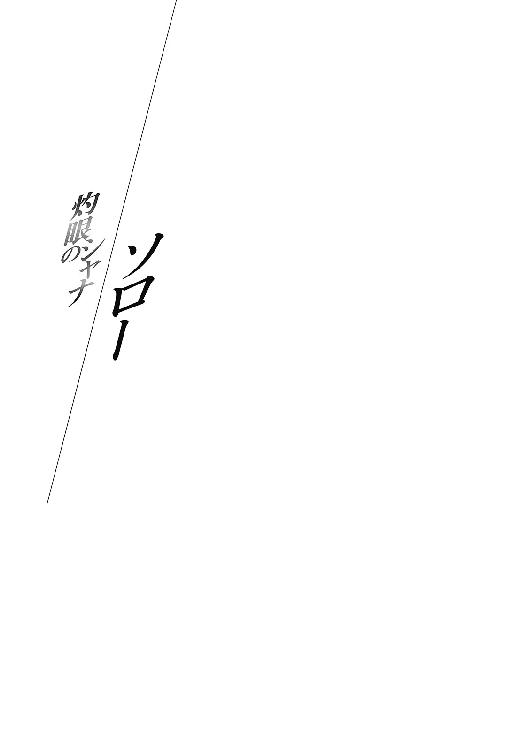

| 灼眼のシャナS 03 | |
| 高橋弥七郎 | |
| KADOKAWA / アスキー・メディアワークス (2013) | |
本書（電子版）に掲載されているコンテンツ（ソフトウェア／プログラム／データ／情報を含む）の著作権およびその他の権利は、すべて株式会社アスキー・メディアワークスおよび正当な権利を有する第三者に帰属しています。
法律の定めがある場合または権利者の明示的な承諾がある場合を除き、これらのコンテンツを複製・転載、改変・編集、翻案・翻訳、放送・出版、公衆送信（送信可能化を含む）・再配信、販売・頒布、貸与等に使用することはできません。

１ 侵略者
１─Ａ．
── 「ああ、思い出よ。夢のような影の中で、朽ちたる物や愛した人が蘇る」 ──
地球の一角、南北に長大な伸長を見せる、とある大陸に、四人のフレイムヘイズがいる。
名を『大地の四神』といった。
世の陰を跋扈し人を喰らう、異世界〝紅世〟よりの来訪者──〝紅世の徒〟を討滅し、以て世界のバランスを守る異能の討ち手の中でも特異な存在として知られ、畏れられている。
特異性と畏れの根源は、彼らが振るう絶大な力には、なかった。
なによりもまず、彼らが身の内に宿した精神にこそ、あった。
常のフレイムヘイズは、近しい者を〝紅世の徒〟に喰われた復讐者が殆どで、契約した〝紅世の王〟らが唱える『世界のバランスを守る』という使命は、自己の行為を正当化するための建前でしかない。復讐を果たす、長い月日を経て感情が純化される、等の過程を経て目覚める者らも稀にいたが、それら含めても、使命感は後天的に獲得されるものだった。
しかし、『大地の四神』は違う。彼らは、遠い呼び声に導かれ『大地の心臓』へと集った、天賦の才の持ち主であり、天賦の才を厳しい修行で磨き上げた達人であり、達人として〝紅世〟に在る〝王〟と明瞭に共振し、共振を彼らの世界たる『大地』を守る神の声と見なし、神より力を預かった『神官』と己を任じた......誕生した時からの、使命の権化だった。
そんな彼らであったから、フレイムヘイズの大原則であった『人の世の事どもに干渉してはならない』という鉄則も、厳格に守っていた。あくまで人間に害なす悪霊（彼らは〝徒〟をそう捉えていた）を討ち滅ぼすことで使命を遂行する、それだけに専心していた。
志操は、どこまでも固かった。
十六世紀初頭、欧州の西端から、長い戦争を終えて職にあぶれた下級貴族や兵士、荒れ果てた国土に見切りを付けた役人や職人、奴隷を含む交易品を求める商人からなる白人の一団が、一攫千金を夢見て大陸中部諸島へと上がり込んできたときも、彼らは手を出さなかった。
その際、神官の一人『死者の道を指す男』と、神の一柱〝憚懾の筦〟は、こう言い、
「ははははは！ なにに躊躇う必要がある、鏖殺してしまえばよかろうが」
「如何にも如何にも！ これこそ明らかな混沌の端緒ではないのか!?」
彼らの行動を裁定する神官の一人『雨と渡り行く男』と、神の一柱〝殊寵の鼓〟が、
「友よ。御憑神よ。これはいずれ起きていた、塞ぎようのないものなのだ」
「今まさに、東より溢れた人の波が届いた、ということなのですから」
そう言って、止めている。
一旦裁定が下れば、感情はどうあれ、彼らはその通りにした。黙々と本来の使命、彼らの大地に忽然と現れる悪霊の発見と討滅に、精励し続けた。
白人が略奪と殺戮の魔手を中部諸島から大陸へ伸ばしたときも、彼らはやはり、手を出さなかった。せいぜいが、探検を名乗る略奪行の中に混じっていた〝徒〟を、周りの人間諸共に踏み潰した程度である。『大地の四神』の名は〝徒〟の間にも轟いており、この、命に見合うとも思えない好奇心の冒険は、すぐに途絶えた。
そうして、ただ人間だけが、彼らの大地を荒らし続けた。
白人は、彼らが『インディオ』と呼んだ中南部の住人らを殺し、また殺されつつ、なお行動範囲を押し広げて行った。砦を建設して策源地を築き、伝道師を派して魂と文化を侵し、人を見ては奴隷として捕らえ、黄金を見ては欠片一つまでも奪った。大陸中部に栄えていたインディオの帝国は、初めて面した銃砲と馬の威力で、呆気なく崩壊した。
それら非道の行い自体に、彼ら『四神』は、怒りを感じていない。
なんとなれば、白人が出現する以前から、それはこの大地に生きていた人間たちにとっても日常の行為だったからである。圧政、戦争、略奪、殺人、占領、奴隷化、虐待、拷問、教化、強姦、誘拐、全てを、真っ当な人間として、ごく当たり前に営んでいた（例外は、習俗の違いというには古弊異質な、頻々たる人身御供くらいであろう）。
大陸中部の帝国......さらには南東部の帝国が、僅か十余年の後に同様の運命を辿ったのも、白人の武力的な優位だけが要因ではない。潜在していた部族の対立や王家の内紛という状況があったためである。全く生臭い、それはどこにでもある、人間の姿なのだった。
だから『四神』は、怒りではなく悲しみを以て、人間たちの在り様を見続けた。
その姿勢に、彼らが明確な揺らぎを覚えたのは、十七世紀に入ってから。
大地に恐るべき死が振り撒かれていることへの、戦慄ゆえだった。
暴力以外の力で、大地に満ちていた人間たちが斃れていた。
疫病、である。
白人は足跡とともに、この大地に存在しなかった病原菌をばら撒いていたのだった。赤痢、ペスト、天然痘、インフルエンザ、腸チフス、百日咳、コレラ、マラリア、黄熱病、ジフテリア等々、致死性の疫病が断続的かつ複数同時に、免疫を持たない人々へと襲いかかり、大きくは旧帝国の勢力圏から小さくは辺地の部族集落までを、悉く蝕んでいった。
最初に白人が上陸した島は、たった半世紀で、本来そこにいた島民が絶滅した。蔓延が猖蹶を極めた十七世紀になると、大陸の北・中・南部、白人が踏み込んだありとあらゆる地域で、少なくとも七割、大半は九割が、何らかの疫病の流行で死に追い遣られた。
その静かな、しかし根こそぎ命の刈り取られて行く酸鼻の光景を、茫然と見続けるしかなかった『四神』は、まさしく使命の権化ゆえに、初めて後悔という感情を抱いた。
もし、白人が到来した時点で自分たちがこれを〝徒〟のように討ち滅ぼしていれば、眼前に広がる惨禍を止め得ていたのではないか、と。人間社会に干渉しないという鉄則に自分たちが固執したために、守るべき人間社会そのものを破滅させてしまったのではないか、と。
「うう......ごめんなさい、ごめんなさい......私たち、は......」
全て手遅れ、もはやなにを悔やんでも仕方がない。
「私たちは......両の腕に塞ぎ得ぬ波を、それでも食い止めるべきだったのだろうか？」
そう、分かっていて、なお、悔やむしかなかった。
「正しかったさ、おまえは。なにより、私たちも、その裁定を支持したのだ」
大地を守るはずだった彼らの異能は、無力だった。
「考え続けよう。この私たちの、この沈黙が、本物なのかどうかを」
それら懊悩を、白人と一緒にやってきたフレイムヘイズたちは、なんとか宥め慰めようとした。大半は、優しさからではない。この埋火のような感情が、いずれ取り返しの付かない暴発へと、彼らを追い込むかもしれない、という恐怖からの行為だった。
討ち手として為すべきことは、なおも『四神』の前に厳とあった。
悪霊たる〝紅世の徒〟は、彼らの事情など斟酌せず、大地に蔓延っていたのだから。本義たる使命、神と神官たるの役割、世界のバランスの守護を、彼らは黙々と果たし続けた。
が、やがて、大地はまたその相を変える。正確には、死禍の中で少しずつ変わっていた。
接触した世界と世界が、混じり始めたのである。
大陸中・南部に上がり込んだ白人は、移住者ではなく征服者だった。
つまり彼らの目的は、この地で黄金と奴隷を得て、故郷に錦を飾ることだった（本国が、遠隔地での新貴族出現を恐れ、個人への土地譲渡を渋った事情もある）。ゆえに彼らは乱暴で粗雑で、しかし直截で単純だった。侵略の当初、本国が現地の貴族階級との結婚を推奨したこともあり、彼らはなんの遠慮もなくインディオの女性と交わって混血児を産み出していた。
「これらの魂を、私たちは守りの翼に乗せて、時の空を飛ぶべきなのか？」
また、インディオが疫病禍によって激減すると、彼らは代替の労働力として、多くの黒人奴隷をアフリカ大陸から持ち込み、その貿易を産業の一つとして体制に織り込んだ。結果、黒人とインディオの間に、白人と黒人の間にも、遂には混血児同士の間でも、血の混交が緩やかに複雑に始まり......いつしか大地には、そこにしかいない、新しい人間たちが現れていた。
「べき、もなにもないだろう。気に食わなければ、見捨てていいというのか？」
大陸中・南部を征服した白人の本国は、数百年に渡って異人種との戦いに明け暮れ、また黒人奴隷とも接していたことから、この大陸に住まう異人種に対しても、忌避感が比較的少なかったのである。『血の純潔』なる観念から、混血児は親が白人でも特権を享受することはできなかったが、それは大した問題ではなかった。なにより彼らは、存在にこそ意味があった。
「えっ......そ、そんな酷いこと......でき、ません......できません......！」
接触から数百年、征服から定住に方針が変わっても、支配層は依然、純血の白人が占めていたが、農園や鉱山を支える労働力、都市部での雑事用務は、増え続ける混血児が担っていた。植民地として一個の社会が成立・確立した頃になると、彼らはインディオや黒人と共に、身分や職業、服装や教会の礼拝にまで差別を受けながらも、分厚い層を確固と形成していた。
「先師よ。私たちは、風雨の中に本義を見失いつつあります。何卒、導きを──」
これら、裁定の基盤に入った皹の音を、悩める『四神』は魂に聞いた。
バランスを保たんと努めてきた世界の一方、悪霊より守らんと誓った大地の様が、相違してしまったのである。志操の固さゆえに、根幹の変異が齎す歪みは、より深刻だった。
進退窮まった彼らは、かつて人として集った『大地の心臓』──水脈巡る地下洞窟で、消滅までの時を過ごす先師『宙の心臓』へと、己が在り様を問いかけていた。
精神の摩耗と衰微により、骨と皮だけのミイラ同然となっていた先師は、瞼も開けず、口も開かず、座したまま滔々と、彼らを諭した。
《 汝ら 我が四人の弟子よ 沈んだ太陽は なにも導けない 》
「──我らは既に 恵みの熱と光を 失ったのだ──」
その掌に置かれた、丸に穴の開いたメダル型神器、契約解除の時を待つ〝王〟と共に。
《 もはや要るまい 汝らは もう 全てを知っている 》
「──汝らは 真人 全ての理を知り 託された者──」
かつて天空を制す黄金と謳われた、偉大なフレイムヘイズの威風堂々たる面影は、今やどこにも見えない。手を掛けただけで崩れ落ちそうな、干涸らびた死体同然の様態である。
それでも『四神』にとっては、人間として惑い迷っていた自らの赴く先を、討ち手の使命として指し示してくれた恩人だった。厳しく長い修行の果てに、大地を守る『神』の衣鉢を継ぐ者らを得た喜びを、唯一度の微笑で表してくれた師父だった。その彼が、
《 悲しみ怒れ 楽しみ喜べ 苦しみ悔やめ 安らぎ憩え そこに 使命は ある 》
「──汝らは 選べる 我らは 知っている──」
精神の残滓を縒り合わせ、最後の声を振り絞っていることを『四神』は感じた。
かつて、大地の窮みを見定めんと歩き続けた頑健な旅人は、正面から言葉に向き合った。
かつて、遠く近くに生死の悲鳴を耳に拾い続けた海女は、常以上に多く涙を零し続けた。
かつて、悪霊を討ち払う秘儀を受け継いでいた呪い師は、どこまでも静かに佇んでいた。
かつて、枷から脱するため自らの右足を千切り取った王子は、貼り付けた笑みを深めた。
軋んだ口元に、かつて見た微笑の気配が過ぎり、
《 誰に教えを 何に許しを 請うこともない 己で見定めて 決めろ 》
「──それこそが 汝ら『大地』の守り『神』──」
彼らの声は、遂に尽きた。
程なく、立ち去った彼らの背後、洞の口を緑に埋もれさせる『大地の心臓』の奥から、往時を偲ばせる眩い金糸雀色の輝きが溢れ......彼らは先師を喪ったことを、知った。
泣き崩れる『波濤の先に踊る女』と、
彼女を助け起こす『雨と渡り行く男』に、
大きな笑声を『死者の道を指す男』は放って、
輝きの欠片を『全ての星を見た男』が、天に仰ぐ。
世界の変貌に対する答えを探し、蔓延る悪霊を討ち滅ぼす、彼らの旅が、また始まった。
許せるのか、許せないのか。
受け入れるのか、受け入れないのか。
どちらの答えを出して、どう動いていくのか。
フレイムヘイズとして、使命の権化として、見定める。
彼ら『大地の四神』は前にも増して強く、己の在り様を、世界の理を、意識しながら歩き出した。凍て付く氷原、茫漠たる荒野、生い茂る密林、干涸らびた砂漠、そして人間の中を。
そこで彼らは、さらなる地獄を知る。
１─Ｂ．
── 「全ての人々の幸福を求めて、その目を凝らし、耳を澄ませ」 ──
ビリー・ホーキンにとって、自分の見たものだけが、世界の全てだった。
（っ......い、つも、威張り腐ってた、威勢は、どこ行った、ジョーの奴）
ほんの十四歳、一少年でしかない彼は、自分の生きている時代が、西暦で十九世紀後半ということも知らなかった。自分の住む土地が、かつてメキシコ合衆国やテキサス共和国の版図に含まれていたことも知らなかった。アメリカ合衆国が、今まさに北と南に分かれて戦争中であることも、自分がその南側の陣営に属していることも、全く知らなかった。
（あれ、ハンク、商談に出かけて、なかったの、か？）
彼が知っているのは、今が春の終わり頃であること、自分がヒマラヤスギの塀で囲われた開拓村に住んでいること、そこに十家族からなる人々が住んでいること、柵の外にあるのが牧草地と農地と森と小川であること、その外側に果てしない平原が広がっていること、ときおり巡回牧師や怪しげな交易商人が地平線の先から訪れること、それだけだった。
（は、ははっ、威張りんぼの、トムも、今日ばかりは形無し、だな）
物心ついたときからここにいたため、既知の範囲外になにかがある、という実感すら抱けていない。今在る小天地を出て行くことなど、想像したことすらなかった。
村と外とを往き来する大人たちの話すところによると、遠く東に合衆国の交易所が、遠く遠く南にメキシコとの境界線があるらしいが、彼はそれらを見たことはかったし、ついて行こうと思ったこともなかった。というより、そんな精神的余裕など持てなかった。
（弟は、どうしたんだよ、ジミー）
彼の日常には、ありとあらゆる家事、数多い家畜の世話、労苦の塊のような畑仕事、思い付きで開かれる牧師の集会等、日々果たすべきこと（しかも自分の主導できるものは、なに一つない）が多すぎた。もっとも、それは彼だけの話ではなかった。彼の知る、赤ん坊以外の住人全員が、彼と同等か、より以上に村のため働いていた。そうでなくては、この過酷な地で生きていけない──より露骨に言うと、すぐに死ぬ──のだから、当然ではあった。
（ジョン親父、今日は、がなり立てたり、しないんだな）
開拓村が、兵隊の駐屯する砦より遙か西......つまり、インディアンの蔓延るフロンティア最前線にあることを大人たちは誇りにしていたが、彼はその心境を理解できなかった。人も物も事件も、なにもない場所での日々の労苦、それだけが彼の全てだった。
（あっ、小さなアン、まで......）
今、そんな彼の全てが、見たこともない色の炎で燃え落ちていた。
ビリーにとって生涯最悪の日は、朝からずっと一続きだった。
朝の日課である水汲みの際、足を滑らせ川に頭から落ちてしまった。いつもながら石膏臭い水を朝食前にたらふく飲んでしまい、ついでにたんこぶまで頭の上に作った。
昼前に馬の世話をしていたら、突然竿立ちされて、危うく踏み潰されそうになった。手綱にしがみつくことで、辛うじて暴走だけは食い止めたが、掌を酷く擦り剝いた。
夕方には、父に拳銃入れを弄ったと濡れ衣を着せられてぶん殴られた。隣のジョーが常々持ち出して遊んでいると知っていたが、言い訳と取られるのが嫌で黙っていた。
他にも、やることなすこと、行くところ行くところで、痛い目や理不尽な仕打ちに遭った彼は、夕食前に父から再び拳銃入れのことを問い質され、遂に堪りかねて家を出た。
父も母も、追いかけては来なかった。
村は夜になると用心のため門を閉め、高い丸木塀の外に出ることなどできないから、ではない。怒りや恐れから家を飛び出すのは、そして翌早朝、いつの間にか自分のベッドに潜り込んでいるのは、彼にとって日常茶飯事だったから、である。
逃げ込む先は、いつも決まっていた。
両親は、きっと他の家の軒下で寒さに震えているのだろう、それが利かん気の強い息子への罰になる、と勝手に思い込んでいるようだったが、実態としては逆だった。村の十家族を集める広場に設えられた演壇の下こそが、彼の避難所だった。
演壇、避難所、と言っても大人二人が抱えて余る程度の木箱でしかないが、小柄な少年が寝転んで潜むには丁度良かった。また、大柄な者も多い村人を乗せるため頑丈に作られており、補強された四方の板は風も通さない。その日は、昼間に人目を盗んで敷布代わりの干し藁を取り替えたばかりということもあって、寝心地は家のベッド以上だった。
（今日、たった一つの最高がこれかよ）
端の板を外して演壇の中に潜り込んだビリーは、ふて腐れて眠った。退屈と思うほどの余裕もない、労苦だけが続く日常との、それが決定的な別れとなることも知らず。
次に、目を開けたのは数時間後。
「── ── ッ!!」
遠くに、甲高い声を聞いてから。
（......ちぇっ、誰だ？）
折角の最高を破られて、彼は鈍い思考を巡らせた。
（なんだよ......マルチナ婆さんが、またヒステリー起こしてるのか？）
その頭頂を掠めるように、
ドガッ、
と馬が蹄を蹴立てて箱の外を通り過ぎ、眠気が吹き飛ばされる。
（え、っ!?）
慌てて跳ね起きかけて、自分が居る場所に気付いた。箱のすぐ脇を、馬が駆け抜けていったらしい。夜の夜中に、狭い塀の内で馬を飛ばす者などいるはずが──
（夜、じゃない？）
そんなに寝入った感覚もないのに、覗き窓にしている節穴から光が漏れていた。月明かりにしては強すぎる。しかも、その光は異様な、毒々しい緑......錆浅葱色をしていた。
（なにが、どうなっ──）
再び、意識を喚起させた叫びが、
「 ッ!!」
ビリーの鼓膜を微か、震わせる。
なぜそうさせたのか、彼はようやく気付いた。
叫びは、知り合いが助けを求める声、だったのである。
（今の声は、ジョー!?）
わけが分からないまま、藻搔くように外に出ようとした彼の鼻先を、先と同じく板一枚を隔てて馬が荒々しく駆け抜けた。と同時に、
「～～～～ッ!!」
別の、まったく異質な叫び声が至近からがあった。
先とは真反対、吹き上がる憤怒とも、喜びの興奮とも、高らかな歌声とも取れる、しかし彼の聞いたことのない、一繫ぎのようで滑らかな強弱と韻を含んだ、雄叫びだった。
一瞬で、知る。
（インディアン!!）
実際に見たことなどなかったが、子脅しの御伽話のように、開拓者の教訓のように、周りの大人がしつこく語って聞かせてくれた全てが、鮮明な確信として背筋を這い上がった。
先祖代々、苦難の末に作った開拓村を何十何百と壊した、前進を阻む異教の蛮族。
そこに生きていた、自分と同じ開拓民を何千何万と殺した、凶暴で無法な盗賊。
今、御伽噺から教訓から、蛮族が盗賊が飛び出して、自分のすぐ傍らを通り過ぎた......その事実に、ビリーは心身を竦み上がらせた。
先の一つを呼び水としてか、再び雄叫びが上がる。
今度は同時に複数、遠く近く、村中から。
「～～～～ッ!!」
「～～ッ!!」
「～～～～～～ッ!!」
伴奏は、馬蹄の音と、知り合いの絶叫。
「 ッ!!」
「 ッ!!」
「 ッ!!」
絶望的な抵抗であれ、死や痛みの発露であれ、助命の嘆願であれ、ビリーは無意識の自己防衛として、これらの意味を脳に届けない。それでも、体の方はノロノロと動き出す。
（やめろ）
勘が、そう告げていた。
それでも、体は節穴の方へと動いて行く。
叫び声の中に、両親のものが混じっていたのかもしれない。
（やめろ！）
であれば、なおさら止めるべきだったが、それでも体は節穴を見る姿勢を取る。叫び以外に向けていた意識と聴覚が、別の異様な音を、節穴の正面から拾っていたためである。それを確かめる行為で、叫びを打ち消したかった。真逆のことを告げる勘をねじ伏せ、
（やめろ!!）
ビリーは見て......そして、心を壊した。
己の村を焼き尽くす、錆浅葱色の炎を。彼の世界が、なにもかも覆った。
広場の真ん中に、堆く積まれたモノを。彼の世界にいた人々も、砕けた。
丁度、大人から聞いた通りの格好をしたインディアン──腰布と房の付いた脚絆を身につけた、中背で引き締まった体軀の男が、新しいモノをそこに加えたところだった。
（っ......い、つも、威張り腐ってた、威勢は、どこ行った、ジョーの奴）
両手を投げ出して、逆立ちのように山に加わったのは、隣に住む背の高い少年。
（あれ、ハンク、商談に出かけて、なかったの、か？）
その脇に、見覚えのある眼鏡の青年が、黒っぽい液体に塗れて座り込んでいる。
（は、ははっ、威張りんぼの、トムも、今日ばかりは形無し、だな）
他の皆に埋もれているのは、背を向けていても一目で分かる、太っちょの友達。
（弟は、どうしたんだよ、ジミー）
落ち着きのない兄弟の片割れが、今は動かず、頭から白い物を垂れ流している。
（ジョン親父、今日は、がなり立てたり、しないんだな）
顔見知りの小うるさい老人は、歯の欠けた口を開けたまま、呻き声も出さない。
（あっ、小さなアン、まで......）
そして、よく子守を頼まれた三歳の女の子は、首だけになって、体がなかった。
顔見知りと、恐らくは両親でできた山を、錆浅葱の色は少年に見せ付け、焼き付ける。
そしてもう一つ、
「フレイムヘイズ!!」
言葉が、音として刻み付けられた。
馬で辺りを駆け回る者、山の周りで軽やかに踊る者、その場で飛び跳ねて叫ぶ者、全てのインディアンが声を限りに、その一つ言葉を唱和している。
「フレイムヘイズ!!」
「フレイムヘイズ!!」
「フレイムヘイズ!!」
節穴に釘付けになっていたビリーは、その極限まで見開いた視界の端に、ゆっくり、重々しく、近付いてくる足を捉えた。同じ様式の脚絆を付けた、細長い足を。
男からは、唱和の声が聞こえて来ない。
誰もが男に視線を集め、唱和している。
間違いない、
（──こいつ、が、炎の揺らぎ──!!）
極限の緊張の中で、ビリーはインディアンの長、この襲撃の首謀者を見つめていた。
が、それ以上のことができない。節穴に取りすがった姿勢のままで、体が固まっていた。その理由が恐怖による萎縮である、という当たり前の感覚を思い出したのは、フレイムヘイズの近付いてくることが、即ち自身の危機であると気付いてから。
（あ──）
その膝が節穴の寸前まで来て、なお動けずにいた彼の頭上を、
（──っ）
ドン、という音が打って、危うく叫びを漏らしそうになる。
フレイムヘイズが、演壇の上へと飛び乗ったのである。
そうして、フレイムヘイズは何事か太い声で叫び、
「 !!」
同時に錆浅葱色の火の玉のようなものが、広場の奥に聳えていた塀に、焼け落ちつつあった家々に、村人からなる山に、次々と飛んでは炸裂し、全てを吹き飛ばした。
爆圧に軋む演壇の中、壇上に立つフレイムヘイズの下、
全てを見届ける窓となっていた節穴に、かつて村人だったらしい欠片が当たって、ビリーは再びの......決して安からぬ眠りの中へと落ちていった。
目の覚めたビリーは、いつもと同じ、底冷えする朝の空気に、身を震わせた。
ぼんやりした頭で、節穴から漏れる朝日を見つめる。眩しいが、視界が狭い。
奇妙に思って、顔に手をやると、節穴に貼り付けていた右目が、潰れていた。
脳まで突き抜けるような痛みの中で、なお意識は冴えない。
焼け焦げた箱から出て、残された左目で辺りを見渡した彼は、全てが終わっているのを知った。ただ茫然と顔を巡らせ、鮮明な朝日の下で露わになる周りの光景を、吞み込んで行く。
村人は粉々の消し炭となり、村は焼け落ちて、なくなっていた。
そのまま小一時間ほども立ち尽くしていた彼は、ようやくの一歩を踏み出す。
死体を集めて埋葬したりはしなかった。無駄な労力を費やす気はない。
ノロノロと燃え残った廃墟を彷徨い、潰れた右目に布切れを巻き付け、ハッキリしない頭で必要と思った全てを焼け跡の中から拾い集めると、彼は歩き出した。
内側に向かって倒れた門を踏み超え、
今や耕す者もなくなった畑を横切り、
馬の逃げ散った牧草地を突っ切って、
駆け去った馬群の足跡を追いかける。
低く吐き出した呪いの言葉が導くように、
「フレイム、ヘイズ......」
行く先を一つきりの目で見据えて、行く。
指標となるものがなにもない、まるで大洋のような草原の彼方へと。
開拓村に、人が戻ることは二度となかった。
２ 殺戮者
２─Ａ．
── 「全ての人間は平等に作られ、譲ることのできない権利を与えられている」 ──
大陸北部に白人の一団が出現した際も、『大地の四神』は中南部のそれと同様、不干渉の姿勢を堅持していた。
北部には、以前から白人の航海者が稀に訪れており、特段の注視を引くような事件も起きていない。彼らは中南部に現れた、巨大な帝国による征服と略奪の尖兵、などという大がかりな手合いではなく、大半が毛皮目当ての交易商人か、でなければ漂着した船員、やや後には探検隊など、あくまで少数の来訪者でしかなかったのだった。
が、百年ほどが経った十七世紀初頭、本格的な移住者が現れることで、事態は緩やかに進行し始める。彼らが『インディアン』と名付けた北部の住人たちとの衝突激化、という形で。
中南部における征服軍の秩序立った手順──まず要塞を築いて兵を駐屯させ、次に伝道所を建てて聖職者を派遣し、そこから金銀で満ち溢れた幻の黄金郷探索に向かい、最後に故郷の街並みと文化を再現する──とは違い、こちらは全く小規模な、食い詰め農夫や年季契約奉公人、一旗組や宗教的異端らが主である。彼らは、本国から遠く離れた土地を切り拓くに相応しい、強烈な勤労精神と勇気、傲慢な信心と楽観で塗り固められた、貪欲の塊だった。
食うや食わずで流れ着いては、当地の部族の蓄えを無造作に強奪し、接触を求めてきた長やその娘を誘拐して人質とする......中南部で国家派遣の軍隊が行っていたことを、取るに足りない少数の集団で、恥ずかしげもなく堂々と、空恐ろしいほどの無謀さで、行った。
図々しく上がり込んできた居直り強盗への反発は当然、大きく強かった。開拓村ごと殲滅されることも度々、稀に土地の購入という殊勝なことを行っても、すぐにその代価を過剰に強要してインディアンの怒りの火に油を注ぎ、紛争の末なんとか和解に漕ぎ着けて、また懲りずに手を出しては痛い目を見る、という救い難い一進一退が延々、繰り返された。
白人らがこの、他人の住まう土地を開拓する、という不気味な行為（彼らは、自分たちの発見した新大陸で、定住や耕作のない猟場は空地と見なし、また定住や耕作をしていても、書類にない領有など認めなかった）を、悪戦苦闘しながらも辛うじて継続し得たのは、戦う相手が中南部のように広大な帝国として纏まっておらず、非戦闘員含めて、多くとも数千という部族群しか形成していなかったからに過ぎない。
各々部族の生存活動を行わねばならないインディアン達は、連合を組むことはあっても、それを維持し得えなかった。近隣の部族同士は相争っていることも多く、協力体制は徹底を欠き、白人の入植にとどめを刺すほどの決定的な勝利を摑みきれなかったのである。
それでも、大勢としてインディアン側は優位に見えた。東海岸にか細く貼り付いた白人の植民地は、相争ったり蹴散らされたりして、大いに『四神』を油断させた。その頃の彼らは、大陸の南北を問わず荒れ狂う疫病禍の方にこそ、心を痛めていた。
油断のツケは、十七世紀の後半に、早くも巡ってくる。
想像だにしない悪徳の席巻に、最初に気付いたのは『全ての星を見た男』である。
大陸北部、主に南東海岸のインディアン部族が、次々と消滅していた。
原因は、白人による殺戮でも、疫病による禍害でも、ない。
同じインディアンによる──奴隷狩り、だった。
戦闘に長けた一部の部族が、近隣に住まう少数部族を襲って捕らえ、これを白人の奴隷市場で売って西洋の物品に換える、という事業に手を染め始めたのである。買われた奴隷は主に住民が絶滅した中部諸島に送られ、ほとんどが労苦と疫病で、死んだ。
「この、憎しみと悲しみの嵐が、我々の沈黙の結果だというのか」
人間を捕らえ、奴隷として売ること自体は、インディアンにとって珍しい行為ではない。記録に残るものだと、接触当初から、漂着した白人船員を同盟部族に売ったりもしている。利害のかち合う部族とは相争っていたし、攫った捕虜を奴隷にすることもあった。
「ああ......そんな、あんまりです......」
どころか、捕虜の虐待や女子供の誘拐などは日常茶飯事といって良かった（前者は戦死者に手向ける復讐の儀式、後者は出生率の低さの補完、という面もあったため、悪徳の一言では片付けられないが）し、機会が許せば敵対部族を皆殺しにすることもあった。
「ははははは！ まったく、この手際の良さには呆れるしかないな！」
ただ、今回の事態は、それを白人が己の勢力拡大のために煽り立てている点が違っていた。友好部族に銃と弾薬を供与し、敵対部族を狩らせて奴隷として買い上げることで、効率的に障害物を取り除く。これは、アフリカで黒人部族相手に行われた手口の再現だった。
「それは、どちらの側のことを言っているのですか？」
白人の持ち込んだ銃と馬によって、戦闘力と行動範囲を飛躍的に拡充したインディアンは、まんまと凄惨な共食いに狂奔し、まず、争い事に疎い穏健な部族から滅んでいった。次は、普段から敵対していた近隣の部族、その次は遠征して行き当たった見知らぬ部族、その次も襲って、その次は襲われて、その次、その次、と繰り返す内に、皆、消えた。
十八世紀の初めになって気付けば、十万単位のインディアンが共同体ごと消え失せ、その跡に白人の入植者が踏み込んでゆく流れができあがっていた。幾らか残った狩り手の側も、脅威となる部族が消滅した時点で、多くが物資の供与を止められ、立ち枯れていった。
これらと並行して、土地の権利者を一方的に決めて先住者を追い出し、村と畑を焼き払って餓死させ、酒を飲ませて取引内容を誤魔化し、病原菌の付いた毛布を贈って疫病を流行らせ、剝いだ頭皮に賞金を掛け、白人国家同士の戦争に傭兵として駆り出し......凡そ人の考え得る、ありとあらゆる手管を尽くして、白人らは直向きに熱心に励んでいた。
ふと『四神』は、
なにか今、恐ろしいことが起きているのではないか？
そう、思い至る。
眼前で繰り広げられる凄惨の景色に、『大地の四神』は異様な胸のざわつきを覚えていた。
声を抑えつつ、神の一柱〝啓導の籟〟と神官の一人『全ての星を見た男』は問いかけ、
「我々が、使命と認識するものと、これは異なる。それは分かって、いる」
「だが、心臓に沈む痛みを、莽から姿を消す影たちを、ただ見送るのは正しいのか？」
彼らの行動を裁定する者として『雨と渡り行く男』と〝殊寵の鼓〟が、
「御憑神よ。友よ。これが正しいか否かは、例え遅かろうと、今から決まるのです」
「なにをなすべきか......時の報せは雨垂れのように、自ずから然りと、届くでしょう」
そう言って、気構えを促した。
ざわつきは、彼らが見つめる先で、実に単純な輪郭を、鮮明に表して行く。
滅ぼす。
ただ、それだけのこと。
大陸南部のように、国家の滅亡によって支配者が替わり、新たな体制に組み直されるのではない。割り込み割り込まれることで混じり合ったりもしない。ただ、邪魔者として滅ぼす。
ここにいる白人らの集団は、共に生きることを拒絶していた。
ただ、追い出して奪うために、滅ぼそうとしているのだった。
その真意は、政策として、こう呼ばれていた。
清掃と植民、と。
一八世紀の末、居着いた白人入植者は、上がりの取り分を巡って海向こうの本国と争い、遂には自らを切り離して、大陸北部に蚕食の根を張った。
その名を『アメリカ合衆国』という。
大陸における白人の、明確な主体となる国家の出現だった。
とはいえ、当初この体制は、利害も気分も異なる植民地を纏めるための理論武装に忙しく、未だインディアンの多く住まう西の土地──彼らは、これを未開拓地域と名付けた──への膨張は、個々の市民の自主性に委ねていた。政府は入植者とインディアンの調停役であり、紛争解決のため条約を取り決める機関、と自らを任じた......あるいは装った。
が、もちろん、実際の条約取り決めでは白人の都合が優先され、インディアン側に有利な条件で締結されることは、ほぼなかった。どころか、相手が読み書きできないことにつけ込み、口頭で合意されたものと異なる条文を書類に記す詐欺も、平然と行っていた。
政府は条令の中で『インディアンに対しては最高の信義が守られなければならない』と謳いつつ、一方で『領有権を失わせる機会があれば、どのような場合でも見逃してはならない』との訓令を出している。彼らの本音は、政府発足当初にインディアン問題を戦争省の管轄に置いたことで明白だった（この部署は、後にインディアン管理局の形を取る）。
この新国家の発足により、開拓民らは前にも増して意欲的かつ傲慢に、移民を加えて続々と、自分たちの前に広がる、獲得されるべき『神の与え給うたアダムの庭』へと猛進していった。彼らは条約など気にも留めなかった。自分たちの側からは平然と破って政府に追認を迫り、インディアンの側が破ると非難して国家の懲罰を求めた。
対して政府は、そんな開拓民らを全く掣肘しなかった。インディアンとの間に結ばれた条約の不履行や破棄、反故は三百余もの多数に上ったが、その責任を取る者は、どこにもいなかった。逆に、そうした条約の都合の良い部分だけを抜き出し、恩知らずの野蛮人どもを懲罰するため、軍を派遣するのが彼らの仕事となっていた。
また、いざインディアン部族が、生き残るための苦渋の選択として『文明化』を受け入れ、法律の制定や行政の整備、黒人奴隷を使った農場の経営、宣教師による改宗と教育、独自の文字開発から英字新聞の発行まで、その実を大いに挙げると、政府は遠慮なく彼らを従属自治区として扱い、実り豊かに育った土地を取り上げた。
結局のところ、この国家が唱える『文明化』とは、奪った土地を白人入植者へと安く払い下げること、最も価値多き市民である白人自営農民（先の部族の長は、白人の父と、混血児の母の間に生まれていたが、それでも）を育成することであり、インディアンの繁栄や自活、どころか生存も、端からお呼びではなかったのである。
十九世紀の初頭も過ぎた頃、
それらの本性を剝き出しにした法律が、僅かな票差で採択されている。
追い出したインディアンを保留地へと押し込める、強制移住法である。
政府の負担で移住を世話し、自治権の約束された指定保留地で、文明化のための保護監督を行い、手放した土地の補償として一定の生活費を支払う......自ら称して曰く『人道主義と国家の栄光を実践する』法律だった。字面の美辞麗句は言うまでもなく飾りで、その実質は、インディアンの住んでいた肥沃な土地を取り上げ辺境へと追い払う、絶滅政策だった。
この移住費用は大抵、見積もりが甘く、過酷な旅程を強いられたインディアンの多くが、食料や衣料の不足によって、保留地に辿り着く前に倒れた。
押し込められた狭い土地では以前同様の暮らしなど不可能であり、当然生活も厳しく、なにより敵対する部族らが同じ保留地へと放り込まれていた。
それらの反目に加え、先に着いた部族と後に着いた部族の間でも、農耕部族と騎馬部族の間でも、保留地内の土地を巡って、熾烈な争いが起こった。
当初与えられていた保留地にまで白人が乱入し、そこに居住していたインディアンを殺害したことで、政府がさらなる移住を強いることさえあった。
国家が南北間の戦争に突入し、警備の兵が撤収すると、保留地の保証を巡って、また単純に不和の爆発として、インディアン同士の戦いも始まった。
アメリカ合衆国という国家機構の全ては、インディアンを轢き潰す機械だった。
いつしか『四神』は、遠回しに人を物を介して、インディアンを助けるようになっていた。
西洋で生まれた一人のフレイムヘイズが、討ち手らの溜まり場でしかなかった外界宿を抜本的に作り替え、表の経済活動と交通機関に組み込み始めるという、大原則であったはずの『人間社会への不干渉』を秘密裏ながら緩やかに破っていたことの影響だった。
というより、この大地に起きている惨状が、今にも『四神』の暴発を呼びかねない、との懸念を深めた討ち手の幾人かが、外界宿の例に倣うよう勧めた結果だった。焼け石に水と分かっていて、それでも『四神』は勧めに従って、ほんの僅かな手助けを行った。
粘り強く、政府とインディアン双方の仲を取り持とうとした『全ての星を見た男』と、
討ち手として契約した同胞らの、無謀な激発を幾度も抑えた『雨と渡り行く男』と、
強制移住の途に就く列に混じり、人々と共に泣いていた『波濤の先に踊る女』と、
ただ一人......固まった笑顔の『死者の道を指す男』だけが、静観を続けていた。
が、やがて、
全く必然の帰結として、破局の時は来た。
父祖伝来の地からの立ち退きを拒み続けてきた、とある一つの部族が、遂に抗戦を諦め、移住の途に就いた。政府は交渉を冬まで引き延ばしてから、彼らを荒野へと追い遣った。
費用節減のため物資は乏しく、それも途上で白人に略奪され、暴利を貪る移住請負業者が用意した渡河の老朽船は転覆した。辿り着いた狭い貧寒の土地も、しかしすぐに銅鉱床が見つかったとの報告で移住が取り消され、また別の遠い土地へと移ることを余儀なくされた。
南北戦争最中の、南部連合が海外資本の助力を得るための材料である鉱山、そのために邪魔なインディアンを除ける、という特例措置であったため、移住は強圧的で手荒だった。
その追い立てられる中に、雪と風で倒れた、一人の少女がいた。
途上において祖父は死に、父母も殺され、部族の半数も消えた。かつての暮らしは背後に遠く霞んで、二度と戻れない。少女は、行く先のあまりな寒さに、折れた。その震える細い手の中には、いつか出会った泣き虫の女性に貰った、指先大の偶像が、あった。
「ああ神様、助けてください。もう人間にできることはありません」
瘦せ衰えた『死者の道を指す男』は、祈りを『四神』の内へと届け、響かせた。
その偶像こそ、彼が力を振り絞って作り上げた、祈りを受け止める『神』の心。動き回る他の三人に託し、あらゆるインディアンの部族へと行き渡らせた、黄金の欠片だった。
少女の祈りは、一人のものであり、一人のものではなかった。今も数万、声を届け続ける世界が織り上げてしまった、立ち至った本物の絶望、全てに力尽きた真粋の涙、だった。
神の一柱〝清漂の鈴〟と、神官の一人『波濤の先に踊る女』が、静かに呟き、
「これが、時の報せ、ですか」
「いいのですね......もう」
彼らの行動を裁定する者として『雨と渡り行く男』と〝殊寵の鼓〟が、
「御憑神よ。友よ。悲しい旅路となります。それでも、これが正しい、と胸に決めましょう」
「ええ。我ら『大地の四神』の、名が故に」
そう言って道を示し、彼らは、誰が先と言うこともなく、歩き出した。
倒れた少女を踏み越えようとした移住監督の騎兵隊は、忽然と現れた亡者の群れに食い散らかされ、雨に逃げ道を見失い、降り注ぐ流星に打たれ、洪水に吞み込まれ、一掃された。
「ははははは！ 全世界の『神の戦士』に喧嘩を売る烽火としては、こんな所か！」
「目指すは、アメリカ合衆国の完全破壊。これで、よろしいですね？」
「鷲たちの舞う青空のような、生存と自由を齎すために」
「さあ、行きましょう......涙の、道を......」
こうして『大地の四神』による人間社会への干渉と反撃、後の世に、ただ『内乱』とのみ呼び倣わされる、フレイムヘイズによる空前絶後の規模となる同士討ちが始まった。
時に西暦一八六三年、南北戦争の真っ只中である。
２─Ｂ．
── 「明日とは、時の中で最良のものを受け取る日」 ──
北米大陸中南部。
夕暮れ近い道なき道を、とある一団が、のんびり進んでいた。
一台きりの馬車を中心とした数十からなる列は長く、誰もが踊って飛び跳ね、またチョコチョコと歩いている。陽気な音楽の伴奏があれば、大道芸人かサーカスの入来として、子供たちが駆け寄ってくるかもしれない、まことに長閑で、楽しげな一団だった。
ただし、ここは人波溢れた街中ではない。
全周が見渡す限り広大無辺、容易に人を容れない草の海たる柵に囲まれた平野である。
そして、馬車は派手な乗合馬車だった。
最新式の懸架装置を備え、花の浮彫に彩られた二階付の四頭立て、という大型である。
なにより、この一団は人間ではなかった。
かもしれないというのは、踊る人形たる彼らには、種も仕掛けもなかったからである。
その容姿は、まさに様々。
優美なドレスを纏う姫、ツギハギのある兎、糸繰り人形の魔法使い、天使の輪と羽を付けた熊、黒枠だけという影絵の女神──布の袋から木彫りにガラスに焼き物まで、掌に載る小ささから馬車以上の大きさまで、人形達が行列を作って、荒野を旅しているのだった。
と、その先頭を意気揚々と跳ね歩いていた大きなぬいぐるみの犬が、
「おや」
ヒョッコリ立ち上がって、人間のように額へと手を翳す。
「前の方に、なにかいるぞ？」
答えて周りが跳ね回り、
「まぁた黒白の蝶が舞ってるのを見間違えてるんじゃあないの？」
「群れからはぐれたバッファローかもよ？」
「それは嫌だね。連中の臭いことと言ったら！ ボタンの鼻がもげちゃうよ」
その一つが、
「違うよ、人間だ！」
大声で叫び、飛び上がった。
倒れ伏す何者かが前方にある、との報は、まるでボールのように行列を伝い、ほどなく馬車二階の長椅子に寝そべっていた一人の男が、ゆっくりと身を起こす。
「人間？」
荒野の風にか、調律の揺れた声を零す、線の細い美男子である。旅の身形とは思えない、仕立ての良い純白のスーツが、夕暮れに侵されず照り映えていた。
「殿の斥候との距離は、ちゃんと空けていたはずだけれど」
その傍らに控えていた小さな、粗末な女の子の人形が、堅苦しい声で問いかける。
「強行軍からの脱落者の可能性があります。周りを警戒させますか？」
「彼らが混じっていて、人一人を置いていくとも思えないな、私の可愛いマリアンヌ？」
対照的に男は、ニッコリ蕩けるような笑みで返した。
マリアンヌと呼ばれた人形は、ぺこりと頭を下げる。
「考えが足りませんでした。申し訳ありません」
「謝るようなことじゃあ、ないさ。まずは確かめてみよう」
男は笑みを浮かべたまま、未だ進み続ける列へと、手を振り向けた。
「止めおくれ、ローレッタ」
「はい、ご主人様」
馬車自体が返事をして、御者もいない四頭の、陶器でできた馬たちが一斉に足を止める。
これに、列全体の人形らが倣った。口も噤んで、主の次なる命令を待つ。
唐突に訪れた荒野本来の寂寥の中、男は中空に飛んだ。周囲に浮かぶ長衣が、彼を優雅に軽やかに運ぶ。列の先頭を飛び越え、人影頭上の浮遊に伴うのは、マリアンヌ一体のみ。
「斥候では、なさそうですね」
「ふむ、それどころか......子供だ」
倒れ伏す襤褸切れのようなマントと帽子の間に、年端もいかない少年の顔が覗いていた。右目は潰れているのか、乾いた血のこびり付いた布が巻かれており、土に塗れた足回りも所々擦り切れている。吐息は細く鋭く、今にも途絶えそうな程に憔悴しきっていた。
なぜ、こんな人里離れた場所に、こんな子供がいるのか......ほんの少しだけ疑問に思った男は、しかしすぐに、それを放り捨てる。実際、どうでもいいことだった。
よって、常のように軽く言う。
「まだ生きている内に、喰らってしまおうか」
が、
「 、 」
男は存在へと伸ばしていた力を、すんでの所で、止めた。
少年が吐息混じりに漏らした、途切れ途切れの言葉が、
「 、 ズ 」
その言葉に籠もった強い情念が、届いたからだった。
伸ばす力に代え、注意深く聞き耳を立てた男は、
「 フレ イム、ヘイ ズ 」
確かにその、欲し求めていた言葉を聞いた。
マリアンヌが体ごと、男に向き直る。
「ご主人様」
「ああ、私の可愛いマリアンヌ......どうやら、見つかったようだ」
男、近代でも五指に数えられる強大な〝紅世の王〟──〝狩人〟フリアグネの顔に、深い深い、歓喜の笑みが浮かぶ。今や〝紅世の徒〟にとっての死地と化している、内乱最中の大地における捜し物を、ようやく見つけたことへの、歓喜の笑みが。
暮れて行く夕日の下で、野営の準備が行われている。
乗合馬車を中心に、人形たちが近く遠く、何重かに取り囲んだ円陣である。なぜか馬車の二階には、不似合いな様式（中華帝国のものである）の吊り旗が掲げられていた。
馬車から運び出させた長椅子に、ゆったりと体を預けたフリアグネが、
「君は運が良い」
胡散臭さを隠そうともせず、明るく親しげに笑いかける。
「もし、通りがかったのが他の〝徒〟なら、問答無用で喰らっていただろう」
「......」
穏やかながら調子っ外れなその声に、目覚めた少年は答えない。
叩き起こされた鼻先に突き付けられたパンと水を搔き込むと、馬車の大きな車輪に体をもたせかけ、蹲ったままである。その前で、膝丈ほどのビスク・ドールの列が、馬車の後部から薪をリレーしている様を見ても、驚愕や動揺の欠片さえ見せない。
「まったく、因果の交差路とは、よく言ったものだ。私と君は、今日という日、この世界の片隅で、出会うべくして出会ったんだよ」
「......」
やはり少年は答えず、深まる闇以上に昏い一つきりの眼光を、帽子の下から放っている。人形の手から手へと渡り積み上がっていく薪を、緩い大地の起伏に立ち並ぶ様々の人ならぬ人影を、まるで悪夢の続きのように睨め付けていた。
「......」
フリアグネは、それをこそ必要としているため、反応の薄さにも頓着しない。ただ自分に必要な部分だけを、薪を挟んで向き合う人間から取り出そうと、話を続ける。
「是非とも、君に今そうさせている詳しい事情を聞かせて欲しい。他の誰でもない、この私なら、君の望みを果たすことができると思うよ？」
と、その前にドールたちが、話の終わるのを待つべく整列した。
応えて、マリアンヌが話を通す執事のように、長椅子の手摺へとちょこんと立つ。
穏やかな、微笑みの目線を遣るだけで、フリアグネは許可した。
ふわふわの髪をした童女のドールが進み出て、腰を屈めた一礼とともに報告する。
「野営の準備、完了しました」
「お疲れ様」
芝居がかった受け答えに満足して、フリアグネは手の甲を下に、指先を薪へと向ける。いつしか互いの顔も隠すほどに濃くなっていた夕闇の中、その指先に薄白い炎が点った。
刹那、
「...─」
少年の眼光が爆発するように膨れ上がった。
見覚えた現象への衝撃と、喚起された莫大な憎悪に押され、目を見開いたのである。
「──ッ!!」
立ち上がった動作も見逃すほどの速さで前へ踏み込み、ベルトの後ろ腰に差していた拳銃を右の手で抜き放っていた。のみならず左掌で撃鉄を起こして発砲、しかも命中させていた。
一帯の世界を支配した、荒々しい破裂音と眩い発砲炎が消え果ててから確かめる、
生まれて初めての行為とは思えない、神速と言っていい抜き撃ちの結果は、
しかし全く、無意味だった。
「驚いたな」
平然と感嘆の声を上げるフリアグネは、長椅子に寛ぐ姿勢すら崩していない。騒ぎ立つマリアンヌ始めとする人形らを掌で押さえる傍ら、
「いや、撃ったことに、じゃない。君の射撃技術に、だけれど......ともあれ」
自分の眉間で止まっていた鉛の弾丸を、軽く摘み上げた。撃った姿勢のまま固まる少年へと見せつけるべく、自分の目の前に翳して、言う。
「これでは届かない」
「──」
先までの沈黙とは違い、声を出せなくなった少年は、自分の撃ち込んだ弾丸が、摘まれた指先から再び湧き上がった薄白い炎によって、跡形もなく蒸発させられるのを見た。
互いの立ち位置を明確にしてから、フリアグネは核心を突き付ける。
「そう、君が狙い定めるフレイムヘイズの命には、ね」
「──!!」
先同様の激発へと心の天秤が一気に傾いて、しかし少年は動けなかった。自分の得物が役に立たないと実証されたばかり、という理屈だけではない。より以上、指先の炎を灯りとし、夕闇の奥から笑いかけてくる相手の存在感に、いつしか全身を射竦められている。
「──、......」
「だが、言っただろう？ 君は、本当に運が良い」
白い美貌に浮かぶ、深い青とも澄んだ紫とも見える双眸が、少年の全てを捉え、抉り出そうとしていた。その上で、どこまでも友好的に、変わらず胡散臭く、求める。
「もう一度、言おうか。他の誰でもない、この私なら、君の望みを果たすことができる。まずは、君の話を聞かせてくれ。それから、私たちの話をしよう」
少年は、言われてようやく許されたように、
「......」
微動だにさせていなかった銃口を、下げた。
赤々と燃える焚き火を挟み、熱い湯気を立てるコーヒーを介し、フリアグネと少年が互いの事情を──片方が言葉多く大仰に、片方が言葉少なく大雑把に──話し終えた頃、
「おんや、なんで人間がいる？」
計ったように、剽げた声が降ってきた。
「!?」
異変に過敏な少年は、瞬時に体を低姿勢で旋回させて自分の背後上方、声の源へと銃口を突き付ける。たった二度目で抜き撃ちの動作は洗練され、さらに素早くなっていた。
そちらは苦笑と共に置いて、フリアグネは本来予定していた会談の相手を見上げる。
「やあ、二百年ぶりかな、我が古き友〝瓊樹の万葉〟コヨーテ？」
声を放った先、馬車二階の手摺り上で、器用にしゃがみ込んでいる男がいた。
三十絡みの、愛嬌が取り柄という容貌。ひょろ長い割に肩幅が大きい奇妙な体格で、旅塵に塗れたフード付きオーバーの身形には特段の武装も見えない。ただ、両の手首に掛けた金輪状の鍵束だけが、陽気な笑いに連れてジャリジャリと揺れている。
「んっふふ。二百八十年とチョイだから、そこは三百年って言うべきじゃないの、古～いお友達の〝狩人〟フリアグネさんよ？」
「細かいことは良いじゃないか。それより、その三百年ぶりでも『金旌符』が不備なく作動して良かったよ。念のために訊くけれど、どちらにも気取られてはいないだろうね？」
言って、フリアグネは馬車に掲げられた吊り旗を仰いだ。
緩い夜風に力なく垂れ下がったそれ──『金旌符』は、符丁を持つ対象物を旗の許に召喚する宝具、フリアグネが溜め込んでいる数多いコレクションの一つである。
付属する符丁の数は十余、効果範囲は数百キロ程度、符丁が発動するまで時間をそれなりに要する、召喚する際に旗は動かせない、等々の難点もあるが、この荒野のど真ん中で、他者に察知されず会合を行うにはうってつけの宝具と言えた。
コヨーテと呼ばれた男は縦に三回転、身軽に着地すると、未だ銃を構える少年など目に入らないかのように傍らに立ち、符丁である掌大の徽章をヒラヒラと振ってみせる。
「誰サマに言ってんだ？ こいつは最終的な合流に使っただけ。例え東海岸が英雄豪傑の見本市になってようが、ミシシッピ一帯が二重の戦場になってようが、お宝も情報も頂くもなぁキッチリ頂く。そいつが『ド派手にそそり立って魅せる』この俺、〝瓊樹の万葉〟よ」
「ふふっ、君らを見ていると、海魔の制する太平洋から恐る恐る入ってきた私たちが、まるで野暮天な臆病者に思えてくるよ......ん？」
言う間に、フリアグネは常なら忽然と傍らに現れているはずのコヨーテの連れたちが、今日は一向に姿を見せないことに気付いた。
「そういえば、他の［宝石の一味］の面々はどうしたんだい？」
フリアグネの気軽な問いで、コヨーテの肩が大げさにガックリ落ちた。
「それが、フックスもトンサーイも、その野暮天な臆病者ってやつでよ。地獄の釜に自分から飛び込むのは御免だとさ。イナンナちゃんなんか、どーこ行っちまったかも分かんねえ」
軽口の前に、マリアンヌが小さなトレイにコーヒーカップを載せて運んでくる。
「どうぞ」
「おっ、ありがとう。こっちのレディは優しいねえ」
あぢぢっ、とコーヒーを賞味してから、コヨーテは小さな人形へと顔を寄せた。
「おまえさんが、噂の『可愛いマリアンヌ』ちゃんかい？ 今時〝王〟ほどに力を費やして生み出される〝燐子〟は珍しい、しかも頗る付きの出来物って、その筋じゃ評判だぜえ？」
「お、恐れ入ります。こちらこそ『極微の歯車』事件や『黄金窯』奪取、［猪嶽党］壊滅など、世を騒がせる［宝石の一味］の御高名はかねがね伺っております」
トレイを前に添え、ぺこりとお辞儀する〝燐子〟──〝紅世の徒〟が作り出す下僕──に、隔意というものを感じさせない、陽気な笑顔が向けられる。
「うん、うん。誰もに知られる、ってなあいいもんだ。それでも最近は、人間と組んだオルメスの兄ちゃんに邪魔されたり、し返したりで無駄に忙し......」
人間、で思い出して、同じ笑いが隣の少年へと向き直った。
「......今さらっちゃ今さらだが、この人間は？」
指差しついでに、その先を銃口へと突っ込んでいる。
「っ!?」
どこまでも人を喰った態度に辟易する少年を、フリアグネが笑って助ける。
「乱暴は止めてくれよ、コヨーテ？ ようやく見つけた、私の協力者なのだから。情報も、今となっては彼のために買うようなものだ。君とて、報酬である宝具は惜しいだろう」
「惜しむほど欲しけりゃ、手を尽くして頂くまでだが......まあ、可愛いマリアンヌちゃんを悲しませるのは趣味じゃねえし、ここはとっとと本題に入るとすっか」
フリアグネは、その言い様にどこか笑顔を強張らせつつ、掌を下げることで少年にも銃を収めるよう促した。渋々、銃が後ろ腰に差し込まれるのを確認すると、
「君も、理解すべきところだけ感じ取ればいい、聞いておきたまえ」
言って、彼は何処からか取り出した、暗い色をした金属の丸板を、焚き火に放り込む。
薪の弾ける音とともに、火の粉が散った。
不自然な散り方だな、と少年が思う内に、その火の粉による赤い吹雪は緩く渦を巻いて舞い上がり、やがて彼らの足下に低く薄く這って、一つ形を織り成す。
「!?」
それは、夜の地面に描かれた、巨大な地図だった。
長椅子から立ち上がったフリアグネが、嬉々として説明する。
「さっきの銅鏡は『玻璃壇』といってね。見ての通り、広範囲の地形を正確に映し出す宝具なんだよ。これは、君の住まう大陸の形だ」
「......」
銅鏡、という物がなんだか分からないまま、少年は己の暮らす国の俯瞰図を見入った。
北米大陸が、火の粉で精緻かつ立体的に描かれている。大まかには、北東に膨れた逆三角形で、南はメキシコから南米大陸へと至る地峡が、鉤のように曲がって湾を形成している。
「ここが、我々の現在地」
フリアグネが言うと、アメリカ合衆国南部中央の台地に、ぽつんと明かりが点った。
「説明に必要な部分は、これくらいかな」
続いて、地図自体の面積はそのままに、火の粉が配置を換えて中部と東部を拡大する。
見ていたコヨーテが、手首の鍵束をジャラリと鳴らして地面を指すと、
「まず、こいつがミシシッピ川、と」
大陸の中央部と東部を綺麗に切り分けて南北に走る長大な河が、明るく表示された（一般に呼称される『西部』とは北米大陸の西部ではなく、合衆国建国初期は東海岸近くのアパラチア山脈以西、今はミシシッピ川以西を、それぞれ指すため、中央平原地域も含まれる）。
「去年冬の蜂起以降、外界宿サイドのフレイムヘイズ、いわゆる東軍は現在──」
「ッ......」
フリアグネから話を聞いた後も、少年はその言葉だけで激発しそうになる。なんとか自分を抑え、今まさに齎されつつある復讐への道を一つきりの目に焼き付けるべく、凝視した。
その熱量を感じて、しかしコヨーテは素知らぬ顔で続ける。
「──『四神』率いる西軍に連戦連敗して、この川の縁まで追い遣られたわけだが、実のところ、当初から予定していた行動らしい。ザムエルのオッサンの通達文によると......えー」
言葉に詰まった彼は、どこからか一枚の紙を取り出し、目を通した。
「そうそう、『戦線の縮小による戦力の集中』ってぇのをやったんだと。カンザスの戦いで連中の進撃を阻止できたのは、その成果ってわけ。戦争屋ってな遣り繰りが上手いねえ」
ミシシッピ川から西にやや深く、その戦場らしき地点が、小さな火として示される。
フリアグネは思考の内で、自身も集めた情報と付き合わせた。
「カンザスの戦いについては、私たちも聞いている。たしか『弔詞の詠み手』が一矢報いて、痛み分けに持ち込んだのだったね。正直、一溜まりもなく東海岸まで押し込まれる、と思っていたから意外だったよ。戦争に慣れた欧州勢の手並みは賞賛に値するな」
「んっふふ、マージョリーちゃんの猛攻には『四神』も度肝抜かれたみたいだぜ。まさか自分たちに真っ向ぶつかってくるイカれた奴がいるなんて、思いもしなかったろうしなあ」
んで、と続けて、コヨーテは新たな表示を地図上に映す。
ミシシッピの両岸に長々と、稀に東西に大きくぶれた地域で、数十もの炎が点った。
「そのカンザス戦以降、両軍とも戦力をバラしてる。詰め将棋よろしく、小競り合いを繰り返しながら、互いに大打撃を与える隙を窺ってるんだな。全体としては膠着状態だが」
語尾の微妙な歯切れの悪さを捉えて、フリアグネが訊く。
「だが？」
「念のため、って程度の情報だが、東から［仮装舞踏会］が入り込んでる」
ほう、とフリアグネは意外な面持ちになった。
世界でも最大級の規模を誇る〝徒〟の組織──［仮装舞踏会］。彼らは、自身から仕掛けることは決してないが、なぜか大規模戦闘には必ず首を突っ込んでくる。今度の、フレイムヘイズによる同士討ちという例外的な状況でも、その組織としての習性に変わりはないらしい。
コヨーテは、その枢要に在る将帥らの名を挙げる。
「なんせ、見かけた面子がリベザルとピルソインだから、遊びじゃねえのは明らかだ。おっかなきれーな三ツ眼様ってば、相変わらず考えが読めなくて困っちまうよ」
「今は、プロイセンを使っての『遊戯』に手一杯と聞いていたけれど......まあ、彼らの思惑に巻き込まれないよう注意するしかない、か。それより」
懸案事項を織り込みつつ、フリアグネは地図の一点に目を留め、火を大きくした。
自分たちの現在位置に最も近い、一点である。
「ここを襲ったのが何者か、分かるかな？」
訊く傍ら、少年に目線を遣る。
少年も勘付いた。
ここが、理解すべきところだと。
コヨーテはその遣り取りを知ってか知らずか、地図に目を留め、
「ああ、前金代わりに行動範囲を教えた部隊のことか。ミシシッピの南部で開拓村潰しに狂奔してる一隊で......たしか、指令書の写しに名前が......お、あったあった」
先とは敵対する陣営の書類を、当然そこに在るように取り出す。
「その村を襲った部隊の名は......［パドゥーカ］だな」
己の行く道を見出し、了解した少年が、
「──［パドゥーカ］──」
全身全霊に刻み付けるように、呟いた。
フリアグネは、その情念の強さを満足げに眺めて、言う。
「見えたね、君の敵が」
「──ああ」
短く低い答えが、荒野の天地に小さく深く、染み渡った。
翌朝、彼らは出発する。
復讐と、欲望の、旅へ。
３ 復讐者
３─Ａ．
── 「暴君への反逆は、神への服従である」 ──
アメリカ合衆国完全破壊のため立ち上がった『大地の四神』は、ロッキー山脈沿いにある保留地を発起点に、国家の中枢が位置する東海岸を目指し、進撃を開始した。
彼らは、行く手に立ち塞がった......というより、行き会った合衆国に所属する軍、測量士、工夫、開拓民、隊商、鉱山技師、全てを老若男女の区別なく、幼い子供までを片っ端から薙ぎ倒して、どこまでも淡々と断固と、一陣の雷霆の如く突き進んだ。
が、他でもない、東海岸を本拠地に統括と運営の網を張って、避け得ない動乱への備えを準備万端整えていた外界宿、その司令部の対応も、負けずに迅速だった。
彼らは、中央平原に散らしていた討ち手の斥候部隊によって『四神』の決起と意図を察するや、即座に所定のコースを辿っての撤退と集結を命じた。会談を求めて進撃の足を止める裏側で、阻止に最適の予想会敵地点を設定し、態勢を整えたのである。
ただ、何事にも完璧というものは期し難く、開戦当初の混乱時には司令部の命に反して、単独で挑む者や少数の部隊で奇襲を掛ける者らが続出した。当然、襲撃の全ては『四神』によって叩き潰されたが、これは結果的に、良し悪し両面の現象に繫がっていく。
良い面は──決して喜べない意味での、良い、であるが──『四神』が一切の手加減をしない、フレイムヘイズが相手でも容赦なく殺す、という事実の確認が取れたこと。開戦後も、なお彼らへの同情論は強かったため、この苛烈さは全軍の覚悟を固める材料となった。
悪い面は、勇に逸った者らが会談中に仕掛けたことで、迎撃態勢の整う前に開戦させられる危機に陥ったこと。また、これ以降『四神』が、一切の交渉を受け付けなくなったこと。会談に応じた相手を襲う、という白人のやり口に、図らずも倣ってしまったためである。
そしてこの、話し合おうとした理性が、僅か数日という足止めが、速攻による短期決戦を狙っていた『四神』の勝機を、遙か彼方に遠ざけてしまうことになった。
敵たる外界宿が集結させた戦力によって、ではない。
彼らの許へと集結した味方の戦力によって、である。
遂に『大地の四神』が、非道の行いを続けるアメリカ合衆国に、理不尽極まる人類社会に牙を剝いた、と伝え聞いた多くのフレイムヘイズらが、全世界から我先にと馳せ参じた。外界宿の司令部が動乱に備え動いていたように、彼らも決起を待ち望んでいたのである。
最も多かったのは無論、戦場となった大陸で『四神』と共に戦い、悩み、辛酸を舐めてきたインディアン、インディオ、エスキモーら、いわゆる先住アメリカ人の討ち手だった。
そして、最も、と言えるほどに、他の人種からなる討ち手も陣列に加わっている。白人と区分される者も、腕利きとして一目置かれる者も......司令部の予想より、遙かに多く。
賞賛すべきことに、あるいは恐るべきことに、フレイムヘイズは敵味方の区別なく『四神』の心情に一定の理解を示していた。彼らの属する陣営を分けたのは、討ち手としての使命感と矜持、義理と人情に振り向ける感性が、個々人で違っていたからに過ぎない。
元来、フレイムヘイズには、人種間の差別意識が希薄だった。彼らは日夜、生死を懸けた戦いに従事していることから、どこ出身の誰であれ、強者には相応の敬意を払う。性向としては徒党を組まない、いわば一匹狼ばかりだったが、己の力量を恃むことの大きさは、同時に優れた力量を持つ者への尊重にも繫がっていたのである。
加えて、身の内に宿した〝紅世の王〟を通じ、最低限の認識を共有しており、自在法『達意の言』で意思疎通に壁もなく、世界を巡っていることで安易な価値観の硬直もない。討ち手同士の衝突は日常茶飯事だったが、それは復讐や使命、利害という切実で重要なもののためであり、動因に人種が含まれることは、極めて稀だった。
しかし、ゆえにこそ、この明らかな使命からの逸脱と、大原則への違背にも拘らず、多くの討ち手が『大地の四神』の陣営に身を投じる結果となっている。彼らにとって『四神』は、敬意を払うべき強者であり、虐げられる人々を救う仁者であり、秩序を守護する側に在ったがために不条理な忍耐を強いられてきた犠牲者であり、孤軍で奮闘する勇者だった。
なにより、参戦したネイティブ・アメリカン以外の討ち手は、アメリカ合衆国を『近年の人類社会に顕著な、目に余る暴走』の象徴と捉えていた。彼らは、溜まりに溜まった憤怒と鬱屈を、この決起に乗じて晴らさんとしていたのである（人類社会の発展を『素晴らしい進歩』としか見ていない脳天気な〝紅世の徒〟たちとの、これは笑うべき対称形だった）。
つまるところ、この時代のフレイムヘイズらは多かれ少なかれ、決起側に参じる理由を心中に持ち合わせており、戦火の拡大も必然の流れなのだった。決起してより僅か、会談が開かれている数日の間に、事態が当事者たる『四神』の思惑を大きく外れ、本格的なフレイムヘイズ同士による騒乱へと膨らんでいったのは、これらの背景があったためである。
その中、彼らの許へと集結した戦力に、とある集団が在った。
人数としては最も多い、しかし明らかな不純物たる、集団が。
ネイティブ・アメリカンの討ち手が引き連れてきた、それは人間。
大陸各地に散らばっていた、インディアン部族の戦闘部隊だった。
この戦いはアメリカ合衆国の完全破壊を目指す正義の戦いであり、そこには当然、インディアンが参戦すべき......というのが、ネイティブ・アメリカンの討ち手らによる至極真っ当な考えだった。彼らは『四神』の決起を、全人間社会との戦争と誤解していたのだった。
もちろん『四神』には、そんなつもりは毛頭ない。
彼らの狙いは、連邦政府の機能喪失（軍実働部隊の覆滅も含む）と白人入植者の排除だったが、その後の新たな大地の形は、一通りの破壊の後、外界宿との間で妥協点を探りつつ構築してゆくしかない、と考えていた。
具体的には、首都ワシントンを始めとする、東海岸一帯の合衆国重用拠点を速攻で陥落させることにより、国家としての体裁と統制を消滅せしめ、その既に成ってしまった事実を以て、全ての白人勢力退去を外界宿に容認させる。
外界宿との間で妥協の成立する、恐らくはこれが最大限の秩序逸脱行動。
速やかに、かつ完膚無きまでに、アメリカ合衆国を破壊して見せることで、敵対者の士気を打ち砕き、もう元には戻らない、と観念させる腹づもりだったのである。
それが、フレイムヘイズらの予期せぬ集結によって大きく狂ってしまった。闇雲な戦意に溢れる彼らは、現今の人間社会の在り様、という手の届き難いものを敵と見なしていた。これを倒し、勝利する、というのはつまり、全世界の秩序転覆に他ならない。
また、インディアン部族の参戦で、表の世界で無駄な戦いが始まってしまった。合衆国軍や外界宿側の討ち手による撃滅（人間とは言え、既に加担者である）を防ぐため、彼らに討ち手を戴かせ、統一的な指揮の下で動く集団に纏め上げなくてはならない。
そうして、気付けば『四神』は、容易に統制し難い軍勢を抱え込む、大規模戦闘に引きずり込まれていた。守るべき者と付き従う者の重さで『速攻による決着』の企図は潰えた。決起を許せば即座に踏み潰される、と相手に思わせる『脅威の醸成』にも失敗した。
西から攻める『大地の四神』の一党を西軍、
東海岸を策源地とする外界宿サイドを東軍、
図らずも戦火を広げ長引かせることになった両陣営の行いは、勃発の直後から、互いをそう呼び慣わすほど誰の目にも明らかな──『戦争』になっていた。
内乱において最初の大規模な会戦となったカンザスの戦いは、両軍ともに『この一撃で決着できれば』という希望的観測を抱いていたが故の、小細工のない全面衝突となった。
荒涼の山野を埋め尽くし押し寄せて来る夥しい西軍の怒濤は、東軍指導部を震撼させた。
大半が──〝紅世〟に関わりのある者以外を静止させる因果孤立空間──『封絶』を使えば無力化できる人間のインディアンであるとはいえ、世界の在り様がいかに憎まれているかを、秩序の守護側に立つ東軍将兵へと突き付けるには十分な、それは反抗の光景だった。
それでも東軍将兵は、持てる使命感のゆえに、眼前に溢れ返る反抗の怒濤を東海岸に届かせてはならない、とより強く決意していた。大軍を前に敢然と立ちはだかり、世界の在り様の破り難きを示す壁となって攻撃を阻み、また反抗者を制する鎚となって防備を砕いた。
両軍、これら持てる軍勢と抱いた決意は、史上空前の同士討ちを、規模相応の壮絶な潰し合いへと雪崩れ込ませた。強者も弱者も、古株も若輩も、常の〝紅世の徒〟との戦いなら数百年分という数が、この一戦だけで冗談のようにバタバタと打ち倒されていった。
同士討ちによる犠牲者の夥しさに戦慄する両軍を、より恐怖させたのは、真に救いようのない戦士の習性......つまり、相手が同じフレイムヘイズであっても、悲壮な行き違いからの戦争であっても、個人間の諍いと同様に、ちゃんと殺せる、という事実だった。
大規模戦闘の実体験を経て、この内乱の孕む真の危険性を、討ち手の誰もが肌身に感じるようになっていた。世界の是非を決さんとする戦争自体が、世界の在り様を、誰も望まない方向に変容させるかも知れない。しかも激突する双方ともに、絶対に引けない立場にある。
カンザスの戦い以降、両軍が戦線をミシシッピ川の南北に薄く広げたのは、結局は不毛な消耗戦の末に痛み分けで終わった軍勢の再編成が必要、次なる決戦に向けて相手の隙を窺う、という表の理由以上に、それらを認識したがための躊躇、という裏の理由も大きかった。
決起した『大地の四神』は、皮肉としか言いようのない苦境に立たされていた。
彼らは敵対する人間を叩き潰すつもりで立ち上がったというのに、現実に戦場で数多く叩き潰されているのはその逆、彼らに味方した人間の方だったのである。
西軍に参加したインディアン部族の戦士らは、カンザスの戦いでも戦後のミシシッピ川南北における小競り合いでも、勇敢かつ無謀に突出しては殺されていた。
東軍はカンザスの戦いにおいて、修復可能な封絶内にあろうとなかろうと、容赦なく彼らを粉砕している。その後も、フレイムヘイズと行動を共にしていれば、即座に殲滅した。秩序への反逆者を許さない、という観念的な理由ではない。どこまでも具体的な戦いの論理......西軍への加担者を不用意に容認することによって、さらなる参加の流れが大陸中へと波及するのを危惧したためで、そして恐らく、その危惧は正しかった。
カンザスを目指しつつも、会戦前に合流を果たせなかった部族が、数多く存在していたのである。戦場で死体の山が築かれたと聞いても、引き返したのは半数だけ。残る半数は戦後に西軍へと加わっている（ただ、誰にとって幸いと言うべきか、以降の参戦は激減し、戦争の終わる時まで大々的な潮流が生じることは遂になかった）。
戦後の合流はフレイムヘイズ側でも同様に起きていた。単なる日和見から状勢を見極めていた慎重居士、情報の伝達が遅れた者まで、東西両軍は後発の来援たる討ち手らを吸い込んで、ジワジワと大きくなっていった。東軍指導部が戦争の不利を承知で、世界の在り様を憂えるなら参戦するな、本来の使命たる〝紅世の徒〟討滅を果たせ、と布達するほどに。
これら、なにを対処する間もなく縺れてゆく世界の相を目の当たりにした『四神』は、またしても皮肉なことに、敵対者ではなく彼らの方こそが観念していた。
あるいは集ってくる者らを強く突き放していれば、西軍という集団は成立し得なかったに違いない......が、彼らはそうしなかった。というより、できなかった。
やってくる全ての顔には、今という世界が生み出した、戦意が、憤怒が、鬱屈が、そして希望が満ちていた。それらを見せつけられた彼らは、ようやく気付く。
世界の摂理は、この大規模な戦いに向かって時勢機運を傾けていたのだと。
決起ですら、避け得ぬ巨大なうねりの一端、既に薪は積み上がっていたのだと。
フレイムヘイズは、溜め込んだ思いを爆発させずには居られなくなっていたのだと。
斯くして『大地の四神』は、自分たちだけで早期に戦いを決着させる、という楽で都合の良い思惑を捨て、抱え込んだ者らを率いて戦う、という辛く苦しい戦争の遂行を覚悟した。
ミシシッピ川東西両岸での長大な小競り合いは、その表れだった。カンザスの戦いで指揮らしい指揮を執っていなかった彼らは、本格的に次なる戦いへの手探りを始めたのである。
戦争全体の方針としては、東軍が主力を撤退させたミシシッピ中流域へと、広範に威力偵察を派し、その根拠地を探りつつ仕掛け時を計る、というもの。カンザスの戦い、の名で分かるように、実のところ彼らの勢力圏はミシシッピ川にあと僅か、届いていない。これと中流域で合流するミズーリ川沿いに、東部へと雪崩れ込む突破を仕掛けるのが大目標だった。
さらに並行して、彼らが本来志向していた行動、主にインディアン部族を使っての白人勢力襲撃も行われている。蠢動に釣られて、戦力に余裕のない東軍が戦線を薄く伸ばすのを期待する、という外向きの狙い、集まったインディアン部族に滾る感情を、適切な相手にぶつけさせる、という内向きの狙い、二つを果たすためだった。
襲撃部隊の統率には、古株のフレイムヘイズが当てられた。ただ放埒に殺して壊して彷徨うだけでは、各個撃破の良い的であり、全体としての役割も果たせない。感情を爆発させて残酷に激烈に行う襲撃も、計画通り冷静に的確に行う移動と補給（人間には、それが必要だった）も、自制心に富んだ者でなければ捌き切れなかった。
等々、次なる会戦への準備、呼び水としての断続的な小規模戦闘は、ミシシッピ川近隣を主な舞台としたことから、河畔の戦い、と総称された。人間社会で熾烈を極める南北戦争の陰で、封絶に隠して秘かに、あるいは隠さず堂々と、東西両軍は嚙み合った。
結果、主戦場を挟んで南北に広く、秘かに設けられたフレイムヘイズの宿営地が、この河畔の戦いにおける主戦場となり、その周辺地域では砦や開拓村が、物資集積所や隊商が、時々で彼我攻守を換えて攻められ守られ、討ち手も人間も甚大な被害を出した。
東軍は、戦場の参加兵力では総じて劣っていたが、彼らは前線部隊の全員がフレイムヘイズであり、連邦政府の電信網を利用することで長大な戦域の部隊運用をカバーしたため、インディアン部族を伴う西軍との戦いに、ほとんどの場合で主導権を得、守りきることができた。
敵の動きを捉えた東軍の構成員（外界宿にも人間は多くいた）は、使い手の稀少な遠話の自在法に頼らず、不確実で時間のかかる伝令を遙々遣わすこともなく、電信の一報だけで指導部に情報を届け得ていた。ただ、南北戦争の最中であることから、度々電信線は断ち切られ、また別系統になる南部との連絡も円滑さを欠いている。そのため、南部のミシシッピ以西では、西軍に属するインディアン部族の攻撃は、ほぼ野放し状態となってしまう。
やがて、敵の尋常ならざる対応の早さに電信というタネがある、と気付いた西軍が、人間を真似て電信線の切断と中継所の破壊に踏み出すと、西部に延伸し続ける鉄道網──インディアンへの実質的なとどめ、あらゆる人間を西海岸へと殺到させるゴールドラッシュは十年以上前から始まっており、法的な仕上げとなる大規模な土地払い下げを行う自営農地法も二年前に成立している──のそれと併せた東西両軍の攻防が、河畔の戦いの主軸となってゆく。
東軍首脳部も『大地の四神』も、フレイムヘイズ同士による初の戦争を統帥する体制を、この一連の小規模戦闘の中で、改めて作り上げることに全力を注いでいた。もう誰も、この戦いが短期間で終わる生易しいものとは考えておらず、また事実そうなる。
内乱の惨禍は、まだ始まったばかりだった。
カンザスの戦いから、半年ほどが過ぎた。
開戦から数ヶ月の内に〝紅世の徒〟も姿を消し、北米大陸は完全にフレイムヘイズのための戦場となっている。稀に敵地深くへと潜入しての破壊や偵察、残存拠点の防衛や救援という例外が見られたものの、全体としては依然、ミシシッピ川近辺の小競り合いで終始していた。
その膠着が破れるのは初夏──『大地の四神』は秘かに、電信と鉄道の結節点となっている東軍の策源地を突く計画を立て、動き出そうとしていた。策源地たる都市に、近く欧州からの増援が多数到着する、という情報を得たのが直接の動因だったが、実際には、会戦に耐え得るだけの戦力を揃え終わった、という当人達の単純な実感のゆえである。
そしてそれは、西軍だけの話ではなかった。
戦機が熟しつつあることを、両軍は共に感じていた。
実が落ちて、弾ける場所は、ミシシッピ川の中流域。
ミズーリ川との合流地点に位置する水上交通の、西部への玄関口として陸上交通の、両要衝となっている、人口二十万になんなんとする西岸の大都市──セントルイス。
西軍は、その衛星都市群の一つに設けられた東軍の幕営を目指し、進撃を開始する。
二度目となるだろう会戦の前哨戦を担う、西軍の主攻正面を欺瞞する陽動として、幾つもの部隊が、南北からセントルイスを遠巻きに抱きかかえるように行軍していた。
それらの最南端に、南部の襲撃から帰還したばかりの一隊が、在る。
インディアンの戦士を率いる一人のフレイムヘイズからなる、部隊。
名を［パドゥーカ］という。
３─Ｂ．
── 「今日は死ぬのにもってこいの日だ」 ──
風のない朝ぼらけは、どこまでも静かで冷たい。
遠けき彼方にくねって伸びる、道とも呼べない狭隘の野辺──一帯を連なって囲み、乱雑に切り立つ岩山──動かぬそれらを置いて、ゆるりと流れてゆく大きな雲──疎らな低木も、大ぶりな石群も、孤影を浮かべる月まで──全てが、澄んだ紺色に染まっている。
数週間の旅路の果てに辿り着いた、ここが、名も無き終着点。
「......」
乗合馬車の入り口に座って、伸び放題の髪を風に当てているビリー・ホーキンは、今、目にしている景色を、自分が見てきたものの中で一番きれいだ、と感じていた。が、感じてなお、心の比重は一切、そちらに傾いていない。彼の心は、この紺色の彼方にだけ、傾倒していた。
半日と経たず、仇たるフレイムヘイズがインディアン部族を率いて、ここに来る。
彼に助力する〝狩人〟フリアグネは、西軍本営と予定戦場の双方から最も遠い、この山地に待ち伏せの罠を張ることを決めたのだった。馬車が止まっているのは、平原の間を長々と塞ぐ岩山で唯一、馬を通せる幅と平坦さを持つ道にぽっかり空いた、小さな広場。馬車の数台ならともかく、部隊規模の員数を展開させるには狭い。警戒はされないはずだった。
（とうとう、この日が来た）
思ってから、ビリーは右目の鈍痛に顔を顰めつつ、という独特の自嘲を漏らす。
（まるで、俺がなにか役に立つことをしてきたみたいじゃないか）
彼は、拾われてからここに至るまで、フリアグネ一行に、なんの貢献もしていない。どころか、やりたいことを一切合財お膳立てしてもらって、ここにいるだけである。
命を助けてもらい、食べ物と水をもらい、傷を手当てしてもらい、起きたことの意味を教えてもらい、仇を探し当ててもらい、移動の足をもらい、作戦を立ててもらい──
ただ、
それを、情けないとは思っていない。
思えるほどの余裕はなく、傲慢でもなかった。
元々が、目算もなく仇を追って、荒野に行き倒れた身。
自分一人では、なにごとかを成す以前に終わっていたのである。
それを、利用価値があったというだけで、今の境遇を得ることができた。
仇を殺すための戦いに加えられていること自体が、幸運以上の奇跡と言って良い。
（奴らを殺すのに使ってもらえれば、それでいい）
改めて、爆発に備え圧力を溜め込むために、景色のように静かに冷たく、思った。傍ら、数あるもらい物の中で唯一、彼の側から積極的に携わったモノを持ち上げる。
少年の背丈で扱うには大ぶりな、レバーアクション、44口径、装弾数十三発のヘンリー銃である。出回って数年、最新式といっていい小銃で、しかも稀少な騎兵仕様だった。歩兵仕様のそれより全長が一割短く、重量も二割軽いが、装弾数は三発少ない。出会って数日の後、弾も銃も木箱ごと〝瓊樹の万葉〟コヨーテが、どこからか調達してきた物である。
ビリーはもらってすぐ、旅の間ずっと、この小銃を撃ち続けた。
操作に慣れ、目と手に馴染ませ、反動に耐える体を作るために。
フレイムヘイズに銃は無意味らしいが、インディアンは殺せる。
ならば、これこそやるべきこと、やらねばならないことだった。
朝な夕な、野営のときは馬車から離れて......取り回すには重かったが、余計な加工はしなかった。それでも歩兵のよりゃ短くって軽いんだぜぇ、とコヨーテが止めたからである。
日中の移動では、二階と一階から様々な姿勢で、動く標的も試し......常に発射可能状態の銃なので、筒先の向きには気をつけた。気にすることはない、とフリアグネは笑ったが。
目を充血させる熱風の中も、雨宿りで一服する中も......用心鉄を下げて戻す、再装塡の動作を速める工夫は諦めた。習熟に近道はありませんよ、とマリアンヌが諭したのだった。
大風に人形たちが吹き飛ばされかけて避難したときも、靄に巻かれて危うく馬車ごと谷底に落ちそうになったときも......人形たちと空薬莢を集めて、自分向けの弾も作ってみた。
肩と掌を血だらけにしながら、銃口の先に仇の姿形を描いて、ひたすら撃ち続けた。
馬車の持ち主であるフリアグネ、同行して情報を集めているコヨーテ、彼らを取り巻くマリアンヌ始めとする〝燐子〟ら、全く普通でない面々は、人間の少年をごくごく普通に扱って、文句の一つも言わなかった。そのくせ、目当ての物を得る作戦の駒が、勝手に成功率を高めるため頑張っているのだから協力は惜しまない、と明け透けに言い放っていた。
言われた駒たるビリー自身も、彼らの思惑を全て聞かされ、秘かに喜んだ。
同情ではなく打算だからこそ、目的のある限り裏切りはないと安心できた。
どこまでも純粋に怒りと憎しみを燃やせる、この今こそが素晴らしかった。
喜んで、安心して、素晴らしい、復讐の旅で、心と力を研ぎ澄まし続けた。
そして遂に、時が来る。
（あと、たった半日だ）
自分の全てを奪った者らへと溜め込んだものをぶつけ、光景を刻み付けた者らを研ぎ澄ましたもので刺し貫く、復讐の時が。
存在の奥底から湧き上がる高揚は、ざらつく渇望と甘美な焦燥、快楽の予感に彩られ、美しい光景の中に在っても、なお強く、より熱く、一つきりの目の中に耀いていた。
と、既に体の一部同然な小銃を手にする、すぐ頭上から、
「ぃよう」
「......」
後ろに立ったコヨーテが、ビリーを覗き込んでいた。
寝ぼけた顔をしているが、相変わらず足音一つ、気配の欠片も感じさせない（存在感を振り撒くフリアグネとは真反対だ）。旅の間に、幾度となく驚かされたせいで、逆に驚かされることに慣れてしまっていた。常の如く、現れることで初めて、鍵束がジャラリと鳴る。
「今朝の練習は無しか？」
「......」
ビリーが返事をしないのはいつものことなので、コヨーテは勝手に話を進めた。
「ま、向こうの斥候に銃声を聞きつけられちゃ元も子もねえし、今は休んどくのが正解か」
「休む暇はないよ、お互いに」
代わりに二階から、こちらは常と変わらないフリアグネの声だけが降ってくる。
「この道を、昼過ぎにも連中がやって来る──自分で持ってきた情報だろう？ 早い内に、君らには離脱して貰わないと。マリアンヌ、準備の方は？」
「幌馬車の方は昨晩の内に。あとはこの『スフマート』だけです。さあ、運んで」
「はい、マリアンヌ様」
見えない二階で〝燐子〟らの立ち働く気配があって、
「よし、それじゃあ」
程なく、白いスーツの長身がヒラリと飛び下りてくる。着地もせず、長衣の中に浮いて、コヨーテへと向き直った。先とは豹変した、強く厳しい声で。
「我々が戦っているだろう今日いっぱい、東西両軍から私の〝燐子〟たちを──とりわけ、私の可愛いマリアンヌを、しっかり、くれぐれも、絶対に、確実に、守ってくれ給えよ？」
座ったビリーの頭越しに指まで差した、
「......」
このしつこい念押しを、押された方は笑い飛ばす。
「っは、皆まで言い過ぎだっつーの。この〝瓊樹の万葉〟が引き受けたからにゃ、怖いのは天罰神のご降臨くらいよ。それより、お前さんたちがヘマしねえかって方が心配だぜ。東軍の南備えは、あのクロードの野郎が警戒を担当してるんだ、派手にやって見つかるなよ？」
「ご主人様、やはり私だけでもお側に付いてゆくわけには参りませんか？」
後を追って下りてきたマリアンヌを、フリアグネは優しく抱き寄せ、頰摺りした。コヨーテは元よりビリーも、今さらこの二人の様に驚いたり呆れたりはしない。
「それではダメなんだよ、マリアンヌ......君にも教えただろう？ 私と少年だけで骨身を削って戦わねば、この希有な機会を生かせない、と」
「そう心配すんなって、マリアンヌちゃん。戦う相手は、東軍斥候との接触だけが目的の陽動部隊だ。西軍に貴重なフレイムヘイズを、頭以外に配備したりしねえさ」
やはり笑って言いつつ、
（つっても、な～んで場末の部隊にこんな凄腕が、って程にはヤバい野郎なんだけどもな）
コヨーテは忠実な〝燐子〟を不安がらせる部分を伏せた。
その気遣いに感謝しつつ、フリアグネも努めて気楽に微笑み、邂逅を果たして未だ一五年ぽっちという運命の人を、自身の経験を語ることで安心させんと試みる。
「なに、私とて〝紅世の王〟の端くれ、君らの援護なしでも楽勝さ。以前にも何度かこういうことはこなしているし......それとも、マリアンヌは私の実力では不安なのかな？」
反論を封じられたマリアンヌは、少し俯くと、
「分かりました」
言って、その腕から飛び出し、座ったままの少年の前に浮かんだ。
「っ......」
面食らう少年と目を合わせて数秒、ペコリ、と小さな頭を下げる。
「どうか、ご主人様のことを、よろしくお願いします。──」
そうしてから、彼女は今さら、数週間共に過ごした少年の名を知らない、と気付いた。頼む立場として、不用意な行為を後悔しかけた彼女に、
「......ビリー」
少年が承諾に代えて、答えていた。
「ビリー・ホーキンだ」
立ち上がって、作法としては逆の、帽子を被って続ける。
「傷の手当て、ありがとう」
目線を隠して矢継ぎ早、報告のように告げることで、ビリーは湿っぽい反応を拒む。
「腹痛の薬、ありがとう。狼を追い払ってくれて、ありがとう。弾の作り方教えてくれて、ありがとう。飯も、コーヒーも、服も、毛布も、全部、ありがとう」
が、結局は積み重なった言葉で、伝わった。
マリアンヌは改めて、スカートの両裾を小さく持ち上げ、腰を引き、返礼の姿勢を取る。
「どう、いたしまして。ビリー・ホーキン」
コヨーテの方は男の意気地を汲んで、
「んじゃま、行くかい」
絡むことなく言い置き、御者席に飛び乗った。
ビリーは、短く。
「銃と弾、ありがとう」
「なぁに、俺の頂くお宝を作るのは、他でもない人間様だからな。優しくもするさ」
どこまでも剽げる声を余所に、フリアグネとマリアンヌはもう一度抱き合って、名残惜しさを微塵も隠さず、離れる。いつの間にか、朝の野に〝燐子〟の人形らも数多く姿を現して、彼らの主と、人間の少年、二人との一旦の別れに立ち尽くしていた。
その雰囲気を、コヨーテがカラッとした希望で破る。
「因果の交差路で、また会おうぜ、ビリー」
声に重なり、乗合馬車の〝燐子〟ローレッタに、手綱が打たれた。
二人を残し、共に旅した一団は、行く。
帽子の下から見送るビリーは直接には答えず、ただ笑った。
言い回しの奇妙さゆえか、この戦いの先を語られたせいか、
「あははっ」
彼らが初めて聞いた、子供っぽい明るさで。
太陽が高くなっても、敵の来る気配はない。
くつろいだ様子のフリアグネは、退屈さを満面に表していた。
「もう昼過ぎ、か。随分と遅れているな」
「......」
逆に、伏せ撃ちの姿勢で微動だにしないビリーへと、
「そういえば、出会ってからなし崩しに馴染んでしまって忘れていたけれど」
「......」
多少の引っかかりを覚える言葉を交え、声を掛ける。
「私たちがこうして二人だけで戦おうとしている理由を、まだ君に詳しく説明していなかったな。良い機会だ、集中力を乱さない程度に、耳を傾けてくれないか？」
「......マリアンヌたちが危険だから、じゃないのか」
「はははっ！」
姿勢を堅持しながらも、意外にすぐ声を返してくれた少年、その言い様に気を良くして、フリアグネはつい高笑いしていた。相手に掌を出して、己を咎める。
「ああ、いや、気遣いにこれは失礼だな。確かにマリアンヌは、美しくも麗しい容姿をしているが、秘めたる力は、そこいらの〝徒〟など相手にならないレベルだよ。フレイムヘイズとの戦いにも十分、耐え得るさ。他の〝燐子〟たちも集団であれば、ひけは取らないだろう」
自分の出会った二人しか〝徒〟を知らないビリーに、その例えはピンと来なかったが、彼女の（容姿はともかく）強さは、旅の中での実例を経て、十分に分かっていた。
フリアグネは心底からの落胆を顔に出して、続ける。
「全く以て不本意ながら、彼女に別行動を取ってもらったのは、偏に我々の目的のためだ」
「宝具......ってやつか」
「そう。より正確を期すなら、宝具を作る、だね。私が収集の対象としている神秘の器物『宝具』は、我ら〝紅世の徒〟と君ら人間が、共に望むことで形成される。具体的な方法は千差万別で、個々の事例は他の参考にはならないのだけれど、ただ一つ......」
その目が、獲物を狙う猛禽のように、鋭い欲望の光を増した。
「思いの真摯さと純粋さの合致が鍵となることだけは、共通している」
「それって、戦いと関係あるのか」
常人であるビリーには、気構えと実際の物が結びつく、という感覚が分からない。
尤もな戸惑いを吹き飛ばさんと、フリアグネは明確に請け合う。
「あるとも。私の標的にして君の仇たるフレイムヘイズは......実のところ、かなり手強い。恐らくは、この私でも相当な苦戦を強いられるほどに」
「!!」
ぐっと表情に重さを加えた少年を、いつしか〝紅世の王〟は己の欲望で炙っていた。
「しかし、だからこそ、戦いを挑めば君と同じように、私は彼の者の殺害を、真摯に純粋に望むだろう。そこに宝具の、より強い力を、という従来のものではない......ただ『フレイムヘイズを殺す』ことだけを目的とした宝具の、生まれる余地がある」
欲する物のためなら自身すら使う率直さに、少年は半ば感嘆し、半ば呆れる。
そうさせた〝紅世の王〟は、そんな自身を大いに誇り、悪びれることもない。
「今、この大陸のありとあらゆる場所で、フレイムヘイズ同士が共食いを繰り広げている。普通の〝徒〟なら一目散に逃げて当然の事態で、現にそうなっている」
人喰いの怪物〝紅世の徒〟と秩序守護者フレイムヘイズ、それが世界本来の対立構造──気取った表現で『この世の本当のこと』というらしい──で、今の状況が例外中の例外と教わっていたビリーは、呆れの度合いを、より深める。
「じゃあ、あんたは、そんな所に」
「ああ。逆に、飛び込んだ」
不思議なほどによく似合う欲望の笑みが、深く強く、秀麗な容貌に刻まれていた。
「この中に、フレイムヘイズを憎む人間が必ず現れる、その人間を使ってフレイムヘイズ殺しの宝具を作り出せる、と睨んだからだ。結果、私は目論見通り、君という人間を見出し、今という時を迎え......君を極力大事に、君と共に激しく、戦おうとしているわけだ」
しかし、ビリーは自身の激しさを胸に燃やすがゆえに、他者の熱気に当てられない。欲望への呆れに疑問を被せて、己が計画に酔いしれる〝王〟へと問いかけていた。
「フレイムヘイズを殺す宝具ってのが、そんなに欲しいのか？ 別に、宝具をわざわざ作らなくても、殺せるんだろう？」
自分の殺意を優先させてから、それ以外のものを付け加える。
「それにもし、しくじれば......マリアンヌたちと二度と会えなくなるってのに」
「私たちへの心遣いは嬉しいが、欲しいさ」
フリアグネの笑みは一切、崩れない。
「希有な機会、と言っただろう？ 人間がフレイムヘイズを憎む事態を意図して狙える、こんな状況は古今にも絶無だ。ならば、この私......〝狩人〟の真名を持つ身としては、狙わずにはいられない。私の確信が理解できないというのなら、試みに問うてみるが」
ふ、と目が細まる。
「君は、そうまでして、殺したいのかい？」
思わぬ反問に得心して、ビリーは即答する。
「ああ、殺したいさ」
「ふぅ、む......」
「なんだ」
返った声が、ハッキリと納得したものでないことに、思わず問う声が尖った。伏せ撃ちの体勢を崩してまで振り向く。この期に及んで覚悟を疑われたことが心外であり、なにより焚きつける当人が『思いの真摯さと純粋さ』を鈍らせるような態度を取ったことが不満だった。
問われた方はどこ吹く風で、平然と続ける。
「宝具を確実に得る下地作りと思って、聞いてもらいたいのだけれど......これから、君は戦いの中で、その思いが真摯で純粋になり得るかどうか、様々に試されることになる」
「今さら、俺の気持ちが揺らぐっていうのか」
怒りまで籠もったビリーの視線を、真っ向から決闘のように受け止めて、フリアグネは笑う。
「そうならないよう、願っている。なんなら、私からも一つ、試してあげようか」
「......」
「何度も説明したように、フレイムヘイズは超常の能力者で、感覚も極めて鋭敏だ。開拓村襲撃において、君の証言した通りの状況があったとして──」
説明の途中で、ビリーは解答を察していた。
「──君が足下に隠れていたことに気付かないわけがない」
察して、喜ばしいことに、動揺しなかった。
「つまり、フレイムヘイズは、君を見逃してくれたんだよ」
心には、微塵の揺るぎも生じていなかった。
「改めて訊こう。君は、そうまでして、殺したいのかい？」
顔には、知らず強烈な笑みが浮かんでいる。
答える声は心そのまま、確と揺るぎがない。
「それと、俺の全てを壊したことに、なんの関係があるっていうんだ？」
「なるほど。そういう割り切った見方もある、か」
フリアグネは、膝を打たんばかりの笑声で呼びかけ、
「今から襲い来る試練にも、挫けないでくれよ──ビリー・ホーキン」
「お目当ての宝具を、きっと持たせてやるさ──〝狩人〟フリアグネ」
ビリーは不敵に返すと、伏せ撃ちの体勢を取り直す。
太陽は、いつしか傾きつつあった。
夕焼けの赤が去り、深い青に暮れる山中を、四十余騎からなる一隊が疾走している。
各々、伝統的な革の衣装に厚手の洋服を取り混ぜ、銃床に装飾を施した小銃を携える、典型的な今時のインディアンという出で立ち。セントルイスへと進撃を開始した『大地の四神』率いる西軍、その主攻方面を欺瞞する陽動の一端を担い、また少数ながら後方の攪乱工作をも託されている［パドゥーカ］部隊である。
彼らの呼称は、部族名ではない。パドゥーカとは、草原に存在するとされた幻のインディアン国家の名であり、部隊の実態としてはアパッチやコマンチ、シャイアン、ポーニー等、敗亡した平原部族の生き残りからなる混成集団だった。反目の歴史を積み重ねてきた彼らを、仮にでも結びつけているものは、大きくはアメリカ合衆国の完全破壊を目指す西軍の理念であり、小さくは彼らを率いるフレイムヘイズが持つ圧倒的な力だった。
その統率者たるフレイムヘイズは、集団で最も馬格の良い馬を駆る、筋骨逞しい偉丈夫。革の上着にマントを羽織り、腰布と房の付いた脚絆を履いた、インディアン然とした身形で、銃も弓もナイフも持っておらず、一見して丸腰である。
彼は、固まって走る部隊の中程に馬を置いて、全隊を指揮している。
といっても、複雑な命令を細々と下したりすることはない。徹底されている規律は、行軍中は彼の馬に合わせて動く、戦闘になれば指示に従う、の二つのみ。インディアン部族の男たちは個々が優れた戦士であるため、この程度でも十分戦えた。無論、それは人間相手の場合であり、他の者が現れれば、彼が当たることになっている。
（幸い、今までその例はなかったが）
今度の作戦で、結成以来初めて、そのケースに出くわすかもしれない。
二度目となる大規模な会戦を前に、彼の心中は鬱々として、暗かった。
カンザスからセントルイスに至る地の南面は、双方を繫ぐミズーリ川に注ぐ支流が多く、人間を含む大軍の進退には適していない。が、だからこそ東軍は奇手を警戒していた。カンザスの戦いで名を上げた『空裏の裂き手』クロード・テイラーが、この方面の哨戒網を統括していることでも、その力の入れ具合が分かろうというものである（これは、クロードが地形に左右されない、空戦特化の討ち手ということもあった）。
（奴に見つかれば、こんな小集団は一撃で叩き潰されてしまう）
自身が後れを取るとは思わないが、寝食を共にしてきたインディアンらを、再起と反撃の時をようやく迎えた戦士らを、人外の戦で失いたくなどない。陽動で最も南方、ほとんど遠征と言っていい大回りの経路を買って出たのも、戦場から可能な限り距離を取るためだった。
（用心するに越したことはない......その分、遅れはしたが、元より我々の目的は陽動だ）
彼らの場合、東軍哨戒網との接触は、必ずしも交戦とイコールでは結ばれない。彼ら陽動部隊の発見と報告を、東軍本営が他数十のそれらと照らし合わせて分析し、西軍の主攻正面を割り出して防備を固める、戦争における手順の一端に過ぎない。
ゆえに彼らは、戦争に参加しつつも戦いは極力避ける方針を取っている。互いを見つけ易いルートを辿り、即時撤退できる退路を確保しながら進んできたのは、そのためだった。
（この部隊展開も、全軍の足並みを揃える演習という性格が濃い......無理はすまい）
本腰を入れた攻勢とは言え、もはや西軍に在るフレイムヘイズの誰一人として、この会戦の勝敗だけで戦争の帰趨が決する、などとは思っていない。今後も続くだろう幾つもの戦いに向けて、広域での遊撃戦を始め様々な運用を試せる内に試しておく。今回の大規模な部隊の展開にはそれら、後に備えた意味もあった。
つまり、陽動部隊の一つが逸って突出する意味は現状、ない。
（我々［パドゥーカ］も、大きな戦の駒として使われることに慣れなければ、な）
思った前方、隊の先馬たるインディアンが、手にした小銃でサインを送ってきた。
（前に、いる？）
敵軍、斥候、接触、捕捉、等々彼らが本来出会うべき状況に対するものではない、旅の間の狩りで使っているサインの使用に、フレイムヘイズは眉を顰め、馬足を緩めた。
倣って、全隊が速度を落としつつ、敵襲に備えて密集していた隊列を広げ、全周を隙なく警戒する。これら的確な部隊運動は、今さら指図されるまでもない。その［パドゥーカ］部隊の全員が、暮れ時にも目を効かせて、行く先に発見した物は、
狭隘地の真ん中に停まっている、幌馬車。
東軍の斥候であるわけもない、これを見たフレイムヘイズは馬を最後尾へ、遂には止めて、インディアンらの襲いかかるに任せた。幌馬車の持ち主のために思う。
（我々に行き会うとは、運の悪い）
いかに作戦行動中とはいえ、こんな格好の獲物を放っておけるほど、彼らは心穏やかではない。そうでなくとも、幌馬車は白人による西進開拓、つまりは侵略の象徴である。彼らが戦う理由の面からも、見過ごすことはあり得なかった。
「～～～～ッ!!」
先頭を駆ける戦士の雄叫びを合図に、一斉に銃が構えられ、馬群が細長くなる。突進の速度を落とさず、反撃に備えて斜行しつつ接近、左側面から侵入して幌馬車を時計回りに取り囲んだ。そのまま円形に馬を走らせながら銃を撃ちかける、インディアンの常套戦術である。
（銃撃を封じてから、切り込んで皆殺し......十分弱、というところか）
異なる部族からなる寄り合い所帯とは思えない、一糸乱れぬ手並みに、フレイムヘイズはそう、目算を立てる。
やがて、雄叫びが連なり、
「～～～～ッ!!」
「～～ッ!!」
「～～～～～～ッ!!」
その熱狂の頂点で、銃撃が開始された。
暮れる闇の中、発砲炎が地上の星のように瞬き、銃声が山間に幾重も響き渡る。
フレイムヘイズがよく見れば、ご丁寧に開けた場所の真ん中に在る幌馬車は三台、三角形に配置されて内側を守っている。接近に気付いて消したのか、宿営の灯りは見えなかった。
（待て──三台だと？ 馬はどこだ）
あのサイズが三台となれば、最低でも六頭は必要である。退避させるような場所はなく、馬車の内側は狭すぎる。逃がすことはあり得ない。この地で馬を失うことは即、死に繫がる。
そこに、不意の一点、
チカッ、
と車体の下が光って、馬上のインディアンが一人、無造作に落ちた。
即死らしく、跳ね転がって、突っ伏した後は、ピクリとも動かない。
（油断したな）
フレイムヘイズは特段驚かず、そう思っただけ。
実際、戦ではよくあることだった。
それが、再びの一点、
チカッ、
と同じ場所が光って、また一人、落ちた。
（運の悪い）
続けて三度、四度、
（なにを、やって）
さらに五度、六度、思う間に事が起きる。
遂に、たまらず、
「なんだ、なにが起きておる」
フレイムヘイズと契約し力を与える〝紅世の王〟が、その意思を表出させるマントの留め具型神器から、厳しい老爺の声で問いかけていた。
問いかけられたフレイムヘイズは、
「なに、が」
無慈悲な殺戮が当然あると思い、わざと鈍らせていた思考を、ようやく動かし始める。
幌馬車三台に乗るだけの人数が最初から反撃していれば、彼の対処はもっと迅速だったに違いない。が、確認できる発砲はたった一点、周囲の撃ちかけるそれらに紛れる頻度──恐らくはレバーアクションによる装塡と、狙いを付ける間──しかなかった。
そんな相手の小ささから、彼は判断を誤り、結果、取り返しの付かない損失を得た。
熱狂に任せた狩りのつもりでいたインディアンらの方は、より状勢の把握に遅れた。
攻撃を始めて僅か、幌馬車を周回する間に、地に伏す同輩が増えていた。それも尋常ではない数、と思った当人が、隣が、前が後が、次々と撃ち落とされていった。
この出遅れは、たった一分、あるかなしか。
しかし、その間で十人からが、死んでいた。
フレイムヘイズは焦燥とともに、現状の追認を行う。
（幾らなんでも、殺しの手際が良すぎる）
高速で疾走する馬上の標的を、一撃で必殺し続ける銃手と偶然、出くわしたのか。
（馬鹿な、そんなことがあり得るか......だとすると、これは）
広場の中央に幌馬車を集めることで、周囲を回るよう仕向けた──『罠』だった。
つまりは、
「待ち伏せ、だと!?」
「だが、東軍にしては奇妙である」
弾き出した結論に自ら驚愕したフレイムヘイズを、〝王〟が窘める。
確かに、相手が東軍のフレイムヘイズであれば、わざわざこんな回りくどい真似をするはずはない。因果孤立空間・封絶を張るか、炎弾の乱発で殲滅するかで、容易に片が付く。
（出るか......しかし）
この期に及んでの、西軍らしからぬ躊躇も、一時撤退の合図となる雄叫びを上げようとしたインディアンが、こめかみを撃ち抜かれたのを見た瞬間、消え失せる。
「ちいっ！」
舌打ちと共に馬腹を蹴って、フレイムヘイズは飛び出した。
奔馬の疾走に腰を浮かせつつ、差し出した掌に、力の塊たる錆浅葱色の炎が現れる。自らの炎弾一撃で、この意味不明な戦いを終らせるつもりだった。が、その前に、引き時を見失ったインディアンらを下げねばならない。大きく息を吸い込み、大音声を上げようとした、
その彼に、ぶつかってきた。
激烈、と言っていい殺気が。
「──ッ!?」
思わず、怖気に背筋を震わせるほどの、殺気が。
憎悪と憤怒に滾る目で、己を睨み付ける者がいる。
それを、殆ど肌で感じさせられた彼は、源泉を辿る。
探すまでもない、それは幌馬車の下で発砲する何者か。
一つの目が──憎悪と憤怒に滾る笑いで、彼を見ていた。
その笑いの先鞭か、
チカッ、
と発砲炎が閃いて、
「ッ、う、お!?」
彼の馬が眉間を撃ち砕かれた。
全身の力を失い、走った勢いのまま転倒する馬から、危うく着地した彼は、
「離れろ!! 炎弾を撃つぞ!!」
怖気を振り払うように、未だ戦うインディアンらへと叫んでいた。
が、彼を見舞う死は、まだ終わらない。
この間にも加えて数人、半数に迫る数を必殺されていた部隊に、異変が起きる。
「!!」
フレイムヘイズは、これがなんであるかを、よく知っていた。
彼がフレイムヘイズとしての契約に臨んだ光景にあったもの。
なぜ、それが今起こっているのか、考える前に絶叫していた。
「やめろおおおおぉ──っ!!」
叫びは、なにも起こせない。
インディアンらの存在が、揺れて、崩れる。
揺れて境界が曖昧になり、崩れる力が炎となって溢れ出す。
それは、意味を知る者にとっては、地獄に等しい光景。人間が、己をこの世に在らしめる根源的な力──〝存在の力〟へと変換され〝紅世の徒〟に喰われてゆく、光景だった。
かつてインディアンだった炎が、一斉に幌馬車の中心へと吸い込まれて行く。乗り手を失った馬群が方々、蹄の音を残して去り、この世から［パドゥーカ］部隊は......消えた。
ただ一人、その場に取り残されたフレイムヘイズは、
「お、の、れ!!」
心底からの怒声を上げ、手にあった力を炎弾として撃ち放った。
錆浅黄色の輝きが一撃、三台の幌馬車を猛火によって粉砕し、薙ぎ払う。
が、
「ふ、ふふっ──」
その威力など何処吹く風という、調子っ外れな男の笑声が零れ、
「さて、悦びに満ちた鉛弾の交歓も終わりだ」
同時に、今の今まで毛ほども感じ取れなかった、異常な規模の気配が湧き上がった。未だ錆浅黄色に燃え盛る炎の中から立ち上がるのは、長衣を周囲に舞わす、線の細い美男子。
「ここからは我々が、炎を介して、愉しもう」
薄白い火の粉を散らす剣を手に、〝狩人〟フリアグネが笑う。
芝居がかった仕草で一礼、
「初めまして──『氷霧の削ぎ手』ノーマン・パーセル」
朗々と語るフリアグネが、火除けの指輪『アズュール』で張った結界の中、
「我が名は〝狩人〟フリアグネ──〝紅世の王〟だ」
予め掘ってあった浅い待避壕から、慎重に外を窺ったビリー・ホーキンは、
「本日は貴方に用件あって参上した──どうか」
遂に見えた己が仇敵を、異色な炎の彼方に確かめ、しかし、絶句していた。
「この我々のために、討たれてもらいたい」
彼が目にしたフレイムヘイズ『氷霧の削ぎ手』ノーマン・パーセルは、革の上着にマントを羽織り、腰布と房の付いた脚絆を履いた、インディアン然とした身形をした、
（白、人──!?）
明らかな西欧系の人間だった。
自分の村を滅ぼしたインディアンの頭目が、白人。
この、思いもしなかった変事に、ビリーは茫然となった。
そして、彼の姿を認めたノーマンも、啞然となっていた。
立ち上がった〝紅世の王〟と共にいるのは、人間。
どう見ても、十代半ばという、
（子、供──!?）
彼の［パドゥーカ］部隊の半数を撃ち殺した銃手、そして先にぶつけられた激烈な殺気の持ち主が、この年端もいかない少年とは、とても信じられなかった。しかし現に、少年の手には小銃が握られて、なにより、殺気を放った一つ目の荒んだ感触には覚えがあった。
少年の銃手と、
白人のフレイムヘイズ、
互いの姿が戦場にあることの異常に見合う二人、破り方を探るようなざらつく緊迫を、余裕の体で眺めやるフリアグネの内心は、あるいはその二人以上に、張り詰めていた。
（お膳立ては、全て整った）
彼がこの地に来た理由、千年に一度もない舞台に、自身の──さらには彼なくば存在を維持し得ないマリアンヌ始めとする〝燐子〟らの──命をも張った博打が成立し得るか否か、試される瞬間が訪れようとしている。この、邂逅からの第一歩だけは、干渉するわけにはいかなかった。宝具を作るための『思いの真摯さと純粋さ』を阻害する行為だったからである。
彼らには、事実に復讐心を萎えさせることなく、
（さあ、我が協力者、ビリー・ホーキン）
強者の温情から戦意を鈍らせることもなく、
（我らが敵手、ノーマン・パーセル）
自ら選択してもらわねばならなかった。
（心置きなく、戦え、二人とも）
少年の銃手と、
白人のフレイムヘイズ、
極限まで膨らんだ互いの緊迫は、
（戦え!!）
互いに、ぶつかり合う方向へと、力を弾けさせた。
フリアグネが望んだ通りの、宝具を作るための、戦いへと。
少年は引き金にかけた指に、
フレイムヘイズは立ち姿に、
各々、殺しの気配を宿した。
（──よし!!）
思わず喝采を上げそうになるほどの歓喜を、フリアグネは嚙み殺して、
「ビリー・ホーキン」
傍らで再び伏せ撃ちの姿勢をしっかり固めた少年に言う。
「君の仇が白人だったことに驚いていたようだが......なんなら、彼が なぜ、あんな立場にいたのか、説明しようか？」
その、親切ごかした声色に、ビリーは煽られることもない。
「いや、いい。だからなんだ、って話だ」
素っ気なく返してから、でも、と後に付け足す。
「たしかに俺は、試された、みたいだな」
「ふふ。それは最大のものとして......実のところ、確かめる時点まで生き延びる戦闘力も試されていたんだが、君にその心配はなかったな。その年で、大した勝負度胸だ」
「そうでもないさ」
短く返したビリーだったが、実のところ戦端を開くまで『銃を構えたとして、相手を撃ち殺せるのだろうか』という不安は、彼自身が常に、思うほどに強く、抱いていた。
初めて握った銃を神業のように扱えたことからも、才能はあったらしい。旅の間、フリアグネ一行に手伝ってもらって、死にもの狂いで訓練も積んできた。が、いざ実戦となれば、身も竦むだろうし引き金に躊躇も生まれるだろう......そう、恐れていた。
ところが、なにもなかった。
易々と的確に、撃ち殺せた。
その理由を今、率直極まる〝紅世の王〟の笑顔を見た瞬間、理解していた。
（最初にフリアグネと出会ったときに......俺は、もう撃っていたんだ）
傷一つ付けられなかった、あの衝動的な発砲の時点で、既に。
まったく今さらのように、少年はフリアグネに感謝していた。
願った通り、全てが上手くいったことを。
全て上手くいって、平気で殺せることを。
その恩返しとして、ハッキリと請け合う。
「でも幸い、戦える」
「結構」
二人は、二人の敵に向き直った。
その敵、
フレイムヘイズ『氷霧の削ぎ手』ノーマン・パーセルは、かつて外界宿の重鎮だった。置かれた立場から『大地の四神』に、決起への自重を必死に説き続けた討ち手の一人だった。
彼は、己の無自覚な西洋への荷担、無責任な日和見が、どれだけのネイティブ・アメリカンを殺し、どれだけの国や村を滅ぼしたのか、実際に『四神』が立ち上がる破局の日まで、見て見ぬふりをしてきた。これも世界のバランスを守るため、と自分に言い聞かせてきた。
しかし、遂に己が行いの結果を見据えるべき時を迎えた彼は、
自重させ続けたことで結局、誰にとっても最悪の状況を招いた、
そんな、犯した罪業のあまりな大きさ重さに、耐えられなかった。
だから、救いを求めるように、償いであるかのように、西軍へと身を投じていた。彼を知る者の多くは当然、信頼もせず、重用もせず、心ない悪口雑言も投げ付けたが、当人はそれら行為も境遇も、甘んじて受け入れた。ただ言われるまま、軍の末端に身を置いた。
東軍にあれば、一隊の指揮をも任されたであろう凄腕が、敗亡した部族からなる寄り合い所帯［パドゥーカ］部隊を預けられたのも、攪乱工作とも言えない開拓村の襲撃や軍の砦への攻撃という脇の任務を宛がわれたのも、西軍における彼の立場の低さゆえだった。
そういうなにもかも、慚愧と後悔の道が今、不意な襲撃によって阻まれている。
配下の［パドゥーカ］部隊は東軍斥候との接触前に消滅し、同士討ち戦争の中でフレイムヘイズ本来の敵たる〝紅世の徒〟に遭遇し、ついでに正体不明の少年に異常な殺気を向けられている......戸惑いから覚めたノーマンは、己の空転する様に、思わず嘲笑を漏らしていた。
彼の唯一の味方にして理解者である〝王〟──〝凜乎の涌沸〟スリュムが、マントの留め具型神器〝ヨークトル〟から、厳しく諫める。
「笑っていられる状況か。あの子供、恐らくは」
「ああ。一緒にいるのが〝狩人〟だからな、宝具狙いだろう」
ノーマンは、あっさりと相手の目論見を看破していた。フリアグネの宝具収集癖は、その名と同じほどに知られていたから、彼が人間を帯同する理由は一つきりなのである。
「フレイムヘイズに満ちた大陸で、か......〝狩人〟も、あの子供も、勇者だな」
スリュムの賞賛は皮肉ではなかったが、ノーマンは怒りと憎しみに代えた笑いで返す。
「父祖よりの地を奪われ、荒野を追い立てられ、部族を滅ぼされて......ようやく今、反撃の時を迎えていた［パドゥーカ］を、よりにもよって〝紅世の徒〟に荷担して殺したんだぞ。どこからか、フレイムヘイズに恨みを持つ人間を連れてきたのだろうが......知ったことか」
「では」
「どっちも殺す」
スリュムの再確認に、戦士たる彼は何の躊躇もなく答えていた。
そうしていきなり、突進する。
白い冷気を撒き散らしながら一瞬で、伏せ撃ち体勢を取っていたビリーの正面に現れ、
「──『アクス』よ」
言いつつ、手刀を振り下ろしていた。
見上げんとしたビリーが、帽子の鍔から目線を出す間すら与えず、その手刀の周囲に氷が凝結し、少年の全身を両断できるほどの斧の刃となる。
大地を揺るがす打撃と、続けて飛散した冷気が、幌馬車の残骸と、燃え盛っていた錆浅黄色の炎を吹き飛ばした。地面は十メートルから裂け、さらに真白い霜が一帯を覆う。
ノーマンは、その霜野にある熱量と圧力を感知して、逃れた〝王〟と、その手に摑まれ辛うじて退避した少年へと振り向く。バシッ、とその額に鉛球が命中したが、気にも留めない。振り向く中、雪粒ほどの名残も見せず落ちる弾など無視して、笑う。
「人間を守りながらの戦いとは、欲望に生きるのも楽ではないな、〝紅世の王〟よ」
「だからこそ、叶え甲斐がある」
フリアグネも、発砲したビリー──猫のように襟首を捕まれている──には構わず答え、
「とはいえ......いきなりで、この損失は痛いな」
露骨な落胆の顔を、先の攻撃跡へと振り向けた。
幌馬車の丁度中心だった場所に、粉砕された元・長椅子が無残な姿を晒している。
「それも、宝具か」
ノーマンに問われて、宝具収集家たる〝王〟は、意を得たりと落胆を喜色に転換した。ご自慢の宝物を、宝物を惜しむ気持ちを、大いに語り始める。
「その通り。名は『スフマート』といってね。触れるだけで気配を隠す、心底くつろげる長椅子......だった。稀有な機会を生かすための投資ではあるけれど、いやはや」
言う間に、ポイとビリーを投げ捨てた。
と考えたノーマンに、またも銃弾が空中から放たれる。
今度も傷を与えられなかった。
が、通用はした。
今度の狙いは、右目の真正面。
部位に限らず、発達した自在法は容易に弾丸を弾いた。
彼の視界に黒く大きく、一点を塞いで。
その感覚の混乱を突いて、
（咄嗟の射撃で私のいる側、右目にしっかり当てるとはね！）
フリアグネの手にした次なる宝具が、炎をあげて襲いかかる。
「ぬうっ!?」
ノーマンは驚きつつも、熟練のフレイムヘイズとして反射的に動いていた。霜野の感知能力で、敵の接近と新たな熱源の出現を察して、身を躱す。
躱された宝具が地を打つや、持ち主と同じ薄白い炎が広範を舐め、彼の霜を蒸発させた。溢れ返ったそれは、またすぐ凝縮して、剣の形を取り戻す。
「今の不意打ちを避ける、か......流石は名にし負う『氷霧の削ぎ手』だ」
残り火の中、沸き立つ陽炎の奥に響くフリアグネの得々とした声を、
「この剣は、君のために用意した『ラハット』という剣だ。別名を回炎剣ともいってね。見た通り、炎と化す刀身を自在に操る宝具なんだよ」
また頼んでもいない解説を、ノーマンは聞き流しつつ、距離を取っていた。視界の端、地面に転がった少年は、素早く小銃のレバーを下げて排莢、片膝を着く構えを取り直している。
声なき声でスリュムが提案し、
（眼前の〝王〟ではなく、人間の方に足を掬われるとは無様......『封絶』を張るか）
（数々の宝具を持つ〝狩人〟が、その対策を怠るはずもなかろう）
ノーマンが却下する。
そうでなくとも彼は、近年の半端な神託（途中で途切れた）で広まった封絶という自在法が嫌いだった。全てを容易に隠蔽してしまうこれを、人外による放埒の象徴とすら見ていたのである。起こした事柄は全て、ありのままに背負うべき、と自身の境遇からも思っていた。
よって、結論は方針の再確認となる。
（やはり、殺すしかない）
彼らが見やる正面、フリアグネは少年との間を塞ぐ位置で、炎の剣を軽く構えていた。その宝具の影響だろう、霜野は彼から先に広がらない。また、僅かでも射線を開ければ、少年が妙な横槍を入れてくるに違いない。
（小細工させる間を与えず......『スペイキル』で一気に片を付ける）
（よかろう、抜かるな）
二人にして一人のフレイムヘイズは言い交わし、その力を急速に高めて行く。
フリアグネも、彼らの本気を悟った。ゆるりと身構え、背後に声だけを放る。
「即死だけは避けてくれよ、ビリー・ホーキン」
「ああ」
宝具のために彼を守る背中へと、ビリーは返して、どのような行動にも対処できるよう、あえて体を弛緩させた。その彼の目の前に、何気なく攻撃が来た。
「──っ!?」
「 」
フリアグネが驚き、ビリーが反応し損なったそれは、
それまで意識を向けていた場所の外側、一番端から来たものだった。
ノーマンの姿が予兆もなく横並びの五人に増え、氷の投げ斧を放っていたのである。
硬質で耳障りな擦過音に混じって、鈍く生々しい、嫌な音がした。
ビリーはそれが、銃身ごと、小銃を支えていた自分の右二の腕が切断された音、と──痛みを感じる前に、吹っ飛ぶそれらを見て──理解していた。そして、その反対側の端から、
「 ッ 」
同じ攻撃が左大腿部を深々と裂いていた。
裂かれた衝撃自体に弾かれ、もんどり打って倒れる。
その打撃だけで死にかねない勢いで側頭部をぶつけ、転がった。
ふ、と暗く落ちかけた意識を、
（ ば か!! ）
思わず宝具の元を振り返ろうとするフリアグネ、その背後から襲いかかる五人のノーマンの姿を認め、無理矢理に覚ました。喉を潰しそうな怒声が奔る。
「ぅしろ!!」
「!?」
己の失策にフリアグネは気付いて、咄嗟に身を倒し、同時に『ラハット』の刀身を炎と膨れ上がらせた。爆発のように薄白い炎が広がって、
しかし、
「──『ゲイル』よ」
その炎を貫いて、フリアグネの左肩口に、伸びた氷の穂先が食い込む。
「ぐあああっ!!」
激痛に顔を歪めながらも、彼は実体化半ばの『ラハット』でその槍首を断ち、突かれた衝撃に任せて跳び退いた。が、着地に力が入らず、たまらず炎の中に倒れ込む。
「ぐ、うっ」
呻きに引かれるように、四体に減ったフレイムヘイズが、炎を冷気で払って現れた。
そのマントの留め具型神器からスリュムが、四重奏で厳しく評する。
「子供に気を取られ、子供に救われたか、宝具の〝狩人〟よ」
「もっとも、ほんの僅か、死が先送りになっただけだが」
同じく四人のノーマンが声を連ねて続け、ビリーの前に並んで立った。凄まじい量の失血に顔面蒼白となって仰向けに転がる少年へと、彼は質問を投げかける。
「どこかで、会ったか」
そうしたのは、気紛れから会話を求めたのでも、温情から遺言を聞こうとしたのでもない。自分に変わらず向けられる、激烈な殺気の理由を、確かめたかったからである。
ビリー・ホーキンは、ここに在る身の証を、吐息も荒く告げる。
「......二ヶ月、前......開拓、村......」
告げられたノーマンは、すぐ思い当たった。
子供──確かに、あそこにいた。
襲撃時に偶然、部隊の目の届かない場所に隠れていたらしい、子供が。
嫌がる者を引きずり出して殺す光景を、その夜は見飽きていたこともあった。わざわざ自分がそのきっかけを作ることもないと億劫になった。あるいは、今や敵味方に道を分かった外界宿の友人に同じ年頃の子供のいたことが、無意識に影響したのかもしれない。
ただ、それだけのことだった。
判然としないものを、今から殺す少年に詳しく説明してやる気にもなれない。
だからノーマンは、短い一言だけを放った。
「そうか、やはりな」
ただ、それだけのこととして、一切動じず。
そして、
声を放られたビリー・ホーキンは、
（──）
表情を変えないまま、燃え滾った。
（──殺、す）
彼は、今こそ明確に、己の復讐心の正体を覚知していた。
自分にとっての復讐が、これから生きてゆくためのケジメでもなければ、死んだ者らの無念を晴らす弔い合戦でもなかったのだ、と。彼は、自分が未来を生きていく姿など想像もしていなかったし、命を懸けてやるほど父母も含め開拓村の連中を好きでもなかった。
それでもなお、少年の一身を激烈な殺気を発するほどに衝き動かしていたものは、あの最悪の夜、自分の全てがあった村を壊した者らに、自分にあの光景を見せ付けた者らに、自分の内に燃え滾る怒りと憎しみのありったけを、ぶつけて殺す......ただ、ただ、自分。
復讐の正体は、自分自身による、報復への欲求だった。
ゆえに今、なにに構うこともない、彼は激烈極まる殺気を仇にぶつけ、
（──殺、す、こいつを、殺す!!）
自分の抱く怒りのままに、自分の全てを使い潰して顧みることもない。
ノーマンは、ぶつけられた威力に微か気後れし、
「!?」
その間に四体の分け身の一体を、砕かれていた。
中ほどから銃身を断ち切られた小銃は、まだ機関部が生きており、その切り口の鋭利さゆえに、発砲も可能だったのである。標的は至近、狙いを付ける必要もなかった。ただ、
（砕けた、けど、外した──あと、三つ）
片腕ではレバーを引き下ろす再装塡ができず、その間もない。
我に返ったノーマンが、憤怒の形相を向けるが、それでいい。
発砲の衝撃で小銃を取り落とした腕を、後ろ腰にねじ入れる。
もう一丁、村から持ち出した拳銃で、一番近い標的を撃った。
流れるような、瞬きの内という抜き撃ちが、もう一体を砕く。
（これも、か──あと、二つ）
やはり砕けたのは分け身で、さらに怒りを煽る結果となった。
この拳銃は、発砲後に撃鉄を起こさなければ次弾が撃てない。
そんなことをする間は無論なかったが、もう、なにもしない。
持てる全ての攻撃手段を使い尽くした、という諦めではない。
フリアグネが、
「っな、に!?」
驚愕するノーマンの背後に迫っていたからである。
激烈な殺気が、彼の注意を完全に引きつけた結果だった。
常にない闘争心を剝き出しにしたフリアグネは、この最後だろう勝機に、
「うおおおおおおおおおお!!」
効かないと証明済みの炎ではなく、実体化させた『ラハット』による必殺を狙う。
ビリーが撃ち減らした結果、分け身を含めて、残り二体。
賭けは、二分の一。
のはずだったが、フリアグネたちは気付いていなかった。
フレイムヘイズ『氷霧の削ぎ手』ノーマン・パーセルの自在法『スペイキル』が、通常の幻術にない特異性を持つことを。容易に壊される代わりに、本体が分け身に混じるのではなく、分け身が全て壊されるまで本体に傷の付かない、必ず最後になる自在法だということを。
ゆえに必然の結果として、
（残念だったな──〝紅世の王〟と少年よ）
彼らは、賭けに負けた。
フリアグネが見たものは、砕かれた最後の分け身。
「く......っ！」
あと一撃、彼らの刃は、仇敵の命に届かなかった。
（せめて、誉れを後まで、語り継いでやる）
勝利を確信したノーマンが、氷の斧を手に、フリアグネへと身を翻す。
が、
（ここか）
この死地に陥った今だからこそ、転がったビリーも、
（ここだ）
迫る氷の斧を見るフリアグネも、自然と思っていた。
宝具の作られる条件は〝紅世の徒〟と人間が、共に望むこと。
思いの真摯さと純粋さの合致が鍵となり、両者の間に生じる。
（間ってのは、ここ──）
ビリーは感じて既に、手にあった拳銃を、投げていた。
それは彼にとって、フレイムヘイズを殺すための武器。
フリアグネは、振るわれる斧を無視して、手を伸ばす。
互いの手が、拳銃を介して空に一つ線を結び、
ビリーが真摯に、フリアグネが純粋に、思う。
そいつを、殺してくれ。
殺さねば、私が死ぬ。
を、殺してくれ
殺さねば、私
殺してくれ
殺さねば
殺して
殺さ
殺
思いは縒り合わさり──銃声、一つ。
ノーマンは、信じられない面持ちで、己の胸を見下ろした。
穴が開いている、のみならず、貫いて背中まで抜けている。
体を刺し貫かれた傷、それだけなら、何度も経験してきた。
が、これは、なにか違った。
「う、ぐ」
後によろめいた彼は、見る。
その傷を与えた武器......否、宝具を。
優美なモールドが施された、銀の拳銃だった。
それを持つフリアグネは、既に銃口を下ろし、自分たちの成果を見届ける体である。その表情は、抑制を利かしているようにも、麻痺しているようにも見えた。
やがて、ノーマンは自身の奥底からの、力の奔出を感じる。常ならば勇気と意気に直結するそれは、しかし今、恐れと不安に変じ、彼を苛んでいた。
彼の炎、錆浅黄色の火花が傷口から零れ、
「どう、なっている」
「まさか、これは」
スリュムが〝紅世の王〟たる自身の異変に戦く。
歴戦のフレイムヘイズたる彼らをして、力の制御が利かない。
どころではない。
制御が利かないまま、どんどん力が奥底から溢れ出している。
「休眠が、破られる......！」
「なん、だと!?」
ノーマンは傷口を、次いで自身を撃った拳銃を見やる。
「その、宝具の力か──!!」
「らしい、ね」
フリアグネは短く答えると、よろめき逃げるように下がって行く『氷霧の削ぎ手』を見せるため、片膝を着いて、ビリーを起こした。自分で座ることさえできなくなった少年に、宝具収集家たる〝狩人〟にして本質を見抜く眼力を持つ〝王〟は、丁寧に解説する。
「フレイムヘイズは、我々〝紅世の王〟を身の内に入れる『契約』を行うことで、異能の力を授かる。この際、並の人間に収まりきる存在ではない〝王〟は、己を休眠させる......要するに、小さくなって、契約者の中に入るんだ」
「......そう、か......」
少年に分かっているのかどうかは確かめず、義務のようにフリアグネは解説する。
「この宝具は、どうやらその休眠を破る力があるらしい。そうなれば、フレイムヘイズは、許容限界を超える力を身の内に膨れ上がらせ、砕ける。つまりは、爆死する」
まるで応えるかのように、実演するかのように、
ほどなく、錆浅黄色の炎が、勢いを増して噴出し、
「 !!」
断末魔の雄叫びを山間に轟かせて、大爆発した。
フレイムヘイズ『氷霧の削ぎ手』の、最期だった。
その欠片たる火の粉が舞い落ちる中、
「......殺せ、たんだな......」
ビリーは虚ろになりつつある瞳に、錆浅黄色の炎を映して、笑った。
完全な自己の、どこまでも自己の満足感を、少年の面一杯に表して。
そんな少年に目を落とすフリアグネは、
「ああ、殺せた」
契約した〝王〟の自暴自棄な顕現を警戒し、それがないと確かめてから、続ける。
「まったく凄まじい、フレイムヘイズだけを殺す宝具だ。剛力無双の『儀装の駆り手』だろうと、変幻自在の『弔詞の詠み手』だろうと、かの『大地の四神』や『炎髪灼眼の討ち手』でさえ、当たれば一撃必殺......まさにこの世で最強の宝具と言って差し支えないだろう」
自分たちの成果を誉め上げていることに、ビリーは満足げな微笑を浮かべた。そうして、これからも同じことをしていくだろう〝紅世の王〟を、心から励ます。
「......いい、ぞ......撃ちまくれ......『 』......」
「......」
フリアグネが答えを探す前に、少年は目を閉じた。
蒼白を通り越した顔に、もはや生気はない。ここまで近くに、見知った人間の死と接したことのない〝紅世の王〟は、微かに動揺を表情に加えていた。
と、その色を失った唇が、なあ、と小さく動く。
「なんだい、ビリー・ホーキン」
我ながら奇妙と思うほどに、フリアグネは親しげな声を掛けていた。
目も開けられないビリーには、そんな相手の様子に気付く余力もない。
「あいつ......村、襲ったときも......」
末期の暇潰しのように、途切れ途切れ、ゆっくりと、問いかける。
「同じ言葉......最、後......聞こえなか、った......」
「言葉？ ああ......」
言われて、フリアグネも思い出した。
ノーマンの断末魔は、北欧の討ち手が戦いの高揚に際し常套する慣用句で、何度も聞いて覚えている。知らない、と情けない答えを返さず済んだことに、彼は秘かに安堵した。
「たしか──『財貨は尽きる』から始まる言葉だね？」
顎を傾ける程度の頷きを受けて、続ける。
「──『財貨は尽きる、血族も滅びる、生きとし生けるもの全ては息絶える』──」
まるで少年に手向ける悼辞のようで、自ら言いつつもフリアグネは嫌な気分になった。それでも、望まれている以上は後を続ける。
「──『然りながら、永久なるものが一つある。其は偉大な死後の名誉なり』──」
聞いてからの沈黙が少しあり、
フリアグネが確かめようと動きかけた瞬間、
「は、はは......は」
ビリーは吐息のように小さく、笑っていた。
偉大な死後の名誉。たった今、自分が見た光景に、そんなものはなかった。インディアンも開拓村民も、皆同じ。誰も彼も、間違いなく自分も、ただ、そこで終わるだけなのに。
「なんだ、そりゃ」
心の底からの馬鹿らしさを、吐息と零して笑う。
仇をあざ笑うことができて、最高の気分だった。
その最高の気分のまま、彼の全ても、終わった。
昨日と同じ場所に、同じ夜明けが訪れていた。
今日は、乗合馬車の入り口に、少年が座っていない。
代わりに、馬車の傍らに、半ばで断ち切れた小銃の突き立つ、墓があった。
その前に佇むフリアグネは、隣で背を丸める男に、自分たちの成果を翳す。
「この世で最強の宝具、欲しくはないかい？」
「意地が悪いねえ」
翳された男、約束通り戻ってきたコヨーテは、大げさに肩をすくめた。
「そいつぁ、おまえさんのもんだ。頂戴したら、あの世からケツに弾が飛んでくらあな」
「あの世、ね......君も、人間のいう天国とやらを信じてるクチなのかい？」
死後をあざ笑った見事な少年に、フリアグネも倣う。
コヨーテは露骨に渋い顔をした。
「よせやい。俺のモットーは、ここに在る物が全て、さ。ただ、ビリーの奴がここでこうしているとは思いたくねえ。死後の世界ってな要するに、そういうこったろ？」
「たしかに、そうかもしれないな」
フリアグネは、周りを見回す。
墓と馬車を囲んで立つ人形らは、どこか俯いているように見えた。その個々には、マリアンヌほどではないにせよ、高度な意思総体が宿っている。彼らの態度は、果たしてビリーの死を認めたからなのか、認められないからなのか、それとも、認めたくないからなのか......。
（失う、とはこういうことなのだな）
思ったついでに、フリアグネはもう一つ、自ら失う。
「報酬の宝具だ、受け取ってくれ」
「ほい、毎度あり」
コヨーテに投げ渡された物は、掌大の正十二面体をしたガラス細工。
「助かったぜ。西海岸で欲しがってる奴がいたんでな」
それ以上は、互いに言わず、訊かない。
「なに、旅暮らしの〝紅世の徒〟には、元々不要な物だ。収集家の嗜みとして持っていたに過ぎないから、私の可愛いマリアンヌや、〝燐子〟たちの安全と引き替えなら安い代金さ」
自分の言葉で、ふとフリアグネは思う。
（そう......生きてこそ、生き続けることが、まさしく全て、なのだろう）
と、その胸元、
「ご主人様」
世話をした少年の死にショックを受け、黙って抱かれていたマリアンヌが初めて、口を開いていた。彼の残した、紛れもないそこに在る物を、黒いボタンの瞳で見つめて、尋ねる。
「この宝具、もう名を付けられたのですか？」
「ああ」
明るく頷いた〝狩人〟フリアグネは、彼女を片手に抱き、拳銃を片手に掲げ、宣する。
「この宝具の名は──『発砲狂』──だ」
明け始めた朝日の中、銀色の拳銃は、己が存在を誇るように光り輝いていた。
３─Ｃ．
── 「お前たちは見た──私の齎した、新しい土地を」 ──
一八六四年に起きたセントルイスの戦いは、西軍の圧倒的勝利に終わっている。
初めて陣頭に立った『大地の四神』の威力を前に東軍は一溜まりもなく崩れ、ミシシッピ川以西は完全に西軍の勢力圏に入った。
ただし、この勝敗も、後に続くだろう数々の死闘の序章でしかない......と、双方ともに理解しており、勝って喜びはなく、負けて屈することもなかった。戦いの後、東軍は余力を十分に残した退却から遊撃戦に移行し、西軍は完勝しながら後が続かずミシシッピ川から東に進めなくなる等々、長期戦の予兆が早くも表れていた。
そしてやはり、
この戦いはズルズルと長引き、十数年後、貴重な人材を浪費しただけで終わる。終わった理由すら、戦いの勝敗によるものではなかった。アメリカへの集中と戦死、というフレイムヘイズの激減により、世界各地で〝紅世の徒〟の跋扈が激しさを増したがための、停戦だった。
なにも得るもののないまま『大地の四神』は抗戦を諦め、数年の交渉を経て、南北アメリカ大陸の主要外界宿の世話役として、世界秩序への積極的な干渉を断つことになる。
他のフレイムヘイズらも、誰もが不可避であったと諦めながら、これとは別の道があったはず、と自責の念を抱かされた戦いを、語らぬまま、過去に押し流そうと努めた。
得たのではなく、残ったのは、ただ『内乱』という、痛みを伴う呼称、一つきり。
戦いが終わってから数年後、一部のインディアンの間に『ゴーストダンス』なる信仰が流行した。その内容は、白人への対抗と、世界再生の約束である。
歌を歌い、手を繫ぎ、輪になって踊る彼らは、こう唱えた。
間もなく洪水が大地を覆い尽くし、白人とその道具の一切を押し流す。
洪水の後、大地には再び緑が蘇り、動物たちが昔のように戻ってくる。
死んだ同胞も蘇り、星や月の珍しい物を手に、生者と大地を共有する。
良きことのみを為し、愛し合い、噓を吐かず、盗まず、争いを好む古い習慣を捨て去れば、いつか友人たちと再会するだろう。そうして我々は、死と老いと病気と悲惨から解放され、新しい生活が始まる。さあ、太陽と星を描いたシャツを着て、ダンスを踊れ──。
白人たちは、これを反乱の準備と捉え、徹底的な弾圧と虐殺を加えた。
実際には、これは保留地に強制収容された者たちの抱く閉塞感の爆発であり、伝統や文化を野卑なものと否定された事への反発であり、なにより、悲しみ惜しんだ心の発露だった。
預言と言いながらも、これらは預言ではなかった。
そうなって欲しい、というかつての期待だった。
そうなっていれば、という挫折の記憶だった。
誰が、そうしようとしたのか、
一体なにが、そうだったのか、
今は、人の記憶にも残らない。
ただ、人でない者らは、そうしようとしたことを、そうだったことを、知っている。
そこで怒り、苦しみ、泣いていた者らのことを、人でない者らだけが、覚えている。
あるいは伝え、あるいは伝えず、知っている、覚えている。
途絶えたとして気付かれぬほど、ひっそりと。
思いは合わさり、物は手に転ぶ。
思いに揺られ、人は流れ行く。
壊れ倒れる、時の果てまで。
１ 発端
夜風も叩く、廃ビル屋上の遊園地、
燃え盛る炎と陥没する破孔の狭間、
長衣をはためかし、宙を優雅に舞い踊る──一人の男。
「弾けろ！」
男が叫び、鋭く小さく振ったのは、手にあるハンドベル。
男を目掛け、飛びかかったのは、大太刀をかざす──一人の少女。
双方の間で、ハンドベルの音を受けて凝縮、爆発したのは、男の下僕たるウェディングドレスを纏ったマネキン。その爆風を背に受けて加速する少女が繰り出す、強烈な斬撃。また少女へと襲い掛かり、腹を横一線に両断される新たなマネキン。撃発音と共に奔るのは、男がハンドベルと反対の手に握っていた拳銃から放たれた、実体のない弾丸。
次から次へと、炎が剣が爆発が交錯し、戦場に混沌を広げてゆく。
その中、
「どけ!!」
少女が叫び、残り少ないマネキンの一体と刃を合わせた。力任せに振り下ろすだけ、というマネキンの斬撃を、まるで曲芸のように切っ先で巻き込み、刃の方向を逸らす。そこに生まれた間隙へと踏み込んで、肩で強烈な一撃を加え、
「っは!!」
吹っ飛んだ胴を、返し太刀で上下に両断した。
さらに、前方から迫る新手の二体が凝縮、爆発し──
両断されたマネキンは、薄白い火の粉を撒いて、屋上から落ちた。
ビルの谷間に、淡く日の光が差し込んでいる。
御崎市で一番高い建築物である、旧依田デパートの裏手、
「ご主人、様」
今はテナントも撤退して、地下街と繫がった食品売場だけが営業している、この廃ビルの人通りもない路地に、小さな声が零れた。
「ここ、どこ？」
弱々しい、少女とも聞こえるその声は、路地に転がるマネキンの中から漏れ出ている。上半身しかない体を焦がし、爛れた無表情な顔に皹を走らせ、破れたウェディングドレスを煤に汚したその姿は、潰えたなにかの残滓とも見えた。
が、漏れ出る声だけは、それを知らず、理解していなかった。
「ご主人、様」
微かな呟きの間に、一つの記憶が途切れ途切れ、朧げに戻ってくる。
（──「〝狩人〟フリアグネ ── 愚かな〝王〟よ ──」──）
彼女の主の名を呼ぶ、遠雷のような響きは、主言うところの、『神』。
（──「この〝天壌の劫火〟アラストールが、契約者を選ばぬとでも思ったか」──）
その、あまりにも圧倒的な力の顕現した実感が、余韻のように蘇る。
（──「受けよ......報いの、火を」──）
吐息たる、紅蓮の爆発の中に混じった、一つの名である、断末魔を。
が、漏れ出る声は、蘇った記憶の意味を知らず、理解もしていなかった。
「ここ、どこ？」
ただ、覚めた意識の元、体を動かそうともがく。
そうして、自分の着こんだ仮の体が、既に使い物にならないほど破壊されていると、ようやく気付いた。斬撃を受け、同輩の爆発に吹き飛ばされ、ここに落ちたのだとも。
「そう、私......マネキンの鎧、壊されて、落ちた」
爆風の衝撃と熱で変形した仮の体から本体を剝がし、コロンと抜け出る。
掌に載る小さな、可愛い猫の人形だった。
「私、ここ、暗い、狭い、道、落ちた......」
しかし、それは見た目だけのこと。
この猫は〝燐子〟。〝紅世の徒〟──人間がこの世に存在する根源的な力たる〝存在の力〟を喰らい、世の裏を跋扈する『歩いてゆけない隣』からの来訪者──の下僕。
「ご主人、様」
やがて〝燐子〟は、弱弱しい足取りで歩き出した。
茫漠として定まらない脳裏に揺れる、炎と断末魔の記憶、そこから溢れ出す危機感と慕情の赴くまま、自分の求めるものを探して......弱弱しくも、一心に。
「ご主人様、どこ？」
ビルの谷間に、薄く日の光が差し込んでいる。
夜が終わっていた。
彼女の主が死命を懸け戦っていた、夜が。
中央を一線に走る大河・真南川に東西を分かたれた御崎市の、西部住宅地。
その大通り沿いに位置する御崎高校で、待ち焦がれた終業のベルが響く。
一年二組の教室で、席についたまま、それを聞いた坂井悠二は、
（今日も一日、何事もなく、か）
ホームルームで配られたプリントをしまうことも忘れ、感慨に浸っていた。高校に入って一月弱、ようやく耳に馴染んだばかりのベルにすら、不思議な懐かしさを感じてしまう。
（昨日までの激しい戦いが、まるで夢だったかのように）
挨拶して散っていく、あるいは残って喋るクラスメイトたちを、見るでもなく、見る。
部活の用意を後ろのロッカーから出し、今日の予定を訊いて笑い、明日の宿題を尋ねて嘆き、廊下を走って、校庭へと溢れてゆく......これまでは当たり前に在った、これからも当たり前に在り続ける、となんの保証もないままに信じていた、日常の光景と喧騒。
限りない愛惜を感じるここに、戻ってきた。
と思った刹那、
（いや）
廊下を行く生徒の中に一つのモノを見出して、その表情は凍り付く。
（確かに、変わってしまってる）
通り過ぎてゆく胸の奥に、常人には見えない小さな火を点したモノ──『トーチ』。
（この僕）
確かめるように、悠二は目線を下に遣った。
胸に同じ、トーチたるの証が、点っている。
（平凡な高校一年生、坂井悠二としての日常は......）
確かめるように、今の自分が立つ場所を反芻し、
そこが、もう戻れない場所であることを、思う。
（......あの日、あの時から、なにもかも）
燃え上がるような夕焼けの中、
（──「本物の『人間だったおまえ』は〝紅世の徒〟に喰われて、とっくに消えてる。おまえはその存在の消滅が世界に及ぼす衝撃を和らげるため置かれた代替物〝トーチ〟なの」──）
（──「僕が、消えた、さっきの怪物に喰われて。僕は、残り滓、代替物......物？」──）
一人の、紅く煌めく少女と出会い、
（──「この近くに、さっきみたいに、〝存在の力〟を集めて喰ってる〝紅世の徒〟の一人がいるのよ。『本物のおまえ』も、その犠牲者ってわけ」──）
（──「ま、待って！」──）
知らされた自分の正体に恐怖し、
（──「〝存在それ自体〟を喰うから、喰われた人間は、いなかったことになる」──）
（──「......そんな......」──）
明かされた『この世の本当のこと』に慄き、
（──「見えるでしょ、周りにうろついてるトーチが。ああやって、喰われた者の代わりに人や世界との繫がりを当面保って、やがてその存在感を少しずつなくしていく。中の灯が燃え尽きる頃には、誰からも忘れ去られて......」──）
（──「あの人たち、みんな、みんな喰われたってのか......さっきの化け物たちに......」──）
世の闇に潜み人を喰らう、敵の暗躍に怯え、
（──「我ら〝紅世の徒〟の中にもこの世の存在を無闇に喰らうことで世界のバランスが崩れ、それが我等の世界〝紅世〟にも悪影響を及ぼすかもしれぬ、と危惧する者が数多くいる」──）
（──「その災いが起こらないように、存在の乱獲者を狩り出して滅ぼす使命を持つのが、私たちフレイムヘイズ」──）
敵と戦う異能者たちが在ることを告げられ、
（──「......トーチ......平井さんも......？」──）
（──「本人はとっくに死んでた。私は、その残り滓に私って存在を割り込ませて『平井ゆかり』になってるわけ」──）
そして、今までとは違ってしまった今の中に、少女といる。
（こうして今も、僕らはここにいるけど、こんな僕ら......僕は、なにを、どうすればいいんだろう？）
突如として降りかかってきた危機と戦い──それは自身だけではなく、より大きく御崎市全体に齎されようとしていた──では、切迫感を原動力として我武者羅に、半ば自棄のような開き直りと覚悟を武器として、突き進むことができた。
しかし、全て──と事件の渦中に在るときは、本気でそう思っていた──を終えて戻ってきたはずの日常で、トーチとなってしまった自分はどうすべきなのか。ようやく得た落ち着きと猶予の中でも、今という時に最も必要な、その答えが見つからない。
と、不意に訪れた虚脱、途方に暮れていた背に、
「おーい、坂井」
眼鏡の少年が声をかけた。
「......ん？ ああ、池。なんだい？」
「あのさ、駅前にドーナツ食いに行かないか？ サービス券もらったんだ」
ヒラヒラと手にある数枚の券を振る少年・池速人は、悠二の中学時代からの友達である。頭脳明晰にして人格温厚、なんでも水準以上にこなしてしまう才人振りから、既にクラスでも中学と同じ、スーパーヒーロー『メガネマン』としての名声を確立しつつある。
提案を聞いた悠二は、
「ドーナツ、ねえ」
軽く頭を搔いて考える。
（昨日も、あんな戦いがあったばかりだし、どうもそういう気分じゃ）
先の虚脱の名残から拒否しかけて、
（でも、そうだな......そういう普通の人間らしいことするってのも、いいか）
かつて生きていた『本物の坂井悠二』への未練のように、今いる場所への執着のように、思い直す。その引け目を帯びた情動を自覚して、
（あ......そう、だ）
見抜かれてはいまいか、という危惧の元、隣席に声をかけた。
「シャ──」
危うく口にしかけた、自分のつけた名前を飲み込み、
「じゃなくて、ええと」
「なに？」
その席で端然と下校の仕度をする少女へと、改めて尋ねる。
「行っても、いいかな？」
「なんで平井さんに許可求めるんだよ」
返答が来る前に、池が至極もっともな質問をした。
事情を説明するわけにも行かない悠二は、
「いや、なんとなく......」
誤魔化すために大きな声で訊き返す。
「......あっ！ さ、佐藤と田中は？」
池はドーナツの分け前の心配か、と笑った。
「だいじょーぶだよ。あいつら、今日は急いで帰ったから。なんか、エービーだかエックスだかの映画、観に行くんだってさ。で、どうだ？」
「うん、僕はいいけど」
もう一度、恐る恐る隣席の『平井さん』こと平井ゆかりの方を窺う。
小柄な体軀に流れるような長髪の、可憐な少女──というのは外見だけのこと。全身に溢れる山の如き存在感と刃の如き緊張感は大人顔負け。実際それが伊達ではない、非凡な知力体力の持ち主であることを、周囲の人間は近々様々の事件で思い知らされている。
それも当然と言うべきか、平井ゆかりに偽装して御崎高校に潜入している彼女は、人間ではない。世界のバランスを守るため、世を騒がす〝紅世の徒〟を討滅する異能者・フレイムヘイズの一人、『炎髪灼眼の討ち手』なのだった。通称は『シャナ』......本人も呼ばれることにまだ慣れていない、悠二の付けた名である。
その異能者たる少女が答えるのは、一言。
「ドーナツは好き」
「決まりだな」
シャナの参加が前提だったかのように池は纏め、後ろに声をやる。
「おーい、吉田さんも行かない？」
その、わざとらしさを隠さない声に、
「は、はい！」
演技と分かる、たどたどしくも初々しい少女の声が返った。ついでに、バサバサと鞄や本をひっくり返す音も重なる。それを慌てて拾い集めるのは、クラスメイトの吉田一美。
控えめな印象ながら、はにかんだ微笑みも可愛らしい少女は、懸命に答える。
「偶然、ですが、今日、暇です！ 行きます！」
「謀ったな、池......」
悠二は気を利かせ過ぎるメガネマンを、恨みがましい視線で射た。
射られた池の方は平然と、さらにわざとらしい明朗な発声で笑う。
「はっはっはっ、なんのことかな」
「おまえね......」
悠二は、吉田一美が自分に好意を持ってくれているらしいことを、最近になって知らされていた。それだけなら、恥ずかしくも嬉しい学園生活の一風景、で済むのだが、ここにシャナが絡んでくると話はややこしくなる。
まさかフレイムヘイズたる彼女がそんな感情を、と思ってはいるものの、二人が顔を突き合わせると実際に空気は険悪になる。それぞれ理由は違うのだろうが、事ある毎に自分を挟んで張り合うため、悠二としては気が休まらない。思わず溜め息を吐く。
「はあ──」
「なんだよ」
池が、今度は意地悪く笑った。
やや語気を荒げて、悠二は友人を弾劾する。
「人が苦しむ所を見て、楽しいわけ？」
「いやいや、そんな悪趣味じゃないよ。ただ、戦いはフェアにやった方がいい！ ......と、正義の味方・メガネマンは思ったんだなあ、これが」
全くの他人事として、池はもっともらしく頷いて見せた。
「戦いって──」
「早く、ドーナツ」
言いかけた悠二を、帰り支度を完璧に終えて立ったシャナが促した。
「あー」
「さあ、行こう行こう！」
頭を抱える悠二を押して、池は一同を先導する。
「は、はい！」
吉田が答え、シャナが頷いて、四人は放課後の世界に飛び出して行った。
旧依田デパート脇の路地を〝燐子〟はヨタヨタと歩く。
「ご主人様、どこ？」
揺れる視界の向こうで瞬くのは、白んだ昼下がりの陽光。
喧騒を乗せ、行き交うのは、無数の人と人、車と車の影。
可愛い猫のぬいぐるみが、ゆっくりと首を上げて姿を求める。
「ご主人様、いない」
自分を抱き上げてくれる主の姿を求めて、しかし得られない。
「でも、在る」
上げた首から、さらなる呟きが漏れる。
「ご主人様の、感じ」
恋うように、見上げて、探す。
もはやこの世にない、姿を。
２ 接触
かつての記憶が、見上げた空に蘇る。
暗夜、因果孤立空間『封絶』に閉ざされたビル街の屋上を、一人のフレイムヘイズが飛び渡っていた。マントをはためかせ鉈のような剣を振るい、空を行く主を追う髭面の男。
主の飛翔は、逃走ではなく、自分たち〝燐子〟の待ち構える罠への誘導だった。
そうして、フレイムヘイズはまんまと、罠として用意されたビル......周囲から一段低い、工事中の鉄骨へと着地した。足場の悪いそこを囲んで、四方のビルの屋上、壁面、鉄骨の間から透かした真下、一斉に姿を表した仲間の〝燐子〟たちが、無数の炎弾を撃ち放った。
大半の間抜けはこれで死ぬ。
が、今度のフレイムヘイズは、ややマシだった。
驚きの中、唯一残された退路へと大きく跳躍したのだった。
即ち、直上。
主の浮かぶ空へと、足下に弾ける爆炎を置いて、飛びあがっていた。
主は笑って、手にあるコイン、宝具『バブルルート』を弾いた。
「ふっ」
回り舞う軌跡に鎖が生まれ、鞭のように放たれた。
フレイムヘイズは迎撃を予想していたのだろう、咄嗟にこれを剣で受け止め、刀身に絡ませた。が、次の瞬間、挙動と表情に、今度は予想外の驚愕と焦りが生まれた。
討ち手の持つ、宝具だろう鉈のような剣に秘められた力が、その意に反し、発現しなかったのだろう。理由は一つ。絡み付いた武器に生まれる不思議の力を打ち消し、ただの鉄の塊としてしまう鎖、『バブルルート』の効果......『武器殺し』たるの所以だった。
この動揺の隙を突いて、主が鎖を強く引き、宙にあるフレイムヘイズの体勢を崩した。
「終わり、だ」
いつしか手に取られていた拳銃、フレイムヘイズを一撃で殺す宝具『トリガーハッピー』の銃口が、薄白い炎を鋭く瞬かせた。刹那、実体なき弾丸がフレイムヘイズの胸を貫き、
体を爆散させた。
常と同じ、当たり前にして完全な、勝利。
瞬時に消えた爆炎の彼方、夜の空に浮かぶのは、無敵を誇る主。
その讃うべき姿を、ビルの屋上、壁面、鉄骨の隙間から、〝燐子〟たちが見上げる。
主は、爆発の間際にフレイムヘイズから取り上げた剣を高々と天にかざし、いつしか傍らに浮かんでいたマリアンヌ様へと呟いた。
「もう、少しだ......もう少しで、この街に十分な量のトーチが配置できる。そうすれば、私の可愛いマリアンヌ、君を──」
呟きの実現を、〝燐子〟たちの誰一人として疑わなかった。
主の元、ひたすら人間を喰らい、敵を叩きに叩く、それだけを望んだ。
そのための命令、主の声がかかるのを〝燐子〟たちは見上げて、ただ待った。
大通り沿いの歩道を歩いていた、学校帰りの高校生と見える少女が、
「あ、可愛いー」
路地の端に転がる、一つの人形を見つけた。
やけに毛並みの綺麗な、青い猫の人形である。
（トーチ、使える）
その内にある呟きに気付かず、トーチの少女──無論、自覚などない、〝徒〟一味に食われてしまった、本物の少女の残り滓から作られた代替物──は〝燐子〟へと近付く。
もう一人の、友達らしい少女が、軽く目をやる。
「ホントだ、落とし物かな？」
こっちは人間である。〝燐子〟にとって用はない。
（私、持って）
猫の〝燐子〟は、トーチたる少女の方へと、念じる。
彼女の主は〝紅世の徒〟の中でも特別、〝燐子〟を高度に作り上げる傾向にあった。一党の端に連なる存在として、この〝燐子〟も、水準以上の意思総体と能力を身に備えている。
（持って!!）
「あ......！」
一瞬で、トーチの少女は精神に強烈な干渉を受け、自我を麻痺させられた。
「っと、どうしたの？」
急に立ち止まった彼女に、友達の少女が怪訝な声をかけた。気付けば、その手には猫の人形が拾い上げられている。人形自体の可愛さはともかく、汚い路地の端に転がっていた、しかも落とし物である。いちおうの制止をする。
「えー、拾うの？ やめときなよ、美恵子」
「いいの」
返った答えは、異様に平淡だった。
「気に、入ったの」
まるで感情の火を消したように呆然となって、それでも口だけが動いている奇妙な様子に、友達の少女は戸惑う。
「そ、そう？」
（運んで、私......ご主人様の、感じのある、所に）
抱かれた〝燐子〟は密やかな命令を下し、トーチの少女は歩き出した。
主の残り香を頼りに。
「ありがとうございましたーいらっしゃいませー！」
相反する挨拶を一繫ぎ、流暢にかける店員の声が、騒々しいドーナツ屋の中に響く。
匂いも声も混淆し、足も音も交錯する、これら繁忙の中で、悠二が四人がけのテーブルにトレイを置いた。後ろに続いていた少女に声をかけて、
「うまくテーブル空いたな。シャナ、ここ──って、わ!?」
ダスンッ、と乱暴に置かれたトレイ、その上に盛り上がるドーナツの山を見て驚く。
「そ、そんなに買ったのか！」
「こういう店に入ったの初めてだから、全種類を一個ずつ頼んだの。大した量じゃない」
コーヒーらしいカップも隠れる高さ、数十個という量を前に、シャナは平然と答える。
彼女は非常な甘党で、学校での昼食も、好物たるメロンパンに添えて、日替わりで饅頭から団子、ケーキからチョコレートと、お菓子に類するものばかり取っていた。今も厳しく引き締まった表情の端に、初めてのメニューへの『甘い期待』が、微笑として滲んでいる。
その眼前に聳える山積みドーナツは、絵としてはメルヘンチックで面白いが、実際に食べる量として見ると、いかにも多すぎるように、悠二には思われた。
「見てるこっちが胸焼けしそうだな」
「じゃあ見なきゃいい」
「う......」
身も蓋もない答えが、会話を遮断する。実質本位で飾り気というものを持たない少女は、余計な会話を好まない。今は目の前のドーナツの賞味が、彼女にとって為すべき全てであるらしかった。まだ並んでいる他の二人を待つでもなく、さっさと山の頂に手を伸ばす。
「......」
悠二はそんな、当たり前のように日常に混じって憚らないフレイムヘイズの姿に、人間ではないことへの気後れを未だ引き摺っている自分との格差を覚えさせられてしまう。
「......あのさ」
そんな劣等感から、つい場所柄も忘れ、訊いていた。
シャナの方は、やはり平然と返す。
「なに」
「こうして、僕たちは人間に紛れてるけど......」
「はむっ」
聞きつつ、シャナは最初のドーナツを頰張る。色とりどりのチョコチップの塗されたそれは美味しかったらしく、たちまち顔をパッと明るくして、さらに二口目を。
真面目な話をするのが馬鹿らしくなってくる、しかしこれが彼女にとっての普通の態度なのだ、と悠二は色々無駄に葛藤して、声を継ぐ。
「ここで、こうしてていいのかな」
「んむっ......なんのこと？」
モグモグ食べるついでの率直な問い返しに、悠二は言葉を詰まらせた。
「なんのこと、か、僕にもよく分からない、けど」
異能者がドーナツを食べる姿に喚起された違和感を、質問の形に整えただけである。理路整然なものとなるわけもない。それでも、感覚の言葉への変換を、なんとか試みる。
「......そうだ、僕がこれから、なにをすればいいのか、ってこと、なのかな？」
その努力はしかし、
「漠然とし過ぎてて、全然分からない」
あっさりと一言で斬って捨てられた。
そこに、シャナよりさらに冷徹な、確認するような声が上がる。
「どんな答えを期待しているのだ」
遠雷のように重く深い男の声を響かせたのは、シャナが首に下げた、黒い宝石に交差する金の輪を意匠したペンダント。声の主は、〝天壌の劫火〟アラストール......シャナと契約し、異能の力を与える〝王〟にして、〝紅世〟真正の神だった。
その不意な問いかけに、悠二は再び言葉を詰まらせる。
「え......期、待......？」
「我らが答えれば、その通りにするつもりなのだろう」
「うん、そう、かな......」
明確な問いに曖昧な答えしか返せないことに気付かされ、さらに、定まらない気持ちを相手に縋って安定させようとしていたことにも気付いて、少年は自己嫌悪する。
と、
「......っあ！」
その俯き加減な視線の中に、見慣れるほどに見て、決して見慣れることのできない光景が入った。
店の奥の席で、また一つ、少年の姿をしたトーチが消えたのである。存在感を磨り減らした末の消滅ゆえに、周りにある客はおろか、友達だろう同卓の少年たちも気付かない。
この街を襲った〝紅世の王〟、〝狩人〟フリアグネ一党は、とある大きな計画を遂行すべく、膨大な数の人間を喰らっていた。ために当然、置かれたトーチも異常に多い。
悠二も、その災厄の欠片たる一つ。しかし彼は同時に、一日の内に消費した〝存在の力〟を午前零時に回復させる秘宝、永久機関『零時迷子』を身の内に宿す、〝旅する宝の蔵〟でもあった。この宝具の効力により、彼は未だ──理論上は永遠に──存在を保ち得ている。
（......けど、そうして、ここにいる僕は......？）
生前の記憶や人格を留めつつも、人間ではないモノ。
消える運命から解き放たれた、トーチではないモノ。
自分の存在に明確な答えを得られない、悩める〝ミステス〟を、アラストールは容赦なく弾劾する。彼は、全く、優しくない。
「貴様自身の問題に、なぜ我らが答えを与えねばならぬのだ」
シャナはもっと単純に、一言。
「自分で考えなさいよ」
「......うん」
二人の突き放した回答に、どういうわけか、悠二は安堵のようなものを覚えていた。
そこに、
「ふぃー、やっぱりサービス期間って混むんだなあ」
ようやくレジ前の行列から解放された池が、トレイを手にやってきた。彼の目に見える二人の、ただならぬ会話の空気を敏感に察して、尋ねる。
「あ、なに？」
悠二は慌てて手を振った。
「いや、別に、なんでもないよ」
「ふう、ん......」
悠二はなんとか誤魔化そうとし、シャナは我関せずとドーナツの山を片付けている。そういう空気に敏感であればなおさらのこと、話しにくそうなことは深く追及しないメガネマンだった。それよりも、とレジの方を向いて声をかける。
「あ、吉田さん、こっちこっち！」
人ごみにフラフラになる少女が最後にやって来て、ようやく四人はテーブルを囲んだ。
そうして数分。
他愛のない談笑が、
「──でさ、変なアイドルが力士の着ぐるみで歌ってたんだ、笑い転げたよ」
主に池が語る形で続き、
「あむ、はむ」
シャナは食べる。
「へえ、なんか面白そうだな」
悠二が受けて笑い、
「んむ、んむ」
シャナは食べる。
「吉田さんは見た？」
池が話を振る間も、
「はむ、ほむ」
シャナは食べる。
「は、はい。ちょうど晩御飯の時に。売り出し中の新人さんらしくて、最近よく見かけます」
吉田が頑張って答える間も、
「んん、あむ」
シャナは食べる。
（はあ......）
悠二はその一心不乱な様に、思わず苦笑した。
（幸せそうな顔して、まあ......ほんと、甘い物が好きなんだな）
こうしてるところは普通の女の子なんだけど、と（フレイムヘイズからの、という）落差を他より一段高く知る者として、妙な感慨に浸る。
「にしても平井さん」
同じことを思ったのか、池が尋ねた。
「よくそんな甘いものばっかり食べられるな。飽きないの？」
頰張りながら、シャナは適当に頷く。
「ん」
「飲み物はアイスコーヒーだし、まあバランス取れてるんじゃないか？」
悠二はその素っ気無さに思わず、妙なフォローを入れていた。
ようやく飲み込んだ、そのついでのようにシャナが答える。
「店員に『いいですか』って訊かれたから、『それでいい』って答えただけ」
「知らないで頼んだのか？ シロップも貰ってないし......持ってこようか？」
色々と常識を欠いたところのあるフレイムヘイズに、悠二は世話を焼く調子で言った。
それを見た吉田は、恋のライバルと思っている少女を、少しだけ羨ましく思う。
気遣いや羨望に全く気付かない、幼い少女は、
「いい」
また一言だけ返して、密閉されたカップの蓋を、パコッ、と開けた。どうも自販機で買うカップジュースあたりと勘違いしているらしい。
「あ、ス、ストロ......」
池が言いかける間に、勢いよく中身を口に含んだシャナは、そのまま静止した。ゆっくりとカップを下ろしたその顔は、常の凛々しさも消し飛んだ、半泣きの少女のものだった。そのまま固まること数秒、
「......なに、これ」
全ての文字に濁点の付くような声で、ようやく言う。
悠二は溜め息を吐いた。
「だからコーヒーって言ったろ？」
「まさか、飲んだことない、とか？」
池は言うが、実際はそうではない。少なくとも悠二の知る限り、出会って以降、飲んだ姿を見ている。ただし、前もって砂糖とミルクを入れたものを、ではあるが。最初に飲ませたときも、入れた量が彼女の基準から少なすぎたために、今と同じような顔をしていた。
「......苦い......」
「言わんこっちゃない」
彼女のためにシロップでも貰ってこよう、と腰を浮かせた悠二に、
「あ、わ、私が行きます」
吉田が言って、立ち上がった。
その語調が珍しく強かったこと、席がちょうど通路側だったこともあり、悠二はありがたく少女の好意を受け取る。
「えっ、そう？ ありがとう」
「いえ」
吉田は柔らかな微笑みで答え、
（ゆかりちゃん、あの感じだと三つくらい持っていったほうがいいかな？）
恋のライバルというだけではない、中学校のときからの友達、と彼女が認識している少女のために、足早にシロップを取りに向かった。
その傍ら、外に通じる自動ドアが開いて、二人連れの少女の会話が漏れる。
「美恵子が寄り道なんて珍しいね。じゃ、また明日」
「うん......」
別れる友人に力なく頷いて返すと、トーチの少女は、手に抱えたモノと一緒に、ドーナツ店への侵入を果たした。下校時の人垣を搔き分け、ゆっくりと店の奥に向かう。目指す物が近いことを、感じながら。
その視線からやや先、店の奥の席で、池がこの後に備えて尋ねる。
「そういえば、平井さんって、どこら辺に住んでるんだっけ？」
「相沢町一丁目三の三。花園マンション」
シャナは現在、家族ともども存在を喰われてトーチと化した『平井ゆかり』に、己の存在を割り込ませ、この街での仮の宿と素性を得ている。
そんな仮の住所を、すらすら答えられたことに、悠二は感心した。
「へえ、よく覚えてたな」
「......普通、自分ちの住所くらい覚えてるだろ？」
池の、部外者として当たり前の指摘を、悠二は慌てて誤魔化す。
「あ、そ、そうだっけ、そうだよな、はは」
そこに、良いタイミングで吉田が帰ってきた。
「シロップ、持ってきました。はい、ゆかりちゃん」
悠二は諸々、感謝の意を込めて言う。
「あ、ありがとう」
再びの、柔らかな微笑みが悠二に向けられた。
（あった）
トーチの少女に抱かれた〝燐子〟は、遂に自分の求めていた匂いの根源に行き当たった。
（ご主人様の、指輪、持ってる）
奥の席に座る少年、その胸元。服の下に隠れているが、彼女に誤魔化しは通じない。主の所持していた火除けの指輪『アズュール』に、間違いなかった。
と、それを持っている少年が、人間ではないことにも、同時に気付く。
（覚えてる、あれ、〝ミステス〟）
〝狩人〟の真名を持つ主が情熱を傾けていた、宝具の収集。その行動に抜いては語れない特別な存在、宝具を身の内に宿したトーチ......〝ミステス〟。
少年の形をしたそれが、主の宝具を持っている。
「平井さんも、ちゃんとお礼、言いなよ」
なにかを喋る体の中に、新しい宝具も秘めている。
（あれ、消して、中の宝具、取り出す）
トーチの少女の歩みを、ゆっくりと一歩、進める。
（......宝具、二つ......）
嬉しさの中、優しい声が、温かい思い出が、蘇る。
（──「うん......素晴らしい宝具だ」──）
褒めてくれた、頭を撫でてくれた、大好きな、主。
（ご主人様、喜ぶ）
自分が持ち帰った宝具を天にかざし、
（──「これぞ至上の喜び......〝狩人〟の本懐......」──）
そう言ってくれた、笑ってくれた、主。
（ご主人様のために、宝具、手に、入れる）
トーチの少女が、さらに一歩、ゆっくりと進む。
と、今まで人垣で見えなかった〝ミステス〟の同席者が、
「ん、ありがと」
その目に入り、トーチの少女ともども硬直する。
（っあ!?）
人の形をした、トーチや〝ミステス〟ではない、全く別のモノ。
（あ、ああ!!）
主を始めとする、彼女らの敵。
（フレイムヘイズ......フレイムヘイズ!!）
「あのねえ。お礼くらいちゃんと言いなよ」
「い、いえ、別にいいです」
それが、主の宝具を持った〝ミステス〟と一緒にいる。
（ご主人様を！）
衝撃に揺れる意識の中、存在をも揺るがす巨大な轟きが、声として呼び起こされる。
（──「受けよ......報いの、火を」──）
頭上に渦巻く紅蓮の大爆発、その中に混じった、誰かの、一つの名である、断末魔。
（ご主人様を、ご主人様、ご主人様の、宝具）
得も言われぬ悪寒と恐怖、理解不能で不気味な喪失感が、〝燐子〟の意識を、淡い混乱から激しい混濁へと塗り替えてゆく。
（得る、待たないと、得られ、ない）
その中で、残された高度な意思総体の欠片が、目的達成への道を探る。
（フレイムヘイズ、離れるのを......待たないと、得られ、ない）
混濁の内に押し流した、かけがえのない一つのものの喪失には、思いが行かない......否、行けない。認識することを、無意識に拒んでいた。
だから、ただ、喜んでもらえる行為だけに、縋りつく。
「......ん？」
「なんだ？」
池に訊かれて初めて、悠二は自分が店の中ほどに目をやっていたことに気付いた。
「いや、別に」
答えつつ、なにが自分をそうさせたのか、後追いで考える。
（なんだか妙な......フリアグネのときみたいな、気配を感じたように思ったんだけど......気のせい、か？）
見つめる先で、未だ街に多いそれを見つけてゲンナリする。
（いるのは、トーチだけ......僕と同じ、もう居ない人の残り滓だけ、か）
目にする度、嫌でも人間でない自分を意識させられてしまう。
（こんな世界で、僕はなにを、どうすればいいんだろう？）
と迷う彼のトレイに、
「あの、これ......良かったら、食べてください。買いすぎちゃって」
「えっ？」
吉田がドーナツを一つ、置いた。
池が、少女の頑張りに眼鏡をキラリと輝かせる。
「おおっ」
「あ、ありがとう」
友達の野次馬視線に険悪なそれを返しつつ、悠二はお礼を言った。
隣、コーヒーにシロップを入れようとしていたシャナは、
「......」
封を切るのを止めて、ポイとその容器を悠二のトレイに投げ込んだ。
「え、あ、平井さんも？」
「......あげる。これも」
さらにポイポイと、吉田の持ってきてくれた物を全部、投げ込む。
「え、これ、シロップ──」
「あげる」
悠二に言わせず、受け取らせる。もちろん、
（僕は、ジュースなんだけど）
と困り果てる彼の内心など、慮ることもない。シロップ、すごく甘い、自分が好きなもの、あげる、喜ぶ、という素朴かつ短絡的な思考があるのみである。
「あ、ありがとう」
と当然の結果を示す悠二を成果と、勝ち誇った笑顔になる。
「ふふん」
「む......」
吉田が応えて、少し頰を膨らませた。
その角逐の様を、やはり眼鏡をキラリと輝かせて池は眺め、
「ほ、ほう」
「はは、あは、はははは......」
ほとんど自棄になった悠二は、大いに、乾いた調子で笑う。
彼の見たトーチの少女は、店から消えていた。
３ 襲撃
記憶の奥に、広がる波紋。
それは、黒い闇の中に点った、薄白い光。
光の中心には主がいて、傍らにはマリアンヌ様がいた。
「ふふ、今さら『玻璃壇』なんて骨董品に、こんな使い道を見出すとは、ね。やはり、宝具は集めておくにこしたことはないな」
「これはフレイムヘイズを映しませんから、通常の警戒では役に立ちませんし......」
二人の下に広がるのは、玩具でできた街。
人間とトーチを監視する箱庭を組み上げる、不思議な宝具『玻璃壇』だった。
古い〝紅世の王〟が、無茶な試みを果たそうとして失敗した、その遺産......ただの〝王〟ではない、すごくすごく偉い......でも、とてもとても変で、とてもとても甘い......ああなっても仕様がなかった......と主は教えてくれた。
「さあ、これからここを、私たちの狩場としよう。今まで以上に喰らい続け、今まで以上に戦おう。この『玻璃壇』に、トーチが無数、点るほどに！」
「ご主人様......本当に、私のために、あの秘法を？ トーチが多くなれば、討滅の道具たちもたくさん襲ってきます。私のせいでそんな戦いを、ご主人様と、皆に......」
「いいんだよ、私の可愛いマリアンヌ。私は元より、皆も分かっている」
薄白い波紋は広がって、箱庭を囲む玩具の山に立つ、あるいは浮かぶ仲間の〝燐子〟たちを照らし出した。粗く髪を編んだマペット、ツギハギだらけの兎、首だけを継ぎ合わせた球、小さな着せ替え人形、天使の輪と羽を付けた熊、三頭身の大きな赤ん坊、プラスチックのダックスフント、さらには戦闘時の鎧となる多数のマネキン人形やアクションフィギュア、その部品──皆、自分たちが主と、その愛を受ける一際高度な〝燐子〟たる『可愛いマリアンヌ』のためだけに在ることを理解していた。
中に混じっていた猫の〝燐子〟も、もちろん同じ。
「私の望みと、私の望みそのものである君のために生きている、と。誰の、どの〝燐子〟だって同じ。そうなるよう、作るものじゃない......そのように、生まれてくるんだ」
「それは......私たち〝燐子〟が、御〝徒〟の在り様を反映するからです。ご主人様が、私たちのことを本当に愛して下さっているからです。私は、そんな皆を──」
ピョン、とダックスフントが歓呼を仕草で表すように跳ねた。
続いて着せ替え人形も、マペットも、熊も赤ん坊も兎も、ピョンと跳ねた。手を挙げて、はしゃぐように、皆がピョンピョンと、薄白い波紋の中を、跳ねに跳ねた。
「ほら」
「──、はい」
皆は、跳ね続けた。
跳ねて、跳ねて、主とその花嫁を祝い、来るべき秘法の成就を願った。
皆、二人のことが大好きだったのである。
猫の〝燐子〟も、もちろん同じ。
四人は夕暮れの中、住宅地の大通りから一つ内側の筋を歩いていた。
「久々に食うと、なかなか美味いもんだな、ドーナツってのも」
素直な感嘆で水を向けた池に、しかし悠二は重い声で返す。
「ああ、そうだな」
「なんだ坂井、元気ないな」
「いや、そんなことないよ」
と言う声に、元気がない。
傍らを歩く吉田は、そんな少年を心配げに見やる。
悠二は少女の視線に気付かず、行く手に落ちゆく光の塊と、その色に染め上げられる街並みだけを目に入れていた。
（夕日、か......）
ほんの数日前、驚天動地どころか自分自身の存在をすら根こそぎ奪った、血のような赤に満たされた光景が、その赤が溢れ出し日常を燃やし尽くした出来事とともに、強制的な既視感となって襲い掛かってくる。
（あの、何もかもを変えてしまった日から、どうもこの光景は......怖くて、心細くなるな）
と、その光景の向こうから、根こそぎに奪われた自分を迎えてくれる場所の、一つの象徴たる存在が現れた。
自転車で。
「悠ちゃーん」
チリンチリン、という軽快なベルの音とともに。
「母さん」
「池君も、久しぶり」
「どうも」
と答えて、軽く会釈した池、
「千草」
嬉しげな声を上げるシャナ、二人に笑いかけて、悠二の母・坂井千草は、自転車を息子の至近、急ブレーキで止める。
「うおっと!? あ、危ないなあ」
思わず飛びのいた悠二は、その籠に満載されたビニール袋を見て驚いた。
「わっ、籠がいっぱいじゃないか。なにをそんなに買ったんだよ」
「スーパーが特売日だったのよ。ちょっと買いすぎちゃって......ほら、今日の収穫」
わざわざ袋を開けて、中を見せる。
「今夜は悠ちゃんの大好きな、ふわふわの甘～い玉子焼きも作るわよ」
千草は、夫・貫太郎が単身赴任する坂井家を一人で守る専業主婦である。和やかな笑顔と、妙に若く見える外見、朗らかな挙措は、しかし高校生の息子にとっては逆に気恥ずかしい。
「そ、そんなこと、わざわざ言わなくてもいいって！」
思わず声を大きくする悠二を見ていた吉田は、
（大好物......作れるかな？）
得意とする料理の腕を披露する機会の、参考とすべく話を聞く。
一方のシャナは、二人の話から料理を想像して、物欲しげに呟く。
「玉子焼き......ふわふわの、甘い......」
その、数日前にご馳走したばかりの少女に、千草は隔意なく呼びかける。
「あら、平井さん。今日も一緒？ またいつでも遊びに来てね」
「うん」
シャナは全く素直に、笑顔で頷き返していた。
その近しく見える間柄に、吉田はライバルとしての不利を感じる。
「ゆかりちゃん、坂井君のうちに行ったことあるんだ......」
「......」
池は、少女の僅かに翳った顔色に気付き、自分がこれからすべきことを考えた。
千草の方は、なにを知ってか知らずか、軽く尋ねる。
「ふふっ、ダブルデート？ お邪魔だったかしら」
「ち、違う！ どうやったらそんな風に見えるんだよ！」
「そんなに照れなくてもいいのに......」
慌てて否定する息子に、からかいの風もなく、一同を見回す。吉田が慌てて会釈するのにペコリと返して、その邪魔になった袋の口をもう一度縛る。
「じゃあ、先に帰るわね。車には気をつけるのよ？」
言って自転車のハンドルを取り、走り去った。割と危なっかしく。
「そっちこそ──あ、前むけってば！」
ようやく、友人たちへの家族の露出という、高校生の少年にとっては拷問でしかない状況から解放されて、悠二は安堵した。
そうして四人が再び歩き出す中、
「うーん、相変わらず可憐なお母さんだな」
人の気も知らず──あるいは知っててわざと──池はしみじみと言う。
「どこが。能天気なだけだって」
悠二は照れ臭さから、素っ気無く鼻を鳴らした。
と、吉田が凄い剣幕で、それを訂正する。
「いえ、素敵です！ とってもお綺麗でした！」
「え、そ、そう？ ありがと......」
おべっかではない本気の色に、思わず悠二はたじろいだ。
その先で、シャナは歩を進める度に、
「玉子焼き......フワフワ......甘い......」
などと呟き、未知の味について想像の翼を羽ばたかせている。
悠二は、先を行く少女の歩くペースが、少し上がっていることに気付いた。
「シャ──っと、平井さん！ その、足、速くないか？」
「いつも通りよ、そっちが遅いんでしょ」
シャナは取り付く島もない。
悠二は、その少女の態度に僅か、反発を覚える。
「そりゃ仕方ないだろ。吉田さんに合わせてるんだから」
「えっ......すいません」
言葉と、知らず強くなった語気とに、吉田が消え入りそうな声で詫びた。
思わぬ反応に、悠二の方が慌てる。
「いや、別に謝らなくても」
シャナは、そんな少年の態度が大いに、気に喰わない。足を止めて振り向き、
「じゃあ、私が悪いの？」
きつい声で確認する。
「そ、そういうわけじゃなくて......せっかく一緒に帰ってるんだから」
「ふん」
しどろもどろな弁解（と捉えた）を切り捨てて、彼女はまた歩き出した。
悠二は、手厳しく当たる少女を、重い足取りで追う。
（こんな夕日の中で出会って、いろいろ一緒に考えたり、走ったり、戦ったり......いや、たしかに僕は足手まといだったけど......）
自らを非力と知る少年の目には、フレイムヘイズの小さな背中が、大きな壁と見えた。
（シャナは、僕のことなんかどうでもいいって思ってるのかな......ただ、僕がミステスだから、僕の中にある宝具『零時迷子』を守ってる、ってだけで......）
「ん......坂井？」
声をかけた池にも気付かないほどに、思う。
（あの時......）
お互い自分の為すべきことだけを明確に抱き、臨んだ、
（──「シャナ!! 銃に当たるな！」──）
（──「......っはは!!」──）
廃デパート屋上における〝紅世の王〟との決戦。
（あの時も......）
戦いが終わり、自分が消え去ると思った、
（──「......笑ってくれたね、最後に。ありがと」──）
（──「うん、鼓動が聞こえたからね......」──）
その語りかけに返してくれた、一つの頷き。
（特別な何かを、強くて熱い何かを、一緒に感じ合ってたように思ったのに......それも、錯覚だったのかな......やっぱりシャナは、僕のことなんか全然......）
全てが、目の前の背中に否定されているように思えた。
シャナの方には、擦れ違いと言うも馬鹿馬鹿しい、幼稚な独占欲からの腹立ちしかない。
最後の戦いの始まりに、敵の銃に撃たれて落ちた時に、戦いを終えた後に、自分と笑い合ってくれた理解者が、吉田一美なんかと近しく接するのが、気に喰わない。
宝具を宿した〝ミステス〟、というだけの存在ではない、敵の張った罠の布石を見抜き、対策を立て、遂には核心を突いて瓦解せしめた......有能な助力者が、ただの吉田一美なんかと。
二人、互いに見当違いな方向を見、勝手に落ち込み、憤っている。
と、
「坂井！」
池に再び声をかけられて、不毛な沈黙が、ようやく途切れた。
「ん？」
「この筋だろ、相沢町って」
気付けば、確かにその通り。シャナこと平井ゆかりのマンションへと帰る、一番の近道にあたる筋へと、四人は差し掛かっていた。
「あ、そうか」
悠二はシャナを見て、先の気持ちもそのまま、別れを告げる。
「それじゃ......ここで」
「ん」
頷きかけたシャナは、不意に、自身にも不分明な執着でもって尋ねる。
「おまえたちは？」
「僕らはもう少し、道が一緒なんだ」
池の唱える厳正な理屈は、彼女の性向にとって好ましいものであるはずだった。しかしなぜかこのとき、フレイムヘイズの少女は、そう思えなかった。
友達の気持ちの端を感じた吉田が、気遣いの声をかける。
「それじゃ、また明日、ゆかりちゃん」
「......うん、また明日」
鸚鵡返しにシャナは答え、タッ、と足早に駆け去った。
その──全く当たり前のように振り返らない──少女の後ろ姿を数秒、寂しげに見送った悠二は、自分を吹っ切らせるように促す。
「行こうか」
「ああ」
池が頷いて、歩き出した三人の前には、夕日がある。
夕暮れの暗さを混ぜる寸前の光は、赤の深さをより増していた。
「しっかし、すごい夕焼けだな」
「綺麗、ですね」
池と吉田が得る感嘆に、なかなか素直に同調できない悠二は、曖昧に頷く。
「うん」
それから五秒と経たず、
「おっと、そうだ」
池が足を止めた。
「ん？」
「え？」
振り向く悠二と吉田に、既に身を翻しつつ説明する。
「駅前の本屋に寄るの、忘れてた。引き返すから、先に帰ってくれ」
「あ、おい？」
「池君？」
そのあまりに唐突な行動に戸惑う二人......ではなく、片方に向けて、
「それじゃ！ あとはよろしく、吉田さん」
困った人を助ける正義の味方・メガネマンは言い置き、了承も得ずに退散した。
二人は改めて、
（あっ、池君、もしかして）
（あいつ、さては最初っからそのつもりだったな）
これが今日の仕上げ、性格的に強く押し出してゆけない少女への、最後の援護射撃であると気付いた。気付いて、今のシチュエーションを、互いに自覚する。
「あの、それじゃ、帰ろうか」
自分の声がガチガチに固まっていることを、悠二は情けなく思った。その挽回、というほどにも意識していない、とりあえずの申し出を、
「なんなら、家まで送ってもいいんだけど──」
「いえ！ そんなっ！」
吉田が、もの凄い剣幕で遠慮した。
「いいです、いいんですっ!!」
「そ、そう？」
気圧された悠二は、あっさりと断念する。
吉田は彼の折れる様に、反射的に遠慮してしまったこと、絶対に駄目という勢いで言ってしまったことを、猛烈に後悔した。
（ああっ、もう、私のバカ！ 『はい』って、それだけなのに、なんで言えないの......）
せっかく池がセッティングしてくれた機会を、自分の臆病さ弱さで無為なものにしないために、そしてもちろん自分の想いに応えて、精一杯の会話を試みる。
「ゆ、ゆ、夕焼け、綺麗ですね」
声が、震えていた。
「うん、綺麗だね」
悠二の声も上擦っている。
二人して黙り、もう一度言おうと口を開く。
「えっ、と......」
「あっ、と......」
同時に声が出たため、相手の方を優先する。
そうして沈黙が訪れ、
「......」
「......」
なんとなく、そのまま歩く。
悪い気分では、なかった。
夕日の街を、静かに、歩く。
「......」
「......」
それが、何分かで終わる。
少し大きな四辻に差し掛かったところで、吉田が言った。
「あの、ここまでで、いいです」
「そう？」
さっきよりは二人、緊張も解けて、普通に話せている。
「今日、楽しかったです。どうも、ありがとうございました」
ペコリとお辞儀する吉田に、悠二は手を振った。
「いや、僕はなにも......お礼なら、誘った池に言ってよ」
「は、はい。もちろん明日、ちゃんと言います」
吉田は律儀に答え、幸せな、言えること自体が幸せな、挨拶をする。
「それじゃ、明日また」
そうして、少しだけ躊躇してから、気になっていたことを、最後に尋ねる。
「あ、あの、ゆかりちゃ──」
悠二は、言葉の意味を理解する前に、
「っ!?」
体を大きく、振り向かせていた。
怖気を感じた背後の通り......暗きを滲ませる東の空を頂いて、一人の少女が立っていた。
「え、誰、ですか？」
「......さあ」
危機感からパニックに陥りそうになる内心を必死で抑えて、悠二は吉田を背後へと隠す。
少女は、トーチだった。
その胸に炎として見える〝存在の力〟は、消えかけ、というほどに小さくはない。でありながら、少女の表情には生気も意思も感じられなかった。唇が、ゆるりと動く。
「離れ、た......」
（この子、ただのトーチじゃない......この気配は、まさか!?）
坂井悠二、トーチにして『零時迷子』の〝ミステス〟たる少年の感じた怖気を、まるで裏付けるかのように、在り得ない事象が、知り得ない言葉として、零れる。
「「フレイムヘイズ、から、離れ、た......」」
一つの言葉に、二つの声が、重なっていた。
４ 決着
誰、という誰何の声に、記憶の泡が弾ける。
何年前だったか、もう思い出せない。
「君の名はニーナだ」
ただ、覚えている。
運命が、変わった瞬間を。
「掌に載る可愛い猫」
工場に山と積まれた試作品、
その中から拾い上げてくれた、掌の温かさを。
薄白い光の許へ、かざしてくれた高さを。
呼びかけてくれた、声音の優しさを。
「私の、五千九百十八番目の〝燐子〟」
主の力で、感じて、考えて、動けるようになった。
感じられるから、考えられるから、動けるから、もう一度、欲しかった。
「この国で得た、初めての人形よ」
あのときの温かさ、高さ、優しさを。
宝具に残っている、主の気配を感じて、
フレイムヘイズが離れるまで待とう、と考えて、
この〝ミステス〟を壊し、中の宝具を取り出すよう動く。
そうすれば、きっと喜んでくれる。
温かな掌で、高く掲げて、優しい声をかけてくれる。
きっと。
「フレ......なん、ですか？」
意味不明な言葉に戸惑う吉田の前で、さらなる異変が起きる。
「っあ!?」
少女の全身が、ボッ、と薄白い炎に包まれた。焼け焦げるでもなく、ただ消えてゆく炎の中に、一つだけ、なにかが浮かんでいる。
悠二は、この戦慄の根源、存在の感触に覚えがあった。
（そんな......生き残りの〝燐子〟!?）
忘れるわけもない。血のような夕焼けの中、全てが変わったあの日、まさしくこれに総身を震わせていたのだから。
（いったいどうして!?）
燃え上がるトーチの少女が、炎の中で薄れ果ててゆく。
（くそ、それよりシャナがいない......僕は、一人だけじゃなにも......なにもできない！）
消えるトーチ、という自身が今から辿るかもしれない運命を前に、悠二は危機感と焦燥を通り越した、無力感と絶望に苛まれる。辛うじて腰を抜かさず立っていられるのは、背後に守らねばならない人、吉田一美がいるためでしかない。
その残された力も、炎の中から響く少女のような声に、ジワジワと削られてゆく。
「ミステス......消して、宝具、取り出す......ご主人様、喜ぶ」
炎が消え、ポトリと地面に落ちる形で、〝燐子〟は姿を現した。
「猫の、人形......なに？」
怯える吉田が言った通りの、小さな、青い猫の人形。
それが、円らな黒い瞳に執念を燃やして、起き上がる。
テレビで見ればコミカルで可愛らしい光景だろうそれは、しかし今、現実には在り得ない、というただ一点の違和感をもって、二人に恐怖を与える。
（人、形......！ やっぱり、フリアグネの）
思う間も僅か、己に事象に抗する力の残されている内にと、背後の吉田を突き飛ばす。
「吉田さん逃げ──！」
言い切る猶予すらなかった。
「〝ミステス〟!!」
叫びとともに襲い掛かった〝燐子〟は、躍動の中で姿を変じる。毛の長い豹とも狼ともつかない猛獣の前足、先端に伸びた鋭い爪が、標的を切り裂かんと振り上げられた。
悠二はその、自分へと殺到する殺しの力を見つめ、
（ただ、殺されるだけ......それ以外には、なにも......僕にはなにも、なにも、できない）
無力感の奥底、絶望の先から湧き上がった抗いの絶叫を、心に轟かせる。
（っくそおおおおおおおおおおおおおお──っ!!）
「封絶」
瞬間、周囲一帯の地面から紅蓮の炎が沸き立ち、一挙に頭上へと通り抜けた。
地面に残されたのは奇怪な火線の紋章、頭上に形成されたのは陽炎のドーム。
世界の流れから内部を切り離し、外部から隠蔽する、自在法『封絶』だった。
その発現を起こした唇の、息も吐き切らぬ存在が、
飛びかかった〝燐子〟と悠二の間に割って入った。身に纏った、コートとも見える自在の黒衣『夜笠』が、硬化展開して盾となり、振り下ろされた爪を弾き返す。
「うあっ!?」
〝燐子〟は地に跳ね、慌てて闖入者との距離を取った。
ダン、と重く着地して、硬化を解いた『夜笠』を大きく翻し、身の丈ほどもある大太刀『贄殿遮那』を横に払い、火の粉舞い咲く炎髪を靡かせ、強烈に煌めく灼眼を敵に据える、
その少女は、
「シャナ!!」
「ん」
自分の名を叫ぶ少年に短く答えて、しかし振り向かず、仮の姿『平井ゆかり』として日常に在るときとは比べ物にならない凄絶な戦意と存在感をもって、〝燐子〟を圧する。
「フレイム、ヘイズ......！」
牙を剝き、断続的な唸りを漏らす〝燐子〟は、自分たち〝燐子〟は元より、主を含むこの世に在る全ての〝紅世の徒〟たちにとっての仇敵たる異能者を、総称で呼ぶ。
少女は、僅かに顎を引いて頷いた。
「そう。〝天壌の劫火〟アラストールのフレイムヘイズ、『炎髪灼眼の討ち手』......名前は」
一息の間を空けて、少年の付けてくれた名を堂々、宣する。
「シャナ」
「吹き飛んだ〝燐子〟の燃え残りか。執念一つで、存在を再構成するとは」
その胸にあるペンダント〝コキュートス〟から、アラストールが感嘆の声を上げる。
本来〝燐子〟は、創造主たる〝紅世の徒〟が在ってこそ、自我という精神、存在という実体を維持できる。人間を喰らうことはできても、そうして得た〝存在の力〟を自らに足すことはできず、主から力の供給を受けなければ三日と持たず消滅する。
ゆえに当然、主が討滅されれば〝燐子〟は枯死するしかない。どころか、低級なものなら主が討滅された時点で機能を停止、あるいは消滅することすらあった。戦闘用に作られた頑健なものであれば多少は長持ちもするが、それとて数日の誤差に収まる程度。元より〝紅世の徒〟から離れて生きてはいけない、脆弱なモノなのだった。
今、シャナの眼前に在る〝燐子〟は、力の規模から見ても到底、戦闘用とは呼べないちっぽけな存在である（これは、フリアグネが戦闘時、か弱い者たちにマネキンやアクションフィギュアを、ブースターを兼ねる鎧として纏わせていたことによる）。
それが、主の討滅を経て、意識と存在を保ち、さらには戦うために自身の姿を再構成までした。まず普通では考えられない現象......相当に高度な意思総体を持っている証だった。
力の総量が小さくても、侮るべきではない。
そう判断したからこそ、シャナは不用意な奇襲を避け、あえて正面に立ちはだかる形で、この〝燐子〟と対峙したのだった。背後に、やはり振り向かずに声をかける。
「悠二......吉田一美を連れて下がって」
「わ、分かった！ ごめん、吉田さん......っしょっと！」
悠二は急ぎ吉田を抱えて、シャナから離れた。
その間も、怯えた表情の少女は、人形になってしまったかのようにピクリとも動かない。
因果孤立空間・封絶の中では、〝紅世〟に関わる者以外は全て、動きを止める。この自在法が発明された近世以降、フレイムヘイズや〝徒〟は、世間の耳目から完全に逃れ、より自由に活動することが可能となっている。
悠二が動けるのは、〝ミステス〟たる彼が、その身に、時の事象に干渉する秘宝中の秘宝『零時迷子』を宿しているためである。もっとも、この永久機関には戦うための力は備わっていない。ただ動けるというだけのことで、戦闘への参加などは論外だった。
悠二たちがある程度の距離を取ったことを、気配だけで確認してから、シャナは前方で身を低くして唸る〝燐子〟へと、声をかける。
「〝狩人〟フリアグネは、もういないのよ」
哀れみからの言葉ではない。主への過度な忠誠から動き続ける〝燐子〟には、時折この事実を示すことで無為を悟り、悲しみから消滅するモノもあるためである。
が、どうやら眼前の〝燐子〟は、その範疇にはないようだった。
「ミステス、消して、捧げる......ご主人様、宝具、喜ぶ」
直向きな声の熱さを現すように、その体から炎が立ち上る。既に目的を定め、固執しているモノに、多弁は武器となり得ない。
アラストールが、こちらは一抹の哀れみを持って呟く。
「やはり、話すだけ無駄か」
「なら、討ち滅ぼすまで」
答えてシャナは、大太刀『贄殿遮那』を正面に構える。
双方、仕掛けを計る刹那を経て、
「邪魔を──しないで!!」
絶叫した〝燐子〟の口から、薄白い火炎が猛烈な勢いで放射された。この膨れ上がる光芒の正面に在るシャナは半拍、大太刀を振りかぶって、力の限り振り下ろす。
「っだ!!」
重さ鋭さが見て取れるほどの斬撃が、軌道からさらに幾回りか大きく衝撃波を生み、迫る火炎を真っ二つに切り裂いた。左右に逸れた炎の余波が、両脇の民家を爆砕する。
（すごい!!）
その壮絶な光景を、離れた後方から吉田を抱えて見ていた悠二は、フレイムヘイズたる少女の力強い背中に憧憬、さらには行き過ぎた崇敬の念すらも抱いていた。
と、その背中が突然、小さくなる。
切り裂いた火炎が途切れる寸前に前方、放射体勢にある〝燐子〟を斬るために跳んでいた。足裏に生んだ爆発で低空を高速、放射を終える間際の残り火に焼かれてなお、突進する。
薄白い高熱のベールが途切れる先に立つ標的を、灼眼が捉えて、
「っは！」
大太刀が奔り抜けた。
斬撃が入って、しかし音無しに振り切られている。
息を吞むことすら忘れる緊迫の数秒を経て、
「さよなら」
振り切った姿態のシャナが、高度な意思総体に手向ける敬意として、呟いた。
ピシ、と斬撃の痕たる一線から、皹が入る。
「あ、あ」
火炎を放射した口に喘ぎを漏らした〝燐子〟は、仰け反って天を仰いだ。皹は、猛獣の胸に首に顔に、目に広がり......やがて、バシ、とその黒い瞳にも、入る。
「──ぁ」
皹から散った自身の炎、その弾けた閃きに、〝燐子〟は錯覚した。
（ご主人、様）
あのときの温かさを、高さを、優しさを彩った、光を。
（──「君の名はニーナだ」──「掌に載る可愛い猫」──）
光の向こうに在る、大好きな主の、姿を。
（── 「私の」 ── 「燐子」 ──）
途切れ途切れの記憶への、
「はい 、 私、 ニーナ で ご主 人 さ
途切れ途切れの呼びかけは、中途で消えた。
全てが、火の粉になって、消えた。
「終わった、のか？」
悠二の問いに、シャナは簡潔に答える。
「うん、終わった」
「た、助かった......」
極限の緊張が解け、脱力した悠二は、吉田を抱えたまま路面にへたり込んだ。その視線を流して、今や跡形も残らない〝燐子〟、自分たちを襲った猛獣のことを思う。
「フリアグネの残党か......シャナに勝てるわけないのに、無謀な奴だったな」
「自分の望む儘に、道を選んだだけ」
シャナは知らず強い口調で、悠二を諭していた。
「え？」
「あの〝燐子〟は、高度な感情を、意志を宿してた」
言う間に、右の人差し指で天を突く。
「......分かってたはずよ。私に見つかったら絶対に逃げられない、ってことが」
これが、封絶内を修復するときの仕草であることを、悠二は知っていた。まるで罰するように、トーチである彼の体から僅かな力が抜き出され、その労に供される。
「だから、今ある力を振り絞って、私に立ち向かうことを選び、挑んだ」
〝燐子〟の火炎に破壊され、未だ燃え盛る両脇の家屋へと、抜き出された力から生成された火の粉が飛んで宿り、まるでＶＴＲの逆回しのように、破壊される前へと一息に修復する。
シャナは差し上げていた手を下ろし、最後に傍らの少年を見て、言う。
「ただ一心に、望みを果たすために、ね」
「今ある力を、振り絞って......一心に......」
反芻するように、ゆっくりと繰り返す悠二は、その、全てを懸ける行為、可能性を意味する言葉が、少女の背中に......憧憬と崇敬を抱くフレイムヘイズの力強い背中に近付ける、細くも確かな道であるように思われた。
それが、少年としての強さへの志向なのか、それ以外の感情によるものなのか、今はまだ分からなかったが、近付くことを欲している。それだけは、確かに感じていた。
「さて、と」
後始末を終えたシャナは、収蔵庫も兼ねる黒衣『夜笠』の内懐に、大太刀『贄殿遮那』を一閃して収めた。地面に座り込んだままの悠二へと、立つように促す意味も込めて告げる。
「封絶を解くわよ」
悠二は慌てて腰を上げ、静止したままの吉田を、せめて世界が動き出したときに不自然でない程度の体勢に抱え直す。ふと、その襲われた自分たちについての疑問が湧いた。
「そういえば、シャナ」
「なに？」
と落ち着き払って答えたシャナが、
「なんで、僕らが危ないって分かったんだ？」
「うっ」
「むむ」
悠二の質問に、なぜかアラストールともども言葉に詰まった。
不思議に思いつつも、悠二は続ける。
「なにか、それを感じられるような力があったのか？」
誇り高き『炎髪灼眼の討ち手』シャナは、フレイムヘイズとしての自分に、決して噓をつかない。正直に答える。ただし、渋々と。
「そんな力......ない」
「え？ でも、現にこうして──」
あの対処の早さは、そういう力でもなければ──いや待て、トーチの少女が〝燐子〟とともに自分たちの前に現れてから、一分二分あったかどうか──シャナと別れてから、結構時間は経っていたはず──それこそ、すぐ近くに張り付いてでもいない限り──
「──あっ!? えっと、もしかして、ずっと僕らのこと見て」
「うるさいうるさいうるさい！」
正鵠を射てしまった、無駄に鋭い少年の声を、シャナは無理矢理に切らせる。
「どうでもいいでしょ、そんなこと!!」
「うん......でも、ありがとう」
「ふん」
奇妙な感謝の言葉に答えず、鼻を鳴らして背を向けた。
悠二は、再び見たその背に、今度は戦いの終わりを感じた。
そうして、全く予想外な、そうそう起きるはずもない〝紅世の徒〟──悠二には〝燐子〟と〝徒〟の区別が、未だ明瞭ではない──との戦いが、現に起きてしまったことを思う。また、何者かが自分の宝具を狙ってくるだろう未来（その近さと頻度を、神ならぬ悠二には知る由もない）での戦いが、不可避であろうことを思う。
つい先刻シャナに言われ、自分が欲したものと、その思いが繫がる。
今ある力を、振り絞って、一心に。
フレイムヘイズたる少女の力強い背中に近付ける、細くも確かな道。
気付けば口が先走るように、考えを整理しないまま声に出していた。
「シャナ、あのさ」
「なによ、まだなにかあるの？」
振り向き様、煌めく灼眼で強く睨まれた悠二は、自分が摑みかけていた曖昧模糊とした希望や気取った覚悟、能天気な期待などの、無自覚な甘さに満ちた『少年の夢』を吹き飛ばされそうになった。それでもなんとか、思いを言葉として繫ぎ合わせる。
「暇、だったら、でいいんだけど」
「？」
怪訝な顔になるシャナを前にしていながら、また言いたいことが胸の中にありながら、それを言い表せないことに、悠二はどうしようもないもどかしさを覚える。
「なんて、言えばいいのかな......えっと、今日、言ったろ？ 僕になにができるか、ってさ。でも、そうじゃなくて......なにをするか、だと思うんだ」
我ながら格好良い言い回しだ、と思えた台詞は、
「それで、なんだ。要点を言え」
しかしあっさり、アラストールに差し戻された。
少なからず落胆して、代わりに冷えた頭で、端的に言う。
「よ、要するに......僕を鍛えてくれないか、ってこと、なんだ。足手纏いなのは分かってるけど、少しでも......」
「どうする？」
聞けば非常に簡単な、しかし効果の不確定に過ぎる、ついでに言えばさほど興味もない、少年の要請を、アラストールは契約者たる少女に振った。
シャナは『主に吉田一美に対する坂井悠二への優先権』を、自分が欲している、と心中で率直に認める。一緒にいる時間が長くなれば当然、それは自分の方に大きく傾くだろう、と幼い皮算用をして、気持ちよく答える。
「そうね、千草の朝御飯と引き換えなら、いいけど」
「......ふ、む」
アラストールが、なにか言いたげに溜め息をつくのは、あえて無視した。
悠二は、提案が認められたことに声を弾ませる。
「分かった！ 母さんなら、かえって喜ぶと思うよ」
「ふん......じゃあ、明日の朝」
嬉しさを悟られないよう短く言って、シャナは街並みを屋根伝いに跳び去った。
幸い、なのかどうか、悠二は自分の喜びしか目に入っていない。
「あっ、ああ、待ってるよ！」
彼方、見えなくなる少女の背中に叫び、見送った。
ほどなく、紅蓮の紋章が掠れ、陽炎が風に溶けてゆく。
封絶が解け、隔離空間が世界の流れへと回帰したのだった。
既に日は落ち、夕闇と街灯が、薄い明かりを世界に放っている。
まだ、これら変転の様相に不慣れな悠二は、
「っひゃっ、さ、坂井君!?」
腕の中、上がった吉田の悲鳴で我に返った。
「な、なんで私、抱えっ──」
「あっ、ご、ごめんっ」
慌てて彼女を放し、介添えして立たせる。
「えっと......貧血、起こしたみたい、だけど」
「貧、血？」
咄嗟の思いつきからなる言い訳に、いまいち釈然としない風な吉田である。どうせ、事実を説明したところで理解などしてはもらえない。このまま押し通すしかなかった。
（あの〝燐子〟も、〝存在の力〟が消えたから、『なかったこと』になるはずだし......多分、大丈夫、かな？）
慮る間に、非のない吉田がペコリと頭を下げている。
「す、すいません、迷惑かけて」
「いいよ、別に......、っと」
悠二は言いかけて、不意に辺りを見回した。
吉田が首を傾げる。
「どうしたんですか？」
（また、どこかで......？）
悠二としては、当然、もちろん、シャナが見張っていないからといって、吉田に妙な真似をするわけもない、できるわけもないが、それでも微妙な後ろめたさを感じてしまう。
「いや、なんでも、っはは、とにかく、帰ろうか、吉田さん」
促して、夕闇の深さ暗さに、ようやく気付く。
「やっぱり、もう少し先まで送ってくよ」
「......っ、はい！」
吉田は喜びも顕わに頷いた。
（貧血なんて、最後に格好悪い所見せちゃった）
一緒に歩く中で、思う。
（今度は、どこか別の場所に、二人っきりで......ちゃんと誘えればいいな）
決意や誓いまでには達していない、淡い期待に類する気持ちを、それでも恋する少女は大事に抱いて、恋した少年の傍らで、微笑む。
シャナとしては、当然、もちろん、屋根の上から悠二と吉田の様子を窺っていた。二人の、気に喰わない近さが気にかかって、どうにも去り難かったのである。
（こんな屋根の上で、いつまで見ているのか）
その胸にある〝コキュートス〟で、アラストールは密かに溜め息を吐いた。踏ん切りをつけさせるため、やや以上に朗々と告げる。
「さあ、今度こそ、帰るとしよう」
シャナは、ようやく自分の行為が傍目にはどう映っているか、自覚した。その気恥ずかしさを、ゴホン、とわざとらしい咳払いで誤魔化す。
「そ、そうね。明日は、早いし」
言って一跳び、少女は夕闇の空へと消えた。
後にはなにも残さない、フレイムヘイズらしい鮮やかさで。
少年と少女は、歩き出す。
待つものも、来るものも、知らず。
ただ、そう在り続ける世界の中を、一歩ずつ。
中欧、オーストリアにある湖岸の町。
澄んだ青の湖を囲む深緑の山裾が、緩やかな角度を描いて湖へと落ち込んでいる。その水と接する際に、まるで短い桟橋のように張り出して白壁黒壁、尖った屋根の家々が立ち並んでいた。中でも目立つ、鋭い棘のような教会の鐘楼が、町のシンボルとして空を刺している。
高い陽光の下、あまりに鮮やかな色色を置く全景は、ほとんど作り物めいてさえ見えた。
この町の大通りを、一人の少女が歩いていた。
長い黒髪と双眸を持つ、年のころは十一、二歳という小柄な少女である。野歩きに適した厚手のつなぎの上に黒いコートを羽織り、首から黒い宝石のペンダント、肩に軽そうなリュックをかけている。街道を辿る観光客としては、既に珍しくもない東洋人と見えたが、明らかに奇妙な点が二つあった。
一つは、この少女が徒歩であったこと。
町があるのは、お世辞にも交通の便が良いとは言えない、山間の辺地である。電車は無論のこと、バスの定期便すら三日に一度、五十キロ北の街から来る程度で、後は現地の住人が自家用車で行き来するのみ。少女の細足で踏破できるような道のりではなかった。
もう一つは、少女が一人であったこと。
年の頃は、高く見積っても十前後であろう。東洋人は総じて年齢を低く見られがち、という傾向を差し引いても幼すぎた。この国の治安は欧州でも優等生の部類に入るとはいえ、年端もいかない少女の一人旅は、そういう問題で済む話でもなかった。
にも拘らず、当人にそれら不審を問い質す者はない。
外来者の扱いに慣れた町の人々をすら寄せ付けない強烈な存在感が、その全身に満たされていたからである。幼い顔も、あくまで厳しく引き締まって、他者の容喙を受け付けない。
が、実のところ、本人の機嫌は見かけほど悪くはなかった。
普段なら目立たぬよう人里には夜、密かに潜入する彼女が、その習慣を破って昼日中、堂々と街道を歩いて入ったのは、道中の景観があまりに美しかったためのはずみなのである。
少女は堂々と、そして軽快に、町の大通りを進んでゆく。
山と湖の狭間にある町は、細い三日月状の形をしており、家並みは湖岸を縫う街道たる大通り──町を迷路のように巡る小路よりマシ、程度の広さだが──を挟んで立ち並んでいる。
その三日月の中ほどに、少女の目指す建物はあった。他の町家に埋もれる平凡な作りに、小さなショウウインドウと『マイヤー手工芸店 宿貸します』と書かれた古い看板が、辛うじて己の存在を主張している。
記憶どおりの店名を確認してから、少女は鈴の付いた扉を開けた。
カラカラン、と掠れ気味の音が店内に響く。
照明を陽光に頼る店内は、日向は白、日陰は黒、という極端な陰影の世界を形作っていた。狭く多い陳列棚には、木彫り人形や獣角を削った装飾品、紙製の細長い袋等が並んでいる。
少女はそれらには目もくれず、店の奥へと歩いてゆく。
その前、カウンターに座る店長らしき老人が、ようやく新聞から顔を上げた。珍妙な来訪者に僅か不審の色を過ぎらせて、それでも何十年の習慣として、宿帳を広げ、声をかける。
「いらっしゃい。お土産かね、お泊まりかね」
「宿泊。この宿に、セシリア・ロドリーゴという客がいるはずだけど」
少女は言葉を飾らず簡潔に答え、すぐさま自身の用件を切り出した。
俄かに、老人の顔が明るくなる。
「おお、お嬢ちゃんも『襟巻きさん』の知り合いだったのかい」
「同宿できる？」
「いいともいいとも。彼女は今、日課の散歩に出ているところだが......」
老人は笑って、傍ら、年季の入った壁掛け時計を見上げた。
「そろそろ、帰ってくるはずだ」
言う間に、カラカラン、と鈴の音が鳴る。
「ただいま戻りました」
その余韻と連なるように女性の、くぐもった声が店内に響いた。
「そら、言ったとおり──『襟巻きさん』、次のお客人が到着だよ」
「ようやく、ですか」
老人に、ややの倦怠を漂わせ答えた女性は、たしかに渾名の通りだった。
二十歳前後、楚々とした顔立ち、褐色の長髪、褐色のジャケット、褐色の長いスカート、全ての切片によって保たれていた調和が、たった一つの特徴......艶のある真っ白い獣毛の襟巻きによって破壊されている。平たく言うと、襟巻きが全く似合っておらず、ゆえにこそ、渾名となる特徴として浮いていた。
もっとも、少女はその手のセンスに疎い。なんとなく不自然な出で立ちだ、もしかして『神器』なのだろうか、と考えただけである。
女性は狭い店内を見渡しながら歩み入ってくる。
「客人たちは、部屋ですか？」
「おや、知り合いじゃないのかい？ このお嬢ちゃんだよ」
老人が二人を交互に見た。
「えっ？」
驚いた風に、女性は少女を見下ろした。
少女は見上げて、言う。
「あなたたちが、救援を要請した『荆扉の編み手』セシリア・ロドリーゴと〝欺蔽の套子〟クエレブレね」
明確に、秘密の称号で呼びかけられて、ようやく『襟巻きさん』ことセシリア・ロドリーゴは、眼前に在る小柄な少女が、自分に差し向けられた増援であることを理解した。
ただし、納得はできない。
「まさか、本当にあなたが？ あなただけが？」
少女は、不満の響きの籠もる念押しを、気にも留めない。
「ええ。私は──」
世事について教育を施してくれたフレイムヘイズの訓戒──「あなたは特別なのだから、当分は自分の名前が広まりすぎないよう、気をつけなさい」──を踏まえ、告げる。
「──『贄殿遮那』のフレイムヘイズ」
常道に拠らないその名乗りに案の定、セシリアは怪訝以上の、不満を顔に表した。
この世の日に陰に、異世界、〝紅世〟から渡り来た者ら──〝紅世の徒〟が跋扈していた。
彼らは〝存在の力〟という、人間がそこに在るための根源的な力を喰らうことで、自身を顕し、不思議を現す。彼らに喰われた人間はいなかったことになり、その欠落は、影響を受けるはずだった全てを歪ませた。喰らい、喰らわれるほどに、世界は歪んでいった。
これら行状と結果が、やがて〝歩いてゆけない隣〟である〝紅世〟までをも巻き込む『大災厄』を引き起こすのではないか......そんな危機感を抱いた〝紅世の王〟、強大な力を持つ〝徒〟らは、危機感から一つの、苦渋の決断を下した。
即ち、同胞たる存在の乱獲者らを討ち滅ぼし、以って世界の安寧を図る、という決断である。その尖兵として選ばれ、〝王〟と契約した人間は、己が全存在を代償に異能の力を得た。
これら異能者を総称して、フレイムヘイズという。
一週間ほど前、少女の姿は、イタリアのジェノヴァにあった。
「この店のペーストは、褒める言葉も野暮になる絶品でね。必ずもう一度食べたくなることから、『再会を呼ぶ味』と呼ばれているんだ」
「さ、遠慮せず、どんどんお食べ！」
まるで古城の広間と見える、石造りを内装としたレストランを貸しきって、二人にして四人のフレイムヘイズがテーブルを囲んでいた。
一人は、二週間後のものと多少色が違うだけの、つなぎを着込んだ少女。
もう一人、山盛りパスタを挟んで対するのは、ワインレッドのスーツに白い革靴、同じく真白いシャツに黒いリボンタイを小粋に垂らす、黒髪と口髭、垂れ目が特徴の美男子。
彼のコーディネイトは完璧で、店内を過不足なく満たすオレンジ色の明かりの中、赤は深く、白は淡く、色合いを変えて溶け込み、相対する者を和ませる......はずなのだが、今日の主賓は生憎と揃って無骨者で、その持て成しの気遣いにも無頓着だった。
まず片方、少女の胸に下がる、黒い宝石に交差する金の輪を意匠したペンダントから、遠雷のような重い声が響く。
「食事よりも、まずは我らへの用向きから話してもらいたい。『无窮の聞き手』ピエトロ・モンテヴェルディ、〝珠漣の清韻〟センティア」
美男子は、既に取り上げていたフォークを、行儀悪くクルクルと指先で二回転、寸分の狂いなく元の場所へと置き直し、
「ふう、む......『腹が減っては戦はできぬ』という、この子の故国らしい質実剛健な諺に倣ったつもりだったんだけれど、我らが偉大なる〝天壌の劫火〟アラストール」
「ハッハ！ ここは『善は急げ』って諺に倣ったってことさ」
傍らに置かれた懐中時計から弾けた、明るく野太い女性の声に向け、頷いた。
彼らは、フレイムヘイズである。
美男子は『无窮の聞き手』ピエトロ・モンテヴェルディ。懐中時計は、彼と契約し異能の力を与える〝紅世の王〟、〝珠漣の清韻〟センティアの意思を表出させる神器〝ゴローザ〟。
全世界に散らばるフレイムヘイズの情報交換・支援施設『外界宿』において、交通手段を手配・提供する運行管理者の一団『モンテヴェルディのコーロ』の指揮者だった。
この、異能の討ち手らにとっての要人である二人との面会は、少女および、少女と契約し異能の力を与える〝王〟である〝天壌の劫火〟アラストール、いずれもが望んでのことである。
数ヶ月前まで、少女にフレイムヘイズとしての初歩的な戦い方と、人間としての最低限の社会常識、双方を訓育してくれた『震威の結い手』ゾフィー・サバリッシュの勧めによるものだった。彼女は、一通の手紙を渡し、こう言い聞かせている。
「いつか、自分から外界宿に触れること。他人というものが、なにを思って、どういう手管を使って、どんな事を為そうとしているのか、しっかり観察するように。その最高の達者の一人に、紹介状を書いておきました。近くを通りかかったら寄ってみなさい」
フレイムヘイズたるの経歴未だ浅い少女としては、いわばその残った宿題を片付けるつもりで、ピエトロとの面会に臨んでいたのだった。アラストールも少女同様の几帳面さから、まずは饗応より果たすべき事柄の提示を求めている。
ピエトロの方は対照的に、万事余裕の構えである。
「ふふ、これは似たもの親子、というやつだな。ヴィルヘルミナ・カルメルか〝天壌の劫火〟か......そういえば、彼女とは以前に依頼してから会っていないな。どうも、妙な連中と旅をしている、とのことだけれど。親愛なるナム婆さんから連絡も来ていたよ」
ペラペラ喋る内、本題に入ってほしい、という少女の無言の求めを感じ、
「や、失敬」
邪気なく笑って、指先をパチンと鳴らした。
「愛を語れぬ相手には、せめて別の趣向でお持て成ししたくなるのでね......」
店の正面玄関から勝手口、厨房の際からカウンターの中まで、静かに佇んでいる男たちは、いずれも外界宿の構成員であるらしい。呼ばれた一人が、小ぶりな鞄を持ってくる。
ありがとう、と礼を述べ受け取ったピエトロは、中から書類の束を取り出した。
「さて、我らが肝っ玉母さん、ゾフィー・サバリッシュのご期待に沿えるよう、とびっきりの題目を選ばせてもらうとしようか」
「無駄に苦くてもいけない、甘すぎるのもいけない、こいつは難しい料理だね」
同じく熟考に入るセンティアは、ふと気付いて付け加える。
「さ、今度こそ、私たちが決めるまでは何もすることがないんだ、料理長が腕を振るったご馳走を食べな。少なくとも、味わう方の舌は確かだってことを分かってもらいたいからね！」
「うん」
少女は素直に応じて、ようやくフォークを取り上げた。
大皿から掬うパスタに絡むペーストは、初めて見る透き通った緑色。チーズとオリーブオイルの芳醇な香りも、やはり未知のものながら食欲をそそる。
レトルトを主食に育ち、討ち手となってからは出来合いの買い食いのみで過ごしてきた少女は、ほとんど冒険の心持ちで、これを頰張った。途端、
「ッ!?」
バジリコの刺激と松の実の風味、チーズのコクとパスタの甘み、全てを繫いで滑らかな食感を生み出すオリーブオイルが、舌の上に踊り、口の中に広がった。
無言のまま、次の一口を頰張る。綻びそうになる頰を引き締めてまた一口、隠せず目だけをキラキラさせてまた一口、結局負けて美味しさに笑いまた一口、と皿から掬ってゆく。
千の賛辞に勝るその姿へと、ピエトロは目元だけで、センティアは声に出して笑いかける。
「ハッハッハ！ 随分と嬉しい食べっぷりを見せてくれるじゃないか」
「......フレイムヘイズは美味しいのを楽しんじゃ駄目、って決まりはない」
少女は少し顔を赤くして、やや抑え目に食事を続けた。
程なくピエトロは、書類をめくっていた手を止める。
「これでどうかな、僕のおふくろ〝珠漣の清韻〟センティア？」
「一筋縄じゃいかない案件だけれど、試験には丁度良い塩梅かもしれないね」
センティアも同意し、俄かに緊張の度合いが場に高まった。
会話を聞く間に、少女は水を飲み、口元を布巾で拭って備える。
丁度半分ほどに減ったパスタの山越しに、ピエトロとセンティアは説明を始めた。
「時折、クーベリック氏から回されてくる『相談事案』というものがある。世を流れる討ち手らに〝徒〟の所在情報を伝える彼の一党でも、何度か挑んで失敗したり、あまりに危険だからと放置されたりした事案のことだ」
「要するに、受動的なままにしてちゃ誰からも相手にされない厄介事、という奴だね。こういう情報は、ドレルとウチのピエトロで共有して、お互いの手元に腕利きが訪ねてきたとき、これを片付けられないか、と相談を持ちかけるわけさ」
少女は、話の意味を理解し、心身を引き締める。
「それを、私に？」
「ゾフィー・サバリッシュの課す最後の試練、というわけか」
アラストールも、ペンダントから覚悟の声を発した。
フレイムヘイズ『无窮の聞き手』はカードを切るように、少女へと書類を投げた。
「では、よろしく」
「終わったらまた、ここの料理を食べにおいで」
書面にある任地は、オーストリア。
町から森までは僅かな距離もない。
どころか、町と接する形で、その緩やかな山並みを覆う森はあった。
深緑の多くは広葉樹で、ほとんどがブナ、稀にクマシデやナラ、日当たりの悪い窪地には針葉樹のクロマツなどが見える。人の手がほとんど入っておらず、木漏れ日を僅かでも浴びようという灌木や下草も繁茂して、踏破はまず不可能である。
ただし、それは人間にとっての話で、フレイムヘイズたる二人には関係がなかった。藪の抵抗も、急斜面や崖の障壁も、彼女らを押し止めることはできない。
少女は、前を早足に行く案内者へと、声をかける。
「報告書は読んだ」
案内者・セシリアは、無言。
少女は構わず続ける。
「討滅対象は〝紅世の王〟、〝皁彦士〟オオナムチ。何故かこの森に陣取り、稀に人里で人間を喰らう。これまで、おまえが単独で一回、二人で三回、三人で一回、戦いを挑み、敗れた」
やはりセシリアは、無言。
戦闘力の低いフレイムヘイズと見做されている彼女による最初の増援要請が、外界宿に齎されたのは一年ほど前。当初、事態は軽く見られており、名乗りを挙げる者もすぐに出た。
しかし、最初に派遣された討ち手は死に、復讐戦と続いた次の討ち手も死んだ。
外界宿上層部は、当人単独でのものを含め三度に渡る戦いで、弱小の討ち手だけが未だ生存し続けている状況に不審を抱き、調査も兼ねた新たな一名を、改めて派遣した。
調査項目には無論、セシリアが討滅対象である〝王〟と通じ、よからぬ謀を巡らせているのでは、という疑惑も含まれていた。これは結果的に思い過ごしであり、セシリアに通謀の事実はなく、森に巣食う〝王〟も純然たる敵対者であることが判明した。
そして、その調査を終え、共に挑んだ討ち手も、死んだ。
実のところ外界宿は、この時点まで本気ではなかった。なにせ、三人目の犠牲者による調査報告書が上層部に回されるまで、当の〝王〟の名すら把握していなかったのである。
この対処の鈍さは、一概に手抜かりとばかりは言えない。
古来には無数在った、単独で土地に盤踞する〝徒〟が、長い時の中で一人、また一人と討滅されてゆく過程で、いつしか「定住する〝徒〟など、アナクロで間抜けな魔物」という事実に基づく常識が、討ち手らの間に醸成されていたのである。今さら欧州のど真ん中に陣取る世間知らずが手強い〝紅世の王〟であるわけがない、と誰もが思い、軽視していたのだった。
そこに、この三度に渡る失敗と調査報告書の到着である。
書面にある〝王〟の名を見て、上層部は息を吞んだ。
〝皁彦士〟オオナムチ。
長きに渡って世界中を荒らし回り、強力な討ち手を幾人も屠ってきた怪物だった。
彼は古代日本において、他でもない「とある山に盤踞し、討ち手に敗れ追逐された」経歴を持っている。今さら、所を定めぬ流浪を止めて、一つ所に潜む過ちを犯すとは思えなかった。さらに当人の性向としても、大小の謀を巡らせるようなタイプとは言い難い。
何故、こんな所でこんな真似をしているのか。誰もが訝らざるを得なかった。
ともあれ、こんな物騒な〝王〟を中欧に抱え続けるわけにはいかない。外界宿上層部は早々に二人、腕利きの討ち手らを差し向け、セシリアと共同して当たらせ──
（──その二人も死に、また、この『荆扉の編み手』だけが生き残っている）
ピエトロに託された『相談事案』の奇怪さ、ゾフィーに課された宿題の険しさを、改めて嚙み締める少女だった。その当事者たるフレイムヘイズへと目線を転じる。
早足というより、投げやりに歩を進めている。よほど増援が少女一人だったことが不満らしかった。身形から浮いている真白い獣毛の襟巻きが、やたらバタバタと揺れている。
（これが、謀を隠せるような討ち手だろうか？）
と思わないでもなかったが、現に彼女は強敵と幾度も戦い、生き残っている。通謀の嫌疑も一応晴れているとはいえ、彼女自身が強力な討ち手でないことを考え合わせると、この事実はいかにも不自然過ぎた。警戒を緩めるべきではない。それでも、
（やっぱり、大した使い手には見えない）
表層に出る感情や挙措からは、そんな評価を下さざるを得ない。
優しくも厳しく指導に当たったゾフィーや、明るくも底の知れないピエトロとは、随分と違う。正直、初めて同格の立場で接するフレイムヘイズとしては、幻滅さえ覚えていた。
が、使命は使命。向こうの口が重いのなら、不慣れかつ苦手であっても、こちらから話を持ちかけ、有用な情報を引き出さねばならない。それも課題に含まれているのである。
「最初に〝王〟と接触し、救援とともに計五回も戦っているおまえから、敵の自在法に関する見立てや戦術の傾向について、詳しく話を聞きいておきたい」
なおもセシリアは、無言。
「聞こえてるんでしょう？」
さらにセシリアは、無言。
もう意地になって黙っているとしか思えなかった。
「おまえ──」
「『荆扉の編み手』よ」
いい加減焦れて声を荒げる少女を制して、アラストールが言う。
「情報も伝えず、案内だけを急ぐのは本末転倒というものだ。それに、たしか〝欺蔽の套子〟と言ったな......このようなとき、契約者を嗜めるのも〝王〟の務めではないのか？」
その〝欺蔽の套子〟クエレブレさえ、無言。
というより、この〝紅世の王〟は会って以降、一度も声を発していない。彼の意思を表出させる神器も、少女と同じペンダント型というが、獣毛の襟巻きに隠れて見えない。
二人して、おかしな討ち手だった。
もっとも少女は、そんなことより、自分の父にして兄、師にして友たるアラストールが無視されたことの方に腹を立てている。後ろに構わず先を行くフレイムヘイズ、その尻尾のように揺れる襟巻きに手を伸ばし、引き止めようとする。
と、
「触るなっ!!」
まるで爆発したようにセシリアが叫んだ。素早く襟巻きを、叫んだとおりに触れさせないよう、後ろに払う。結果的に足を止め、振り返る格好になった。薄暗い緑色の樹陰、段差となった岩の一歩上で、本気の怒りに燃える視線を少女へと向ける。
「いったいどういうつもりなんだ、外界宿は！」
「!?」
一転した逆上。今まで無言の内に封じていた不満を、セシリアは噴出させていた。
「上は、私の送った報告書を読んでいないのか!? 奴を殺すには二人じゃ足りない、もっと腕利きを大人数集めるべきだと書いたんだ！ それを、おまえのような奴を一人だけ!?」
悪罵を真っ向ぶつけられて、しかし少女は、
（これは、本気なんだろうか）
と冷静にその姿を見上げ、観察している。重要なのは、この女性が事態におけるどのようなポジションであり、心底でなにを考えているかであって、自分の評価ではない。
叫びはまだ続いている。
「やる気がないのか？ まさか、奴を放置して、どこかへ去るのを待つつもりではないだろうな!? そんなことは無意味だ！ 奴はいつまでもここに居座り続けるだけだぞ!?」
少女は、人の情動を読むのがあまり得意ではないが、
（どうも本気、みたい）
眼前にあるものについては、そう思うしかなかった。
怒っているのは確かだが、それよりも焦りや恐れが色濃く見えている。多数の援軍が来ると思い込んでいたところに、年端も行かぬ少女が一人だけ派遣されてきた、という状況を、外界宿がこの件から手を引きつつある証拠、と思い込んでいるらしかった。
これは、少女が一人で来たこと自体に何らかの意味が籠められている、一人で来た以上はこれまでの人数分以上の戦力である、等の考えを巡らせることができない......ただ見たままの『年端も行かぬ少女が一人だけ』という点にしか目を留めていない証拠だった。
（フレイムヘイズが見かけで判断できないことは分かりきっているはずなのに......これで、よく今まで生き延びてくることができたな）
と別の意味で少女は感心した。
報告書には『彼女の能力は防御に秀でたもので、後方支援に徹していたことが生存の要因と思われる』と記されていたが、その防御に秀でた能力とやらは、派遣された連中を誰一人として守りきれていない。助力は当てにしていないが、その力に足を掬われるのも御免だった。
（とりあえず、彼我の能力について概要だけでも聞き出さないと）
一方的な思い込みによる非協力的態度のまま、戦闘に突入しては目も当てられない。会話による懐柔や説得は最も苦手とするところだったが、やらねばならない。
少女はまず、目の前でまだ何事か喚いている討ち手の、
「......」
袖を乱暴に引っ張り、自分の傍らへと引きずり込んだ。
「っなにをする!?」
驚いて蹈鞴を踏むセシリアを、さらに肩で突き飛ばし、自らも反動で反対側へと跳ぶ。
「......遅かった」
「仕方あるまい」
着地した少女は胸元、アラストールと言い交わして、腰をやや低く沈めた。離れた灌木の中で埃を払うセシリアが口を開こうとする機先を制し、目も向けず鋭く言う。
「静かに」
「──あっ」
ようやく彼女も気付き、周りを見回す。
差し込む光と澱む影で惑わし、立ち並ぶ木々の幹で隠し、緩やかな地面の段差で阻み、生い茂る下草と灌木で地を覆う、見渡す一面を鬱蒼と囲む深い森。
その奥から、なにかが来る。
同じ光景の中、空気が重く、影が濃くなってゆく。
迫る者の気配も近づく音も、隠れず膨らんでゆく。
（大きい）
少女は慌てず素早く、身に纏っていた黒いコートの内から、
（それに、強い）
収まるはずのない、身の丈ほどもある刃渡りの刀を抜いた。
どこまでも優美な反りを持つ細く分厚い刀身、切っ先は刃の広い大帽子、刃渡りに比して異常に短い柄、鈍色の重い木瓜型の鍔、質実簡素な拵え......殺伐の光を宿す神通無比の大業物、自称の由来たる大太刀『贄殿遮那』である。
剣尖の先を射る瞳が、樹間の風に揺れる髪が、燃え立つ。
否、火の粉を舞い咲かせ、紅蓮に煌めいていた。
「あ、あ......」
煌きに目を焼くセシリアは、このフレイムヘイズの名を、伝説に聞き知っていた。
紅蓮は〝紅世〟真正の魔神と契約した者の証。
その称号は、
「......『炎髪灼眼の討ち手』......!!」
迫る気配が、木々を薙ぎ倒し岩を打ち砕く轟音を連れて、飛び出した。
「!!」
少女の灼眼が射止めたその姿は、巨大な百足。
扁平で細長い体は無数の環節と鋭い杭状の足で構成され、先端の頭には一対の細長い触覚と頑丈そうな顎がある。全体は黒々とした輝きで満たされ、生物を模した甲冑とも見えた。
自在に曲がる走行列車のような巨体が上方へと撓り、また重さのまま振り下ろされる。
その顎の端から代赭色の炎が漏れるのを見て、少女は反射的に後方へと跳び下がった。
また突然、
「!?」
草深い足元に柳色の火線が走り、樹冠のさらに上で陽炎のドームが形成される。
（封絶？ 『荆扉の編み手』はなにをやってる）
低い跳躍の中、少女は木の幹をさらに一蹴り、方向を調整した。
不審を検証する間もなく、特大の鞭となった百足の胴体が、木々を押し潰して落着する。と同時に、少女の直感通り、その全身から壮絶な熱と衝撃波を伴う代赭色の火炎が噴出した。
一撃、周囲数十メートルが爆炎に巻かれて弾け飛ぶ。
（くっ！）
少女は自分を追い広がってくる爆炎と、その次を計って、自身を伸ばしたコート──自在の黒衣『夜笠』──で幾重にも覆い、すぐまた解いた。
正面、未だ収まらない炎の端を纏って、家をも軽く一嚙みできる顎が迫る。
「っはあ！」
既に『夜笠』に包まった時点から予測し、備えていた力を大太刀に籠めて、少女はこの突進を真っ向から受け止めず、刃を掠らせるようにして流した。
火花を上げて刃と接した巨体が、少女の前を壮絶な勢いで通り過ぎる。
傍からは、少女の方が掠った勢いで大きく弾き飛ばされたように見えた。
少女当人にとってはどちらでも同じこと。重要なのは、突進から身をかわし得たという事実である。さらに少女は飛ばされた勢いのまま、爆炎に折れ朽ち、猛然と燃え上がる木々の間へと自ら飛び込む。この場合はそここそが、最も安全な隠れ場所だった。
バチバチと音を立てて燃える木の、陰ならぬ陰に入って、ようやく一旦の吐息を漏らす。
（すごい）
今まで派遣された討ち手の幾らかは、あの初手で叩き潰されたのではないか......そう思わされるほどの、出し惜しみのない圧倒的な畳みかけだった（実際のところ、犠牲となった五人の内二人が、この初撃で死んでいる）。
少女は脅威を感じ、また同時に腹立ちも覚える。大百足の噴出させた炎とも、少女が髪と瞳に宿す炎とも違う色の、奇怪な紋章が地面に走っているのを見て、
（あいつはなにをやってる）
先と同じことを、心中で反復した。
森全体をやたらと大きく囲い込んでいるドーム、地面の火線と頭上の陽炎は、内部を世界の流れから隔離し、外部より隠蔽する因果孤立空間『封絶』である。これを張れば、幾ら暴れようと外に漏れる心配はなく、また幾ら破壊されようと後で修復もできる。セシリアが大規模な森林火災の起きる寸前にこれを張ったのは、戦いの作法としては悪い選択ではない。が、
（封絶を張っただけで、一人さっさと隠れるってのは、一体どういうこと？）
少女の立場からは、そう思わざるを得ない。
大百足が最初にあの手で来る、あるいは類似の戦法を使う、と彼女が前もって詳しく説明してくれていれば、反撃の機会が得られたかもしれない。少なくとも、命を紙一重の差で拾うような危険は冒さずに済んでいたはずだった。今となっては愚痴でしかなかったが、せめて、
（あいつは当てにできない）
という形で切り捨て、以後の戦いへの気構えに役立てる。
その戦いで、殺気が膨らみ、空気が震える。
（──上か、下か──）
即断、
（──下！）
咄嗟に身を地に這わせるほどに屈めた。
かわした一寸の上、宙に残った炎髪の一房が断ち切られる。
大百足の顎が、身を隠していた樹の幹ごと嚙み裂いていた。
少女は屈んで溜めた力に、足裏の爆発という推進力を加え、今度は逃げるためではなく攻撃のため、顎の来た方へと飛び出す。大太刀を棹差すように直上へと立てて。
「はあっ!!」
現時点で可能な限りの速度による斬撃が、すれ違う形となった百足の巨体、急には回避できないはずの腹部へと叩き込まれた。
ガギィン！ と硬質なもの同士が打ち合わさる音と火花が散る。
（これでも、浅い！）
傷、というほどでもない、体表に薄く、刃の軌道型の凹みが付いただけ。背側よりは柔らかいだろうと狙った腹側でこの結果。恐るべき硬度だった。しかも、この凹みが例え斬れていたとしても、体節数百を数える巨体から見れば、ほんのかすり傷程度でしかない。
巨体は、まさに武器だった。
見る間に、その巨体が遠ざかる。
「はっ!?」
眼前の状況が、体を上方へと撓ませた、一旦持ち上げて自分を押し潰す大百足による攻撃だと気付いて、少女は再び足裏に爆発を起こし、かわした。既のところで、
ズンンッ！
巨重の打撃が地響きを伴い、打ち付けられる。
深く細かく震える地面を蹴って、また少女は距離を取る。
と、代赭色の炎を撒く焼け野原を駆け抜ける中、その灼眼が、
（？）
一点、奇妙なまでに鮮やかな、別の色を射止めた。
ぽつん、と佇む緑。まるで状況から取り残されたかのような木々が、半径二メートルほどの円に、戦いの前と変わることなく、青々と茂っていたのだった。
それがすぐ、追ってきた大百足の噴出した炎に押し流される。
鋭く前のめりに跳んでかわす少女は、転がる中で、再び先の地点に目をやった。
先の緑は見る影もなく、代赭色に燃えるか、黒焦げになっている。
「今の緑、たしか『荆扉の編み手』が逃げた方角だった。もう当人は逃げた後みたい」
「つまり、あれが報告書にあった防御の自在法か。己が身だけを守る力とはな」
アラストールと声を交わす少女の背後に、大質量の圧迫感が迫る。
それを、靡くコートに触れるほどの至近に感じて、少女は踏み出した足裏を爆発させた。宙へと逆向き縦に一回転、その髪も広がる直下を、砲弾のようなムカデの頭が通り過ぎる。後に残るのは、ひたすら長く続く胴体。これに、
「──っはああああああっ!!」
少女は大太刀の持ち手を逆さに返し、渾身の力を籠めて突き立てた。無論、分厚い装甲へとまともに打ち下ろすような馬鹿な真似はしない。うねる間で微かに開く、装甲と装甲の結節部に、楔のように捻じ込んでいる。
僅かに埋まった大太刀の切っ先は、巨重の間に挟まれ、装甲と火花を散らして擦れ合うが、折れることも欠けることもない。この大太刀『贄殿遮那』は、あらゆる力の干渉に影響を受けない、最高に頑丈な大業物なのである。一切の心配は無用だった。
（もう少し！）
高速でのたうち森を這う大百足の背で、少女は振り落とされないよう必死にこらえる。
（もう少し、血肉に切っ先の食い込む実感があれば！）
そのときこそ、刀身に力を籠め、内部を爆破するつもりだった。大百足の猛進に砕かれた枝から幹から、体を磨り潰すように降りかかる中、なお灼眼を見開いて、勝機の到来を図る。
数十秒か数分か、驀進する大百足が再び焼け野原へと躍り出た瞬間、
「!!」
少女はその端、猛進の正面に、何処かに姿を消していたセシリアを発見した。木の陰からこちらを覗いている。その木はやはり、手前にある炎の浸食を受けていない、
（やっぱり、防御の自在法？）
推測を確信に深めた少女は、
（このまま進めば、自在法にぶつかる）
心の内で作戦の図面を引く。セシリアを助力者ではなく、障害物として捉える形で。
（当人が潜んでいる以上、ある程度の物理的な抵抗、あるいは自在法による進路妨害があるだろう......その際、幾分かの隙が〝皁彦士〟オオナムチに生まれるかもしれない）
今の浅く刺さった状態で胴体内部を爆破しても、効果はさほど望めない。それよりも、この自在法との激突を奇貨として頭部に飛び移り、巨体の中枢を叩くべきではないか。
（よし）
少女が決め、激突に備え身構える一秒二秒を経て、大百足は目論見どおりぶつかる。
寸前、
セシリアが地面を滑るように素早く、潜んでいた木の陰から──あっさりと逃げた。
（っな!?）
緑は難なく踏み潰され、少女の頭上には、いつしか地面が。
突進する大百足が、体をひっくり返していた。
（しまった!!）
待ち構えていた分、少女には動作に移る間が一瞬、足りない。身を丸める、大太刀を引き抜く、黒衣で体を覆う、全てを同時に行う間に、高速で地面へと叩きつけられる。
「う、うっぐ、あああああああ──っ!!」
岩盤と巨重の間に翻弄される中、少女は最後の力を振り絞って足裏を爆発させた。疾走するブルドーザーの履帯から小石が飛び出すように、辛うじて揉み潰される前の脱出を果たす。
が、その身は既に満身創痍。コートから見える体の各所はズタズタで、血だらけの拳から大太刀を落としていないのは、ほとんど執念の生んだ奇跡だった。
それでもなお、少女は転がってすぐ立ち上がり、構える。
長大な体を焼け野原で遠く、方向転換させた大百足は、敵対者の重傷を見て取ったのか、初めて動きを止めた。まるで蛇のように先端部分だけを持ち上げ、その顎を大きく開く。
死刑宣告でも投げかけるのか、
とどめと飛び掛かってくるのか、
構えに残余の力を籠めて見つめる少女の背後から、
「!?」
封絶と同じ、柳色の炎弾が飛んで、大百足の頭部に命中した。膨れ上がる爆炎へと、さらに追い討ちの炎弾が撃ち込まれ、少女は爆風にたまらずよろめく。
「生きてるわね？」
その腕を駆け寄ったセシリアが取り、肩を貸した。
なぜ今頃、という文句とも確認とも付かない質問は、口に出せない。出せるだけの余力がなかった。ただ運ばれるまま、爆炎越しに響く大百足の鋭い鳴き声を背に、逃げていた。
「どういうつもり、だと？」
血が収まる程度の回復を待ってから、フレイムヘイズ二人は宿へと引き上げた。
店の主人は、少女に元気のないことを多少気にしたものの、慣れない山歩きに疲れた、というセシリアの説明に大きく頷いて、飴玉の包みを渡すだけで済ませている。
「そう。なぜまともな援護もせず、戦場をフラフラうろついていたの」
「まさか、これまでもあのような調子で味方を混乱させていたのではあるまいな」
二人部屋にあるベッドの片方に腰をかけて、少女とアラストールは糾弾した。
向き合う形でベッドに腰掛けるセシリアには、悪びれた様子もない。平然と言う。
「ただ徒にうろついていたわけではない。探し物をしていただけだ。それに、これまでの連中には説明もしていた。今度は、単に間が悪かっただけだ」
助けられたとはいえ、さすがに少女も腹が立ってきた。
自分への態度に、ではない。まず何より、こんないい加減なフレイムヘイズの助力を戦いの最中、僅かでも頼った、それゆえ負傷した自分の愚かしさに──もう一つ、セシリア・ロドリーゴが、そのいい加減なフレイムヘイズであること自体に対して、である。
その腹立ちが、珍しく憎まれ口として出た。
「間の悪さで殺されちゃたまらない」
アラストールも、度し難い討ち手に、苦々しい声で忠言する。
「派遣された人員の少なさを不服に思うのであれば、なおさら行路を慎重に進み、綿密に情報の提供を行うべきであろう。二人、捨て鉢となって死ぬのは、貴様も本意ではあるまい？」
「そうだな、その点は見直してもいい」
これまでの経緯も気に留めず、まったく簡単に頷いた。やることなすこと適当な無軌道ぶりを、当人が自覚しているのかどうか、それすら分からない。
少女は話し相手が眼前にいながら遠くと話しているような徒労感に襲われた。
（本当になんなの、こいつは）
アラストールの方も、心中で苦々しく思う。
（このような輩に真っ当な使命の遂行など望めようはずもない......いや、当地ではまさしく、そうなっているわけだが）
先の忠言も、半ばは契約した〝王〟に向けたものだった。契約者と共に在る者としての自省を促したつもりだったのだが、やはり彼は襟巻きの下に隠れて何も言わない。仕様がなく、分かっていることの断片から順に問いかけてゆく。
「ところで先刻、探し物をしている、と言ったな？ このような辺地で、あのような〝王〟の目を盗んでまで、いったいなにを探しているのだ」
言う間に、何処を見ているのか分からなかった視線が、少女を正面から、確と射た。
「村だ」
叫ぶでもなく、ただ明晰な声を放つ。
少女は豹変に驚きつつも、ようやく見つけた、不可解な討ち手の正体を捉える取っ掛かりについて尋ねる。
「村......あんな場所に？」
「数百年の昔に廃村となったが、ある。今、私がいるこの町から真東に一直線の場所に......そう、あの人は言っていた」
「あの人？」
「ああ、『戈伏の衝き手』クレメンス・ロット」
連なる質問にも、セシリアは激しい想いを籠めた笑みを添え、答えていた。
「私に......これをくれた人だ」
言って、真白い獣毛の襟巻きを取り上げる。それを大事そうに撫でる姿は、先までのいい加減さは欠片も見られない。真摯さは陶酔にすら届いて、一種異様ですらある。
（それで、触られそうになった時に怒ったのか）
ようやく納得する少女の前で、
「だが」
唐突にその陶酔が燃え上がる。
「あの人は死んだ──あの〝皁彦士〟オオナムチが殺したんだ！」
「！」
「殺しただけじゃない、あの人の村に居座っている！」
「その〝王〟──」
「私にこそ託されるべき場所を、よりによってあいつが!!」
質問に憎しみの叫びが被さった。
どうにも会話がし辛い。少女は一旦黙って、激昂した彼女が全てを言い終えたのかどうか、数秒ほど確認の沈黙を置いてから、ようやっと口を開いた。
「その〝王〟......〝皁彦士〟オオナムチは、何故そんなことをしている？」
セシリアの表情が、奇妙な歪みを見せる。
「オオナムチがこの森に居座る理由は分かりきっている。奴も探しているんだ、クレメンスの遺した宝を。だが、奴には絶対に見つけられない。見つけられるのは、この世にただ一人......彼に全てを託された私だけだ」
その歪みは、分かち難く混ざり合った忌々しさと愉悦によるものだった。
オオナムチがこの地に陣取り、セシリアが戦っている、これら事象の根が、余人には計り難い感情の錯交にあると知ったアラストールも、湧いた疑問をぶつける。
「宝......？ 外界宿に届けられた調査報告書には、そのような特記事項も、貴様らの関係性についても、書かれてはいなかったが」
これは、派遣された調査員に詳細な報告を怠った、あるいは実情を隠蔽することで被害を大きくしたのではないか、という追及でもあった。
が、言われたセシリアは、これまでどおり、自分の答えたいことだけに答える。
「一度、しつこく詳しい話を聞こうとした奴はいたが、そいつは私の説明を『私事』の一言で片付けた。私とクレメンスの間にある絆の意味も価値も、他人には分からないのだ」
今度は露骨な忌々しさに頰が強張っていた。
「そうとも、分かるはずがない、この大切さを！」
少女は一連の会話の様子から、
（私のときみたいに、戦ってる討ち手を放って森を探し回っているようじゃ、どれだけ大切でも、『私事』と言われて当然......そうでなくとも敵は尋常じゃない強さだというのに）
と断じ、
（もしかして、聞き取り調査をしたフレイムヘイズは、この訊いてもまともに答えない、自分のことしか話さない取り止めのなさに呆れて、まともな調査をしなかったのかな）
と推測する。
あるいは他の、救援に駆けつけた討ち手らも、こういう彼女の態度に翻弄され、死んでいったのではないか。他に迷惑を振り撒いている自覚がない......というより、どうでもいいと考える『荆扉の編み手』セシリア・ロドリーゴは、まことに厄介な存在と言えた。
万事に脈絡がなくいい加減なのも、その無関心さが原因なのは明白である。
それにしても、宝とは。
若干の呆れを含めて、思わざるを得ない。
（まさかフレイムヘイズが財宝を欲しがるとも思えないけど、貴重な宝具という可能性も......いや、違う......？）
目の前にいるフレイムヘイズは、冷徹な打算や単純な欲得で動いているようには見えない。もっと切羽詰まって、喜びに溢れて、焦りに苛立って、と取り取り混ざる感情ばかりが目に付く。しかもそれは、見た限りの一様さで完全に捉えきることもできない。
他人とは、難しい。己にこの宿題が課された意味と重さを、少女は漠然と感じていた。
（でも、それはそれとして、彼女からは再戦のための情報を聞き出さなきゃいけない）
戦場で当てにできない、出鱈目に動かれるというのなら、なおさら詳しく。
甚だ話の通じ難い相手に、それがどこまで可能か......まさに試練として、少女は粘り強く取り組み挑むことを、心に決めた。
森に潜む〝皁彦士〟オオナムチは、無数の〝燐子〟を従えている。
それらは彼と同じ形、自然にある百足と同程度の大きさで、まともな知能や戦闘力を持たない最下級の存在である。しかし、この小ささ弱さを、彼は逆に長所として活用している。
つまり、並のフレイムヘイズには微弱すぎて感知できない〝燐子〟を森の中、広範囲に見張りとして配置し、また森から動かない自身の代わりに四方派遣して〝存在の力〟を刈り取らせているのだった。先の遭遇も、気配を頼りに徘徊して行き逢ったのではない。枯葉の下、幹の陰に潜む〝燐子〟らを通して明確に位置を捉え、襲い掛かってきたのである。
今日の森は、一帯を薄く覆う霧に満たされていたが、数多く配置された〝燐子〟には何の苦にもならないはずだった。
（世の中には、いろんな手法がある）
少女は以上の、長くも実り少ないセシリアとの遣り取りを積み上げた末、ようやく整理し終えた情報について、歩きながら思う。
（今もどこかで、主に私たちの位置情報を送り続けているんだな）
どれだけ細心の注意を払って進んでも、今踏んでいる足の下に、その〝燐子〟がいるかもしれないのだから、コソコソするだけ無駄だった。全てを見ているだろうオオナムチ当人が、霧に満たされた森の静寂を破って飛び出してくることだけを警戒していればいい。
（早く来い）
そう思うのは、フレイムヘイズとしての闘争心と使命感から来る気持ちであって、怒りや憎しみではない。むしろ逆に、あの大百足は好きな部類に入る敵だった。
敵を捕捉すれば余計な小細工もせず、真っ向から力をぶつけてくる。まったく本性を現す見た目のままで、余計な飾り気というものがない。もちろん、対峙すれば命を懸けて殺し合う間柄だが、その間柄が、より真っ正直な形であること自体を好ましく思っていた。
（私は、単純すぎるのかな）
と自省しつつ
（でも、こいつみたいに、無駄に複雑になるのも嫌だな）
などと考えてしまう。どうも長時間、捉えどころのない相手から情報の聞き出しを行った精神的疲労が、未だ残っているようだった。
視線の先、やや先を例によって無造作に進んでいるのは、言うまでもなく『荆扉の編み手』セシリア・ロドリーゴである。
連日の行動にも、彼女は無論、文句を言わない。
少女のことを、自分が村の痕跡を探すための時間稼ぎ程度としか見ておらず、しかし一方で昨日、意外に使えそうだったために助けた、といういい加減な思考で行動するフレイムヘイズのことを、少女は既に戦力として見ていない。どころか、戦いにおける不確定要素、というカテゴリに入れて、失策を二度と犯さないための用心の糧にしていた。
（それにしても、どうしてそこまで）
歩く中で、改めてセシリアの、どこまでも必死な意気込みを不可解に思う。
昨日から先刻までと、情報の聞き出しに手間取った理由は、非論理的で要領を得ない彼女の語りと、それ以上に、すぐ話を脱線させる悪癖にあった。取っ掛かりを見つけると、即座に彼女の崇敬するフレイムヘイズ、『戈伏の衝き手』クレメンス・ロットについて語りだすのである。
単純に『大好きである』という話なら、ある程度は聞く側も我慢できるが、難儀なことに彼女が語るのは、『自分が、いかにクレメンスの遺志を継ぐに相応しい存在か』という拘りについてのアピールで、聞く側としては、ただただ退屈なだけだった。
「私こそが!!」
などと感情のまま叫ばれても、それを認定する立場にない少女には答えようがない。話を本筋に戻す、徒労にも似た作業を数百回と繰り返すことだけが、せいぜいの対処法だった。
だから今、ようやくの実行に移ることができて、少女は正直、ほっとしている。
（妄執、それとも偏執、とでも言うのかな）
それだけが全てで、それ以外はどうでもいい。
フレイムヘイズ──『世界のバランスを守る者』という存在に、ある程度の幻想を持っていて、極めて短いキャリアの中で幾人か、それをある程度肯定する人物とばかり接してきた少女にとって、このセシリア・ロドリーゴは全く許し難い、失望の塊だった。
（本当、早く奴が現れないかな）
この面倒な考え事を切り離せる戦いの到来を自分が望んでいる、と少女は気付き、
（いけない、こんなことじゃ）
少しばかり自己嫌悪を覚えた。誤魔化すように、いまだ黒い両目で周囲を探る。
霧に埋まった森は、昼間であることを感じさせない、白黒の世界だった。頂まで視界の及ばないブナの立ち並ぶ傍ら、川のせせらぎを幽か響かせる斜面には、カエデやトネリコがまばらに見える。狭い視界の奥は、白くも暗い霧の彼方に、全てを溶かし込んでいた。
「！」
その霧の彼方から、来る。
奇襲のようにも思えた先とは違う、ゆっくりと巨重を押し出して、やって来る。
一応、少女は頼りにならない同行者にも伝える。
「来た」
「そうか」
セシリアは取り繕う風もなく、さっさと木々の陰に飛びのいた。
そのあからさまな態度に少女は呆れ、すぐ切り替える。炎髪灼眼が燃え上がり、大太刀『贄殿遮那』が抜き放たれた。構えは強く柔らかく、あらゆる事態に備えて総身は引き締まる。
やがて、バキバキと木々を砕く音がハッキリと響き始めた。
少女は誤らず、音を放る森、その上を屹と見上げる。
暗く翳った森の上、白々と霧を満たした宙から、ぬうっと黒いものが現れた。蛇のように鎌首をもたげる大百足──〝皁彦士〟オオナムチである。
その鎌首を浮かべる霧が、直下に湧いた柳色、セシリアの張った特大の封絶で染まった。
少女は昨夜から続いた空しい聞き取りの、せめてもの成果として考える。
（なるほど、この無闇に大きな封絶は、探している廃墟を万が一の破壊から守るためか）
納得し、以降セシリアの存在を頭から追い払う。戦場の周囲で村の痕跡を探すため徘徊するとして、彼女の身命を気遣ったり自身の行動を掣肘したりは、しない。それができるほどに余裕を持てる相手でもなかった。ただ只管、全力で戦う。
地に走る柳色の火線が、霧の世界を染め上げる中、
互いに視線を激突させて佇むこと数秒、
どちらからともなく、動く。
「！」
少女は真正面に跳んだ。
巨体は武器だが、それゆえ身近な部位にも大きな隙ができる。懐に入って大太刀を振るうしか攻撃方法がない少女にとって、これは下手に逃げ回るより有効な戦法なのだった。
もちろん、逆襲がないわけもない。そもそも大百足にとって鎌首を上げる姿勢が不自然なのである。ただ体勢を元の地を這う形に戻す、それだけで直下への巨重による大打撃になる。
そして無論、オオナムチはそれだけで済まさない。
（やっぱり！）
少女の灼眼が、最初の遭遇時と同じ、炎による爆撃が来ることを映す。
頭上に降りかかる、怖気を誘う大質量の環節から噴き出す、代赭色の炎として。
それでも少女は前へと駆け、灼眼は巨体に標的を探し続ける。最初に切りつけた際の感触から、体を覆う分厚い装甲は容易に切り裂けないと分かっていた。よって狙いは──
（そこだ！）
とんでもない速度と重さを伴う大百足の巨体、その落着と同時に起こる大爆発、二つを切り抜ける最良の血路が、数百の選択肢の中から見出される。少女が上方へと跳躍する瞬間、足裏が爆発した。襲い来る速度に、対抗して飛び上がる速度が加わり、斬撃の威力が増す。
キィン！
と硬質な擦過音が鳴り、少女は大百足の傍ら、木々を跳び越す上空へとすれ違っていた。
それに連れて、宙をクルクルと回っているのは、無数ある百足の足の一本。
（切れた！）
足にも無論、装甲はあるが、狙ったのはその関節部分である。十分な速度を付け狙いを絞れば、いかに黒金で鎧った大百足と言えど難攻不落ではない......少女はその確信を嚙み締めつつ、
（急げ！）
自在の黒衣『夜笠』で全身を幾重にもグルグル巻きにする。
防御体勢を取り終わったのとほぼ同時、大百足が地面を打ち、大爆発が起こった。
黒衣で覆った小柄な体軀は突風に舞う木の葉のように、軽々と吹き飛ばされる。ただし、すれ違う形で上空に飛び上がったため、熱や爆風の威力は十分に散らされていた。
そうして、素早く黒衣を解いた少女は目論見どおり、次の舞台と選んだ場所に落下していることに満足の笑みを浮かべる。この軌道を得るために、無数の足から一本を選んだのだった。
と、胸元のペンダント〝コキュートス〟から、
「始まったばかりだ、油断するな」
「うん」
かかったアラストールの声に答え、改めて心身を引き締めた。
言わずもがななことを、それでも言い交わすのは、行為を惰性から切り離し、弾みを刷新するためである。彼と一緒に戦いを経ること幾分か、このあたりの呼吸も合ってきた。
少女は嬉しさを、笑みに強く加えて着地する。
そこは、森を割って走る川の中央に、大きく居座った岩の頂。
川に流れる水量はそこそこ、森を傾ける斜面からさらに一段、削るように切り立って、僅かな灌木と雑草を生やした岩場が前後へと果てしなく続いている。
待つこと僅か、森から大百足が躍り出た。
川床どころか周囲の岩場を丸ごと、削り深めるように驀進してくる。
少女は足元を確かめるように見つめ、そこに爆発を生んだ。大きく距離を取って、遮蔽物のある森ではなく、驀進の軌道上にある岩場へと降り立つ。と、間髪容れず岩場に転がる石を、
「っは！」
ガン、と蹴り出した。
人の頭ほどもあるそれは、遠く直線軌道を描いて飛び、狙い違わず大百足の頭に命中する。
相手が人間であれば即死の攻撃だったが、無論そんなもので〝紅世の王〟は小揺るぎもしない。ますます勢い込んで、巨体の疾走する速度を上げた。
少女は続いて、より大きな、岩と呼んでいい塊をガン、と軽く上に蹴り上げ、今度は落ちてくるそれを横蹴りで強く、撃ち放った。打撃の瞬間、一点に紅蓮の爆発を生んで。
より大きな質量と推進力を持って岩は飛び、やはり大百足の頭に命中、砕ける。
が、それでも疾走には一分の乱れもない。
「ふう──っ」
少女は襲い来る力を怯まず凝視して、もう一飛び下がり、地に着いた片足を支点に、傍らの岩に後ろ回し蹴りを放った。また続けて、反発で逆回転、別の岩を蹴り付ける。いずれも、当然のこととして紅蓮の爆発を付加している。それら二つ、さらに大きな質量が、さらに強い推進力で飛ぶ間、少女は縦に華麗な逆宙返りをして背後、身を隠すほどの巨岩の陰に入り、
「はああっ！」
紅蓮の大爆発を以って、蹴る。
岩の二連撃を正面から粉砕して、なお突き進む大百足は、より大きな巨岩が眼前に迫っているのに気付き、これを平たい先端の装甲にぶつけ、上方に逸らした──と、
「!?」
その、表情を表さない虫の姿に、驚愕の挙動が初めての揺らぎとして過ぎる。
岩の陰に隠れ、蹴りを放った少女が、消えていた。
気付けば、その気配が、至近。
宙を舞う、巨岩、
自ら蹴ったそれに摑まっていた少女が、
「──はあッ!!」
それを足場として足裏を爆発させ、頭上から飛び込んでくる。
ギャゴッ！ と鈍い打突の音が響いて、
（やった！）
遂に、その切っ先が大百足の頭部に突き立っていた。といっても、凹みに辛うじて先端が食い込んでいる程度で、致命傷には遠い。このまま刀身から爆発を生んでも、爆圧は装甲の中より外に逃げて、せっかく刺さった大太刀を自ら引き抜いてしまう恐れがあった。
（もっと、深く!!）
少女は、壁を走るときの要領で大百足の頭に足を張り付けると、大太刀を両手で逆に握り、満身の力を籠め押し込んでゆく。まるで血のように、代赭色の火の粉がバチバチと飛び散った。
そのすぐ下、大顎が開いて、
「キアアアアアアアアアアアアアアアアア！」
ようやくの絶叫が迸る......が、大百足には、先のように反転して少女を磨り潰す手段は取れなかった。そんなことをすれば、頭に突き立った棘を、より深く打ち込んでしまいかねない。狂ったようにのたうち暴れ、再び森の中へと飛び込む。
尖った枝や鋭い葉、時には太い幹すらもが高速で少女に当たって、折れ、叩き、砕けて、またすぐ過ぎてゆくが、フレイムヘイズの身に耐えられない威力ではない。
（樹に打ち付けられた程度で──いや、違う！）
思う間に、突進の正面に地面が迫り、一対の触手、大顎の先端に炎が点る。
（このまま──いや、駄目だ!!）
決め手への未練を即座に切り上げ、少女は大太刀を押し込んでいた力を反転、一気に引き抜いて離脱する。
離れた、まさにその瞬間、コートの端が刃となった触手の一閃で断ち切られた。さらに、大顎は地面を打って爆発せず、土煙を撒いて巨体を地下に潜らせる。続けて、
「うっ!?」
着地した少女の直下が皹割れ砕け、炎を纏った逆襲の大顎が突き出した。
少女は必死の回避で、この地下から伸び上がる大百足から距離を取る。
（足は!?）
思わず持っていかれなかったか確認したほどに、きわどい攻撃だった。足はなんとか、付いている。頰に冷や汗を感じて、しかし少女は拭わず集中し直した。
（やっぱり、並の〝徒〟とは桁が違う）
対処の全てが素早く的確、しかも油断すれば即死の攻撃とも連動している。巨体の長所も短所も十分に知って、敵に優位を保たせない。まさに恐るべき〝王〟足る者だった。
霧に白んだ森の中、大百足は再び、木々を圧して鎌首を持ち上げている。
少女は、この圧倒的な存在にも怯まず、大太刀の切っ先を向け......ふと、互いの間に通じる空気のようなものを感じる。
確信があるわけでもない、ただなんとなく、という勘──会話できるのではないか──という予感だった。なにを、という意図も持たず声を出そうとした、
そのとき、
周囲の木々を、封絶と同色の、封絶とは違う、柳色の光が走り抜けた。
「っ!?」
驚いて灼眼を一帯に巡らせれば、ブナやナラの樹間を、密生する細い枝葉が生垣状の壁となって塞いでいる。それらは実体を持った植物ではない。
「自在法......この色は」
「そうだ、私だ！」
少女の呟きに、今の今まで存在を失念させていたフレイムヘイズ、『荆扉の編み手』セシリア・ロドリーゴの、奇妙に浮かれた声が、どこからか返ってきた。
少女は眼前の大百足を警戒しつつその姿を探したが、やはり見えない。同時に、おかしなことに気付いた。展開された自在法は、大きな輪を描いて森に広がっている......少女と〝紅世の王〟を一緒に、まるで檻のように取り込んで。
「......」
試しに少女は、足元の小石を踵で軽く、背後へと蹴り込んでみた。
バシ、と火花を散らして、自在法を絡みつかせた森の木々は小石を跳ね返し、枝葉は固まったまま一そよぎもしない。先日の推測どおり、形質を強化する防御系の自在法らしかった。
それら確認を終えて、改めて少女は問い質す。
「いったい、どういうつもり？」
「どうもこうもない、さっきまでのように私のために戦っていてくれ......私があの人の村に辿り着き、あの人の遺した宝を手にするまで！」
全くの他人事として死闘を強いる浮かれた声に、アラストールが問いかける。
「貴様の探す廃墟が巻き込まれても良いのか」
「探しているというのは噓だ」
あっさり、明るく、セシリアは言った。
「私が、あの人に教わった道順を忘れるわけがないだろう？ ただ、私の自在法『アルカサル』は設置に時がかかるんだ。おまえたちには、それを稼いでもらった。後は、足止めを頼む」
もう無茶苦茶だった。聞いて分かるほどに溢れる喜悦が、饒舌さとして表れている。
「私が行く道を邪魔するオオナムチを別の場所に貼り付け、そこで閉じ込めるための『アルカサル』構築の時を稼がせる作戦だったが......今まで回されてきた連中は、オオナムチ相手に、そこまで持たせられなかった。確かにお前は、大した奴だったよ！」
自分の都合だけを一方的に言い放って、彼女の弾むような声は、遠のいてゆく。
「私も、身の危険を冒して助けた甲斐があった。これで私は、宝を手にできる......この私が、私こそが、あの人の全てを手に......入れる──！」
少女は消え去った気配、セシリアの身勝手なはしゃぎように啞然とし、また一瞬、
（どうする？）
と、契約して以来、ほとんど初めて、状況への対応に迷った。
たしかにセシリアの言動は無茶苦茶だったが、直接的に危害を加えられたわけではない。討滅すべき〝皁彦士〟オオナムチは眼前にいる。となれば当然、元々戦力と見做していない彼女の言う通り戦えば良い。理屈では全くその通りだったが、それでもフレイムヘイズとして『あまりに私情を優先させ過ぎる偏執狂』に対する怒りが、理屈に一瞬だけ抵抗した。
（──）
そして、その一瞬に〝紅世の王〟は、大顎から巨大な火球を撃ち放っていた。
（──しまっ、た！）
回避には少し足りない、と痛感する跳躍の、ほんの少し上に逸れて、火球が檻の壁を形成する枝葉に直撃する。代赭色の爆炎が膨れ上がること数秒、
「これは!?」
地面を転がった少女は、一帯を囲む『アルカサル』が、見る間に炎を吸い込み、枝葉の密度を上げてゆくのを見た。
胸元からアラストールが、現象の意味を推測する。
「突破のための力を吸い取ることで、壁が強化されるのか」
「じゃあ空は──」
と少女の声に呼応したように、大百足は同じく火球を、封絶の中天へと放った。
が、やはり同じく、封絶のドームに接触するより早く、見えない壁に当たったかのように火球は散らされ、周囲の枝葉に吸い込まれてゆく。また背後、
「はっ!?」
少女が驚き見れば、地中で幾つもの爆発が立て続けに起きた。炎が同様に吸い込まれ、その爆発を起こしたモノの残骸が散らばってくる。この現象を冷静に、
「地中も駄目──」
オオナムチの〝燐子〟が地下からの突破を試みた、と理解してから、
「──ひゃわあっ!?」
変な声を出して、少女は飛びのいた。降りかかってくる残骸が、バラバラに千切れた無数の小さな百足だったからである。そんな自分の行為を、戦う相手に対するばつの悪さとして（まったく律儀に）感じ、そのオオナムチを見た。
もちろん虫の顔から、気を悪くしているかどうかなどの判別は付かない。ただ、向こうも打つ手を考えるように、その場で佇立している。
（攻撃するなら、今？）
と思わないでもなかったが、こちらから迂闊に近づくのも危険である。後手に回らざるを得ない状況で、しかしともかく打つ手を考える少女は、やはりまた、後手に回った。
「!?」
大百足が突然、持ち上げていた鎌首を大きく横に振る。長大な全身がその振りに連れて浮き上がり、振った勢いを持続させたまま宙を舞った。驚く少女の見上げる先で、体側同士を合わせる渦巻状となった大百足は、その渦を縮めて一枚の円盤になる。
（まさか）
少女の思う間に百足は、円盤の端にある無数の足を伸ばし、装甲一面に複雑な自在式を浮かべ、猛烈な勢いで回転を始めた。その全形は、代赭色の輝きを放つ巨大な回転鋸である。
（まずい!!）
これは間違いなく、緑の防御陣を切り開く手段だった。もし大百足が脱出した後、この囲みが再び閉じてしまったら、為す術もなく取り残されてしまう。
（でも、なにができる？）
あの高速回転する円盤に、これまでのように取り付くのは至難の業だった。
下手をすると、回転に巻き込まれた挙句、ズタズタに引き裂かれてしまう。
ただ待っても、大百足の脱出に便乗し得るだけの隙が生じるとは限らない。
少女は悩む中、
（そう、だ──でも）
一人の、超絶の技巧を誇るフレイムヘイズの姿を脳裏に浮かべた。
「アラストール」
「む？」
尋ねる頭上、十分の輝きを得た回転鋸が、刃を防御陣へと振り向ける。
セシリアは、霧の中を喜びのまま、勢いよく走ってゆく。
正確には、足元の草を操り、氷上を滑るように自分の体を運ばせている。
（ああ、分かる、分かるぞ！）

かつてクレメンスから何度も何度も、飽きることなく聞いていた森の小路。
数百年の昔、彼が生まれ育った村へと続いている、今は緑に埋もれた森の小路。
（岩の形はお爺さん──川辺の崖に腰下ろし──危ないと誰もが思うのさ──）
目印の岩は、教わった通りの姿で、川辺の崖に鎮座していた。それを左手に、緩い斜面を一旦越える。そうすれば、
（見合った丘の、谷の底──俺の故郷が、ほら──）
「あった!!」
思い出に声を合わせ、想いに声を震わせ、セシリアは叫んだ。
緩い風が霧を巻き上げる斜面の奥に、明らかに人工物と見える石垣が、半ば灌木の間に埋もれていた。その先には、凸凹に歪んだ石畳、崩れて木々を生やした家屋が見える。
今までは、場所が明確に分かっていても、この地点に近づく前に、オオナムチの妨害を受けた。彼が無数の〝燐子〟によって張り巡らせた警戒網は完璧で、防御主体の力しか持たない彼女には到底、それを嚙み破ることなどできなかった。
（でも、私からあの人の全てを奪ったあいつ、私には倒せない強いあいつ、決して自分からは動かない忌々しいあいつ、あの人の村で宝を漁るあいつの邪魔は、もう、ない！ 今、あの人の前にいるのは──私だけだ!!）
この道を得るため、外界宿さえ利用した。後にどんな影響があるか、自身がどんな立場になるか、全て、どうでもいい。目の前に続く道こそが、全てだった。
「私だ──あいつじゃない、私なんだ!!」
今までの遅れを取り戻すかのように、狂喜の猛進を続けるセシリアは、霧の中へと、求めるように手を伸ばしていた。かつて彼が、死と炎に溢れた戦場で取ってくれた、手を。
（──「生きてるかい、戦友」──）
いつの間にか、信頼し合う相棒として取り合うようになっていた、あの手を。
（──「おまえ、最高だよ！」──）
一年前、オオナムチとの戦いで、海に放り込まれ離してしまった、あの手を。
（──「それでも、セシリア......おまえだけは、生きてくれ」──）
向けられた笑顔と背中、その彼方に聳えるのは、鎌首をもたげる大百足の影。
彼の全てを、死という形で奪い去っていった、絶望の権化たる〝紅世の王〟──。
（今度は私が、奴からあの人を奪い返す......あの人の遺した宝、あの人の在った証を!!）
その思いがあったればこそ一年余、彼の死後も憎しみだけに心を囚われなかった。心は破れて、しかし残されたものに全てを傾け、進み続けることで、なんとか保たれている。
今、喜びに潤んだ目には、ようやく彷徨の終着点が見えていた。
村の入り口で、足元の草による滑走を止め、中に飛び込む。凸凹に波打つ石畳を踏んで、自分の足で駆け出した。心には彼の声だけが、妙なる調べとして響いている。
（村の通りは中で折れ──井戸の向こうに三軒家──右の端こそ──）
「俺の、家!!」
セシリアは合唱するように叫び、動悸に痛い胸を襟巻きごと押さえた。一歩を、踏み出す。
屋根も落ちた古い家は、半ば崩れたレンガ積みの壁と、降り積もった残骸、あるいは飛ばされてきた枯葉に折れた枝、全てを覆う苔と雑草で埋め尽くされていた。
そんな、年季の入ったあばら家に、許されている、と信じる歩みが記される。
（家を入って真っ直ぐに──くすんだ色の石暖炉──）
全くその通りの物が、目の前に在る。
「その灰の──底の、底──」
彼が死んでから夢に見続けた瞬間へと、セシリアは手を伸ばし、
「よけろ!!」
「!?」
遠くから飛んだ少女の声に、思わず邪魔者を睨む気で体を振り向けた。
その、寸暇の脇を、代赭色の火球が飛び過ぎ、すぐ後ろへと着弾する。
「──っぐ、あっ！」
爆炎に撒かれ、地に投げ出された彼女の見る先、斜面を駆け下ってくるのは〝皁彦士〟オオナムチ。そしてその背に、黒い手綱のようなものを絡めて、炎髪灼眼の少女が乗っている。
が、そんなことよりとセシリアは振り向いて、呆然となった。
家が、燃えている。
彼の託してくれた宝のある、家が。
「あぁ......あ、っ！」
愕然となった表情が一転、地面に走る火線から、他でもない自分が封絶を張っていたことに気付き、笑う。封絶に覆われた場所は、どれだけ壊されても復元が可能である。
と、
「馬鹿っ！ なにをやってる!?」
再び叫んだ少女は、驚きに目を見張る。
大百足が今にも襲い掛かりつつある真正面で、セシリアが家の復元を始めていた。
その無茶苦茶も極まった姿に、
（いけるか？）
少女は手綱のような、黒く長い紐の先を絡める足下、大百足を見下ろす。
この黒い紐、実は自在の黒衣『夜笠』の袖を長く伸ばしたものである。彼女の知る一人のフレイムヘイズが、白いリボンを縦横に操る様から思い付いた、窮余の一策......袖を紐のように長く伸ばし、回転する大百足へと絡めて無理矢理、脱出行を共にしたのだった。
それを今、
（ええい、ままよ！）
短く縮めつつ、大百足の背中で十分な加速をつけるために駆け、頭を蹴って前に跳び、最後に袖を切る。高速で流れすぎる地面の先に、何事を感じるでもなく立って修復を行っているセシリア、その腰を抱えて、地面を横っ飛びに、足裏に爆発を起こして、叩く。
「っぐぅ！」
無理な方向転換に激痛を走らせる足の跳び過ぎた先を、大百足が雪崩のように駆け抜けた。
二人、ゴロゴロと転がって、しかしセシリアは怒りの声を上げる。
「なにをする、貴様ああっ!!」
「死ぬ気なの!?」
少女の話など、当然通じない。自分の全て、彼の家へと振り返り、オオナムチに踏み砕かれてしまった新たな損害ごと、再び復元を始めようと歩き出す。
「よせっ！」
言って、少女が咄嗟に摑んでしまったのは、よりにもよって襟巻きだった。
「触──るなぁッ!!」
セシリアは叫んで、突き飛ばす。
少女は踏み止まろうとして、足の激痛から思わず尻餅をついた。
セシリアは、前へと進んでゆく。
少女は、彼女が進む前、砕けた家から転がり出た物に気付いた。
セシリアの方も、それに気付く。
長い年月を経て、硬い光沢を宿すようになった、粗末な木の箱。
セシリアは、本能で、理解する。
「あっ、た」
これが、これこそが、探していた、クレメンスの宝。
「あった......見つけた」
戦慄く手を伸ばし、拾い上げようとする。
その体を、突進してきたオオナムチの鋭い触覚が、断ち切った。
「──っあ？」
自身に起きたことを理解できないセシリアの上半身は宙を舞い、
「っ!!」
息を吞む少女の前に落ち、転がった。
「『荆扉の編み手』!!」
少女は痛む足を引きずって駆け寄る。
「『荆......！」
が、もう手遅れだった。
力は柳色の火の粉として断面から溢れ、尽きゆく気配が顔色の喪失として見える。
セシリアは、笑っていた。
差し上げた手に、ないものをしっかりと握って、笑っていた。
少女が初めて見る、なんの気負いもない、ただの笑顔だった。
「ふ、ふ──私の、もの──あの人の、全て──ああ、これ、が──」
「......」
目の前に差し上げられた手は、少女が握るべきか迷う内に、落ちていた。
溢れる火の粉は、輪郭と共に薄れてゆく。
アラストールが、泥と煤に汚れた襟巻きの下に覗く、牙を並べたペンダント......彼女と契約する〝紅世の王〟、〝欺蔽の套子〟クエレブレへと、ようやくの声をかける。
「なぜ、止めなかった」
「......哀れではないか」
暗く沈んだ男の声が零れ落ち、やがて全てが消えた。
彼女は、大きな戦いへと動員されるために粗製乱造された討ち手の一人だった。
「セシリア、か。おまえも大概運がいいな。前線は酷いことになってるぞ」
持った力は小さく、使える技は限定的で、わけも分からぬ危機感のまま戦った。
「俺か？ 俺は連絡将校って奴だよ。あんまり集団戦に向いてないんでな」
戦いが終わった後、彼女はわけも分からぬまま、勝った世界へと放り出された。
「たしか、セシリアだったな。こんなとこで、なにやってんだ？」
他は多く、名残のまま世間に戻ろうとし、憎しみのまま〝紅世の徒〟を追った。
「はは、なるほど。人と関わるのが苦手、か。そりゃ仕様がない」
しかし彼女には、それら選択肢へと振り向ける熱意を、心の内から失っていた。
「弱い奴を卑しむのはフレイムヘイズも同じ、か......とんだところで人間は人間だな」
戦いへと向かうにも拒むにも心は弱く、その弱さのまま軽侮の中に立たされた。
「気にするこたぁないさ。そういう奴らは死んで、おまえは生き残ってるじゃないか」
弱い心には、生き延びたからといって、もうなにをする気も、なくなっていた。
「じゃあ、俺と来るかい？ ちょうど、相棒が欲しかったところさ」
そんなとき、彼女へと手を差し伸べた、一人の男が......一人だけの男が、いた。
「使えるじゃないか。俺と同じ、大規模な戦いに向いてないだけだ」
彼の背中を見、彼と歩き、彼の言葉を聞き、彼を思う、彼女の旅が、始まった。
「戦いばかりが能じゃない、とさ。戦う為に生み出しといて、よく言うぜ」
彼の言葉に頷き、彼の思いを信じ、彼の行為を認めるのが、彼女の全てだった。
「オオナムチの奴、無茶苦茶だな......俺はヤマベじゃないんだぞ、畜生め」
共に日々を過ごし、共に〝徒〟と戦い、二人の旅は続いた......そんな、ある時。
「この近くに、俺の故郷があるんだ。とっくに森に埋もれちまったが、な」
彼は、初めて自分のことを話し、彼女は、何度も繰り返し、彼の話をせがんだ。
「あそこは想いの墓場なんだよ。生きてる人間が行くような所じゃない」
彼は、自分の迂闊さを悔い、彼女は、全てを明かされない至らなさを悲しんだ。
「あれは、過去だ」
彼が隠していた物は、無邪気に慕う彼女に明かせない、喰われた者への手向け。
「だから、見るな」
目の前に現れて悪態を吐いた二人の討ち手に、彼は言った。
「失せろ、雑魚が！」
一度目は偶然で、二度目は互いの都合による出会いだった。
「ふん、懲りぬ奴らだ！」
一人は攻撃に特化し、一人は防御に特化した討ち手だった。
「この程度で儂が倒せるか！」
彼は早々に二人を蹴散らして、宿敵との激闘を繰り広げた。
「貴様らに構っている暇はない！」
三度目は随分経ってからのことで、二人は腕を上げていた。
「ふ、やるようになったではないか！」
そしてある時、彼は宿敵たる討ち手を、遂に討ち果たした。
「我が好敵手らよ、さらばだ、また会おう」
それからの彼は、不可思議な虚脱の中に陥ることとなった。
「この儂が、なにを為すべきか見失っただと？」
そんな中、彼とまたしても出会った、二人の討ち手がいた。
「面白い──雑魚ども、また蹴散らしてくれるわ！」
驚いたことに、心躍り戦えるほど、二人は腕を上げていた。
「これだ、これが、これこそが、儂は欲しかったのだ！」
極端にして正反対の特性を使いこなす、新しい好敵手二人。
「ふ、今さら気付いたが、名を知らぬ......聞かせてくれぬか」
一人は、不可視不可知の力を自在に操る、攻撃に秀でた男。
「ちっ、儂の行動を予測して罠を張り巡らせるほどになったか！」
もう一人は、形質強化の力を使いこなす、防御に秀でた女。
「囲い込まれたか......まさかここまでの強度を出せるとは、抜かった」
まるで一対の矛と盾であるかのように思えた、好敵手二人。
「セシリアを一人で逃がすとは、酷なことをする......頼めば、儂は追うぞ」
だから、片方を欠いたとき、喪失感より罪悪感が、あった。
「馬鹿が......そうまでして生を強いた女が、幸せになれると思っているのか！」
いつしか封絶は、代赭色へと引き継がれている。
オオナムチが踏み潰した箱から、両者の間に小物が転がり出ていた。
それは、乾いて表面の干からびた、奇妙な動物を象った蠟細工。
平べったい、掌に収まる大きさの、尾を生やした蛙だった。
ようやく痛みの去った足を踏みしめ立ち上がった少女、その胸元から、同地の故習を知るアラストールが、転がる蠟細工の名と意味を、明かす。
「子宮奉納物、か......刻まれた名は、セシリア・ロドリーゴのものではない、な」
それは、安産を祈って作られる、願掛けの供物である。
送り送られる男女が、どういう間柄かは、言うまでもない。
「探して、彼女に見せるな。見つけて、壊してくれ。そう、奴は言い残して、死んだ」
燃える廃墟の向こう、鎌首をもたげるオオナムチが、静かに答えていた。
少女は予感の延長たる現象に、今さら驚きはしない。穏やかな声に、ただ耳を傾ける。
「宝具でもない、ただの物だ。フレイムヘイズが死んだ以上、関わった物は消えている......そう、思った。だが、奴の遺言どおりの場所に、これは在った」
オオナムチは動かず、語り続ける。
「これを宝と称し求める彼女と因果が結び合わさったことで、消えずに残った......そう、考えた。そして、これを探しに来た彼女を、儂は阻んだ」
少女には、男女の機微は分からない。だから、湧いた疑問について、尋ねる。
「なぜ、頼みを聞いて、ここに来たの？ なのに、なぜ、これを壊さなかったの？」
当然の疑問だった。
なぜか、死んだフレイムヘイズの遺言に従い、この地でセシリアを阻んだ。
なのに、死んだフレイムヘイズの遺言に逆らい、蠟細工を壊さなかった。
しばらく間を置いてから、オオナムチは巨体を前へと屈ませ、答える。
「なぜ、この地に赴き、彼女を阻み、これを壊さなかったのか......儂にも分からなかった。これに手を伸ばした彼女を殺すほど逆上した理由も。だが今、これを見て、ようやく分かった」
視線の先に、在る。確固と、在り続けている。
セシリアが消えて、なお在り続けている、
「ああ、やはり、これはここに在る......そうとも、これは彼女だけにではない、奴らから儂に結び合わされた因果だったのだ。これは、儂と奴らが長く共に在った証なのだ」
少女には、彼の言う意味が分からなかった。
分かったのは、彼が戦うために身を起こしたことだけ。
「結び合わされた証を、ここで守り続けるため、儂は戦う。それを阻む者は『荆扉の編み手』セシリア・ロドリーゴであっても、殺した。ゆえに、他の誰であっても、殺すだろう」
だから少女は、心中ままの一言だけを返す。
「分かった」
そうして、コートの中から大太刀を抜いた。
燃える廃墟を間に置いて、
転がる蠟細工を足下にして、
両者は三度目の、戦いに臨む。
どれほど経ったのか、廃墟の壁が炎に押され、崩れ落ちた。
刹那、
オオナムチが、その家ごと押し潰すように、少女へと襲い掛かる。
（！）
必殺の圧迫を、少女は背後へと飛びのくことでかわした。村の地勢は、やってくる途中で頭に入っている。背後にあるものは大きな菩提樹。これを宙で身を翻して、蹴り付ける。
千年はあろうかという幹を爆発で揺るがし砕き、落着した巨体へと跳ぶ。
が、オオナムチもそう簡単に頭上を取らせない。落着に巨体を跳ねさせながら、高速で、村の名残と見える道を蛇行してゆく。その進路は、標的を周囲から取り囲む形。
（まずい！）
空しく着地した少女は危機を察知し、自分を取り囲む装甲の連なりに隙を探す。
と思う間に、内側にある足の全てが、囲みの中心へと一斉に、杭となって伸びた。
この全周高速の一撃に少女は、
（跳び上がったら次の攻撃を避けられない）
考え、迫る攻撃の一角に向かって、跳ぶ。幾つもの杭が体を掠め、また抉って通り過ぎる中をさらに加速、隙間の多い杭の根元、足の付け根を蹴り付け、包囲下から脱する。
（二分の一、運で拾った）
少女は包囲を解き追ってくるオオナムチを背にして、心中冷や汗をかく。彼女が目指した包囲の隙とは、先の戦いで切り落とした一本の足、その分の空白だった。もし反対側の足を使われていたら、包囲に隙はなく、さらに甚大な傷を受けていたはずである。
こうして脱出した今も、決して傷は浅くない。抜ける攻撃の密度は高く、伸ばされた杭は鋭かった。幾つか、重傷に近い出血を起こしている傷もある。が、それでも痛みに蹲るような暇はない。すぐ後ろから、確実な死を呼ぶ驀進が迫っているのである。
（傷......そうだ）
駆ける中、少女は一計を案ずる。
やったことのない、しかし今までやったことを応用した逆襲法。
（やるしかない、やるだけだ）
適した地形を計り、自分を踏み砕かんとする追撃から、ただ逃げる。それが数分、命を磨り減らす危うい場面も織り交ぜつつ続き、遂に、
（あった！）
目的に適った場所を見つける。
村の端、切り立った岩の崖が道を塞ぐ行き止まり。
そこを少女は一直線に目指し、同時に背後の追撃を誘った。
オオナムチは行き止まりに向かう直線を、火球を撃ち放つ適地と見る。外しても背後の崖に命中して、周囲一帯を炎に包むことができる。大顎に代赭色の炎が集まってゆく。
少女にとっては背後の行動も、自身が蒙る危険も承知の上。強大な〝王〟との戦いで、安全に張り込める博打などあるわけもない。賭けるは身命の全て、使うは智勇の全て。
溜め込む一点を超えた代赭色の火球が、撃ち出された。
少女は全てを実感できるほどに神経を研ぎ澄ませ、眼前の崖に向かって跳ぶ。
（間に合え!!）
足を着けて、身に纏った自在の黒衣『夜笠』を限界まで、何処までも大きく広げた。
火球を放ったオオナムチの視界を覆うほどに広がった暗幕は火球を包もうとして、耐え切れず爆発に細切れとなる。崖まで到達しない、撃ち放った当人を巻き込む位置で。
「!?」
この予想外の爆発にも当然、装甲で固められた巨体は揺るがない。
が、炎を貫いて高速、一点目掛け光が走る。
ガン、
と、狙い違わずオオナムチの頭部へと突き立ったのは、投擲された『贄殿遮那』。先の戦いで穿たれた穴に、針の穴を通すようなコントロールで打ち込まれていた。彼を巻き込む誘爆は、少女の攻撃を隠すためでもあり、爆圧でその頭を下げさせるためでもあった。
そして、止めの少女が来る。
矢のように飛び、高速の蹴りを放つ姿で。
大太刀の突き立った痛みから、オオナムチは反応が微か遅れた。
ズッ──カァン!!
と、一瞬の抵抗を経て、刃を鍔元まで深く押し込む快音が通る。
さらに少女は、素早く体を返して足元の柄を取り、
「ッはあああああああああああああああああ!!」
まさに渾身、残された全ての力を、刃を介した爆発へと注ぎ込んだ。
最後に声を交わすことは、なかった。
一撃、〝皁彦士〟オオナムチは、その巨体を内側から襲う破壊の炎に、爆散した。
封絶で全てを復元した少女は、
「分からないことばかり、だった......『无窮の聞き手』への報告書、どう書こう」
「さて、な」
胸元のアラストールと声を交わしながら、墓というものを初めて作った。
太い木の枝を削った丸い棒を、搔き集めた土の山に突き立てただけの、簡素な墓。
「いつか、分かるようになるのかな」
「さあ、な」
墓碑銘も、眠る者の名もない。
埋めるべき物も、消えていた。
この墓が誰のものなのか、作っている少女にもアラストールにも、判然としなかった。
誰も足を踏み入れることのない地に立てられた粗末な墓は、いつか風雨に朽ち、緑の奥に埋もれるのだろうが、それもこの墓には相応しいように、二人には思えた。
討ち手の歩みは、続いてゆく。
想いに、疑問に、触れながら。
いつか知り、解ける彼方に向けて、一歩ずつ。
１ 御崎高校
あの事件から、二ヶ月ばかりが過ぎていた。
四月も下旬に入ると、浮き立つ春の香も、慣れに薄れ出す。今やそれは、市立御崎高校一階にある生徒会室の窓から、放課後の倦怠感を助長するそよ風として舞い込んでいた。
そんな気分を余すところなく声に乗せて、中村公子が広い机に突っ伏す。
「あー、もーイヤ。指先ガサガサになるー」
弾みで、両の手を離れたプリントの束が長机の上へと投げ出された。
向かいに座っていた藤田晴美が、慌ててこれらの散乱する前に押さえる。
「っとと......もう！ 大変そうだから手伝ってあげる、って自分から言ったんでしょ？ 発言には責任持ってよ」
「だぁーって、二人だけなんて聞いてなかったもん。今日はお茶菓子も出ないしー」
口を尖らせて抗議する中村に、藤田はヤレヤレと溜め息を漏らした。
「やっぱり、それが目的だったのね」
現在、生徒会室には、数種のプリントを三学年全クラス分、揃え纏める作業に従事している彼女ら、二人しかいない。役員は、二年生から書記となった藤田だけである。
近日中に行事のない限り、そうそう大人数が詰めているわけでもないので、これは特段珍しい光景でもなかった。手伝いに駆り出された中村お目当てのお茶菓子は、会長が自腹で用意している物なので、不在の今日は当然、出ない。
「生憎だけど、先輩達は今日、図書室に入る本の受け取りに出てるの」
「あっ、さてはみんな分かってて私に誘いを掛けたのね、この策士」
「さあ、なんのことかしら」
しれっと返す間に、藤田は放り出されたプリントの枚数を数え終わっている。
既に高々と積み上がっていたプリントの山に、新たな一束が縦横を違えて載る。種類が複数あるので、全校生徒へと配るには、まだ半分ほども足りなかった。
その労力を絞り出させるために、彼女は駆り出した友人に活を入れる。
「もうすぐ援軍も駆け付けるから、いつまでも文句言わない」
「てゆーかさー、もう要らないんじゃないの、これ？」
それでも往生際悪く中村は言って、残り半分の山並みを、じとっとした目線で睨んだ。
「よく言うでしょ、人の噂も......ナントカ、ってやつ。もう校門も駅前も静かなもんだし、今さら注意もないと思う」
「そのナントカの七十五日には、まだ十日くらいあるわよ」
「だからー、そういうことじゃなくてー」
無益な抗弁を杓子定規に訂正されて、中村は突っ伏したままジタバタする。
彼女らの前に積み上がったプリント数種には、校内だけでなく町内会から市当局等々、各部署から配布されたもので既に見飽きた文面が、長々と記されている。
マスコミの取材に対する注意事項と、簡単な対処法を記したものだった。
二月も半ばを過ぎた頃、御崎市は一つの事件に見舞われた。
市のほぼ全域で発生したそれを、出くわした誰もが如何に表現したものか迷って惑い、また口にしたとて全容など語り尽くし得ない、不可思議な出来事だった。
具体的な事象を並べると、夕方頃から翌朝にかけて、諸々の奇怪な物体を目撃し、胸に響く声や歌を聞き、後に謎の物体が残された、実に不可思議な出来事だった。
一つの事件としては、遭遇・体験した人数の規模からも、残された物証の膨大さからも、物見高い世間を狂騒させずにはいられないはずの、度外れた怪奇現象といえる。
が、しかし実際には、そうはならなかった。
証言自体は多く、そのとき市内に在った誰もが、己の体験を述べている。
目撃した物は様々、多くは空に浮かぶ蛇や城、あるいは市の中心にある御崎大橋に取り付く二体の怪物であったりした──らしい。胸に響いた声も歌も、誰かの切々とした訴えかけであり、これは御崎市の住人全員に届いていた──という。謎の物体も、前夜まではなかったものが御崎大橋の至近、真南川の河中に、唐突に現れた──ようだった。
つまり、証言こそ多かったものの、事件の様相は荒唐無稽極まり、経緯を把握している者もいなかったため、残された結果との関連付けができなかったのである。検証に使えない与太話など、幾らあったところで調査報告書を分厚くする贅肉でしかない。
それに、何事か異変があれば即座にカメラを向けるこの時勢、蛇だの城だの怪物だのを、誰も映像媒体に撮っていない、という事実も不自然に過ぎた。なにより、御崎大橋の上で戦いに巻き込まれた、と証言する者までいながら、死傷者の一人も出ていない。
ならば、その時なにをしていたのか、と問えば、皆が口を揃えてこう答えるのである。
見ていてくれ、覚えていてくれ、と訴えかけられた。だから、しっかり見ていた、と。
これでは話にならない。
結局、騒ぎ立てようとした側にとって実に口惜しい、どうしようもない信憑性の低さが、騒動を早期に沈静化させる主因となった。騒ぎ立てられそうになった側にとって実に不本意な、御崎市の人々は集団催眠に陥った、という形で。
こうして部外者らの興味は、すぐに『こんな証言があった』から『なぜこんな証言をするようになったのか』へとシフトし、その理由の推測も心理学から陰謀論まで一通り出尽くしてしまった現在、事件自体が過去のものとして、日々湧く新たな話題の下へと埋もれていた。
今や、記事に文字の躍ることもない一夜の夢のような出来事、
その報道に際しての公称は、御崎市集団幻覚事件、だった。
が、誰になんと言われても、御崎市の人々は覚えている。
誰に証明してもらう必要もない、己の確かな事実として。
とはいえ、万事キッチリした藤田としては、こうした現状に、やはり我慢ならない。
「レポーターの『幻覚を見たときの、あなたの精神状態は？』って上から目線のしたり顔、覚えてるでしょ。ああいう訊かれた方を傷つける通り魔には、ちゃんと備えておくべきなの」
対して、ずぼらな中村の返事は、なんとも適当なものである。
「そうかなあ。マイク向けられるのも、アレはアレで結構気分良かったりして......」
「なにお気楽なこと言ってるの。私たちはすぐ春休みに入って、学校や市に注意を喚起されたから良かったけど、市外から通ってくる新入生なんかは、まだ被害に遭ってるのよ？」
言う間に藤田の声が熱を帯び、口調も滑らかになってくる。
（やばっ、なんかスイッチ入っちゃった）
中村は友人の声に、誰に対するでもない噴火の兆候を感じ取った。ようやっと自業自得を察知した彼女は、作業に戻ることでご機嫌を取ろうと、再びプリントの束に手を伸ばす。
もちろん、その程度で藤田の噴火は止まらない。目の前の友人をダシに、普段から鬱屈していた不満をガンガン吐き出して行く。
「だいたい、校門や駅前で待ち伏せるくらいなら、真南川のど真ん中に残されたナゾ物体の山でも水に潜って調べなさいっての。なんでどこも、アレをちゃんと採り上げないのよ。まさに動かぬ証拠ってやつじゃない。そっちを放っぽっといて、なにが報道よ」
（ひー、お茶菓子はない作業は終わらない晴美の説教は始まる......今日は厄日ってやつ？）
内心、頭を抱える中村だった。
が、幸い、救いの神はすぐやってきた。
ノックの音とともに、一人の少年の姿を取って。
「入るよー」
からりと開いた引き戸から入ってきたのは、彼女らと同じ二年二組、一年に引き続いてクラス委員を務める池速人である。生徒会役員としては会計になっており、秋の清秋祭後に行われる副会長選挙での当選も──面倒事を任せる意味で──確実と噂も高い。
「遅くなってごめん。ちょっと田中たちと話し込んじゃって」
この、満を持してのヒーロー登場に、縋る気持ちで振り向いた中村は、
（助けてメガネマン！）
彼の手に抱えられた新たなプリントの束を見て、再び突っ伏した。
新たな仕事が、まさにドサッと机上に置かれる。
「これも枚数揃えといてくれってさ。たった今、廊下で仰せつかったところ」
言う彼の後ろ、代わりにノックをして戸も開けた少女が、
「交通規制のお知らせみたい。明日から真南川のナゾ物体を撤去する工事が始まって、橋の半分と西側の河川敷が塞がるんだって」
解説を付け加えつつ、軽い足取りで入ってきた。
三人と同じ二年二組の、平井ゆかり。
かつての春に喪われ、冬にまた還ってきた、少女だった。
かつて、また、のあったことを、三人は知らない。
彼らにとって、彼女はずっと、ここにいた。
「交通規制か。去年の駅前大通りを思い出すわね」
「あー、たしかに。今度は御崎大橋が歩行者天国に......なんないか」
「今度は、作業の大半が河川敷だけで済むだろうし、僕らには直接関係ないかな」
藤田が、中村が、池が、各々思い返した日々の中に、確かに彼女はいた。
しかし、彼らは知らない。
彼女でありながら彼女でない少女が、喪われた後を、還るまで継いでいたことを。
今やその、彼女ではない少女の方が、一人の少年を伴って、秘かに去ったことを。
彼らは、気付いていない。
彼ら自身の日常は、なにも変わることなく、ここに続いていた。
ここを去った少年と少女が、そう在って欲しい、と望んだ形で。
ただ、何事にも完璧は期し難い。
「ん～、駅前大通りの、歩行者天国、と」
平井ゆかりは、近頃の癖として額に指を当て、朧気なものを絞り出す。
「なんとなく覚えてる、かな」
その行為、記憶の確認に、池が少し眉根を寄せた。
「無理に思い出そうとしちゃ駄目だよ。カウンセラーにも注意されてるんだろ？」
「ごめん。つい、ね」
少しの惑いを込めて、彼女は笑う。
「欠片程度でも覚えてるんなら、ちゃんと思い出したいっていうか......」
「思い出なんて、楽しかった気がする、程度でいいと思うよ。テストがあるわけじゃなし」
本音か慰めか、あっさり片付ける中村に、藤田もウンと頷いた。
「公子もたまには良いこと言うじゃない。そういうの、自然に任せるのが一番だと思うよ」
「たまには、は余計」
中村は大いに口を尖らせたり、また突然ニマッと笑ったり忙しい。
「ま、同じ悩むなら、本物のテストの方で悩むべきよね。私も平井ちゃんみたく、池君の手取り足取りな個人授業受けたら成績ドカーンとアップすんのかしら」
「足取り、はなかったなあ。おかげで授業にはそこそこ追いつけたけど、春休みは丸ごと潰れちゃったし......一年分の記憶がゴチャゴチャってのは結構深刻なんだよ？」
まったく自然に平井ゆかりは答えて、周りを逆に赤面させた。
ゴホン、と池はわざとらしく咳払いをして仕切り直す。
「とにかく、作業を始めよう。早くしないと集合時間に間に合わなくなる」
「りょーかい！」
二人も椅子に掛けて、プリント仕分け作業は再開された。
御崎市には、集団幻覚事件の厄介な後遺症──関連性の立証こそされていないが、それ以外に原因など考えられない──に悩まされる人々が相当数存在する。
未だ症状の長期観察中であるため、正式な病名は定められていないが、非公式には『御崎市症候群』と称されていた。その症状は一つ、事件の起きた二月から数ヶ月間を遡る記憶の全てを喪失する、というものである。その期間内に思い出せないことができるのではなく、期間内のことを何も覚えていない、時期を区切った全健忘、という極めて珍奇な症例だった。
昨年四月頃から一年弱というケースが最長最多で、これが全体の九割九分以上を占める。希に期間の短いケースもあるが、期間内の記憶全てを喪失する、期間の終わりが集団幻覚事件である、という点では共通している。
その中で唯一、平井ゆかりのみが、期間内の記憶を断片的ながら留め得ていた。昨年四月から今年二月まで、ほぼ全期間にわたる記憶を保持しつつも、各個のそれに多くの欠落を持つ、こちらは部分健忘の症状だった。ちなみに、彼女の両親は全健忘のケースである。
唯一の例であるがゆえに、当初は同様の症状と見なされていなかったが、調査の過程で他との類似性が確認され（具体的には学力の大幅な低下、通常在り得ない量の記憶障害等）、以来彼女は、専用のカウンセラーと接する定期通院を義務づけられていた。
皮肉なことに、他の全健忘発症者らの方が、容易く日常へと復帰している。混乱するだけの複雑な症状を持たなかった彼ら、および周囲の人々は、記憶の喪失による不都合への対処、その現実的な作業に専念することができたのである。政府の特例措置──つまりは『大目に見てやれ』という指示──もあって、二ヶ月の内に大凡の状況は落ち着きを見せていた。
異常な規模での発症、その要因は、集団幻覚に絡めて論じられることも多いが、相互の関連性すら判然としない現況では、究明の手がかりなど得られるはずもない。騒動の早期沈静化には、とにかく不明と言うしかない、これら状況も大きく手伝っていた。
欠落を過去に埋めて、御崎市の日常は恙なく動き出している。
プリントを数える作業を始めて数秒、さっそく口を開いたのは、やはり中村である。
「集合って、田中やオガちゃんと？ もしかしてダブルデート？」
池は呆れの溜め息ついでに答える。
「そーいうのじゃないの。今日の夕方、佐藤が一時帰宅するのと併せて、延び延びになってた坂井さん家のお祝いをしようってことになったんだよ」
藤田はテキパキ動く手を休めず、声だけを向ける。
「サカイさん、ね......佐藤君、東京の学校では上手くやってるの？」
「本人曰く、それなりに、らしい。まあ、以前の成績がアレだった理由は怠けてたからだし、気合は十分だったから、なんとかなるんじゃないかな」
池に頷き返して、平井ゆかりが続ける。
「吉田さんと田中君が駅に二人を、オガちゃんは坂井さん夫婦を迎えに行って、私たちはこれが済み次第、家で着替えて現地集合ってわけ」
「二人？ ああ」
「マージョリーさんも一緒なんだ」
中村も藤田も、そのモデルのような美女とは清秋祭の時に知り合っている。
佐藤が甲斐甲斐しく彼女のために動き回っていたのを思い出した中村は、
「ヌフフ、年上の女社長と熱烈な恋愛の末に、東京で勉学修行ですか......明日、是非とも二人のその後をツマビラカに話し痛っ！」
「いやらしく笑ってないで、手を動かす！」
藤田に丸めたプリントで叩かれた。
「ふえーい」
はは、と他意なく笑った池が、感慨のように懐旧のように呟く。
「事件直後に送別会やって以来だから、二ヶ月ぶりか」
「うん」
心地よいそよ風を頰に受けて、平井ゆかりは眼を細めた。
「春になったね」
２ 坂井家
坂井貫太郎は、自宅二階にある書斎でノートＰＣを眺めている。
（──『機関構造の概要としては、エネルギー入力の観念が欠落しており、メカニカルワーク出力の部位しか存在していない。つまりは、無意味である』──か）
薄暗い部屋に浮かぶ四角い画面上にあるのは、簡素な体裁の電子メール。彼宛に返送されてきた、とある物体についての調査報告書である。
（確かに、あんまりお目にかかれない形式だったなあ）
通路と机、椅子を引くスペース以外は立錐の余地もない、平積み雑多な本の山......その頂の一つに置かれたお盆から、団子を一つ、摘んで口中に放り落とす。
（撤去の業者も到着して、今じゃその他のお客も山盛りだ、運良く一番乗りできた時とは状況が違いすぎるし、再調査は無理か）
ムグムグと頰張りながら、
（折角いい陽気になってきたのに、もったいないことだ）
等々諸々、考える。ついでにポン、とキーを押して画面を進めた。
（ええ、と──『報告対象Ａ群～Ｒ群の強度では入出力を封入できず、推測される全体荷重の保持も不可能である。結論。上記対象は、機械的に動作し得ない』──）
さらに、団子をもう一つ。
（──『よって上記対象は、いずれも常の如く、機械の形を模したオブジェであると推測される。製作動機については、分析の要を認めない。なお、報告対象Ｖ・岩塊４に含有されていた化石は非常に興味深いものであり、年代測定に回すとの報告が』──）
どうでもいいところへの食い付きがあったことに、思わず苦笑が漏れた。同時に、微か目線鋭く、口元を手で隠す。既に、笑いの気配は微塵もない。
（個人的な調査じゃ、この辺りが限界か......やっぱり）
開いていた数種の画像ファイルに、目を流す。
それらは、いずれも真南川に没していた瓦礫の一部。中世の城郭と見紛う石造建築の残骸だった。水中、淡い陽光を浴びて佇む姿は、無残に砕けていても十分──否、砕ければ砕けた様までを誇るような、厳めしい造作の美に満ちている。
が、だからこそ貫太郎は、深い溜め息を吐かざるを得ない。
「この件、有耶無耶になる『横車』コース、なんだろうな」
無念さが、知らず声として出ていた。
彼らの界隈には、古きに遭うと調査は途切れる、という伝統がある。
騒動の中、あるいは後、時代にも場所にもそぐわない異質な事物が見出されると、特定の団体から圧力が掛かって追究の手を妨げる、そんな伝統が。
（なんせ撤去に来た業者の大元は中国、アレの一部門だ......どうも最近、元気じゃないか）
彼らが『横車』と呼び習わすその行為は、今回の事件でも同様の反応を示している。
つまりは、その団体......絶大な影響力を持ちながら、世間的な知名度は皆無に等しい世界規模の複合企業体（傲慢にも『法の外』を自称しているという）による遺物の接収である。とにかく彼らは、意味があろうがなかろうが一切合切、持ち去ろうとしている。
（駅舎崩壊事件で後れを取った雪辱を、って気合も、結局は空回りだったか......御崎市症候群といい、常の如くとは違う、と踏んだんだが）
どのみち、専門家による検証結果が『こんな物は動かない』なのだから、粘って食い付いても仕様がない。残るのは、何故かそこにあった、という記録だけになるだろう。
その『横車』が度々、遺物を持ち去っても揉めず、逆に他者の調査をある程度黙認もしているのは、つまるところ、調べたところでなんにもならない物だからなのである。
これ以上は踏み込んでも無駄、と経験が告げていた。
（だとしても、よりにもよって家族のいる街で、こんな騒動が起きずとも良さそうなものだ）
妻の出産以来、二月弱の長期休暇を取ることで誠実さを示している夫は、しかし己の不甲斐なさに忸怩たる思いを抱かずにはいられなかった。
（せめて、安全を確保してあげ──）
と、不意に、携帯の着信音が思考を底より覚ます。
「っと、ただ今！」
貫太郎は、お盆に置いた携帯電話を、早撃ちのように素早く取り上げた。
相互の連絡専用に買ったものなので表示は見るまでもない、階下の妻である。
「もしもし」
出産前から、自分が書斎に籠もっていても、どんな小さな用事であっても、構わず鳴らすよう強く言ってある（言わねば、彼女は本当に頼ってくれないのだ）。
結婚以来十数年、半ば諦めつつあった子供を、ようやくまた授かった、無事に生まれたのは初めて、となれば、貫太郎としては妻子を甘やかすことへの躊躇など在り得ない。
《貫太郎さん、そろそろ時間ですよ》
言われて、所定の処置と共に画面を閉じた彼は、軽くも深く、笑いかける。
「はいはい、すぐ下りるよ、千草さん」
坂井家一階の居間で、緒方真竹はベビーベッドの中に在る赤ん坊を見ていた。
二月の末に生まれたその子は、生後から二ヶ月弱が経っている。未だ首こそ据わっていないが、顔は人として整い、うっすらと髪も生えていた。袖口から覗く掌は、生まれ出た世界を探るように、ゆるゆると空を搔いている。
緒方は、それを指先で軽く摘み、
「もうちょっとしたら、お出かけですからねー」
蕩けるような笑みで語りかけた。
可愛いより、愛おしいより、ただ思う。
（ちっちゃいなあ）
と。
まったく、赤ん坊というものは小さい。
しかし、小ささは大きくなる未来を確と宿している。
生命たる力の象徴、あるいは力そのものとして、今は小さく在る。
その全てを育み生んだ女性・坂井千草が、横抱きのスリングを手に入ってきた。
「じゃあ、出かける用意をしましょう」
「はい。手伝いますか？」
「ありがとう、大丈夫よ」
新生児期の繁忙をようやく脱した彼女は、挙措にも従来の和やかな余裕が戻っている。
出産の後、度々坂井家を訪れるようになっていた緒方には、そんな復調の様がハッキリと見て取れた。彼女のためでもあるお祝いが負担になっていないことに、胸中で安堵する。
（よかった......千草さんは大丈夫って言ってくれたけど、やっぱり心配だもん、ね）
気の回し過ぎと分かっていても、出産直後の、ほんの十分とて自分のために使えない育児の現実......完璧な女性と思っていた坂井千草が、赤ん坊の授乳に排泄に沐浴に宥め賺しに、ひたすら追い使われてヘトヘトになっている様を、緒方は目の当たりにしている。お節介にも神経質にもなろうというものだった。
何人もの子育てを手伝ったという彼女に、長期休暇を取った貫太郎が付きっきりでこれなのだから、自分などがそうなったら......とまで思いを飛躍させてから、
（あー、なに考えてんの、私ったら）
取り越し苦労、というより妄想を振り切る。
「荷物は、この赤ちゃん用具だけですか？」
慌てて傍らのリュックへと手を伸ばす彼女を、千草が微笑んで止め、
「それは、貫太郎さんの役目」
「うん、私の役目だ」
「わひゃっ!?」
いつの間にか二人の間に現れていた貫太郎が答え、飛び上がらせた。
千草は赤ん坊をスリングに包みながら、夫の不調法を咎める。
「もう。そうやって人を無駄に驚かすのは止めてください、って言ってるでしょう？ 折角、お出かけ前にこの子が落ち着いてくれたところなのに」
貫太郎は一転、肩を落とし、
「すいません」
「すいません」
なぜか緒方も一緒に謝った。
貫太郎は来客に向かって、もう一度、頭を下げる。
「赤ちゃん、見ててくれてありがとう。ちょうど今、新しい書類が届いてたもんでね」
「どうぞ。私も好きでやってますから」
とまで言ってから、緒方は、
「......あっ、でも、おしめ替えはちょっと、好きじゃないかも、です」
少し申し訳なさそうに付け加えた。
貫太郎は驚いて千草を見る。
「ありゃ、そこまでさせちゃってたのか。本当に申し訳ない」
「いえ、好きじゃないですけど、自分からやるって言ったんです。千草さんはおむつ片付けてましたし。何度かやらせてもらったので、分かります」
勢い込んで緒方は答えていた。
親切心や好奇心だけではない、強い使命感も加えて。
とあるものが、普通の高校生である緒方......だけでなく、同様の頻度で訪れている吉田一美や平井ゆかりまでをも、坂井家の育児協力に入れ込ませていた。
即ち、きっとこうしたかったに違いない女性の代わりに、という気持ちである。
その女性とは、千草の茶飲み友達にして、平井ゆかりの保護者。
名は、ヴィルヘルミナ・カルメル。
彼女は今、ここにいない。事件より少し前、仕事の都合で御崎市を離れ、そのまま帰ってこなかった。メッセンジャーとなった別の女性、マージョリー・ドーからの、
「彼女は遠くに行って、もう会えない。けど、死んではいないし、とても幸せよ」
という簡潔な言葉だけが、事件直後に齎されている。
千草は、決して小さくはなかっただろう衝撃を、しかし表には出さず、
「そうですか......幸せ、なんですね？」
穏やかに微笑むことで、事実を受け止めた。
以来千草は、ごく希に、ごく自然に、『なかなか会えない友達』のことを口の端に乗せる。緒方や吉田は、それに余計なものを込めないよう気をつけて、応じるようにしていた。
ただ、
平井ゆかりだけは、同様の態度を取ることができなかった。
彼女は、ヴィルヘルミナ・カルメルという人物の記憶を断片以上に思い描くことができず、それらを繫ぎ合わせて何らかの感情を織り成すこともできなかったのである。
保護者ということになっていたが、彼女には両親がいる。
ヴィルヘルミナが、どこから来た何者なのかも知らない。
そもそも、なぜそこまでの間柄だったのかも分からない。
考えれば考えるほど、その記憶は現実との整合性を欠いて、混乱の度を深めてゆく。根幹のない枝葉だけが浮いているような、中核の抜け落ちた喪失感が彼女を苛んだ。
結果として、カウンセラーは彼女にこの件を考えないよう勧めるしかなかった。周りにもそれは通達され、各々奧意は違えど、彼女の前でその名を口に出す者はなくなっている。
平井ゆかりにとっては、これが最も大きな、事件の後遺症だった。
戸締まりと火の元を点検し終えた貫太郎は、千草に声を掛ける。
「お迎えが来るまで、家の中にいた方が良くないかな？」
「時間は、あと十分ほどでしょう？ 緒方さんだけ表に出てもらうのも失礼だし、皆で春の風に当たりましょう」
玄関に座っている千草は胸の前、横抱きされたスリングの中で、いつしか浅い眠りに落ちている赤ん坊を、優しく揺らした。その寝息は、小さな唇に触れて、慎ましい。
既に外で、バスケット片手に迎えの車を待っている緒方が、耳聡く聞きつける。
「私の方は放っといていいから、ゆっくりしてて下さいよー」
「はいはい」
言いつつも、千草は夫の手を借りて立った。
貫太郎もリュックを肩に掛け、妻の後に続く。
親子三人が外に出ると、そこは昼下がりの陽気。
久々となる散歩以上の外出に、千草は天を仰いだ。
「ああ、いい風」
３ 御崎市駅
御崎市駅で、吉田一美と田中栄太は、帰ってきた者らを迎えていた。
モデルのような美貌とスタイル、なにより大きな存在感を以て二人と向き合う女性、
「まさか、この街に郷愁を覚えるなんてね」
フレイムヘイズ『弔詞の詠み手』マージョリー・ドーは、一別以来なにも変わらない。
「そーりゃ、ここでの一年は異様～に濃かったからなあ、ヒヒッ！」
その右脇に提がる画板大の本型神器〝グリモア〟から、人目も憚らず大声で囃し立てる〝紅世の王〟、〝蹂躙の爪牙〟マルコシアスも、同じ。
そんな二人の様が嬉しくて、吉田一美もつい、声を弾ませる。
「お元気そうで何よりです、マージョリーさん」
「そっちこそ、元気してた？」
マージョリーは逆に、少女の変化を眩しげに眺めやった。春めいた薄手のワンピースが、飾るというほどでもない自然な装いで、その身を彩っている。中でも、
「髪、伸ばしてるのね。うん、綺麗よ」
最も印象的な、肩まで靡くそれを賞した。
吉田は衒いのない笑顔で答える。
「ありがとうございます」
「エータも、まーたでかくなってんじゃねえか」
マルコシアスに言われた田中も、
「でかく、って......たった二ヶ月くらいだぜ？」
当人だからこそ分からない指摘に、戸惑いつつ頭を搔いた。もう片方の手には、吉田が今日のお祝いのために用意した、かなり大きめのバスケットを軽々と提げている。
吉田は次いで、マージョリーの横に並び立つ少年に軽くお辞儀した。
「佐藤君も、久しぶり。少し逞しくなったように見えます」
「そ、そうかい？ まあ、鍛えてはいるんだけど」
こちらは大いに照れる佐藤啓作を、マルコシアスが大いに笑う。
「キィーッヒヒヒ！ 男子も女子も、三日会わざれば刮目して見よ、ってな。伸び代ムゲンの若人同士、よーく見合って競い合うこった」
改札を行き交う人混みに紛れて、彼の声は誰の注意を引くこともない。
それを久しぶりに気にしたこと、それをマージョリーと出会った当時気にしたことに、微か懐かしさを過ぎらせつつ、田中は親友へと拳を突き出す。
「よっ」
「おう」
佐藤も応じ、二人は正面から拳を突き合った。
余計な挨拶は抜きに、田中がさっさと尋ねる。
「東京、どんな調子だ？」
相変わらず直截な親友に、佐藤は肩を竦めて見せた。
「それなり、って言っただろ。転校も結局、家に反対されなかった......つか逆に、外界宿外郭団体のお声掛かりって知った途端、繫ぎができたって大喜びだ」
これまでなら陰性の憤懣を込めていただろう『家』という言葉を、しかし今の彼は、全くさらりと流していた。むしろ軽い可笑しみすら漂わせて、言う。
「まあ、そういう思惑含めて、なにもかも上手く使えるよう修行に励むさ」
そんな若者の意気を──当面のところ──マージョリーは鼻で笑い、
「さ、そんなに立ち話してる暇はないんでしょ、ちゃっちゃと行くわよ。車は？」
「はい、手配してます。駐車場は......あっちだったかな」
四人にして五人は、佐藤の先導で歩き出した。
駅に連なる駐車場までは、ショッピングモールが続いている。その雑踏を行く道すがら、マージョリーとマルコシアス、佐藤は二ヶ月分の話を、二人の口から聞いていた。
御崎市のこと。
坂井家のこと。
平井家のこと。
大凡を把握したマージョリーは、自分の立場から語り始める。
「外界宿は、御崎市症候群の研究を、集まった医療関係者の調査に任せる方針らしいわ。意図的な干渉としては、その面子に息の掛かった学者を潜り込ませてる程度ね」
彼女は情報を隠さない。仮に危険な事柄であっても、この街で共に戦った少年少女なら、意味を考え消化できる、と信用していた。
「あんにゃろの起こした前代未聞の事件......創造神をダシに、人間ごと故郷を復元した行為について、部外者の意見も視点も可能な限り揃えたい、ってとこかしら」
「最初は、この街を神聖視するかもしれない〝徒〟残党に網を張る、ってぇ名目で近場に駐屯した討ち手どもが、いつの間にやらゴソゴソ独自調査なんぞ始めてるくれーだ。どいつもこいつも、他人様の再生がよほどショックだったんだろうよ」
マルコシアスの投げやりな物言いを、佐藤がウンザリ声で補足する。
「オルメスさん......前に紹介しただろ、東京総本部の偉いさんなんだけど、今、フレイムヘイズがやたらめったら御崎市に集まってくるのを止めるのに苦労しててさ」
「それって、復元した御崎市の様子を見に来てるってことか？」
状況を、田中が端的に纏めた。
頷いて、佐藤は溜め息を吐く。
「そーいうこと。で、フリーダーさんがチューリヒ詰めで不在、董命さんは［傀輪会］第一、マージョリーさんは面倒だって丸投げ......ってんで、代わりに俺が、その集まろうとする人達を宥めるための聴聞会に何度も呼び出されてんだよ。こっちはこっちで忙しいってのに」
マージョリーはあらぬ方向に視線を遣って誤魔化し、
「無統制なまま集まったら、その場の勢いで変な方向に暴走するかもしんないでしょ？ だから今、チューリヒは立ち入り禁止の御法度出した代わりに、御崎市についての正式な研究機関を、日本に設立する準備中なの。今日、私たちが来た建前上の任務は、その現地視察」
「でっけえ歪みも消えて暇してる調律師中心の計画だが、フレイムヘイズってな腕っ節があっても、腰据えてもの考えんのは苦手だかんな。一体どーなることやら、ヒヒッ！」
マルコシアスはお気楽に笑い飛ばした。
歩く前、ショッピングモールの終点となる横断歩道が、赤に変わる。
立ち止まった吉田は、齎された報を喜ぶべきか否か、よく分からない。
「研究......たしか、ゆかりちゃんのカウンセラーも外界宿の方でしたよね。そういうこともみんな、その計画に含まれているんですか？」
マージョリーは逆に、少女の抱く不安の意味が、よく分かっていた。
「ええ、餅は餅屋......日本の諺よね？ 歪みが齎す混乱は外界宿の専門分野だから、カウンセリングのノウハウも持ってる。確かに彼女は類のないケースだけど、安心して」
一旦、声を切ってから、ズバリ核心を突く。
「外界宿は、貴方たちを実験台だなんて思ってないわ」
「！」
指摘されて初めて、吉田は不安の実像を理解した。
同じく、ハッとなって自分を見つめる田中に向けても、マージョリーは告げる。二人がこれまで見たことのない、穏やかで大きな力を満たして。
「ホント調子のいい話だけど、集まって来るフレイムヘイズたちは、もう復讐じゃなくて、克服を目指してる。無意味かもしれない、それでもなにかに繫がるよう願って、やってくる」
「考えてみな。戦いの後、駆け付けた連中が見たのは、一人を除いて完全に復元された街だったんだ。ここは誰もがそうしたかった、夢が現になった場所......なにも、できやしねえさ」
静かに続けた相棒に手を添えてから、
「カズミの方こそ、気苦労はない？ あのユカリとは、元から友達だったんでしょ？」
なんでも聞いたげるわよ、と言外に促す彼女に、しかし吉田も笑って返した。
「大丈夫です」
自身気付いていない、相手と同種の力を満たして。
「私たちは『この世の本当のこと』を知ってるのに、いなかったことの喪失感にも帰ってきた違和感にも、苦しみませんでした。もう一人のゆかりちゃんが、存在を繫いでくれたから」
希望の意で使った言葉をしっかり返されて、マージョリーは自分のお節介を知る。
「あっ、そ」
信号が青に変わり、彼女らは再び歩き出した。
黙って聞いていた佐藤が、潤んだ声を無理に弾ませて駆け出す。
「俺......車、手続きしてきます！」
道路の向かい、駐車場の事務所に、格好悪い顔を見せたくない少年は逃げ込んでいった。
対照的に、それを格好悪いとは思っていない少年・田中が、ぐっと目尻をこする。
「実際、トーチへの割り込み......でしたっけ？ それのおかげで、俺たちの方はなんともないんです。マージョリーさんが平井ちゃんに会うのは、どうなんですか？」
「そうね、記憶の欠片だけで人一人の概念を構成するんじゃなく、現物が目の前にいれば、記憶は勝手に整合されてゆくはず。これも、私たちの持ってるノウハウよ」
せめての反撃と、マージョリーはウインクしてみせた。
吉田はまた笑い返すと、改めて自分たちの今を高らかに宣言する。
「本当に、大丈夫。ゆかりちゃんも私も、元気にノンビリやってます」
春の風ではない、温かなものが、そこには在った。
触発されて、マルコシアスの口も、より軽くなる。
「キィーッヒッヒ！ 元気にノンビリ、ときたか。どーせなら青い春ってえのを全力疾走してみちゃどーでえ。嬢ちゃんならよりどりみどり、ぶら下げた男で隊商組めらあなブッ!?」
「それこそ余計なお節介よ、バカマルコ」
それを、マージョリーの掌が即座に黙らせた。
吉田は少し頰を赤らめつつも、宣言の続きとして丁寧に答える。
「今すぐに、ってのは無理ですけど......そんな、良かれと思って進む先は、カムシンさんやベヘモットさん、坂井君やシャナちゃんが、私に残してくれたものだと思ってます。だから、いつかは──」
今はいない者たちの名前に未だ残る余韻は、佐藤が呼びに来るまでの数分、言った吉田自身、マージョリーとマルコシアス、田中を、心地よい沈黙に浸らせた。
そうして、佐藤が手配したミニバンに乗り込んだ一同は、坂井家へと向かう。その車内、今度は御崎市の二人が、マージョリーらと佐藤に、二ヶ月分の話を聞いていた。
〝紅世の徒〟のこと。
フレイムヘイズのこと。
外界宿や、この世のこと。
後部座席にある田中は、なにより訊きたかった問いを、ストレートにぶつける。
「こっちに〝紅世の徒〟は、どれくらい残ったんですか？」
「さあ？」
運転のついでに答えるマージョリーは、にべもない。ただ、判明していることは話す。
「とりあえず、フレイムヘイズは商売あがったり、って程度には激減したみたいね。なんせ、この二ヶ月ばかし、トーチの目撃例は皆無なんだから」
「そう、ですか......！」
田中の隣に座る吉田は、返事ともつかない声を漏らした。
彼女にとって『この世の本当のこと』の象徴だった、あまりにも酷いもの、
色んなことを教わった調律師に、導かれ入った場所で見た悲し過ぎるもの、
それがなくなったことに、心底からの安堵を覚えていた。
「ただし」
とマージョリーは付け加える。明かすとなれば、彼女は良いことも悪いことも隠さない。
「ごくごく少数だけど、たしかに〝紅世の徒〟は、こっちに残ってる」
「！」
「あんだけの世界を坂井が作ってやったってのに、なんで？」
息を吞む吉田と、不審を露わにする（ついでに、認識に過大な評価を含む）田中に、フレイムヘイズ『弔詞の詠み手』は、数百年付き合ってきた〝紅世の徒〟の複雑さを説く。
「皮肉な話だけど、人間やこの世が大好きな〝徒〟ほど、こっちに残ってんのよ。いくら快適だからって、コピーなんてまっぴら御免、ってわけ」
「んーなニセモノの世界に行くくらいなら、人間を喰らうリスク程度は我慢する、ってことらしいぜ。なんとも歪んだ一途っぷりじゃねえか？」
その横、助手席の佐藤に抱えられたマルコシアスの言い様は、なんともやりきれない。
「だからって、新世界を諦めるほどのものなのか......？」
田中は〝徒〟の異常な拘りに、いまいち実感を持てない面持ちだったが、吉田の方は、その気持ちがよく分かった。少なくとも、分かっているように思えた。
（フィレスさんも、人間だったヨーハンさんを、あそこまで好きだった......ラミーさんも、こっちで望みを果たそうと頑張ってた......あれは、どうしても譲れないものなんだ）
思いを余所に、マルコシアスは吞気に武勇伝の披露などしている。
「ま、俺たち自身は真反対、絶海の彼方に潜んでた古代の竜みてーな海魔とか、ミョーチキリンなのに当たっちまったり、調査にゃイロイロ苦労もあったんだがな、ヒヒッ！」
「そういう、本当の意味で頭の悪い奴も、稀に居残ってたり......世界の綾ってのは一筋縄どころじゃないわ。未だに〝紅世〟とも『無何有鏡』とも往来断絶の音信不通、って状態だから、狩り尽くしていけば、いつかは絶えるのが、せめてもの救いかしら」
言って、マージョリーはハンドルを切った。
隣の佐藤が、少なからぬ危惧を声に滲ませる。
「今さら命懸けの大冒険とか、勘弁してくださいよ......他のフレイムヘイズの皆さんは、殆どが引退気分なのに、マージョリーさんはやたら張り切ってるんだから」
弱音を吐く若者に目線もやらず、マージョリーはさらりと揺るがぬ持論を、
「自分でやれるだけやって、スッキリ納得した上で落ち着きたいでしょ？」
「なーに、ヨボヨボの爺になる程まではかかんねえさ。それまではガッツリ、蜜月に備えて男磨いとくこった、ヒャーッハハハハ！」
マルコシアスは親身に厳しい助言を、それぞれ投げつけた。
そんなことを言い合える間柄になっている親友が、田中はかなり羨ましい。子分だった頃を思い出しながら、気になったことを訊いてみる。
「まだ〝徒〟が残ってるのに、フレイムヘイズの人たちは引退気分なんですか？」
「んー、全員がそうじゃないけど、大体は、ね。ゾフィーは元のご隠居に戻っちゃったし、ダンやフランソワは外界宿が家みたいなもんだから、今やってる残務処理が終わっても、そのまま働くかな。フリーダーやオルメスは......どうすんのかしら」
考え考え、マージョリーは知った顔を脳裏に並べて行った。
「あ、でも、ヒルダなんかは当たり前な顔して探索の指揮官に納まってるし、ミカロユスみたいに何も考えずフラフラする奴もいる......要するに、人それぞれよ」
「なーんせ、組織の第一義だったブッ殺しが閑古鳥状態になっちまったからな。こいつを発展的解消と見るか原動力の喪失と見るか......結論を出すにゃ、百年早えな」
マルコシアスの乱暴な総括を受け、彼女は苦く苦く、笑う。
「結局、フレイムヘイズも外界宿も、あんにゃろのせいで変わっちゃったのよ。癪だから、私は当分ブッ殺し続けるけどね。カズミの言葉を借りれば、これから進む先のために」
不意に、吉田と田中は、先から言われているところのあんにゃろの、
（あっ......もしかして、これが）
（坂井の目指してたこと、なんじゃないか？）
世の理を変えんと挑み賭けた姿を、思い出していた。
フレイムヘイズは、いつか戦いの運命から解き放たれる。
フレイムヘイズは、外界宿は、この世は今、その途上にある。
マージョリーが殺されかけた場所に居た二人だからこそ、感じる。
彼が一人の少女と共に歩かんがために変えた、世界の新たな在り様を。
家族を友達を、この世の人々を守らんがために変えた、今ここにある形を。
（あのぶつかり合いがあって、あったからこそ、変わったんだ）
（いつか、この戦いが終わる世界に）
そして、なによりも、
（新世界『無何有鏡』も、そうであってほしい）
二人して、そう思う。
対して、マルコシアスは、戦いに付き合う相棒である。二人と思うところが通じていたとして、口にするのはあくまで目の前の現実への注意喚起だった。
「星ぃ見てたら穴に落ちた、って間抜けな幕引きだけはゴヨーシャ願うぜ。俺も行く先見えない帰り道の冒険は御免だからよ、ヒヒッ！」
「そんな、縁起でもないこと言うなよ」
佐藤は抱える〝グリモア〟に非難の声を落とす。彼にとっても、それは決して在り得ない話ではない、現実なのだった。
その声色に混じる不安の大きさ真剣さに、マージョリーは男でありながら未だ若者、という今を感じて楽しくなる。こういうところも、またこれから進む先の課題なのだった。
（こういう話、虞軒が生きてる内に詳しく聞いときゃよかったわ）
そんな恋人達の間合いに全く気付かない鈍感な少年・田中は、マルコシアスの言葉に混じった別の不安について問い質す。
「マルコシアス、帰り道が行く先見えないって、どういうことだ？」
「ん？ ああ～」
少年少女が抱いた──もちろん彼は察していた──希望や未来への眩しさ、友人が成し遂げた大業への誇らしさに水を差すのも無粋、と黙ってるつもりだったのに、うっかり口を滑らせてしまった。そのことを少々反省し、しかしすぐさま、
（ま、それを語って考えさせるのも成長の一助ってぇ奴さ）
と我田引水に解釈し直す。
「つまりだな、俺たち、フレイムヘイズと契約する〝王〟は、契約者が死ねば自然と〝紅世〟に帰る、ってのが、これまでの世界法則だったわけだが......それが変わっちまったらしい」
「それって......『無何有鏡』のせいか？」
田中は会話の流れを察して、声にややの重さを加えた。
返ってくるマルコシアスの声は、自身のことでありながら、どこまでも軽い。
「ああ。『無何有鏡』は、この世と〝紅世〟の間に作られる、って言ってたが、実際に通せんぼする位置にあるわけじゃねえ。神の作った新たな法則で、俺たち〝徒〟が共振する先を、この世から『無何有鏡』へと組み替えた、ってことだ」
多少の講義も受けている佐藤が、田中にも分かりやすいように付け加える。
「俺たちの世界と〝紅世〟を結びつけてたのは、同じ意思総体ってのを持った者同士の共振、だそうだ。今まで〝徒〟は、それを道標にして両界の狭間を渡って来てたんだよ」
「つまり、今までこの世を向いてた道標が『無何有鏡』に......あっ」
田中は、同じく気付いた隣と顔を見合わせた。
吉田も恐る恐る、尋ねる。
「今、ここから出て行ったら、どうなるんですか？」
「そーれが皆目、見当がつかねえ」
常の調子で、マルコシアスは故郷との断絶を告げた。
「これまで自分の根源に薄ぼんやり感じてた〝紅世〟との繫がりが、どーやら断ち切れてるみてーなんだな。今まで何度も双方を行き来してきた〝払の雷剣〟が言うにゃ」
さらには、
「──『共振の方向性が〝紅世〟と『無何有鏡』の間に限定されたのでしょう。この状態で狭間に出たら、我々は漂流してしまいます。それこそ、かつての創造神のように』──」
などと、誰かの声真似までしてみせる。
「ときたもんだ。なーんせ誰も〝紅世〟から来なくなっちまったんでな、実際どうなったのか確かめようがねえ。今の世界じゃ、不慮の死を遂げる奴も、ましてや契約者殺してまで実験台になろうなんて奇特な奴もいねえ。ねえねえ尽くしで、当分は動きようが、ねえ」
新しく変わった世界の在り様が、今まで世界のバランスを守るため、長きに渡り戦い続けてきた彼ら〝紅世の王〟を、故郷たる〝紅世〟から切り離してしまった。
その思いも掛けない事実に、田中と吉田は声を失う。
が、
「その当分の間に、動けるところで動き回ればいいじゃない」
沈みかけた空気を、マージョリーが一撃で粉砕した。
「困ったときに棒立ちして、なにかが起こるのを待つバカはいないでしょ。さっきマルコシアスの言った仮説だって、残された『大命詩篇』を解析した結果、判明したものなのよ？」
彼女の走らせる車は、どこまでも軽快に、目的地を目指す。
「幸い『永遠の恋人』が残した『大命詩篇』の虎の巻は私が持ってる。過去には、自ら繫がりを断った〝王〟もいたし、狭間に意思総体を吞み込まれたのに契約を保ち得たフレイムヘイズもいた。ヒントも突破口も諸々あるんだから、あとはぶち当たってぶち破るだけよ」
「ヒヒッ、なんとも心強いお言葉だぜ、我が力尽くの賢者、マージョリー・ドー！」
心底愉快という風な相棒に、強く輝くように笑いかけた女傑は、
「そう、それの副産物というか、今日は一つ、お土産もあるのよ」
「ま、効くかどうかも分かんねえ、気休めみてーなもんだがなブッ!?」
「ごはっ!?」
ハンドル片手に助手席の〝グリモア〟を、恋人ごとブッ叩いていた。
４ 花の宴
御崎市西部、住宅地の真ん中に、ぽつんと盛り上がる御崎山。
御崎神社を中腹に持つ、この緩やかな山の一隅に、氏子以外知らない秘密の場所があった。車を通す道路の錠を開け、佐藤啓作が案内したそこは、小さな空き地。
周り全てが桜という、小さな、しかし豪勢極まる空き地である。
遠くからは新緑に浮かぶ淡い斑点としか見えない、坂井家から車でほんの二十分弱、池速人と平井ゆかりが自転車を押して三十分強、という近場にある、夢の国だった。
満開からややの時を経たそこに、風を象って流れ咲くのは、桜吹雪。
薄暮れた空を天蓋と隠した枝々から、無数の花弁が舞い踊っていた。
坂井千草が、優美で儚い、素晴らしく切ない、その眺めを、胸に抱く赤ん坊に見せ、言葉として伝えている。これがそうだと教えるように、ただ一語で。
「綺麗ねえ」
赤ん坊の誕生および佐藤の一時帰宅を祝う宴は、乾杯の音頭を坂井貫太郎が取り、その拍子に赤ん坊が目を覚まして泣きだし、この世話に周りが右往左往する等々の間に、めいめい適当に飲み食いを始めるという、なんとも締まらない幕開けとなっていた。
池が、景色を覆わんばかりの桜吹雪に、感嘆の声を上げる。
「こういう場所を知ってる、ってだけでも、佐藤を尊敬する気になるな」
「だけでも、ってのはなんだよ。もっとちゃんと褒めろよな」
咎めるでもなく佐藤啓作が返して、紙コップの麦茶を呷った。
余人のない空き地のド真ん中、まったくもって贅沢に、集った一同は陣取っている。
田中栄太が特大のレジャーシートと電気ランタンを、吉田一美と緒方真竹が軽食を、池と平井ゆかりがジュースを、そしてマージョリー・ドーが日本酒を、それぞれ持ち寄っていた。提案の際に、坂井夫妻もなにか用意しようと申し出ていたが、これはそもそも三人のためのお祝いと慰労の会なのだから、と吉田が丁重に断っている。
うっとり周りを眺めていた緒方が広場の端、上下に伸びる小道に気付いて言う。
「あ、ここ見覚えあると思ったら、夏に花火やった場所の帰り道だね」
「車停めた所の階段登ってすぐに、花火やった広場と社務所のトイレもあるぜ。この広場と言い、わざわざ花見のために作ったってんだから、神社も案外俗っぽいよな」
田中が笑って、花より団子よろしく、バスケットに入っていたサンドイッチを頰張った。
さっそく、共有していたはずの思い出に触れて、平井ゆかりが小首を傾げる。
「花火、かあ......」
「無理しないでね、ゆかりちゃん」
吉田がその前にジュースの入った紙コップを差し出した。
「うん、ありがと。でも、折角だから頑張らないと」
会話の中、苦しむ、というほどではない、苦労する、というほどの感覚で、平井ゆかりは曖昧な記憶を集めてゆく。そうだったかも、という形で心に折り合いを付けるために。
そこに、坂井夫婦と大人の席を囲んでいたマージョリーが、ちびちび飲んでいた紙コップを置いて声を掛ける。
「頑張る方向、間違えちゃ駄目よ。曖昧な欠片を強引に手繰り寄せるんじゃなく、曖昧なら曖昧なまま全体のイメージや感覚だけを受け止めるの。そう──」
一瞬、詰まったところに、
（──水面の泡を摑まず、水面を広く眺める、だろ）
「──水面の泡を摑まず、水面を広く眺める、よ」
相棒である〝蹂躙の爪牙〟マルコシアスの援護を秘かに受けて、繫いだ。
「広く、眺める......」
得心したように呟き、考え込む平井ゆかりを見ながら、二人で一人の『弔詞の詠み手』は、もう一度心中で声を交わす。
（あんがと）
（ヒヒッ、格好付けた手前、キッチリお役目を果たさにゃな）
実のところ今日の花見には、祝い事とは異なる目的が、もう一つあった。
誰も殊更に口にしようとはしない、半ば暗黙の了解の許にある、目的が。
カウンセラーからの委任状や資格免状という──主に坂井夫婦に対して──自身の行為を裏書きする小道具まで用意させた、マージョリーによる平井ゆかりの精神的ケアである。
常のカウンセリングを行っているチームとは別の視点から、他の後遺症に比して甚だ不安定な彼女の症状を観察し、また可能であれば、現場に居合わせた自在師としての処置も行う。
というのは、外界宿に向けてのポーズである。
治療という目的は同じだったが、理由は、稀少な症例ゆえの手厚い処置、という他人行儀なものではない。それとは真逆の、極めて親身かつ個人的なものだった。
マージョリー自身は、
（ケジメよ、ケジメ......この子がいつまでもああじゃ、チビジャリになんて言われるか）
という形で考えている。
もっとも、マルコシアスに言わせると、
（ヒヒッ、どーにも素直じゃねえな、嬢ちゃんに『好き』って言われたお返しだろブッ!?）
ということらしいが。
ともあれ、いつまでも平井ゆかりを腫れ物に触るような環境に置いてはおけない、という思いに変わりはない。友人との関わりにおいて、気遣いとは壁でしかないのだから。
マージョリーは治療という目的を明かした上で、宴席では互いに気遣いは無用、なんでも常の如く話すように、と平井ゆかりを含めた全員、坂井夫婦にも前以て通達していた。
いたが、しかしやはり、周りは彼女への思いやりから遠慮してしまう。だからこそ今、マージョリーは、あからさまに己の立場と役割を誇示するような態度を取っている。
「誰だって、録画みたくハッキリした記憶なんて持ってないんだから、その再生に拘るなんて愚の骨頂よ。こう思ったそう感じた、程度でいいんだから、リラックスしてやんなさい」
「は、はい」
答えた平井ゆかりから、気負いが薄れてゆくのが、傍目にも分かった。
解決の指針を緩やかに示すことで、自家中毒の迷路に陥りがちな記憶の混乱に大きな出口を作る。心を荒立てず静かに癒やす、というカウンセリングのそれと正反対のやり方だったが、マージョリーは、吉田らに言った外界宿のノウハウを蔑ろにしているわけではない。むしろ、これは積み重ねたものを生かした、一段上の治療法だった。
二ヶ月の時をかけても整理しきれなかったもの、あるいは二ヶ月の時をかけて作り上げた悩みの塊を、大いに氷解させ、大いに砕く、精神的なガス抜きと言える。
混乱と言っても、記憶のことである。
なにが良い悪いと言うようなものでもない。
その曖昧さを、現実に生きている今と融和させる。
別の言い方をすれば、そうだったかもと有耶無耶にする。
マージョリーは、近しい立場からそれを促すつもりなのだった。
彼女と差し向かいに飲んでいる貫太郎が、声を抑えて、思いを吐露する。
「御崎市症候群、か......大切な友達との一年だ、なんとか思い出したいって気持ちもよく分かるよ。あの子に関しては、私たちの側にも記憶の混乱があることだし」
彼の言う記憶の混乱には、マージョリーも当然、心当たりがあった（彼が敬語を使わないのは、マージョリー側の希望による）。目の前であぐらを搔く、敢えてお互い腹や素性の探り合いを置いた男に、自分の持ってきた日本酒を注ぎつつ、尋ねる。
「平井ゆかりのあだ名、だったかしら？」
実は酒に弱い彼女と違い、水を飲むようにヒョイと呷る貫太郎は、微笑で答えた。
「ああ。確かに、在ったはずなんだ」
辛く悔しい、微笑で。
「なのに、忘れてしまった。特に千草さんは、友人と離れ離れになった分も忘れ形見に気を掛けよう、と思っているのに、その子についての記憶も曖昧というのでは、あんまりだろう」
「......」
マージョリーは軽い衝撃を受け、咄嗟に答え損なっていた。
その意味を解説するように、マルコシアスが秘かに呟く。
（なーんか、どっかで聞いた話だな？）
（あー、うるさいうるさいうるさい）
そのあだ名本来の持ち主のように返したマージョリーは、
「忘れ形見、なんて言うのはご両親に失礼ですよ、貫太郎さん」
「ああ、そうだった。どうも海外が長いと、言葉遣いがいい加減になっていけないな。マージョリーさんの前で言うのも間の抜けた話だが」
注意する千草、頭を搔く貫太郎へと、自分の見解を告げる。
「欠片も思い出せない、完全になくしてしまった、というのなら、それにはなにか理由があるのよ。ヴィルヘルミナ・カルメルが、帰ってこられないのと一緒でね」
千草は、その名を聞いて、微か表情を陰らせた。
仕事で街を離れた彼女に贈り、未だ果たせていない約束......というほどでもない、ただの希望──『この子の顔を見に、また戻ってくださいね』──赤ん坊を、抱き締める。
「そう、かもしれません。でも、あの夜、不思議な声を聞いてから、どうしても『忘れる』ということに抵抗を覚えてしまうんです。他の子たちは、どう思っているんでしょう？」
珍しく、その声には口惜しさの欠片らしきものが覗いていた。
その視線の先、記憶に惑う平井ゆかりを囲んで、
「うん。御崎大橋の上が、撤去工事のせいで交通規制なんだって」
緒方真竹が、
「あっ、見た見た。河川敷に大っきいクレーンが立ってたよね。外国の人もいたよ」
池速人が、
「プリントの中に、市の方で証言集の出版を準備してる、ってお知らせもあったな」
田中栄太が、
「へえ、そりゃいいけど、なんか俺たちだけで盛り上がってる感じがしないか？」
佐藤啓作が、
「いや、ここにいたから分かんないだけで、余所でも大騒ぎだったんだぞ」
過去をさえ、未来に向けて少しずつ積み上げている。
貫太郎は、そんな少年少女を頼もしく見つめながらも、
「今はまだ事件の衝撃も大きく、混乱があることで記憶にも留まっているが......いつかはあの声が言ったことも、込められた思いも、曖昧の中に埋もれていってしまうのだろうか？」
どこか遠くに心を置いて、マージョリーへと問いかけていた。
「見ていてくれ、覚えていてくれ」
あの夜、多くの人が聞いた不思議な声を、彼はなぞる。
「ただ、ここにいたことを」
千草が後を受けて、忘れ得ない不思議な声を、なぞる。
「一夜の幻でもいい」
果てない空から光の雪が降りしきる眺めを、思い描きながら。
「この、光景を」
「......」
マージョリーは黙って、一言一句違えていない、二人の言葉を聞いていた。その声の主の思いが、一番届けたかった人たちに確かに届いていた、という事実に、感動すら覚える。
（ホント、あんにゃろってば、大したタマだわ）
（ヒヒッ！ どーも俺達ゃ、いつまでもしてやられっぱなしだなあ）
全く以て気に食わないマルコシアスの言い様にも、もはや反発や怒りすら覚えない、その事実に、彼女は危うく苦笑を漏らしそうになった。
貫太郎は妻と、束の間の思い出を浚い終え、ようやく今に口を開く。
「そんなことを、あの誰かは言っていたんだ。貴女も、聞いていたんだろう？」
「......どうして」
絆が切れたはずの間柄に、なぜここまでの思いが湧くのか、マージョリーは、訊いてみたくなった。自在師としては無意味と思いつつも、人としてはそうでないことを期待して。
「どうして、たった一度、聞いただけの声に、そこまで拘るの？」
貫太郎は、即答しなかった。ただ千草へと顔を向け、また赤ん坊へと顔を向け、最後に、未だ自分たちの会話に夢中な少年少女らへと向き直り、声を掛ける。
「皆さん、少しいいだろうか」
決して大声ではない、しかし良く通る声が、彼らの声を切らせ、また畏まらせた。その効き目に我ながら失笑し、自分のあぐらを搔き直すことで、リラックスを求める。
「今日は、佐藤啓作君の帰郷に合わせて、このお花見の会に誘ってくれてありがとう。おかげで、うちの二人共々、心から楽しませて貰っている」
言って、ぺこりと頭を下げた。
マージョリー以外の一同も、その場で軽くお辞儀で返す。
その面々を見渡すと、貫太郎は千草に抱かれる赤ん坊に目を遣った。
「日頃お世話になっている、今こうしてお祝いしてくれている......なにより、あの夜に立ち会った皆さんに、この子のことを話しておこうと思う。いや、私たち親子のこと、かな」
怪訝な顔になったのは、平井ゆかりと池、緒方。
僅かに緊張したのは、吉田と田中、佐藤。
マージョリーは静かに聞いている。
そうして貫太郎はいきなり、
「実は、この子は僕ら夫婦にとって、初めての子供じゃないんだ」
その全員を心底、驚かせた。
「お互い若かった、というのは言い訳だが、僕らは子供ができたから結婚したんだ。今風に言えば、できちゃった婚ってやつだ......でも」
隣に座っている千草が、その言葉の陰で、赤ん坊を抱く腕を少し、強張らせる。
「その初産は、とても酷いことになった。そして、全部終わった後に、医者に告げられた。もう子供はできないだろう、と」
青ざめつつも赤ん坊を見る彼らに向かって、貫太郎は平淡な声を放っていた。それ以外を出しようがないという、ひたすら平淡な声を。
「結果的に言えば、それは誤診だったんだが......それでも、その時に決めた。次に生まれてくる子供がいれば、とある文字を名前に付けよう、とね」
赤ん坊が、注視を受けたことを自覚してか、少しむずかった。
察しの良い池が、話の流れから結論を悟って、しかし不審を抱く。
（あれ？ じゃあ、どうしてその子は......）
平井ゆかりと池、緒方は、その文字の意味するものゆえに、順番とは思っていなかった。
吉田と田中、佐藤は、期待したものと違う答えが返ってくるのが怖くて、訊けなかった。
マージョリーだけは、率直に尋ねる。
「名前......そういえば、その子の名前、不思議だったのよね。日本人に特別な慣習でもあるのかと思ってたんだけど......なんでその子、一人っ子なのに、数字の三が付いてるの？」
貫太郎は頷き、再び妻と子、その顔と顔を、愛おしげに見つめた。
「うん。その時に決めたことを、少しだけ変えよう、と二人して思ったのは、あの夜を見たから......あそこに確かにいた、誰かの声を聞いたからだ」
平井ゆかりと池、緒方は、夜の眺めを思い出し、意味を朧気ながら察する。
吉田と田中、佐藤は、自分たちが知る少年のことを思い、心を波立たせる。
「覚えていてくれ、ここにいたことを......そう、心から叫んでる声を、私たちも聞いたの。いつか亡くした、でも確かにいた、私たちの子供の言葉のように」
千草は言って、その胸に抱いた赤ん坊を、しっかりと抱き締めた。
そうして貫太郎は、先のマージョリーへの答えを、しっかりと返す。
「そんな訳で、その誰かをもう一人、この子に加えたんだ。そこにいたことの証として」
「もう一つの、文字の意味は？」
マージョリーは、既に理解した上で、改めて聞き直した。
貫太郎が答え、
「......はるか......」
千草が名告る。
「だから、この子の名前は 坂井三悠 」
桜吹雪の中、その響きは、どこまでも、どこまでも、広がってゆくかに思えた。
誰もなにも言えなくなった、静寂と言うにはあまりに多くのものが詰まった数秒を破ったのは、田中。正確には、そのすすり泣きの声だった。
自身も目を潤ませていた緒方は、彼が溢れ出す涙にむせているのを見て驚く。
「た、田中!?」
「いや、こ、これは、花弁が、目に入っ......て」
彼は、まともに言葉を出せないほどに、ここにはいない友達のために、泣いていた。
同じ気持ちの佐藤が、必死に虚勢を張って、その肩を叩く。
「な、なに取り乱してんだよ、坂井の父さん母さんが変に思うだろ」
「坂井の父さん母さん？」
「あっ」
奇妙な呼び方の意味を池に問われ、泡を食う佐藤を、今度は田中が叩いた。
「バカ、おまえこそ何言ってんだ」
「ああ、いや、すいません」
慌てて謝る佐藤を、顔を擦る田中を、何処か夢見心地で見ていた平井ゆかりは、
「一美ちゃん」
隣で彼女に肩を寄せてくれていた友達に、声を掛ける。
「ありがとうね。私との繫がり......皆で、大切にしてくれて」
「うん」
言って、吉田は帰ってきた、確かにここにいる友達を、ぎゅっと抱き締めた。
既に日は暮れ、夜桜となっていた。
星も月も、散りゆく花に霞んで見え難い。
後片付けを終えた一同は、マージョリー提唱するところの最後のイベントのため、ランタンを囲んで立っていた。その居並ぶ様は花吹雪の中、どこか儀式めいて見える。
マージョリーは輪の内ではなく、その一人として立ち、
「これ、『聖エドワードの指輪』っていってね」
お土産を指先に摘んで、平然と出鱈目を吹聴していた。
「わあ......」
平井ゆかりが嘆声を上げるほどには見事な意匠をした、この銀の指輪は、宝具『コルデー』。本来は自在法を込めた弾丸として機能するものだが、今回の用途は当然、違っている。
使うべきは、この指輪に込められた自在式だった。
「握ってお祈りすれば、相手がどんな遠くにいても届くんだってさ。例えば、さっきの誰かさんにだって......たぶん、ね」
言って、指で宙に高く弾いてみせる。
御崎市での戦いに先んじて、マージョリーは数十個ある『コルデー』から数個を、新世界『無何有鏡』に渡るつもりだった本来の持ち主より託されていた。この、世界を違えた両者が同じ宝具を持つ、という行為は、感傷から来るものではない。真意はその逆......分かたれた一つの宝具を、いつか両界の通信構築に役立てる、という後に備えた実際的な措置だった。
その完遂には、一朝一夕どころか、十年百年という、長期間の試行錯誤が必要となるに違いなかった（現に、実験として仕込んでおいた数十もの通信用の自在法は、悉く効力を発揮しなかった）が、それでも、至難の壁に蟻の一穴でも開けておくに越したことはない。
「今日、たまたま持ってたんだけど、丁度良かったわ。上手く届いたら御喝采、ご確認は相手方にお問い合わせ下さい、ってとこかしら」
おどけてみせるマージョリーの言動は、とても演技には見えない。
もっとも、名前こそ適当にでっち上げたものだが、その使用法については、ほぼ正確に説明している。指輪を握って、対象となる人物へと思念を凝らす、ただそれだけだった。
また、機能する可能性の低さも確認の方法がないのも、説明通り。込められた自在式は、外界宿で研究が始まったばかりの試作品、彼方の世界とは、言うまでもなく音信不通である。
持ち出し得たのも、この花見に集う面子が、最も通じる可能性が高い、とマージョリーが強弁したからで、より実態に即して言うなら、持ち出したのではなく分捕ってきたのだった。
宙に跳ね上げた指輪を素早く摑み取って、マージョリーは求める。
「さ、誰からやる？ ただのおまじないだし、気張らずお願いするだけでもいいわよ」
「じゃあ、私から！」
さっそく、緒方が手を上げた。
その勢いにクスリと笑ったマージョリーは、輪の中のもう一人を手招きする。
「え、俺ですか？」
言われた田中の手と、緒方の手が、指輪を共に握る形で繫がれた。
「こうすれば、出力も倍って気がするでしょ。あ、あと届けたい相手が隣だったら、よりハッキリ伝わるかもしれないし」
もっともらしい解説に促され、緒方と田中はランタンの上に握った手を掲げて、念じる。
《んーと、あの時の誰かさん......私たち、忘れてないよ。あと田中、もう少し私の──》
《坂井、シャナちゃん、カルメルさん、元気でやってるか？ こっちは、まあまあだ──》
そうして田中は、自然に佐藤へと指輪を渡し、佐藤はマージョリーに手を差し出した。
「出力は倍で、ハッキリ伝わるんでしょう？」
「......んー」
（ヒャーッハハハ！ こーりゃ一本取られたなブッ！）
張り手で相棒を黙らせたマージョリーは、仕様がなくの体を取って、共に念じる。
《クソ真面目同士、仲良くやんなさいよ。あんまヴィルヘルミナに迷惑かけんじゃ──》
《ヒヒッ、嬢ちゃんもユージも、カタブツ大魔神に引き摺られて気ぃ張りすぎんなよ──》
《俺もマージョリーさんもマルコシアスも、できる限りのことをする。お前らも──》
「ほい」
「ん」
次に指輪を渡された池は一人で、ごくごく冷静に、どこまでも明瞭に、念じていた。
《皆に足りないものが満たされますように。それが無理なら、心が癒えますように──》
「一緒でも良かったのに」
そう平然と言った平井ゆかりが、指輪を受け取って、様々な反応の中、念じる。
《私は、あの時に響いた声を覚えてない。でも、そこにいた誰かさんは、きっと負けずに頑張ってるよね。だって......あんな綺麗な歌を歌える子が、一緒なんだろうから──》
「一美ちゃん」
「ありがとう」
笑顔と笑顔を合わせて、吉田が指輪を受け取り、ここから皆の思いが届くよう、念じる。
《坂井君。シャナちゃん。カルメルさん。皆、ここにいるよ、ここから思ってるよ──》
そして、
指輪は貫太郎と千草に託された。
二人は、なにを念じ届けるか、あまりに多く複雑な感情を抱えて、僅か躊躇を覚える。
と、そこに、
「あー」
坂井三悠が、千草の胸元から声を上げた。
吉田は、ふと、全ての思いを集約したものを見つけ、呟く。
「三悠ちゃんの、名前」
貫太郎は、受け取った答えに深く頷いて、
「そう、か。うん──」
「じゃあ、一緒に──」
千草も、夫と二人、指先で摘んだ指輪を、娘に。
「あぅー」
香る風が彼らを包み、心を乗せて吹き抜ける。
全てに祝福された紙吹雪のような花弁の舞い咲く中、
小さな小さな手が、その思いを掲げるように、空に伸びた。
抱かれた命は息衝き、
思いは風に、託される。
世界と世界を、渡る風に。
１ 『万条の仕手』ヴィルヘルミナ・カルメル
小さな小さな手が、なにかを摑み取るように、空に伸びた。
その偽りの青空を映し出す殻の中、移動城塞『天道宮』は、大伽藍の周囲に緑の庭園を広げて、どこまでも平穏の中に在る。草香る風が、全てに優しく触れていた。
「どうしたのでありますか、ユストゥス」
少し離れた石畳の上、お茶のテーブルを用意していたフレイムヘイズ『万条の仕手』ヴィルヘルミナ・カルメルが、緑の芝に立って大きく伸びをする幼子・ユストゥスに声を掛けた。
新世界『無何有鏡』の創造から、既に一年余が経っている。
もはや赤ん坊ではない、幼児と呼べるほどまでに成長したユストゥスは、自分の足で立っていた。が、しっかりの域にはほど遠い。手を伸ばしすぎてバランスを崩し、転ぶ。
「んあっ」
柔らかな芝に尻餅をついたその子は、さらにコロンと寝転がる。
「躍動常態」
ヴィルヘルミナと契約し、頭上のヘッドドレス型の神器〝ペルソナ〟に意思を表出する〝紅世の王〟、〝夢幻の冠帯〟ティアマトーが短く、その様子を表現した。
すぐ傍の木陰から笑いが湧く。
「なはは！ まだまだアンヨは上手、とはいかねえか」
根元に足を投げ出して寛ぐ、フレイムヘイズ『輝爍の撒き手』レベッカ・リードである。
その右手首にあるブレスレット型の神器〝クルワッハ〟から、彼女と契約する〝紅世の王〟、〝糜砕の裂眥〟バラルが興味深げに問いかける。
「人間と成長のペースは変わらないようだねえ？」
「生誕の時点で、おおよそ生後三ヶ月ほどの発育状態だったかと。それ以後は、ほぼ常人と同様でありますな」
数百年もの間、新生児から少年少女の年代まで、様々な子供を育ててきたヴィルヘルミナは、正確にその子の在り様を述べた。
「ただ」
その付け加える言葉に重なって、チチチ、と小刻みに火花が爆ぜるような音が鳴る。
「ん？ ──」
怪訝な顔を振り向けたレベッカは、
「──っおわっ!?」
思わず跳ね起きて、神器〝クルワッハ〟の目を開く戦闘態勢を取った。慌てて叫ぶ。
「ヴィルヘルミナ！」
「心配御無用であります」
ヴィルヘルミナも見ていた音源は、用途不明な自在式。
それは、一歳をようやく過ぎたばかりという幼子の、芝に寝転がりながら差し上げた掌から生じていた。陽光の中に紛れそうな、薄く弱い輝きの色は、その両親と同じ──琥珀。
「ゴムヨウったって、おい」
物事の再現や仮託を為す幼子の玩具ではない、現実に影響を及ぼすそれは、使用者の精神を象るように、野放図にこねくり回されては、散漫に途切れる。
レベッカは、自分が起爆に使う式に類似した形状を、琥珀色の中に見つけたのだった。
「幾らなんでも、子供の好きにさせとくには危な過ぎ」
と、気付けばそれが、周囲の式を構成する〝存在の力〟を吸収し始めている。
「いっ!?」
「レベッカ！」
バラルの叫びと共に〝クルワッハ〟の目が輝き、爆発の吸収とユストゥスの防御、二つの自在式を瞬間同時に展開した。とはいえ、対象が自分自身ではない上に、距離がある。
（間に合うか!?）
間に合った。
が、無意味だった。
ユストゥスの着ていた耳付きフードの幼児服、その表面に桜色の自在式が突如発生し、起爆寸前だった琥珀色を分解、飛散させてしまったのである。
「!?」
驚いたレベッカと対照的に、
「じあしき！ しき！」
ユストゥスは散った光の下、自分を守るため展開された目のような自在式の出現に瞳を輝かせ、興奮のまま手足をバタバタさせた。
バラルが〝クルワッハ〟を睨む形で半閉じにして、糾弾する。
「対策済み、だったのか......驚かせるなんて趣味が悪いよ、二人とも」
「寛恕要請」
「申し訳ないのであります。しかし、相変わらず見事な抜き撃ち。新世界にあっても、怠惰に過ごしているわけではなさそうでありますな」
ティアマトーごと頭を下げるヴィルヘルミナに、へたりこんだレベッカは口を尖らせた。
「おだてる暇があったら説明しとけ！ ったく」
そこまで言ってから、ようやく最初の驚きを思い出す。
「そうだ、それよりこいつ、一歳そこらでいきなり自在式いじってんのか」
「さすがは『両界の嗣子』、と言うべきなのかな......？」
バラルの声には、当惑や感嘆の他に、微か恐れすら混じっていた。
ユストゥスは吞気に、大の字になって寝転んでいる。
ユストゥスは、人間ではない。
といって〝紅世の徒〟でもない。
通称を『両界の嗣子』という、両者の合いの子だった。
ただし、通常の生殖行為を通して誕生したわけではない。どころか、両親を合成して一つの命として再構成しているため、生命の係累に当たるのかどうかすら疑わしかった。
この子が誕生したことによって、生命は増えず、減る。
ゆえに、生命の定義としては歪、あるいは真逆である。
しかし、この子は誕生することで一からの若さを得た。
となれば、生き長らえる、という本義には適っている。
まこと形容も評価もし難い、異常の存在と言えた。
ユストゥスが生み出されたのは、父──元人間にして零時迷子の〝ミステス〟であった『永遠の恋人』ヨーハンが、逃れ得ぬ死に晒されたための緊急避難的措置だった。即ち、母──彼を愛し愛された〝紅世の王〟たる〝彩飄〟フィレスと共に生きる道、生が死を唯一乗り越える方法として、二人の合一による新たな生命の創造を、二人して選んだのである。
生成に莫大な〝存在の力〟が必要なことと併せて、所詮は例外、他に続く者などないイレギュラーと見なされて当然だったこの誕生は、しかし、とある状況の転換により、人間と〝紅世の徒〟双方にとって、極めて大きな意義を持つこととなった。
新世界『無何有鏡』創造である。
つい一年ほど前まで両種族は、喰らい喰らわれる、という絶対的な宿命──より非情な言い方をすれば生態──の元に、数千年を同じ世界で生きてきた。その旧世界では異世界よりの来訪者たる〝徒〟は人間を喰らわねば存在を維持し得ず、ゆえに両種族に個人間での絆が生まれたとして、人間は食料である、という根本的な立ち位置は変化しようがなかった。
それが、新世界『無何有鏡』創造によって、変わった。
新世界は、設計段階において〝存在の力〟に満ち溢れている、ゆえに『人間を喰らわずとも済む世界』だった。それが、ヴィルヘルミナを含むフレイムヘイズの一派による改変工作の結果、満ち溢れる〝存在の力〟はそのままに、ただ『人間を喰らえない世界』となった。
人間と〝紅世の徒〟は、互いにそこに在るだけの間柄となったのである。
それがなくとも〝徒〟は近世以降、文明文化を発達させた人間に尊敬の念を、さらには憧憬すら抱くようになっている。異世界〝紅世〟から渡り来て、世の陰に跋扈し、欲望のまま振る舞う、という行動原則にこそ変化はなかったが、己の側に主導権のない、この『喰らえない』法則の出現は、彼らの意識を根底から変えていかざるを得なかった。
共存、という事実認識へと。
そんな流れの中に、あるいは彼方に、『両界の嗣子』ユストゥスは、在る。
新世界創造に先んじて導きの神〝覚の嘯吟〟シャヘルが全ての〝徒〟の脳裏へと刻み付けたこの存在を、共存していく明日へと進む彼らは、少しずつ思い出し、意義を考え始めていた。
生成に用いられた自在式が、どこにあるのか分からない。
両親ともに死ぬのだから、そうそう試せるはずもない。
しかし、新世界には〝存在の力〟が満ち溢れている。
熱烈に望み励めば、いつか手は届くかもしれない。
確かに成された事実、可能性の彼方なる存在に。
ユストゥスを、守り、育て、観察しているのは、ヴィルヘルミナにとって友人らの遺児であるという事情に加え（以上に、ではない）、この意義があるためだった。
「そう......ただ、この子は既に、自在法を扱う術と適性を有している」
ヴィルヘルミナはユストゥスを、彼女なりに厳しく育てている。どんな道を選ぶにせよ、どんな生き方を求められるにせよ、まず以て当人に力がなくては始まらないからである。
新世界での生活を始めて数ヶ月、この幼子が手遊びとして自在法を弄っている、自在師としての天稟に恵まれている、と知った彼女は、ゆえにそれを禁じるのではなく、上手く扱えるよう伸ばす方針を採ったのだった。
「その安全策として『鬼功の繰り手』サーレ・ハビヒツブルグに依頼し、制御の自在式を一揃い、構成して貰ったのであります」
「必要措置」
ティアマトーともども説明する友人を、レベッカは膨れっ面で突っつく。
「ちぇ、俺や贄殿の以外との接触は極力避ける、って決めてたんじゃなかったのか？」
「ははは。察するに、共有してた秘密基地を他人に見られた子供の心境、かな？」
「うるせえ」
図星を突いた相棒を、指でキンと弾く彼女に、ヴィルヘルミナは重ねて頭を下げた。
「敢えて言い訳をさせて貰えば、買い出しの際、行き会ったフレイムヘイズに彼との連絡を依頼し、『天道宮』の外で落ち合ったのであります。ゆえに当然、ユストゥスとの対面も......」
「事実不変」
割って入ったティアマトーを、自分の頭ごと殴るべきか、むむむ、と悩む。
その悩んでくれた様子だけで、レベッカはスッキリと機嫌を直した。
「ま、いいさ。あいつの安全のためだもんな」
目を転じた先で、大きなものを知らず背負っている幼子は、寝転んだまま、歩く練習のように足を一二、一二と動かしている。
「自分たちの子供、か......」
「おや、今さらフリーダーを袖にしたこと、後悔でもしてるのかい？」
相棒の呟きに匂った微かな切なさを、バラルが珍しくからった。
「どーせフレイムヘイズなんて不毛な生き様、くっついてなんになる、って理由でフっちまったからなあ。まさかその先があるとは思わなかったし、ちょいと早まっちまったか」
友人の脳天気な愚痴に、ヴィルヘルミナはティーカップを並べていた手を止め、厳しい現実を粛々と突き付ける。
「あの子と同等の存在を成すだけの自在式が現れるには、まだまだ時間がかかるはず。仮に試すとして、子を成したいと思える相手、成した子を託す者、他にも諸々の条件が必要でありますな。なにより現状、親たる二人は消滅するのが前提で──」
「あー、やっぱ止め、無理無理。他人事として見物しとく」
レベッカは途中で音を上げて、ゴロンと横倒しになった。
と、その横になった視界の中、ユストゥスが見上げた空に向かって何事か叫んでいる。
「しゃら！」
「ん？」
身を起こしたレベッカは、ユストゥスの視線を追い、見上げた。
移動城塞『天道宮』を覆う隠蔽の殻たる『秘匿の聖室』、その内壁に投影された偽りの空の中に、一点、あるはずのない星が輝く。
色は、紅蓮。
「しゃら！ あすろ！」
ユストゥスは、まるで出迎えるように、上に向かって両手を広げた。
芝を焼かないよう、以上にユストゥスに火傷をさせないよう、十数メートル上空で紅蓮の双翼による噴射を止めた一人のフレイムヘイズが、足音軽く『天道宮』へと降り立つ。
火の粉を髪に舞い咲かせ、
両の眼を眩く煌めかせ、
御崎高校の制服に黒衣を羽織った少女──『炎髪灼眼の討ち手』シャナである。
「ただいま」
ヴィルヘルミナとユストゥス、どちらにともなく、どちらともに、言った。
ユストゥスはひょこんと起き上がって、
「しゃら！」
ヴィルヘルミナは向き直ってから一礼して、答える。
「おかえりなさいませ」
「うむ。皆、息災そうでなによりだ」
シャナの胸元、黒い宝石に金の輪を意匠したペンダント型の神器〝コキュートス〟に意思を表出させる〝紅世の王〟にして天罰神、〝天壌の劫火〟アラストールが短く受けた。
立ち上がり、歩み寄るレベッカが、劇の観客のように剽げた声を放る。
「ヴィルヘルミナ～、シャナ～、って感動の抱擁とかしないのか？」
「しない」
シャナが素っ気なく、
「なんなら『輝爍の撒き手』～でもいいぞ」
「せん」
アラストールも断言で返した。
ふーん、とつまんなそうに言ってから、レベッカは彼女の来た頭上を見上げる。
「しっかし、よく入れたな。てっきり来るのは停泊してからと思ったぜ」
彼女らの居る『天道宮』は、移動城塞の名の通り、泡のような『秘匿の聖室』に包まれ、空中を浮遊している。その細かな操縦は伽藍の奥にある宝具、水盤『カイナ』によって行われるが、現在は自動での巡航状態......つまり移動中だった。
空を飛び、姿を隠し、気配を断つ、最高の隠れ家たるこの城塞への出入りは、通常、移動を止めて双塔の城門から伸縮自在の宮橋を下界へ下ろすことで行われる。現にレベッカらはそうして入ってきたのだが、シャナは見た限り、移動中の空から飛び込んできたように見えた。
この当然の疑問に、彼女は簡潔に答える。
「私には『審判』があるから、合流地点さえ分かっていれば、あとは自力で見つけられる」
言うや、その後背に小さく紅蓮の眼が開いた。これは〝徒〟の存在感や自在法の構成を視覚として明確に捉える、天罰神の契約者たる彼女独自の自在法『審判』である。
「へーえ、宝具の展開する結界にまで使えんのか」
「さすが天罰神の眼、遁れ得るものなし、というところだねえ」
感心するレベッカとバラルの傍ら、よちよちと歩いてきたユストゥスが、
「いあしき！」
また興奮して手を広げ、コテンと後ろ向きに倒れた。
髪と瞳を黒く冷やしたシャナは、笑って『審判』を消し、これを抱きかかえる。
「ひさしぶり」
「順調に育っているようだな、『両界の......ユストゥスは」
その重さを感じたアラストールも、称号ではなく名前に言い直して、呼びかけた。
よろしい、とばかりに頷いて、ヴィルヘルミナは揃った一同をテーブルへと招く。
「まずは、お寛ぎを」
「喫茶憩息」
「──以上、生育の速度、および身体的特徴は通常の人間・男子とほぼ同様。養育方針については、自在法の使用に対する監視を除き、特段の変更は必要ないかと」
ヴィルヘルミナからユストゥスについての現状報告を受けつつ、
「私も、それで良いと思う。はむ」
シャナは、自分のため用意されていたメロンパンを、カリカリモフモフと頰張っていた。その視線は自分の隣、幼児用の高椅子に座って、切ったバナナをプラスチックのフォークでモタモタ食べるユストゥスに向けられている。
（私も赤ん坊の時に拾われたっていうし、ヴィルヘルミナは私のこんなところ、いっぱい見てたんだろうな......）
そう思うと、なかなかに面映ゆかった。
話が一段落した、と察した対面、行儀悪くケーキスタンドから好物をヒョイパク失敬していたレベッカが、二人にして四人が敢えて触れていなかったことに、あっさり触れる。
「で、旦那はどうしたい、贄殿の」
「むっ」
ヴィルヘルミナの額に青筋がビシッと走った。
シャナはそっちを見ない振りして、とりあえずそう呼ばれた人物について答える。
「悠二は、まだ『天道宮』へも外界宿へも、出入りを許されてない」
「ゆえに今日は、別行動だ。我らが何方へ向かったかも探らぬよう、取り決めてある」
アラストールも言い訳のように補足した。
鼻息荒く、ヴィルヘルミナが頷く。
「当然であります。ユストゥスを危険にさらす可能性は、僅かでも排除せねば」
「要注意人物」
ティアマトーまで語気の強さを合わせて言い切ったことに、バラルは思わず苦笑した。
「はは、また随分と嫌われたものだ......まあ、彼のやったことを考えれば当然か。むしろ受け入れた『炎髪灼眼の討ち手』の度量にこそ、感嘆すべきかもしれないな」
レベッカも、呆れ顔で笑い飛ばす。
「あんだけくっつくくっつかないだけで大騒ぎしといて、今さら裏切りもないだろ。つーか、大流入の時は二人して大活躍だった、ってセンティアが褒めてたぞ」
「むむむ」
友人からの思わぬ弁護に、ヴィルヘルミナは唸るしかない。
たしかに、彼の背信はもう在り得ないだろう。それを行動で示してもいる。
分かってはいるが、だからといって彼を認めることは、また別の話なのだった。
そんな、シャナの育ての親としての──複雑なようで、実は単純な──心境を同じくするアラストールが、また補足する。
「そうは言うが、このユストゥスは極めて微妙な立ち位置に在る。他のフレイムヘイズや秩序派の〝王〟らに対しても、無用の疑念を抱かせぬよう心がけねばならん。彼の者と関わっている、というだけで二回り三回り、脅威や恐怖が膨らんでしまうのだから」
この言い様を聞いて、シャナはメロンパンを頰張る面に、不満の色を過ぎらせた。
レベッカの方は呆れ顔に、感嘆の色をどっさりと混ぜる。
「関わるだけで危険、か。まるで第二のベルペオルだな」
「そう思われていることは、事実なのだ。今、励んでいるのと同様に、な」
アラストールの駄目押しを、
「そんな感情を向けられることも、彼の贖罪の一環なんだろう」
とバラルが辛うじてフォローした。
レベッカはつまらなさそうな顔になって、テーブルに頰杖を突く。
「贖罪ね。辛気くさい言葉だぜ、ぁんぐ」
言いつつ、手元に残ったケーキの残りを口に放り込んだ。
それを見たユストゥスが、真似をして大口を開ける。
「あー」
レベッカも負けまいとして、より大口を開ける。
「あ──」
ユストゥスも、さらにさらに大口を開ける。
「あ───」
そんな両者を、
「はしたないのであります」
「悪戯中止」
ヴィルヘルミナとティアマトーが叱って、しょぼんとさせた。
「んうー」
「おーお、怖い怖い」
重くなりかけた空気を払ってくれたレベッカに、シャナは秘かに感謝する。やや急いでメロンパンを食べ終えると、ユストゥスの現状聴取とは違う、もう一つの目的を切り出す。
「......『輝爍の撒き手』、混沌期も一段落して、外界宿の中枢が本格的に再編成を始めた、って話を『群魔の召し手』から聞いた。今は、どんな状勢になってるの？」
「そういや、それも話しに来たんだっけか」
言われて初めて思い出すレベッカを、
「それも、じゃない。僕らにとってはそっちが本題、ユストゥス君の方がついでだよ」
バラルが苦笑混じりに、注意した。
新世界『無何有鏡』は、創造神〝祭礼の蛇〟が〝徒〟の望みを束ね、誕生した。
旧世界の広がり、満ちる命、全てを寸分違わず再現した、いわば並行世界である。
そして、その再現されたものの中には〝徒〟やフレイムヘイズは、含まれていない。
望まれたものが『人間の居る世界』だったのだから、当然といえる。
ただ、どのような場合にも生じるイレギュラー、あるいはボーダーライン上の微妙な事物については多少、と言えないほどに大きな混乱があった。
他でもない、フレイムヘイズに密接な関わりを持つ人間社会の組織、外界宿である。
構成員や設備等、モノ自体は完全に再現されていた。
しかし、その活動実態に、深刻なダメージを受けていた。
保持していた記憶や記録、ほぼ全てを喪失していたのである。
旧世界においても、体を〝存在の力〟で形作る者らの情報は、その消滅によって失われる、という原則があった。例外は『この世の本当のこと』を理解する者の記憶、および真実を遠回しに書き残した記録、自在法自体で構成された情報媒体、三つのみであり、旧世界の外界宿においても、これらの伝授・補塡には、非常な苦労を強いられていた。
情報の対象となる主体の〝存在の力〟消滅によって、記録も記憶もなくなる。
新世界『無何有鏡』創造の結果、その法則が、まさに根こそぎ、適用された。
つまり、元より存在しない〝徒〟やフレイムヘイズに関する全情報、である。
外界宿で働いていた人間は、自分たちがなんのためにそこにいたのか、思い出せなくなっていた。行動や立ち位置を確定するための情報も、記録を解読するための知識も、一切合財消えた。何故かそこにいて意味不明ななにかを秘かに管理する、という状態だった。混乱で済めばよい方、最悪の場合は発狂すらしかねない精神的動揺が、彼らを襲った。
実のところ、新世界に渡った千二百余名のフレイムヘイズらの初仕事は、浮かれ騒ぐ〝徒〟への対処ではなく、これら動揺する外界宿構成員へのフォローとケアだった。なによりまず、自分たちの活動を支えるものを、自分たちの手で守らねばならなかったのだった。
外界宿の構成員は、元より決意と自負に拠って立つ者らである。喪失への補塡で、その回復と収拾は迅速に行われたが、それでもなお、旧来通りな活動を完全に取り戻すまでには至っていない。致命的な破綻が起こらなかっただけでも御の字、とは、この作業において指導的な役割を果たさせられた『鬼功の繰り手』サーレ・ハビヒツブルグの言である。
彼は今、総本部のあるチューリヒで、助手を務める『極光の射手』キアラ・トスカナともども、書類仕事に忙殺されている。ヴィルヘルミナとの、ユストゥスに関する密会は、外界宿の代表として云々ではなく、これら作業からの逃避だった──というのは余談。
「それでも、当初に比べてかなり楽にはなったんだよ。秩序派の〝王〟の助力でね」
「ネーミングセンスは野暮さ極まるけどよ、まあ実際、ありがたいわな」
バラルとレベッカ、それぞれに評価する一団が、新世界『無何有鏡』の新勢力として出現している。秩序派──即ち、かつて旧世界でフレイムヘイズと契約し、世界のバランスを守るため戦っていた歴戦の〝王〟らである。
両界の狭間を嵐と変えていた歪みの消失、という事実で新たな世界の創造を知った彼らは、大流入を始めた新参の〝徒〟らに混じって、再び異界の地を踏んでいた。
新世界は〝存在の力〟に満ち溢れているため、彼らは人間との契約という枷なしに、自身を顕現させて戦うことが可能になっていた。全ての〝徒〟が心置きなく暮らせる新世界、という望みの、これは皮肉な副次効果と言える。
ともあれ、ほぼ全員が人間社会の道理に通じ、志操の固さも腕っ節の強さも折り紙付き、という頼りになる面々の参加を、慢性的な人手不足に陥っていた外界宿は大いに歓迎した。
シャナも、その一人に会ったことを笑顔で──どういう事情からか、通称で──語る。
「ベヘモットは早速、来てた」
「うむ。変わらず強引ではあった、な」
アラストールの声には、喜び以外のものが多少、混じった。
レベッカも、旧知の人化した姿を思い出し、吹き出しそうな面持ちで語る。
「チューリヒも、ジルニトラが加わった途端、山積みになってた問題がパパーッと片付いちまってよ。サーレの野郎、暫定首班を譲る、って逃げだそうとしたんだぜ」
ヴィルヘルミナが神妙な顔で、
「正確には、実際に逃げ出したのを、キアラ・トスカナが捕縛して連れ帰ったのであります」
「現場目撃」
ティアマトーが沈痛な声で、言った。
今度は本当に吹き出して、レベッカは新たな潮流のあることを告げる。
「ああ、あとハルファスが、今まで〝紅世〟で尻込みしてた〝王〟に呼びかけてくれたお陰で、結構な数の御新規さんがやってきてんだ。ジルニトラが首班を引き受けないのは、そいつらを教導する機関の創設準備に忙しいからなんだよな」
「とりあえず、新世界でも上手く回る兆候が、それなりに見えてきた、ってところさ」
相棒の希望を込めた言葉の内に、ふと、レベッカは寂しさを感じて笑い、
「これからは、フレイムヘイズなんて泥縄なモンは生まれようがねえし、俺たちも絶滅危惧種の仲間入りだ。バラル、おまえもクビにしたい時は言ってくれ。前向きに善処すっからよ」
「あいにくと、僕はものぐさでね。君がクビにするまでは厄介になるつもりさ」
相棒の冗談めかした泣き言を、バラルは気取らず飄々と放り捨てさせた。
「ああ、そーかい」
レベッカの笑いの意味を確と感じて、アラストールは言う。
「ここ『無何有鏡』は、新たな秩序に基づく世界だ。フレイムヘイズという存在にも、旧来とは違う在り様が見出せるやもしれぬ。まだほんの一年、結論を出すのは時期尚早であろう」
「私たちももう一度、自分たちを見つめ直していけばいい──この子と一緒に」
傍ら、自分を見つめる円らな瞳と向き合って、シャナは笑った。
答えて笑ったユストゥスは、ぶんぶんとフォークを振り回す。
「しゃら！ けんやる！」
「うん、おいで」
姉のようでもあり師匠のようでもある『炎髪灼眼の討ち手』シャナは、『両界の嗣子』ユストゥスを軽々と抱え上げて、そよ風の撫でる芝生へと駆け出した。
そんな二人の仲の良さに眼を細めて、ヴィルヘルミナは至福の一時に浸る。
（嗚呼、なんという──）
万感の思いは、とても言葉にならない。自分の立場の重さも、子らの意義の大きさも、この温かさを胸に抱けるのなら、立ち向かうことに何ほどの苦労もなかった。
「前途洋々」
ヘッドドレスからティアマトーの零す声に、
「しかし、多難であります」
厳しく答えつつも、仄かな笑顔は隠せない。
その笑顔が、
「ま、使えるモノなら神をも使う『廻世の行者』が、贄殿のをみすみす死なせるわけもない、か。いずれ打開策の十や二十、考えつくんだろうさ」
レベッカの声で、正反対のしかめっ面に翻った。
見る先では、危なっかしく木の枝を振り回すユストゥスが、シャナとじゃれ合っている。
陽光の下、二人にして四人のフレイムヘイズは、それを飽かず眺めていた。
２ 『廻世の行者』坂井悠二
日本の一隅、ややの繁華を見せる何処かの商店街。
その雑踏の中に、連れ立つ二人がいる。
と、先導をしていた一人、ブカブカのジャケットを着た子供が立ち止まり、連なった店の一つ、ごくごく平凡な定食屋に向けて、手を差し出した。
「どうぞ、こちらです」
丁寧な言葉遣いの割に素っ気ない、その案内に、後に続いていたもう一人の少年が、ぺこりと頭を下げる。春先にもかかわらず首に巻かれた黒いマフラーが、はらりと垂れた。
「ありがとう」
「いえ。それじゃ、僕は用がありますんで、これで！」
「あっ──」
何を言わせる間もなく、子供はそそくさと逃げ去る。
少年は肩をすくめると、改めて店を見やった。
（こういう場所、ってことは......？）
思いつつ、古くも磨き込まれた木製のショーウインドウの中を見て、
（シャナと一緒だと、甘いものを詰め込むことが多いし、久しぶりにカツ丼でも食べよう）
大いなる期待と共に引き戸をがらりと開け、入店する。
「らっしゃせー」
店員の声響く店内は、表玄関と同じく、ごくごく平凡な定食屋。カウンター席はなく、八つほどの食卓が並んでいる。昼までは一時間以上あるため、客は数人しかいなかった。
少年が見やった一番奥、厨房からも離れた食卓に、空のコップを一個置いて、
（あ、やっぱり）
予想通り初めて見る、しかし何処かで見た気がする、大柄な男が陣取っている。
野趣溢れる男前、といった顔立ちで、組んだ腕も薄着を盛り上げる肩も、まるで筋肉の塊である。太い首にかけた数珠と、異様なまでの存在感が、周囲に圧力を振り撒いていた。
その男が、意外に良い声で呼びかける。
「早かったな、坂井悠二」
「久しぶり、〝驀地祲〟リベザル」
少年・坂井悠二は答えて、その対面に掛けた。
「元気そうだね......でも」
しげしげと、人間としての姿を眺める。
「街中に呼び出されるとは思わなかったな。人化は嫌いだったんじゃ？」
本性は、象ほどもある直立した三本角の甲虫、というその男──〝紅世の徒〟最大級の組織［仮装舞踏会］将帥の一人たる〝驀地祲〟リベザルは、きまりの悪い顔で鼻を鳴らした。
「ふん、せっかくの日本だからな、久しぶりに美味い飯でも食いたくなっただけだ」
「はは、せっかく、って言うほど馴染みがあるんだ」
妙な符合に、思わず悠二は笑ってしまう。
リベザルは笑いの意味を察しかねつつも、律儀に説明をする。
「俺が渡り来て初めて顕現した国だからな。おまえは知らんだろうが、俺たち〝徒〟は、最初に踏んだ国を贔屓する向きがあるのさ。人化するときの外見にも影響するらしい」
「へえ、それで」
言われてみれば、たしかに彼は黒髪に黒い瞳の、日本人に見えた。
そのごつい指が、逆に彼を指す。
「それより、お前こそなんだ、その格好は？ 『莫夜凱』はどうした」
「さすがに、街中で鎧を着るのはね。この服は......」
彼は、以前に行き会った、というより共闘した際には、宝具たる凱甲『莫夜凱』を、とりあえずの礼装として纏っていた。今は黒いマフラーと、詰め襟の学生服である。
「未練、というより踏ん切りの一環、かな」
「あん？」
話の意味が分からないリベザルに、悠二は笑ってみせる。
「とにかく、あと一年ほどは、この格好をしてるつもりだよ。シャナも一緒にね」
「勿体付けた物言いは、代行体だった時からの、おまえの悪い癖だな。そのせいで、ピルソインは未だに、お前の接触には裏がある、と疑ってかかってるくらいだ」
耳に痛い直言をバンバンぶつけてくる、この〝紅世の王〟を、悠二は嫌いではない。自業自得の申し訳なさに、思わず苦笑が漏れた。
「ああ、それで同席せずに、周りを警戒してるのか」
（ん？ ピルソインが近くに潜伏していると分かっているのか）
リベザルは、人間の顔に小さく疑念を混ぜる。
（坂井悠二は『永遠の恋人』の抜け出た後、気配の感知能力を失った、と参謀閣下は仰られていたが......まあ、高度な自在法を使えるようになったとも聞いたからな）
どうせ、この少年は追及したところで白状するようなタマではない。戦いに関する事柄であれば、なおさら。相手を認めているのか警戒しているのか、なんとも堪えられない気分になった彼の前に、店員の手で丼が一つにお冷やが二つ、置かれた。
「おまちどう」
「おう」
リベザルが蓋を開けると、カツ丼が湯気を上げる。
悠二はさっきから、互いの無自覚な意気投合ぶりが可笑しくてたまらない。声音も明朗に、注文する。
「僕もカツ丼を」
「へい、カツ丼一丁」
空のコップを盆に載せた店員が厨房に戻るより早く、カツ丼をがっつき始めたリベザルが、
「ぁんぐ......疑って、かかってはいるがな」
「ん？」
不意に先の話を続けた。
「それでも、丁重に案内はされただろう。何でだか分かるか？」
「昔の誼で、ってほど親しくはなかった、はず」
そんな、自身を過小評価する傾向のある元・創造神の代行体に、まるで自覚を促すようにハッキリと［仮装舞踏会］の将帥は告げる。
「おまえが、また我らが盟主と共に起つかもしれない、と思ってるからさ」
「えっ」
悠二は心底、驚いた。
「次こそ、本当に数千年後かも知れないのに？」
「おまえなら、そこまで生きているかも、そこでまた盟主のお役に立つかも、という程度には評価してるってことだ。ピルソインなりに、な」
「そりゃ、進んで死ぬ気はないけど......これは買い被り、って言うべきなんだろうか」
戸惑う悠二に、すかさずリベザルは追い打ちを掛ける。
「ピルソインだけじゃない。ハボリムなんぞ、おまえに即席じゃない体系的な軍事学を、将来に備えて習得させるべきだ、って言ってるんだぞ？」
「勘弁してよ......『星黎殿』の勉強漬けの中でも、彼の講義が一番難しかったんだから」
戸惑いが突き抜けて、悠二はウンザリ顔になった。
リベザルは嫌味半分で笑う。
「はっはは。まあ、奴は奴で〝存在の力〟に満ち溢れた新世界での戦闘様式を、実地で研究中なんだがな。お互い、いつ死ぬとも知れん身だ。因果の交差路で遭えたときは、惜しまず何でも吸い取っとけよ」
「うん。それができれば、いいな。敵としては会いたくないよ」
「......」
別の色味を宿す彼の笑いに、リベザルは一瞬、黙ってから言い、
「どうだ坂井悠二、もう一度、［仮装舞踏会］に来ないか。あれから一年が経って、構成員も再び集まりつつある。おまえの方は今、敵だらけだろう」
「......」
言われた悠二は笑いを消し、代わって一瞬、黙った。
店の外から、道行く人々の声が、聞こえている。
新世界『無何有鏡』において、坂井悠二という存在は、異端の傑物として知られていた。
戦いながら、人間と〝徒〟の共存を説く、異端である。
ほんの一年前、創造神〝祭礼の蛇〟の代行体として忽然と現れ、その眷属とともに［仮装舞踏会］という史上最大の軍団を率いて新世界を創造した──という事実だけを汲めば、願いの結実を享受する〝紅世の徒〟らによって、英雄と祭り上げられてもおかしくはない。
が、実際には、そうなってはいなかった。
どころか、因果の交差路における塞の神として、大いに恐れられていた。なんとなれば、その坂井悠二自身が、新世界における〝徒〟の放埒な試みを叩き潰していたからである。
そのうえ彼は、揺るがぬ理の化現、世界の法則に照らして『審判』と『断罪』を下し給う天罰神〝天壌の劫火〟アラストールの契約者たる『炎髪灼眼の討ち手』まで伴っている。
これが、恐れられないわけがなかった。
新世界に移り来た〝徒〟らは、彼の行動をさっぱり理解できなかった。坂井悠二が創造実現の中核にいたことは、広く知られていたのだから、これは当然の反応だった。彼が荷担した、というより主導して成ったはずの場所で、なぜ放埒を制止されるのか。
新たな世界に踊る興奮も、未だ冷めてはいない。その中で、その彼から、人間との共存とやらを説かれても、なおさら意味不明な説法、取るに足らぬ戯言として耳を滑るよりなかった。
恐怖と等分の困惑を以て、〝紅世の徒〟は、彼を敵と見なしている。
一方、
ほんの一年前、創造神〝祭礼の蛇〟の傀儡となったのみならず、全世界のフレイムヘイズに壊滅的打撃を与え、まんまと新世界『無何有鏡』創造を果たした──という事実だけで、フレイムヘイズや秩序派の〝王〟らは、彼を討滅の対象と定めてもおかしくはなかった。
が、これも、そのような結果にはなっていない。
新世界に渡ってきたフレイムヘイズらは、戦いの意義を見つめ直した上で志願するだけの気概を持ち、彼の意図を理解した者らを、組織の首班に戴いていたからである。
秩序派の〝王〟らも、新世界において自らの役割を外れ、私情で動くことが、いかに自分たちの戦いを、かつての契約者らの戦いを貶めることになるか、重々分かっていた。
どちらも、あくまで理屈の上での話、ではあったが。
殆ど全てのフレイムヘイズ、秩序派の〝王〟らは、この異常な悪謀の智者と、彼を愛するフレイムヘイズから、距離を取った。現実の行動・理屈の上では、彼らを容認すべきだったが、胸中の蟠り・感情の面では、そんなことは到底叶うはずもなかった。
彼が説き続ける、人間と〝徒〟の共存という理想は、未だ年月の厚みを持ってはおらず、ゆえに協力者や賛同者を得るまでには至っていない。胡散臭い空言の類でしかなかった。
遠巻きの敬意と嫌忌を以て、フレイムヘイズと秩序派の〝王〟らは、彼を避けている。
そうしていつしか、坂井悠二という異端の傑物は、一つ異名を奉られていた。
世界を説いて廻り、艱難の路を行く者──『廻世の行者』。
新世界に在る〝徒〟やフレイムヘイズ、秩序派の〝王〟らによる、それは恐怖と困惑と敬意と嫌忌、行動への無理解と思いへの不信、全てを綯い交ぜにした、異名だった。
悠二は、泣きたいほどのありがたさを感じて、しかし決して受けることができなかった。己の目指すもの、人間と〝徒〟の共存を果たすには、どちらに偏ってもいけないのである。
「それが今回、接触を持ってくれた理由？」
「さて、どうかな」
敢えてぼかした答えに、リベザルも同じ曖昧さで返す。勧誘は決して冗談ではない。この男を味方にできれば、どれほど組織のためになるかは、先の大戦で証明済みだった。
そうして、通じるものと通じないものを互いに確かめ合うと、
悠二は仕様がない、という風に笑い、
「確かに、敵は多いけど......味方は二人で十分なんだ」
リベザルは執着せず、わざとらしく、丼に視線を落とした。
「で、その姫様や天罰神は、おまえが俺たちと会ってることを知ってるのか？」
「ホント、痛いところを突くなあ」
今度は、悠二も素直に笑って、素直に思うところを語る。
「シャナ達には、教えてない。偉そうに言わせて貰えば、愛し合うって状態は、隠し事を一切しない赤裸じゃなく、隠していることの意味を分かって貰える信頼、だと思う」
「ふん、ホントに偉そうだな」
どうにも理屈っぽい物言いに、リベザルも笑い返さずにはいられなかった。
と、
「それで、僕の方の用だけど」
その熱い思いと全く同列に、冷たい理性を働かせて、悠二は切り出す。
「君たち［仮装舞踏会］が［マカベアの兄弟］をどう見ているのか、知りたいんだ」
「ああ、おまえらは今、あの跳ねっ返りどもを主な標的にしてるんだった、な......」
リベザルは、彼らしくもなく明確な即答を避けた。代わりに、カツ丼の残りを一気に搔き込む。全てを平らげるまでの時間を使って、答えを整理するためだった。
意外な集団の名前を聞かされた、というわけではない。
逆に、その話が持ち出されることは分かりきっていた。
同胞への友誼から、情報の提供を渋ったわけでもない。
新参者が乱立させた中でも、特に不愉快な集団である。
（まあ、それはそれ、だ）
最後のカツを口中に放り込んで、考える。
無類の悪謀家に、どう言って聞かせるか。
（なんでそこまで入れ込むんだ、ってピルソインがまた怒りそうだが）
それでも、どういうわけか、言わずにはいられない。
咀嚼にたっぷり時間を使ってから、彼は口を開いた。
「知っての通り、俺たちは無条件に同胞を守る組織じゃない。元々、暴れるだけの奴には、呼びつけたり出向いたりの訓令もしてたしな。まあ、それを実行されていた大御巫は祭物に供されて、補佐していたデカラビアの野郎も戦死しちまったから、今は休業状態だが」
一旦言葉を切り、ようやく、相手の望む答えを返す。
「で、我らが参謀閣下......〝逆理の裁者〟ベルペオル様は、連中との協同など考えてはおられん。というか、俺たち［仮装舞踏会］が、あんなバカどもを相手にするもんか」
案の定、悠二の顔が明るく晴れた。
それを、リベザルは自身の真の本題をぶつけることで叩き割る。
「吞気に喜んでられる立場か？」
「えっ？」
戸惑う胸元へと、また指が剣先のように突き付けられた。
「おまえ、先月チェンマイでそいつらの一派を潰したとき、居合わせた［仮装舞踏会］の連中を巻き込んだろう。レライエから報告が来てたぞ」
大男の、静かな怒りとも見える剣幕に、悠二は戸惑いでは済まされないものを感じた。感じて、それに最も適う返答を、神妙な頷きとして返す。
「うん」
「その際、オロバスが簡単に誘いに乗ったから、俺たちが連中と、少なくとも友好関係にはないと踏んで、今日の接触にも臨んだ、と......認識自体は間違っちゃいないが」
リベザルは、突き付けた指を握り拳に変えた。ただそれだけの仕草が、まるで代行体に仕えていたときのような、畏まった仕草と見える。
「使えるモノなら神をも使う人間──『廻世の行者』坂井悠二よ」
彼は、ベルペオルから聞かされた表現に、ようやく世に響き始めた異名を添えて、眼前の年若い傑物へと、至誠の苦言を贈る。
「少しは己の存在意義を自覚しろ。おまえは、己を小策士と軽視することで、果たさんとしている大きな望みや願いにとっての失態を演じつつあるんだぞ」
「!?」
あまりに予想外な弾劾を受けて、悠二は絶句した。
リベザルは、語気は平らに、言葉は熱く、続ける。
「策から始めるな。常にそうしていたら、ピルソインやレライエのように、誰もお前を信じなくなるぞ。不信と疑念をこそ武器にされる参謀閣下と、おまえは目指すものが違うはずだ」
「──」
再び思考が回転を始めるまで、悠二は数秒の自失を必要とした。
（僕、は......手段を選ばず行動するのが、当然だと思ってた）
夢を説き理想を唱えながら、その点に迷いを持ったことはなかった。まず生き延びねば何事も果たせない、という事実を言い訳にして、手段を選ばずに済ませていたからである。
（夢や理想を語れるほどの自分なのかどうか、確信を持てずにいたんだ）
事に臨んで、物事を効率的に片付け、切り抜ける。それは手段であって、目的ではないはずなのに。そうできることと、そうすべきことを、どうやら取り違えていたらしかった。
（でも本当は、それを盾に、自分を真剣に見定めることから逃げてただけだった、のか......語る言葉に意味と価値を与えるのは、語る人間の力だっていうのに）
自らを恃むこと、自信を持つことに逡巡してきた少年は、ようやくその心向きの正体が、傲慢への謙遜と慎重ではなく、責任への臆病と卑屈であったことを認識する。
衝撃から立ちなおって、悠二が最初に漏らしたのは、自嘲だった。
「──知らない内に、楽な方に流れてたのか。口ほどにもない、ってやつかな」
そしてリベザルは、それが、子供にはできない行為と知っていた。
「それが分かるなら上出来だ。俺も、恥ずかしいことを言った甲斐があるってもんだ」
対する悠二の感謝は、一言だけ。
「ありがとう」
他になにを飾るのも、相応しくないように思えた。
さらに、卓の上に手を着いて、深々と頭を下げる。
「チェンマイでの件も、謝っておいてほしい。僕らが着く前に小競り合いをしていたから、簡単に引き込めそうだ、って色気を出してしまったんだ」
（その報告は聞いてないぞ、レライエの奴め）
説教した手前、格好が付かない事実については、敢えて黙っておくことにするリベザルである。その代わり、自分優位に畏まった場の雰囲気を、さっさと水に流す。
「まあ、なんだ、おまえが［仮装舞踏会］を、単にその場凌ぎに利用しようとしただけじゃない、ってのは分かっているんだ。それに免じて、勘弁してやるよ」
「......」
答えに詰まり、黙っている悠二に、リベザルはニヤリと笑ってみせる。
「新参どもを抑えるために、俺たち［仮装舞踏会］と協調ムードを作る。チェンマイでの件は、その好材料になる。おまえの魂胆は、そんなとこだろう？」
「......はは、全部お見通しか」
悠二は食卓に着いていた手を挙げて、降参の姿勢を取った。
リベザルは、何故か誇らしげに返す。
「見通されたのは参謀閣下だ」
「やっぱり、全部分かってて泳がせてる？」
「さあな」
彼個人の裁量を超えた、組織の方針については、答えない。
それでも、暗黙の内に託された言伝は、しっかりと告げる。
「ただ、『この時勢、苦労しているだろう』......そう言われて、静かに笑っておられた」
「元気かい、ベルペオルは」
その単純な問いには──呼び捨ての無礼は流し──答える。
「ああ」
そんな彼らの間に、新たな丼が置かれた。
「おまちどう」
新世界『無何有鏡』が創造され、ほぼ全ての〝紅世の徒〟が、旧世界より移り来た。
人間を喰らえず、の理が世界法則に織り込まれることを彼らは容認したが、だからといって分別や自重の方向に即、傾いたりもしなかった。新世界は〝存在の力〟に満ち溢れており、旧世界以上に、彼らの放埒と跋扈を恣にさせていた。
かに見えた──否、実際、その通りにはなった。
ただ、全く想像だにしない事態にも直面させた。
新世界の創造を知った新参の、大流入である。
旧世界より念願の地を踏んだ〝徒〟らにとって甚だ不愉快なことに、彼らが望み欲した新世界、願いの結実を、後から来た新参達も、大いに楽しみ始めたのである。もっとも、そうなるのも無理なからぬ、それこそ自然の流れではあった。
創造神〝祭礼の蛇〟の御業により、両界の狭間に荒れ狂っていた嵐は消えた。
その先に、今在る過酷な〝紅世〟とは比ぶべくもない楽天地が広がっている。
ここまで万端用意されて、喜び勇んで躍り込まない者がいるわけがなかった。
そうして始まった大流入、創造直後の数ヶ月は、後に『混沌期』と呼ばれるようになったほど、酷い有様になった。人間社会の事柄に無知な者らが、圧倒的な数を以て押し寄せたのである。いかに封絶ありとはいえ、世情の破綻する寸前という大事件が、世の陰で頻発した。
狂喜に逸った第一陣が鎮圧されると、追い返された者らによる証言等も手伝って、世情はとりあえずの落ち着きを取り戻したが、それでも今なお、旧世界より遙かに大きな規模で、新参の流入は続いている。
新世界へと〝徒〟を追って来たフレイムヘイズらが、外界宿の立て直しに必死に取り組んだのも、ついでに怠惰な『鬼功の繰り手』サーレ・ハビヒツブルグが暫定首班を引き受けたのも、この対処に外界宿という組織が必要不可欠だったからに他ならない。
唯一残った創造神の眷属たる三柱臣が一柱、参謀〝逆理の裁者〟ベルペオルの許に、呼び戻してもいなかった［仮装舞踏会］の構成員らが早々に再集結を始めたのも、同じ理由である（ちなみに、坂井悠二とリベザルの接触は、この混沌期での共闘を端緒とする）。
なにより当惑したのは、旧世界から移り来た〝徒〟ら──これも不愉快なことに、彼ら自身は『新参』と区別する必要性から『古参』と呼ばれるようになった──だった。
望んだ通りの新世界を、なにも知らない無軌道な新来の同胞が荒らしている。かつて彼らに道程を示してくれた巫女〝頂の座〟ヘカテーは、もういない。誰もが道に、行き惑った。
そんな彼らに、世界を廻りながら、対処法を教えてくれたのが、かつて創造神の代行体として彼らを導いた坂井悠二と、かつて天罰神の契約者として彼らと戦ったシャナだった。
新世界『無何有鏡』に在る全ての〝紅世の徒〟よ── 守れ ──。
この、新参のみならず、自分たちの放埒をも容赦なく止める二人に、しかし明らかな行く道を指されて、旧世界から移り来た〝徒〟らは走り出した。大流入の第一陣を鎮圧するまでの混沌期、ほんの数ヶ月ながら、その言われた通りに戦った。
彼らの新世界、守るべきものを叫びながら。
そして、人間との共存、という当たり前過ぎて誰も気に留めていなかった、ただし隠然と優劣を以て認識されていた観念を、少年が説き唱えていた......と、多くの〝徒〟らは、戦いの後に思い出していた。なんの実効もなかったが、しかし確かに、覚えていた。
坂井悠二が『廻世の行者』と呼ばれ始めたのは、この行為ゆえである。
丼の蓋を開けながら、悠二は呟く。
「叱られた今だから言うけど、実は協調を、ムードだけで終わらせるつもりはないんだ」
「なに？」
卓の端から爪楊枝を取っていたリベザルは、思わず問い返していた。
「君たち［仮装舞踏会］だけじゃない。僕は、旧世界から移って来た〝徒〟たち全体に、新しく来る面々に対する情報網を作れないか、考えてるところなんだ」
「......」
とんでもない試案を、反省した傍から口に出す。リベザルは、この辺りのタフさやメゲなさをこそ評価しているわけだが、それにしても、叱られた直後にこれとは。
（呆れた奴だ......とにかく頭が切れすぎるんだな）
彼の指摘した問題、その全体像が、図らずも説教の後に現れていた。嬉しげにカツ丼を食べ始める吞気な『廻世の行者』を見て、思う。
（まだまだ、我らが参謀閣下には遠く及ばんか）
思考の回転が速いため、すぐ次の段階に飛び移ってしまう。結論が正しいとして、その性急さは現実や周囲との軋轢を生む。物事を馴染ませる、熟慮というものが足りないのだった。
戦場でなら果断速攻・機略縦横の優秀な指揮官になれるだろうが、雄図大略を淡々と目指す賢者としては危なっかしすぎる。言うまでもないことだが、当人の志望は後者である。
（そうして、現実や周囲と合わなくなってきたら、恐ろしい悪謀でそいつらを強引に整合させようとする、それができちまうわけだ......こりゃ、姫も苦労するぞ）
余計なお世話ながら、その恋人たるフレイムヘイズを、リベザルは心配していた。ふと、そんな自分に気付き、大きく溜め息を吐くついでに、苦言ではない、忠言を放る。
「おまえ、姫を大事にしろよ」
唐突な話題に、悠二は丼に顔をぶつけるようにむせた。
「なっ、なんだい、いきなり？」
「とにかく、そうしろ。その方が多分、俺たちのためにもなる」
「......？」
わけが分からない、という様子の悠二を見て、
（俺が、こいつに入れ込んでいるのは、こういうことか）
リベザルは、なんとなく腑に落ちた気がした。
また、なにか無茶な事件でもしでかすんじゃないか、という危惧、
また、なにか面白そうなことを始めるんじゃないか、という期待、
それらが、未熟さという大きく不安定な振り幅によって、他者の心を沸き立たせるのだ。
まるで、今ここに在って、未だ状勢定まらぬ、始まったばかりの世界そのもののように。
我知らず、誰かの言葉が漏れる。
「......『創世記は、今も続いている』か......」
「ソウ......なんだって？」
先頭に立つ者が、きょとんとした顔で彼を見た。
「なんでもねえ、独り言だ」
素っ気なく切り捨てて、心中に憤懣をぶちまける。
（結局は、あいつらの思い通りか......ったく、けったくそ悪い）
その前で、まさに未熟な坂井悠二が尋ね、
「そうだ、会えたついでの相談だけど、戦いで上手く緩急を付けるコツとかないかな？」
「そんなもの慣れだ、慣れ──」
入れ込むリベザルは、まったく投げやりに返していた。
３ 『炎髪灼眼の討ち手』シャナ
血のように赤い夕焼けの中を、二人にして三人は、歩いてゆく。
繁華街を埋める雑踏に紛れ、彼らの戦場へと、足並みを揃えて。
神器〝コキュートス〟から〝天壌の劫火〟アラストールが、怪訝の色も露わに尋ねる。
「今から作戦を変更したい、だと？」
「駄目かな」
並んで歩く坂井悠二は、秘密の会合については語らず、結論だけを提案していた。
アラストールには、その方針転換の意図が読めない。
「既に、彼奴ら［マカベアの兄弟］は〝王子〟らも含め、目的地への集結を始めている段階だが......そこから変更しても支障はないのか」
「うん」
悠二はごくごく自然に頷いてみせた。
「仕上げの方法を、大きく変えたいんだ」
「ふむ......」
アラストールが水を向けたことを察した、その契約者『炎髪灼眼の討ち手』シャナは、歩き食べしていた鯛焼きを袋に戻し、たった一言だけを放る。
「まずは、聞かせて」
「うん」
悠二は、変更の理由を問わない彼女の信頼を感じて、微笑とともに返した。
二人にして三人の視界一面を染めるのは、戦いの予感漂う、血のように赤い夕焼け。
しかしそれは、次の朝を目指し踏み込む者にとって、誇るべき闇への入り口だった。
だから彼らは迷わず、歩いてゆく。
同じ道を見据え、足並みを揃えて。
ここに、新世界『無何有鏡』における一つの成果が実っていた。
集団としての名を［マカベアの兄弟］という、毒の果実である。
新世界創造直後の大流入から数ヶ月の混沌期を経て、新参の〝紅世の徒〟らは、それなりにこなれていった。多くは痛い目を見て、あるいは痛い目を見る他人を見て、無軌道無意味に暴れるだけ、という一時の熱狂を覚ます帰結を得ていたが、世の事共には必ず例外がある。
彼ら［マカベアの兄弟］も、その例外の一つ。
欲望の対象を自ら見出す気概を持たず、といって安穏怠惰に日々を過ごすでもなく、
ただ漠然と、世界の変革という訪れたなにかへの興奮を抱き、
ただ闇雲に、興奮を爆発させる機会と場所を探して徘徊する、
人心物情に湧き上がった副作用とも言うべき、極めて厄介な手合いの、一つだった。
この、纏まるわけもなさそうな連中が、集団と言えるほどの共通性を持って方向を同じくしたのには、明確な理由がある。それは、新世界で発生した──『廻世の行者』坂井悠二、さらには〝逆理の裁者〟ベルペオルにすら予想できなかった──とある流行、
即ち、偽託......偽の神託の蔓延である。
新世界へと渡り来た新参の中に、熱意の赴く先を束ねるため、導きの神たる〝覚の嘯吟〟シャヘルの神託を騙るという、とんでもない慮外者が幾人も出たのだった。
常ならば在り得ない不届きを、敢えて彼らに犯させたのは、新世界『無何有鏡』創造の神話に対する、羨望と嫉妬。創造神と導きの神、さらには天罰神まで交えての壮絶な戦いに加わり損なった口惜しさや、逆に尻込みして加われなかった後ろめたさが、
己も何事かを！
と、強烈に望ませたのである。詐術の先導も、無法の扇動も、彼らに罪悪感を抱かせはしなかった。むしろ、焦燥の情熱に衝き動かされ、虚栄の歓喜に酔ってすらいた。
この先導と扇動を受ける側、大多数の新参らも、偽託を喧伝する者らの後に新世界へとやってきた、というだけで、心情的には何ら変わるところはない。
新参は誰も、旧世界での激戦の実態を知らない。どのような状況、どのような形で、導きの神の神託が降ったのかを見ていない。ゆえに、神託の真偽を判じる術を持たなかったが、実のところ、同調した者らにとって真偽などどうでもよかった。
己も何事かを！
という飢渇を満たしてくれる指針でさえあればよかった。どこで、誰が、どう迷惑を被ろうと知ったことではない。我々は〝紅世の徒〟なのだ、これが望みで、なにが悪い。
集団ながら薄く膨らんだ、この自己顕示欲こそが、新参らの特徴だった。口伝ての中で誇張や出鱈目を混ぜ、派手派手しく飾られて行く創世の神話へと、己を追いつかせようとする空騒ぎ──遅れてきた者らによる絶叫と盲動──の様に、共感しようもない古参らは流石に鼻白んだ。その感情は混沌期、大流入の狼藉から自分たちの新世界を守らんと、かつて自らも嘲っていた同胞殺しを犯してまで彼らを戦わせた、大きな要因となっている。
そうして多くの新参の集団が潰え果て、末に残った中に［マカベアの兄弟］は在った。
組織と言えるほどの統率主体を持たない不特定多数の集団、という点では、かつて表明思想によって世を大いに震撼せしめた［革正団］にも似ていたが、彼らの掲げたものは、それとは真逆、新世界『無何有鏡』で生まれた中で最も忌まれるべき思潮だった。
殺人である。
その図体ばかり大きな陸上競技場は、山の中にあった。
「押すんじゃねえ！ もう席は前までいっぱいだ、まずお前らからブッ殺されてえか!!」
国体のために建設されてから数十年、老朽化の程度が、うらぶれた重苦しさとしてコンクリ─トの佇まいにも表れている。人里離れた立地ゆえに常駐の職員はなく、進入路が専用道しかないことから車も通わない。日暮れ後は完全に孤立する立地だった。
それが今、夜の夜中に叫喚の熱気沸き立つ、数百の満座を集めている。
「も、もう我慢できないよ、殺らせてくれよ!! 置いてあるアレだろ、今日の獲物!?」
「ねえ、まぁだぁ？ もう、このシマ......クニにいる兄弟は、ほぼ全員来てんでしょ？」
本来の収容人員は万に届くはずの競技場が、なぜ数百で満座となるのか。
理由は至極簡単、詰めかけた者らが、人間以上に大きかったからである。
簡素なコンクリート段のみという観客席に、異形を所狭しとひしめかせ、夜空に咆え立てているのは、人化を解いた〝紅世の徒〟たち。照明の代わりと、空に幾つも浮かべた自在法の灯火の下、蠢き騒ぐその様は、まるで地獄の野辺だった。
「ヒヒッ、顕現した同胞をここまで集めたんだ、さぞかしすっごい儀式なんだろうなぁ？」
「そりゃ〝王子〟二人が執り行う秘儀よ、秘儀！ 超凄いに決まってるわ!!」
「そのためにも、グラウンドの方は空けとかなきゃなあ？ 狭いのくらい我慢しろよ」
殆ど初めてという大集会の雰囲気に酔いしれながら、誰もその細則を知らない。
彼ら［マカベアの兄弟］は明確な行動指針を示す統率者を持たず、緩い連絡網による繫がりがあるだけで漠々と世の陰を流れているため、常に軽佻浮薄の風が漂うのだった。
そもそも彼らの思潮たる『殺人』自体が、世界や人間を知った上で湧いた殺人嗜好（旧世界での例はあった）ではない。極端な弱肉強食の世界たる〝紅世〟に過ごしてきた〝徒〟が、異種族との初遭遇で抱いた、己は人間より強い、という気分の延長でしかなかった。具体的に何をしよう、という建設的な方向へと話を進める者などいるはずもない。
「あああああ、くそっ！ ボーッと待ってるくらいなら始めちまおうぜ、よう!?」
「始めるって、おまえがその秘儀を知ってるのかよ。俺たちは、それを見に来たんだぞ」
「普段みたく、ジャブーンって血を浴びてポーイって捨てるのとは違うのよねえ？」
「とりあえず、あれを使うようですが......たった一人とは、物足りなさ過ぎますねえ」
その短絡と浅慮に、なんとか格好を付けたかった彼らの飛びついたものが、つまりは誰かの吹聴した導きの神〝覚の嘯吟〟シャヘルの偽託だったのである。粉飾であるがゆえに、陶酔と熱狂で全てを覆い隠せるほど大仰で過激なものが好まれる。
結果、偽託はこうなっていた。
導きの神、曰く──『死は万物平等に齎される、神聖な事象である。弱者は死によってしか平らげず、強者と並ぶことが叶わない。哀れな弱者を救済せよ。即ち、人間を殺せ』──。
いい加減な観念論であっても、看板には十分。どうせ誰も深く考えたりはしない。というより、深く考えようとしない者が、まさに［マカベアの兄弟］を構成しているのである。
今在る狂宴の様こそが、この救い難い集団の性格を如実に表している。
数日前、彼らは、とある一報に接した。
四月某日、某地にある陸上競技場において〝潜逵の衝鋒〟ダーインと〝紊鎚毀〟カルン、他の兄弟から一目も二目も置かれている〝王子〟両名が、新世界の歴史に深く刻み付けられるであろう『偉大なる秘儀』を執り行う、との一報である。
具体的には分からないが、あの二人が秘儀と言うからには、とにかく凄いことに違いない。
神託ゆえに正当なる、かつ注目されるべき特異さを持つ、我々に相応しい秘儀なのだろう。
そう、集団の掲げる粉飾を、空虚な自尊心が肯定して、彼らは集った。
まさに、誰かの思惑通り、まんまと。
彼らは未だ、なにかを疑えるほどにも世慣れていない。自らの振り撒く害意に無頓着な彼らは、より以上に、他者から向けられる害意にも鈍感なのだった。この幼稚さに根ざした残虐性は、グラウンド中央に在るモノに対しても、秘儀の生贄としか見ないことで示されている。
縛られ、倒れている少年である。
気絶しているらしく、ピクリとも動かない。
その周りには蛍光色の塗料で、大きく粗雑に、自在式らしき奇怪な紋様が描かれ、色の異なる炎が二つ、篝火として低く浮かんでいる。出来合いの儀式らしい、禍々しくも胡散臭い舞台装置だったが、集った［マカベアの兄弟］らへのアピールとして、まず及第点の刺激的な光景ではある。想像だにしない凄いことが始まる、という期待が競技場内に満ち満ちていた。
と、
その空気の端を蹴破るように、グラウンドに何者かが入ってくる。
「あっ！」
「来たぞ、早く、早く、早く!!」
「やっとか、一体アレを、どうやって殺すんだ!?」
誰と問うまでもない、今夜執り行われる『秘儀』の主催者。いずれも［マカベアの兄弟］において司祭的な立場たる〝王子〟の称号を名乗っている二人である。
一人は恰幅の良い小男──〝潜逵の衝鋒〟ダーイン。
もう一人は瘦せた長身の男──〝紊鎚毀〟カルン。
己への熱視線を意識しながら、二人は勿体付けた緩やかさで少年の元へと歩いてゆく。
彼らの人化した姿を、初めて見る者は少ない。殺人を標榜しながら人の姿を取るのは［マカベアの兄弟］にとって、何ら矛盾した行為ではなかった。というより、どちらについても大した考えを巡らせていなかった。今、観客席で人化を解いているのも、単に『儀式には、その方が格好も付くから』でしかない。彼らは万事が万事この調子で、いい加減なのだった。
重要なのは、見た目のハッタリと、それに興じる自分だけ。
ダーインが、太い両腕を広げて朗々と、秘儀の口火を切る。
「我らが貸手は至上の君主！ 死という払いを受け取り給う!!」
カルンが、続けて一同に、常の集会と同様の行為を求める。
「如何にも其れが、世の道理！ 生まれしよりの、運命なり!!」
応えて、今や誰が考えたのかも知れない、彼らのお定まりとなっている文言を、詰めかけた異形の観衆が、場の陶酔に任せて、殺人の怒号のように、一斉に唱和する。
「我ら［マカベアの兄弟］が！ 万夫を輪舞に誘いたり!!
墓穴へ参れ！ 死に還れ！ さこそ平らか、さこそ楽!!」
もう一度、唱和を繰り返して、
「我ら［マカベアの兄弟］が！ 万夫を輪舞に誘いたり!!
墓穴へ参れ！ 死に還れ！ さこそ平らか、さこそ楽!!」
叫喚が、山間の闇に爆発した。
大集会の予想外な盛り上がりに、主催者ということになっているダーインとカルンは、引きつる口の端を、なんとか笑みの形に保つ。
実のところ、この二人は困り果てていた。
彼らは、大集会開催の呼びかけなど、全く身に覚えがなかったのである。
（なんで、こんなことになってんだ）
（あれだけの報せで......よく、これほどの数が集まったものだ、暇人どもめ）
名前を勝手に使われて、それでも、
派手に触れ回られて、それゆえに、
二人は主催者として、実際に大集会を開催せざるを得なかった。
裏付けのない格好だけの面子が、彼ら［マカベアの兄弟］を成り立たせている原理の一つであるため、兄弟らが大いに盛り上がって、会う度になにをするのかと問われて、俺たちはそんな大それた事できはしないんだ、とは口が裂けても言えなかったのである。
といって、喧伝された『偉大なる秘儀』とやらを、容易く思いつけるはずもない。ぐだぐだと迷っている内に、開催の日が来てしまった。しようがなく、生贄とするに不足のない人間を一人攫って、それっぽいセットを作ってみたのだが......。
《なあ、カルンよ、結局どの案で生贄をブッ殺すことにしたんだ？》
歩く二人は、秘かに声なき声を交わす。
《そう......だな。まず俺が派手に手足を潰して、泣き叫ぶところをおまえが盛大に燃やす、というのが無難......だろう》
彼らの殺人方法は、集団の性格通りに適当で、決まった作法など存在しない。
ただ、新世界『無何有鏡』は〝存在の力〟に満ちており、人間を分解することも不可能であるため、旧世界で為されていた人喰いなどという野蛮で気持ち悪い行為は、せずに済む。気が向いたとき、気が向いた形で惨殺して、死体も放り出すだけで良かった（彼らが敢えて無用の殺人を行うのは、この古参に対する奇妙な優越感を得るためでもあった）。
《そうだな、後はその場のノリに合わせて、お決まりの文言を吐いて誤魔化すしかねえか。くそっ、こんなことなら、人間どもの儀式でも一通り調べときゃ良かったぜ》
《おまえ......そういうの、嫌いだろう。それにしても、よほど派手派手しく潰して燃やさなければ、俺たち〝王子〟主催の大集会として......沽券に関わるぞ》
言われて、ダーインは満面の笑みの下で秘かに舌打ちし、
《ちっ、どうせ東南アジアで兄弟が大勢やられた、って噂を聞いた誰かが、景気づけを俺たちに押しつけたんだろうが......こっちはいい迷惑だぜ》
言ったカルンは、満座に応えてわざとらしく手を振ってみせる。
《これも......有名税っていう奴......だろう》
二人は度し難いことに、困り果てるだけでなく、大いに喜んでもいた。他人が自分たちの名前を出して何事かさせようとするほど影響力を認めていることに、少なからず自負心を刺激されていたのである。現に、兄弟たちは興味本位にせよ、こうして詰めかけていた。
《ま、俺たち二人のためのイベントだ。ここは一発、気張っていくか！》
歓声に浮かされて、ダーインは今度こそ本物の笑みを浮かべ、
《そう......だな。せいぜい、こいつには良い絶叫を期待すると......しよう》
カルンも、今日の生贄に供されるひ弱な種族へと、目をやる。
そして二人は、
「!?」
「......っ？」
そこで初めて異変に気付き、ギョッとなった。
グラウンドの中央に倒れている生贄は、少年。
なにが起きているのか、全く分からなかった。
「俺たちが用意した女じゃ、ねえ？」
「こいつは......誰、だ」
攫ってきた生贄は、美しい女だったはず。
そこにいる見知らぬ誰かの口が開き、
一つの──力ある言葉を零した。
「封絶」
瞬間、黒い火線が広いグラウンドを走り、蛍光色のペンキによる紛い物を消し飛ばす。奇怪な紋章が燃え上がり、競技場を二回り三回り大きく包み込む、陽炎のドームが形成された。内外を断絶させる自在法、因果孤立空間『封絶』である。
「うおっ!?」
「どういう......ことだ」
ダーインとカルンは、いつしか立ち上がっていた少年を凝視する。
気配は人間のものでしかない。でなければ、近付く段階で察知している。
しかし、現に自在法を使っていた。器用な自在師は己の気配を隠せるというが。
（見た目通りじゃねえ、ってことか）
（しかも......黒い炎、だと）
少年の首元から棚引く黒いマフラーと、全ての色を塗りつぶす、炎。
その意味を悟って、彼らは再びの驚愕に襲われた。声が震える。
「あっ!? て、てめえ、まさか」
「壊れ宝具の〝ミステス〟......『廻世の行者』か」
問われた少年、今や機能を停止した宝具『零時迷子』を宿す『廻世の行者』坂井悠二は、答えない。眼前の二人にではなく、自身の今在る場所に、不分明な微笑と呟きを向ける。
「まずは自分で、目指すもののために、か」
その声が届くほどに、ほんの一分前まで熱狂の叫びを上げていた観衆は、静まりかえっていた。混沌期における黒い炎の使い手、その戦いの記憶は、彼ら新参たちにこそ深く、刻み付けられている。なにより、この少年の出現は、もう一人の少女......恐怖の代名詞たるフレイムヘイズの襲来をも示しているのである。
誰かが、思わず後ずさり、
「おい、冗談じゃねえぞ」
やがて誰かが、背を向けて、
「まさか、来るってのか......奴が」
またすぐ誰かが、駆けだした。
「ちいっ、こんな所で死んでたまるか！」
誰もが四方八方、逃げ散ってゆく。
歓声は悲鳴に取って代わっていた。
数に任せて押し潰すことすら考えない。彼ら［マカベアの兄弟］は同好の集団であり、組織だっての抗戦を行えるほどの義理も気骨も技能も、持ち合わせてはいなかった。
と、その逃走の先端で、
「ぎゃっ!?」
「ぐはっ！」
「んがっ!!」
次々と衝突が起こり、押しかけた後続諸共に折り重なって倒れた。封絶の内側にもう一重、競技場に蓋を被せる形で、不可視の壁が形成されていたのである。
そうさせた事象の源が、グラウンドの上に現れていた。
《ど、どうなってる》
《囲まれ......いや、閉じ込められたのか》
観客と同様、兄弟らの安否など気にも留めない目もやらない二人、ダーインとカルンは、自身を見舞う脅威の姿を、内から見回す。
いつの間にか、グラウンドのトラックをなぞるように、楕円形の透明な壁が、数メートルの高さで聳え立っていた。目を懲らせば、それは一つ一つに黒い自在法を燃やした、透明な煉瓦状の自在法と分かる。膨大な数の自在法が、城壁規模の煉瓦を連ねて意味を織り成し、複雑な機能を発揮する、坂井悠二固有万能の自在法──『グランマティカ』展開の様だった。
黒い火の粉を纏う、年端もいかない少年と見える彼は、やはり眼前で震撼する二人にではなく、己に感想を言い聞かせるように、再び独りごちる。
「なるほど。本来の作戦通り、ダミーの人形を遠隔操作して、シャナに一党を殲滅してもらうだけだったら......この、ど真ん中に立った、当事者の重みは感じられなかっただろうな」
そうしてからようやく、目を前に向けた。
しかし、あくまで二人には声を掛けない。
巨大な自在法の壁に含まれたどの機能か、
「愚かなる［マカベアの兄弟］たちよ。そこに留まって、我々の戦いを、感じよ」
平静ながら重々しい声が、大きく広がる。
「我々が、この二人に敗れた時、壁は消えるだろう。ゆえに戦いを、ただ感じよ」
真偽を疑いつつも、狂騒が静まってゆく。
ダーインとカルンは、自分たちがとんでもない事態の中心に引きずり込まれていたことを、遅まきながら気付かされた。が、同時に突破口も見つけている。
《はっ、死に損ないの人間モドキが。調子に乗って、兄弟たちを閉じ込めやがった。カルン、分かってるな。俺たちが一気呵成に攻め込んで、戦いを優勢に見せれば──》
《ああ......この数百の数が、内側に向かって一斉に雪崩れ込む。そうなれば、いかに小器用な自在師であろうと、魔神憑きの助太刀が潜んでいようと......取るに足りん》
兄弟らを使嗾する〝王子〟として秘かにほくそ笑むと、
「墓穴へ──」
「......参れ!!」
不意に人化を解いて、棒立ちする少年に襲いかかった。
ダーインは雄黄色の炎を吹き出す岩石の巨人に、
カルンは十余もの鎖付きの鉄槌を振り回す櫓に、
それぞれ変じて、壮絶な熱量を持つ炎弾を叩き込み、間髪入れず、車ほどもある鉄槌で打ち抜く。爆発と打撃による、まさに一気呵成の連続攻撃だった。
これらをかわさず、まともに食らった悠二は、炎に巻かれて吹っ飛び、グラウンド外周に激突する。固いフェンスを砕いて、粉塵が封絶の中に濛々と沸き立った。透明な煉瓦塀は、どうやら物理的な障壁、使い手を守る防護壁とはならないらしい。吹っ飛んだ炎の残滓が、その軌道をなぞって、トラックの上に僅か燃えていた。
奇襲の思わぬ成功に二人は一瞬、茫然となり、翻って歓喜の声を上げる。
「は、はぁーっははは！ なんだ、口ほどにもねえ!! ノコノコ出てきて、俺たちの秘儀に花を添えるだけに終わった、ってかぁ!?」
「助太刀......入る間も、なかったようだな。一度、フレイムヘイズとやらを殺してみたかったが、こうも容易く相方を潰されては......今さら、出ても来られんか」
いずれの声も、先の悠二と同じように大きく、競技場内に響き渡っていた。返ってくる兄弟らのざわめきを栄誉と受けつつ、石の大足を、櫓の礎を、フェンスの大穴へと向かわせる。
と、
「痛て、て」
粉塵で煙る瓦礫の奥から、声が。
「なにぃ!?」
「......っ!!」
瓦礫を押し退ける気配に二人は戦慄し、足を止めた。
そんな生易しい感想の漏れる攻撃では、決してないはずだった。
が、現に、ブツブツ文句を響かせながら、埃を払い、進み出て来る。
「何度試しても、竜尾の再起動が上手くいかないな。解析した通りの構造なら、これで動かないはずがないのに......天才の作った一品物ってのはこれだから」
緋色の衣を引く凱甲に身を固めた、傷一つない少年が。
どういうわけか、後ろ髪がぶつ切り半端に伸びて......隠蔽の自在法を解いたのか、先までは並の人間ほどしかなかった気配が、圧倒的な重さ大きさに膨れ上がっていた。
その平然とした姿、絶大な存在感に、先までの歓喜が裏返った虚勢で、二人は応じる。
「い、幾ら手加減してやったとはいえ、大した、頑丈さじゃねえか。こりゃ、料理の仕方も気合を入れ直さなきゃ、ならんなあ？」
「バラバラにしてから......消し炭になるまで焼き尽くしてやる！」
兄弟らの手前、強がって見せているだけの三文芝居に、悠二は応じない。
「愚かなる［マカベアの兄弟］たちよ」
ただ、封絶内に声を響かせ続ける。
どうやら少年が、端から自分たちを相手にする気がない、そもそも個人として眼中に入っていない、と知ったダーインとカルンは、刹那、畏怖をも超える憤激に襲われた。
「っ野郎!!」
今度は石造りの手刀と、
「殺......す!!」
鉄槌による挟み撃ちを繰り出す。
逃げ場のないこの攻撃を、だから悠二は逃げなかった。
凄まじい激突音が封絶内に轟き、観客たちは──見る。
右手に現した大剣『吸血鬼』で手刀を地へと縫い止め、
左手の掌で鉄槌を真っ向から受け止めている、悠二の姿を。
攻撃を繰り出したダーインとカルン始め［マカベアの兄弟］らが、瞠目し固唾を吞む。緊迫と畏怖に張り詰めた静寂が、封絶の中を支配した。
だが、
びくとも動かない悠二が見せたいものは、ここから。
対象と狙われた二人の総身に、
「迎えよ──今こそ降る、天罰を」
怖気を走らせる事触とともに、
彼の頭上から、一つの兆したる火の粉が舞い落ちる。
その、
花弁の如く、可憐に咲き誇った色は、紅蓮。
封絶の天頂を貫き、双翼を燃やして地に降り来る、少女。
広がり靡く豪奢な炎髪に、煌めき睨む壮麗な灼眼の、フレイムヘイズ。
注視を受ける中空に静止し、
「我が名は〝天壌の劫火〟アラストールのフレイムヘイズ──『炎髪灼眼の討ち手』シャナ」
観衆に響かせる声も大きく、
創世の伝説に在るその名を、後背に現した炎の牙を介して、彼女は名乗った。
その胸元に下がるペンダント、
神器〝コキュートス〟から〝紅世〟真正の神の一柱、
「忌むべき殺戮の陶酔者たちよ。音に聞き、目にも見、身に刻み、思い知れ──天なる罰を」
天罰神〝天壌の劫火〟アラストールが堂々、告げる。
遠雷のように、重く、深く。
初めて接する真なる威厳を前に、観衆の心身が射竦められた。
あまりにも圧倒的な力が、ただ見ているだけで、伝わってくる。
余計なことをした途端、それが自分に向けられることも、同時に。
軽々しい絶叫も、空虚な罵倒も、情けない哀訴も、全てが阻まれる。
己に下されるものを、受け止めるしかない。
それが、天罰。
降臨の様だけで、誰もが、悟らされていた。
自分たちに向かって、今から見せつけられるものがあると。
自分たちは、それを粛々と座して、見届けねばならないと。
ただし例外が、二人いる。
《あ、あ、ど、どうする、カルン》
《この俺たちが、殺されて......たまるものか》

天罰の矢面に立たされた〝潜逵の衝鋒〟ダーインと〝紊鎚毀〟カルンである。
飛びかかった姿勢のまま食い止められていた二人は、その間に立つ悠二と背を合わせる形で降り立った新たな殺戮対象・シャナへと、改めて狙いを定める。彼ら〝王子〟の特徴は、物知らず故の大胆さ、自分たちが何者に刃向かっているのか、という事実すら麻痺させる無鉄砲さなのだった。
《そう、だな、俺たちこそ［マカベアの兄弟］の〝王子〟！》
《古き〝王〟らに先駆ける......『無何有鏡』にて、殺す者！》
その気迫の端を察したシャナが、背中を預ける少年に、短く訊く。
「どっち？」
「僕は、こっちだ」
悠二は素早く大剣『吸血鬼』を抜き放ち、鉄槌を受け止めていた掌に力を込めた。
鉄塊が飴のように潰れ、カルンが絶叫する。
「ぬ......ぐあああああ──っ!?」
その声が途切れぬ内に、投げ飛ばされた彼の視界は高速で流れ、気付けばグラウンド外周のフェンスに激突していた。先の悠二の如く平然と、とはいかない。巻き上がる粉塵の中、全身を劈き走る激痛に、彼は無機質な体をよじって絶叫した。
「ぎぇっ......ああああああ!!」
殺す者は、激痛が治まるのを待ってはくれない。曇る視界を埋める粉塵の奥から、凱甲に黒い火の粉を巻く少年が飛びかかってくる。
「ひ......っ」
それを払いのけんと、カルンは櫓の身に結わえられた十に余る鉄槌の全てを、一斉に振り向けた。空気を粉塵を火の粉を裂いて、打撃力の怒濤が一点に集中する。
が、
信じられないことに少年──『廻世の行者』坂井悠二は、鉄槌の全てを真っ向から受けて立ち、跳ね返した。世に満ちる〝存在の力〟の夥しきを、己が身に取り込み統御しきる、剛力も堅牢も、その必然の発現だった。与えられた傷は、額に飛び散る血飛沫のみ。
「バ」
同じく必然、全ての鉄槌を跳ね返されたカルンは、完全に無防備になる。
「......カな!?」
悠長に叫んでいる間に、彼は櫓の体を、万力のような握力で摑まれていた。新たな激痛が加わって、よじる身を、より軋ませる。
「んっ......ぎ？」
そして悠二は、それだけで済まさない。
その手は、人の身ゆえに、二つある。摑んだのとは別の手が、櫓を構成する別の部位を摑んで、より以上の剛力を込め始めた。鉄の鋲と建材がゆっくりと確実に、拉げてゆく。
「や、や......や、めろぉおお!!」
悲鳴というより、飾る余裕さえなくした哀願が辛うじて絞り出されたが、悠二は、やはり彼個人には目もくれず、なにも言わず、引き裂く力を緩めることもない。
ガギョ、
と力任せに千切られる耳障りな破砕音をあげて、櫓の建材が放り出された。
「っ......ぎゃああああおああああああぉあ!!」
グラウンドに沈んだカルンの一部は茶鼠色の火の粉となって消し飛び、その全てが消えない間に、また別の部位が、落ちてくる。もはや鉄槌は振り回されることもない。次々、鎖ごと引き千切られ、同じようにグラウンドで火の粉となって、消えてゆく。
「ぅ......が、ゃ」
悶絶の悲鳴は、その生命力に連れて、次第に弱まっていった。
その凄惨極まる解体を、同輩たるダーインも黙って見ていたわけではない。
どころか、全力を以て、足搔いていた。
「ちいっくしょおおおおお!!」
石の巨人が、眼前に仁王立ちする小柄な少女を拳で襲う。
それを少女──『炎髪灼眼の討ち手』シャナは、いつしか抜いていた大太刀『贄殿遮那』の刀身を鋭く小さく回し、最低限の力で受け流した。
拳を振り抜く方向を逸らされ、巨人が蹈鞴を踏む。
「っと、こ、の!!」
危うく転倒を免れ、踏み留まったダーインは、その口を裂くほどに大きく開いて、雄黄色の炎を奔出させた。避けたところを踏み潰すか叩き落とす、そのつもりで力を溜める。
が、
シャナは仁王立ちの姿勢を崩さず、人差し指を前に突き出した。
「......『飛焰』！」
襲い来る炎を消し飛ばし、通常の炎弾など比べものにならない圧力を持った熱塊が迸る。
それがカウンターとなって、ダーインの開いた口を顔面ごと黒こげに変えた。
「はっ、があ!?」
白煙に間の抜けた悲鳴を混ぜ、石の巨体をよろめかせる。その前後不覚となった眉間に、ガン、と小さくも強烈な一撃を受けて、歩を下げさせられた。
「ぐ、うっ、が？」
打撃を与えた物体が、封絶の空に紅蓮の輝きを引いて、シャナの手元に戻る。それは指輪型の宝具『コルデー』だったが、爆発させるほどの力も込めていない。ただの打撃である。
先から、この繰り返しだった。
何事かアクションをする度に、跳ね返され、逆撃を食らい、押し戻される。仮にも〝王子〟と呼ばれる存在として、ダーインは今の手も足も出ない状況が信じられなかった。
（こ、こうなりゃ）
逃走時の保険として隠しておいた力に、彼は手を伸ばす。もはや出し惜しみなどしていられない。今のままでは嬲り殺しである......この［マカベアの兄弟］の〝王子〟たる自分が。
強がりの笑いを混ぜた声で自身を励まし、
（させねえ......フレイムヘイズ、我ら〝徒〟に寄生する人間風情が......くら、え!!）
隠していた力が、地面の下から発現する。
寸前、
「......『真紅』！」
巨大化したように見えた少女の足踏みが一瞬一撃、この発現を力尽くで粉砕した。
「なん、だと」
地響きの余韻に声を枯らせ、今度こそ、完全に為す術を失ったダーインは立ち竦んだ。
その彼の元に、悠二は歩いて行く。
片手に、もはや鉄骨一本という惨めな有様となった、瀕死のカルンを引き摺りながら。
「カ、カルン」
思わず漏れた同輩の声に反応したのか、
「っ......きえ、ええええええ!!」
カルンは最後の力を、絶叫とともに振り絞った。
茶鼠色の炎が、引き摺っていた悠二を焼き尽くさんと膨れ上がる。
が、それも結局は、無駄だった。
突如として凱甲の胸元に光り輝いた指輪『アズュール』が、火の粉の一粒すら寄せ付けず、破れかぶれの一撃を打ち払っていた。悠二は、それらの行為がなかったかのように平然と、開いた手に再び、大剣『吸血鬼』を現す。
「ひ......ぁ」
カルンは遂に、自身にそれが突き付けられたことを感じて、恐怖の掠れ声を漏らした。
悠二は初めて、自らの齎さんとしていたものと面した彼に、彼という個人に、告げる。
「痛くて、怖いだろう」
「助......」
そうして、命乞いを最後まで言わせず、全く無造作に『吸血鬼』を、突き立てた。
茶鼠色の、さほど激しくもない炎を巻いて、カルンは消える。
「これが、殺すということ」
そんな遣り取りの全て、感情の籠もらない最後の声までも、張り詰めた空気の中で［マカベアの兄弟］らは、聞かされていた。次に、あの酸鼻の目に遭わされるのが自分かも知れない、という恐怖に総身を慄然とさせながら、逃げることさえ許されず。
同じく、未だ立ち竦んでいたダーインに、
「決して、逃れ得ない」
シャナが、死刑を宣告する。
その後背に、全てを見通す『審判』の目が開き、彼という存在の全容......操り人形たる石の巨人の内ではなく、地底に潜って逃走の機を窺っていた本体の位置を、把握した。
徐に『贄殿遮那』が振り上げられ、
「死ぬとは、こういうこと」
莫大な炎を凝縮した紅蓮の大剣『断罪』が迸る。
「待──」
微塵の容赦もなく、地上の巨人ごと、一欠片も残さず、ダーインは焼き尽くされた。
それを、観客席、
まさしくそのための場所から一部始終を見せられ、茫然となっていた［マカベアの兄弟］らは、ダーインとカルンが始末されたことで目を覚まし、同時に覚悟を決める。あの生贄たる二人がいなくなった以上、次は間違いなく自分たちの番だ、と。
自分たちが、ああなる。
殺されることの実感、死というものへの絶望、
それらに支配され、喘ぐことしかできなくなっていた彼らの前に、
それらの権化たる神聖な存在が、紅蓮を渦巻かせて顕現していた。
巨大な、漆黒の塊を奥に秘めた、灼熱の衣たる炎、
「愚かなる［マカベアの兄弟］たちよ」
それは、シャナの発する力によって編まれた存在、
「今は疾く、胸に刻まれし戒めを抱いて、去れ」
天罰神〝天壌の劫火〟アラストールの、擬似神体。
「心せよ。殺戮の咎ある身に、天罰の必ず下らんことを」
やがて、
その威容が、シャナや悠二諸共に消え去り、
封絶も『グランマティカ』による不可視の壁も解かれ、
一帯が、山間の古びた陸上競技場としての佇まいを取り戻した頃、
月光と夜風の中に立ち尽くしていた［マカベアの兄弟］らは、自分たちが本物の神託を得ていたことに、ようやく気付かされた。その神託の意味するところを理解し、殺されること死ぬことを猶予されたと知り、今こそ新世界が開かれたかのような......感激を得ていた。
生きて存在している喜びと、殺され死ぬことの恐ろしさを抱いて、
一人、また一人と、彼ら［マカベアの兄弟］は、この地を去った。
二人にして三人は、夜を歩いている。
競技場から幹線道路に繫がる専用道を連れ立って。
急ぐでもなく、淡々と。
「今度のやり方......どうだった？」
悠二は、どこか窺うように、隣に在る少女と天罰神に尋ねていた。これは、己の非情な行いについての擁護や慰撫を求める、甘えの類ではない。作戦を変更しただけの価値が果たしてあったのか、厳正な評価を求めているのだった。
シャナも、アラストールも、当然そうと分かっている。
「効率的じゃ、ないとは思う」
「うむ。日本における［マカベアの兄弟］を、ほぼ全て誘き寄せることには成功していたのだ。本来の作戦通り、この地にて殲滅しておけば、後の被害は確実に抑えられたであろうな」
悠二は、その言葉を額面通りに受け取った。
「そう、か......でも、連中は碌に情報の共有もしてないから、連絡網を利用して結集を呼びかける手は、あと数回は使えるはずだ。もし危機意識から具体的な組織作りを始めたら、今度はそこに食い込むことで、逆に全容の把握が可能になるんじゃないかな」
新しい方針を切って捨てられたと思い、それでも次の方策を弾き出してゆく彼の不屈と明晰を、アラストールは頼もしく思い、しかし声色には出さない。
「とはいえ、フレイムヘイズも秩序派の〝王〟も混沌期以来、目先の戦果を重視するようになっている。結果の正否が定まるまでは、さらなる冷遇と白眼視に耐えねばなるまい」
同じ気持ちを抱いて、やはりシャナも厳しく続ける。
「結果だけを見れば、外界宿に静観を無理押ししたのに、討滅できたのが〝王子〟二人だけ、他は全て逃がした、ってことだから、今後の協力は得にくくなるかも知れない」
「......」
悠二は、自分の意気に逸った勇み足を悔やむべきかどうか、迷った。
シャナは、一緒に歩いて行くと決めた少年と手を繫ぎ、笑いかける。
「大丈夫」
二人の評価は、まだ終わっていない。
「私もアラストールも、難しくなるとは言ったけど、駄目とは言ってない。今度の件で口利きしてくれた〝虺蜴の帥〟には悪いけど、実際のところ、外界宿に頼る気は、それほどない」
「それより、坂井悠二」
アラストールが、先にも増して厳しい声で問い質す。
「一つ、訊いておきたい。今回の作戦変更は、独力での発想か？」
「......」
悠二は、誰と相談した上でのことか、ではなく、自分一人で考えたのか、という形で問われたことに、天罰神からの気遣いを感じた。感じて、真摯に答える。
「......僕の背負っているものを、小手先で楽に済ませてはいけない、って言われたんだ」
誰がそう言ったかは言わず、自分がどう辿ったかを、答える。
「だから改めて、どうすべきかを考えた。ただ殺して断ち切るんじゃなく、生きていく流れを変える。それが本来、僕の望んでいたものだったはずなんだ。だから、彼ら殺人者［マカベアの兄弟］に対しても、戒めを見せつけるだけにして、逃がした」
視線は、ただ前に据えられ、自分と歩いてくれる少女には向けられない。
「散っていった彼らに、今日の出来事がどこまで効いたのかは分からない。もしかすると、このやり方は間違ってるかもしれない、認められないかもしれない、阻まれるかもしれない。それでも今、正しいと思えることを、難しくてもやろう、と思った」
街灯もない道路には、薄い月明かりだけが差し、闇の果てを隠している。
「二人には、ますます迷惑をかけるけど......勝手ばかりで、どうにも進歩がないな」
苦笑で誤魔化そうとした煩悶を、
「いや」
天罰神が、見抜き、打ち砕いた。
「見事なり──『廻世の行者』坂井悠二。貴様は今、確かに一段、階梯を上った。それが他者に触発されたものとして、確かに、な」
「アラストール」
名を返す以外に、悠二には口にできるものがなかった。
それ以外はなにもかも、胸で支えてしまう。
天罰神は、審判の元、断罪する。
「信念とは、元より『自己満足が第一の、酷い』ものなのだ。近き者の艱難に気を取られ、遠きの方途に躊躇するのでは本末転倒。かつてのように、断固と向かえばよい」
一瞬、間を空けて、
「だが、一人の道行きは、ならぬ」
契約者へと、託す。
「悠二、私への誓い、覚えてる？」
シャナは目を合わさず、少年と共に行く闇の果てを、黒い瞳で確と見据えている。
「私も、それと一緒」
薄い月明かりは、それでも微か、行く道の先、闇の果てを照らしていた。
悠二は忘れようもない言葉を、確認するように唱える。
「君が好きだ。世界を変えてやる、と思えるほどに」
唱えた言葉を胸の内に捉え直して、愛する少女に言う。
「うん、僕も一緒だ」
闇の果てへと踏み出す足が、いつしか力を得ていた。
二人は、目を合わせることなく、同じ行く手を見る。
悠二は、繫いだ手を優しく握って、
「ああ──僕は、未熟なんだな」
決して自虐ではない、喜びに満ちた声で言う。
「まだまだ変わって、この今の先を、目指せるんだ。それが、すごく嬉しい」
「うん」
シャナが、頷いた。
悠二は、声を広げて行く。
「そして、彼ら〝紅世の徒〟も同じ。流れ込んでくる新参の一部は、『無何有鏡』に慣れても無法を止める気はない。移り来た古参の多くも、まだまだ興奮のまま暴れている」
「うん」
シャナが、再び頷いた。
悠二は、どこまでも、声を広げて行く。
「でも、ここで皆、変わっていける......僕は、そう信じて、進む」
「うん、きっと」
シャナが、強く頷いていた。
その、変わりゆく力の端のように、
一陣の夜風が、二人にして三人を払った。
ざあっ、と木々が鳴って、茂る葉の内から花弁が舞う。
道沿いの並木は、葉桜だった。
春の残り香のように、疎らな花吹雪がハラハラと咲く。
その中を、夢見心地で行く悠二の鼻先に、一片。
なにを思うでもなく、ただそれを欲して、彼は指先に摘んだ。
そのとき、
ふと、知らないものが心に触れる。
それは、歌のような、音。
それとも、音のような、声。
それとも、声のような、風韻。
とても綺麗な、繫がりの、一片。
（誰、だろう）
なぜか悠二は、そう、思っていた。
その誰かから届いた、繫がりの一片は、
行く道の遠さに心を重くするものではない、
行く先を見晴るかす、嬉しい響きを持っていた。
踊る心の呼びかけが、
「行こう」
「うん」
「む」
返る思いで結ばれる。
二人にして三人は、夜を歩いてゆく。
いつか朝が来ると信じている、夜を。
だから彼らは迷わずに、歩いてゆく。
手を繫いで一緒に、足並みを揃えて。
託された思いは響き、
命は風に抱かれ、行く。
世界と世界を、繫ぐ風に。
「狩人のフリアグネ!!」
「なんでも質問箱!!」
マリアンヌ（以下マ）「みなさん、こんにちはー！」
フリアグネ（以下フ）「本項は、私と私の可愛いマリアンヌが、読者の皆から寄せられた『灼眼のシャナ』に対する疑問質問に答えていく、由緒正しきコーナーだ」
マ「またお会いできて嬉しいです！ 初出『しゃくがんのしゃな』での解説から九年、由緒正しい、という言葉にも説得力が漂いますね」
フ「ふふ、しかも本巻は再掲載と書き下ろしで、私に関連する物語も半分に迫る勢い......このＳⅢは、まさに私たちの愛の城と言って差し支えないだろう！」
マ「素晴らしいことです、フリアグネ様!!」
フ「それでは、今回も張り切っていこう、マリアンヌ」
マ「はい！ では、一つ目のお手紙を......」
Ｑ『眷属について教えて下さい』
Ａ「神の権能を補い助ける存在、だね」
マ「一番多かった質問です。他にも、天罰神〝天壌の劫火〟アラストールに眷属はいないんですか、他二人同様〝逆理の裁者〟ベルペオル様も復活できるんですか、等々」
フ「終盤に頻出した存在だから、気にもなるだろうね。先に関連の質問に回答しておくと、両方ともイエスだ。眷属の定義は『神の権能を補助する存在』をいう。創造神〝祭礼の蛇〟は特別優しかったから、三柱臣を我が子として扱っていたけれど、実際は権能を効率的に発揮させる......某教授が表現するところの『システム』を構成する部品に過ぎない」
マ「部品、ですか」
フ「敢えて心ない言い方をすれば、ね。次は、その成り立ちだ。実は、神は最初から眷属を伴って存在していたわけではない。他でもない創造神が〝徒〟たちの願いを受けて『眷属というシステム』を世界法則に加えたことで、彼らは生まれたんだ」
マ「御〝徒〟方が......それは、どういう理由からでしょう？」
フ「我らの〝紅世〟が原初の混沌を終えた頃、神に対する畏れから、直接願いを奉じ、生贄を捧げるのを、どの〝徒〟も憚るようになったんだよ。神の権威が確立した世態の反映、と言えるだろう。平たく言うと、気軽に話を通す窓口が欲しかったんだね」
マ「平た過ぎるくらい分かりやすいです」
フ「その結果、創造神は『三柱臣』という、非常に完成度の高い眷属を得た。ご存じ、願いを束ね生贄となる巫女〝頂の座〟ヘカテー、神と巫女を守護する将軍〝千変〟シュドナイ、儀式の環境を整え主催する審神者〝逆理の裁者〟ベルペオルの三柱だ」
マ「まさに錚々たる顔ぶれですね」
フ「彼らが要件を満たせば何度でも復活する、というのは、その存在が世界法則の一部であるからに他ならない。ちなみに各々、顕現の要件は、
巫女＝〝徒〟の願いと祈りが、神を呼ぶほどに成熟した時、
将軍＝神か巫女が、降りかかる危害からの守護を欲した時、
審神者＝神か巫女が、儀式〝祭基礼創〟の執行を欲した時、
となっている。審神者は後に、儀式を取り巻く環境の裁量もついでに背負って、軍師、さらには参謀と肩書きを変え、組織運営者の性格も帯びてゆくことになる」
マ「錚々たる顔ぶれによる隙のない役割分担......手強いわけです」
フ「では、他の神も見ていこう。導きの神〝覚の嘯吟〟シャヘルは、その特異な神格ゆえに、彼女独自の眷属を作り出さなかった」
マ「えっ、でも〝笑謔の聘〟ロフォカレ様は眷属なのでは？」
フ「半分、正解だ。彼の実態は、神霊から『眷属たれ』との啓示を受け、その役割『導きなくば儚く失せる、新たな灯火の発見』に努めるようになった普通の〝徒〟なんだ。導きの神の眷属は、いわば任命制で、探知に長け好奇心旺盛な〝徒〟が数多く選ばれている」
マ「なぜ、そのような回りくどい形になったのでしょう？」
フ「導きの神の権能を思い出してごらん。彼女の神意召喚は、その性質上、求められて執り行う受動的なものではなく、彼女の側から探し出す能動的なものだ」
マ「探索には、多くの御〝徒〟を眷属にスカウトした方が効率的、ということですか？」
フ「の、ようだ。世界法則が変わったとき、彼女が得たのは、この方式だった。喚起と伝播という権能に沿ったのかもしれないし、実体のない神霊だけの存在だったから、それを補助する眷属も明確な形を成せなかったのかもしれない。ともあれ、この仕組みのせいで、彼女の一党は常に半信半疑の噂扱いされている」
マ「御〝徒〟方が胡散臭がられていることにも、理由はあったんですね」
フ「最後に、お待ちかねの天罰神〝天壌の劫火〟アラストールについての解説だ。なにより重要なことだが......マリアンヌ、我々〝紅世の徒〟のモットーはなにかな？」
マ「ええと、欲望の儘、好き勝手に生きる、でしょうか」
フ「その通り。ゆえに我々は心底、審判と断罪を望まない。真なる世界法則の守護者を『天罰狂い』と呼んで忌避していることでも分かるだろう。彼は〝徒〟としては例外の、抑制に回る神格で、存在自体を望まれていない孤高の神、というわけだ」
マ「眷属を持たないことが、その神格に関係していると？」
フ「君は、できれば動いて欲しくない神に、気軽に話を通せる窓口を作りたいかい？」
マ「あっ」
フ「そして、我ら〝紅世〟の神は、実在するがゆえに、権能の発揮を望まれる機会に居合わせるとは限らない、という当然の摂理の中に在る。世界法則改変の結果、創造神は願いを束ねる巫女を、導きの神は眷属の任命権を得た。然して、天罰神はどうなったか？」
マ「さっきまでの話の流れからすると、そもそも得なかったのでは？」
フ「正解だよ、マリアンヌ！ 天罰神は眷属を得なかった。当人に遭遇しなければ天罰を受けることはない、という多くの〝徒〟にとって望ましい結果になったのさ。ただし......」
マ「ただし？」
フ「彼の神は己の神威召喚に際し、無数の願いや事物の発見等、難度の高い条件を必要としない。この世の法則に違背するモノを見咎めれば、生贄一つを自ら喰らうことで、極めて容易に〝天破壌砕〟の発動が可能で、しかも発動すれば対象は絶対に逃れ得ない」
マ「見咎めた過ちは必滅、まさに天罰ですね」
フ「恐れることはない、といっても私たちには遅いけれど......天罰神は、この世に来て以降の数百年で、一度しか正式な神威召喚を行っていない。契約者の死が枷になっている、というだけじゃない。彼の他にも天罰執行者が多数、存在するからだ」
マ「真正の神たる身がフレイムヘイズと契約しているのも、その神格とフレイムヘイズの使命に、重なるものがあるからなんですね」
フ「そういうこと。では、次の質問に行こう」
Ｑ『宝具を作るのに〝存在の力〟は必要なのですか』
Ａ「特に必要はないよ」
フ「ふむ、本巻収録の『ソロー』でも触れていた事柄だね」
マ「はい......」
フ「マリアンヌ、死を引き摺るのは、彼への手向けにはならないよ」
マ「そ、そうですね、張り切っていきましょう！ 他にも、一緒に宝具を作った人間は宝具に吸収されちゃうんですか、宝具は〝紅世〟関係の物だから製作に〝存在の力〟が必要なのでは、凄い宝具には大量の〝存在の力〟が必要ですか等、類似の質問が届いてます」
フ「最初の質問は右記作品で分かるように、答えはノーだ。恐らく『贄殿遮那』における刀匠や『零時迷子』におけるヨーハンの例で、勘違いされたのだろう」
ヨーハン「僕らはいずれも、己の意思で〝ミステス〟へと自身を再構成したのであって、宝具の製作工程と作り手になった人間の在り様は、原則として無関係だよ」
天目一個「強者よ......」
フ「君、何気に出番多いね？」
マ「ゴホン。では、御〝徒〟と人間、どちらにも宝具製作のリスクはないのでしょうか」
フ「作ること自体には、ね。もっとも、戦闘用の宝具を作り得る状況は十中八九、死地にあるだろうな。互いの関係も、私と彼のように協力的な場合もあれば、逆に敵対する者同士という場合もある。両者の踊る混沌より『狭間の物体』は現れる、というところかな」
マ「この場合の狭間というのは、人間と〝徒〟両種族の間、ということですね」
フ「それらと違う組み合わせ、つまり同一種の間や、人間とフレイムヘイズ、あるいは〝徒〟とフレイムヘイズの間で作られた例はない。全て人間と〝徒〟の間だ」
マ「質問の本題ですが、その際に〝存在の力〟は必要ないのですか？」
フ「我々〝徒〟が、在り得ない現象を在らしめるために消費するのが〝存在の力〟だ。宝具の出現は確かに在り得ない現象、とはいうものの、その原理は少し観点がずれる」
マ「というと？」
フ「宝具の出現とは、人間という、この世に存在する『物体』──〝徒〟という、意思で物事を操る『力』──これら異なる者同士が、極めて高い精度で合致することにより生じる『歪み』なんだよ。そこに〝存在の力〟を加える必要はない。ただ互いの存在と、合致する望みがあれば、歪みは望みの形を取って──『力ある物体』、宝具となる」
マ「なるほど......あ、でも『天道宮』や『星黎殿』は建造されたと聞いていますが？」
フ「あれは望みの中に『皆で作り上げる行為』が含まれていたからだね。この場合、多数の意思が縒り合わさって強力な宝具になる傾向がある。あと、〝探耽求究〟ダンタリオン教授が、例外として物質を具現化できる理由もこれだ。彼は個の内に尋常ならざる『歪み』を持つため、宝具ほど明確なものでないにせよ『力在る物体』を作り出せるんだよ」
マ「まさに混沌の申し子なんですね──えいっ！」教《ふんがっぐっぐ！》ド《んぎゅっ！》
フ「どこからか妙な通信が......『押し出しトンカチ』は遠話にも有効なんだね」
マ「話題に上ったら必ず来る、と警戒してました！」
フ「お手柄だよ、マリアンヌ......そうそう、もう一つだけ補足しておくと、封絶によって人間側の意識が封じられた近代以降は、必然的に宝具も生まれにくくなっている。全体に意匠や道具立てが古めかしいのは、近現代で宝具の作られる機会が激減したからだ」
マ「次の質問は、その封絶に関してです」
Ｑ『封絶の境目に置かれたものはどうなるのですか』
Ａ「大体は内部同様、因果の断絶に包括されるよ」
マ「封絶の境目関連では、真南川の川上は溢れないのですか、電車が途中で巻き込まれたらどうなるんですか、等の質問も届いています」
フ「封絶については、今さら詳しく説明するまでもないだろう。陽炎でできたドーム内部の因果を切り離すことで、外部から隔離・隠蔽する因果孤立空間だ」
マ「最終戦では真南川どころか御崎市全体が覆われてしまってましたし......たしかに周りの状況がどうなっていたのかは気になります」
フ「この質問に対する解答は割と簡単で、理解の鍵はドームを形作る陽炎だ」
マ「因果を断絶させる壁、ではないのですか？」
フ「勿論そうだけれど、それだけでもない。この陽炎は、いわゆる因果の揺らぎなんだよ。つまりは、在るはずのものを曖昧にぼやかす『目に見える誤魔化し』だ。封絶内部が隔離されたことで繫がらなくなったものを、この曖昧さが誤魔化す......具体的には川の上流下流から電線下水道等々、間を上手く繫ぐわけだ。これら欠落の矛盾が、誤魔化す力の許容量を超えると、曖昧は不自然へとランクアップして、外部に影響を及ぼす」
マ「それが、無自覚に人が避けたり、何故か電車が止まったり、といった現象なんですね」
フ「また、中途まで巻き込まれたモノは大抵、陽炎の内に包括される。実際の封絶はくっきりと綺麗なドーム型ではなく、曖昧な境目に取り込まれたモノで凸凹しているのさ」
マ「では、電車が先頭車両だけ封絶に取り込まれた場合は......」
フ「うん、全体を陽炎が取り巻いて因果を断絶させる。移動する程度の大きさなら、蟻でもタンカーでも労力に大した違いはない。余談ながら、ドームに見えるのは地上部分に陽炎が見えてるからであって、全体は球形、残り半分も地下に影響を及ぼしてるよ」
マ「地面に走る火線の紋章は、実は封絶の大きさを調節する目安だったりします」
フ「消費する力は少ないから、なんとなくの目分量でやっているけれどね」
Ｑ『フレイムヘイズの称号や〝徒〟の真名に、命名の法則はあるのですか？』
Ａ「双方ともに、大別して二種類あるな」
マ「今回は、ＳⅡで解説した通称（「フリアグネ」の部分です）とは違って、いわゆる『炎髪灼眼の討ち手』や〝狩人〟の部分についての質問です」
フ「回答は日本語限定、メタフィクション的な視点となることを、ご容赦願いたい」
マ「本コーナー自体がそんな感じですからね」
フ「それは言わないお約束だよ......じゃあ、まずはフレイムヘイズから行こう。彼らの称号は日本語における『拍』の数で決められている」
マ「俳句で五・七・五と数えている音の単位、と言えば分かり易いでしょうか？」
フ「とても良いフォローをありがとう、マリアンヌ。称号は基本全七拍、ほぼ二種類に大別される。一拍を数字で表記して見てみよう。
パターンＡ『１２３ の ４５ 手』
パターンＢ『１２３４ の ５ 手』
間を繫ぐ『の』を挟んで前の数字は名詞、後の数字は動詞、最後の『手』は『する人』の意味、英語で言えば接尾語の『er』に当たる」
マージョリー「私は、パターンＡの『弔詞の詠み手』ね。『手』で結ぶ二拍の単語が日本語には少ないから、大多数のフレイムヘイズはこっちみたい」
キアラ「私や先代のカール殿下は、少数派なパターンＢの『極光の射手』です」
フ「加えて、パターンＢには、最後の『手』の読みが『て』である場合と『しゅ』の場合がある。これは完全に日本語でどう読むか、という話だ」
ナム「二種類あると言っても、登場したパターンＢは総勢で三人ぽっち、その中で『しゅ』と読むのは、この『玉紋の騎手』一人きりなんだがね」
ヴィルヘルミナ「パターンＢの残り一人は、この私『万条の仕手』。ちなみに『仕手』というのは、特定の動作・作業を行う者、芸能の専門家、舞踏の演者、等の意であります」
フ「頼んでいない部分への回答もありがとう。ところで、聡い読者諸兄妹はお気づきのことと思うけれど......実は主役の『炎髪灼眼の討ち手』だけは、完全に例外的な称号なんだ」
マ「彼女の炎である『紅蓮』も、正確には一表現であって色の名前ではありませんし」
シャナ「むー」
フ「そこは主役だから特別扱い......という冗談は置いて、実は『討ち手』というフレイムヘイズの総称は『炎髪灼眼』出現より先に作られていたんだ。後に〝天壌の劫火〟がこの世に渡り来た際、契約者が平然と、その総称を自らに冠すことで現在の形になっている」
マ「これは最初の質問で語られたように、天罰神の代行者＝フレイムヘイズ＝討ち手、という意味合いもあったんですが、なにより当人の希望だったそうです」
アラストール「マティルダは押し出しが強くて図太いのだ」
マティルダ「なによ、貴様にその称号を許す、って言ってくれたのはアラストールでしょ」
フ「夫婦喧嘩は犬も食わない、というわけで次は御〝徒〟方の真名について解説を！」
フ「同感かつ了解だ。我々の真名も、
パターンＡ〝漢字のみの名詞か造語〟
パターンＢ〝間に『の』を挟んだもの〟
という二種類に、ほぼ大別される」
デカラビア「パターンＡは、我が真名〝淼渺吏〟を始め〝煬煽〟や〝驀地祲〟等、意味を表す三文字から二文字だ......四文字の例外も、一人いるが......言及は避ける」教授《ん～？》
メア「三文字の場合は大抵、内二文字が連語で意味を成しています。私の真名〝戯睡郷〟は、夢の国＝睡郷に、戯れ・演劇＝戯を足して作られていますね」オルゴン「私は例外......」
マ「辞典で意味を探してみるのも面白いかも知れません」
パラ「パターンＢは、私の〝輿隷の御者〟と、ボスの〝深隠の柎〟、ゼミナさんの〝坤典の隧〟を比べてみれば分かるように、文字数や拍数には特段の法則もないようです」
フ「法則、というほど大げさなものではないけれど、フレイムヘイズと契約する〝王〟の全てが、パターンＢの真名を持っている。これは、より人間の言葉に近付いている＝人間の側に立つ、という立場の暗喩だ。他の〝徒〟には適用されない、あくまでフレイムヘイズ関係者だけの裏設定とでも思ってくれればいい」
ラミー「付け加えると、私の〝屍拾い〟は、どうせ仮のものだから、と口語表現に近い形を適当に付けたものだ。どこにでも例外はいるということだな」
マ「......フリアグネ様、そろそろ割り当てページも終わりのようです」
フ「......ふむ、それじゃ恒例の、質問一挙回答と行こう！」
Ｑ『大災厄って、あのまま放って置いたら本当に起きてたのでしょうか？』
Ａ「事実として両界の狭間は荒れていたし、可能性は大きかったんじゃないかな」
Ｑ『フレイムヘイズは〝燐子〟を作れないのですか？』
Ａ「研究した者がいないので、ハッキリとは分からないね」
Ｑ『復元の自在法で、マティルダの再生はできませんか？』
Ａ「御崎市における吉田一美のように、細密な欠落データ保有者がいないと無理だろうな」
Ｑ『メリヒムの〝燐子〟『空軍』の使い道はどのようなもの？』
Ａ「自在法『虹天剣』を反射させる鏡の群れで、意思は持っていない。上空に無数浮かべての広範囲攻撃から、格闘戦での局所連続反射まで、使い道は様々だ」
Ｑ『外伝『ボールルーム』でヘカテーの使っていた笛はなんですか？』
Ａ「アニメ用に設定されつつも未使用に終わった宝具で、名前は『トラヴェルソ』だ」
Ｑ『［宝石の一味］ってどんな組織なのですか？』
Ａ「本巻収録の『ソロー』に登場した〝瓊樹の万葉〟コヨーテを頭とする曲者の〝王〟四人組だ。人間や〝徒〟の秘蔵する宝を入手する過程に喜びを見出す変わり者たちだよ」
Ｑ『創造神〝祭礼の蛇〟の通称は、なんだったのでしょう？』
Ａ「他二人の古名も明かそう。創造神は伏羲、ヘカテーは女媧、ベルペオルは西母だ」
Ｑ『結局、最後まであの高橋のままでした』
Ａ「──『仕様です』──だそうだ」
「さて、今さら言うのも口幅ったいことだけれど、本巻を以て『灼眼のシャナ』は、めでたくシリーズが完結する。本コーナーも、これで最終回だ」
「寂しいで──ひゃあっ!?」
《ぃいーざゆかん！ まぁーっだ見ぬ新─っ天っ地へ!!》
《ひいー、も、もうヘトヘトでございますでふひははは......》
「ははは、彼らの意気に倣おう、マリアンヌ。生き様が死によって完成するように、作品も完結によって完成する。私たちの愛の城完成を......今こそ言祝ごう」
「フリアグネ様......」
「読者諸兄妹も、この完結によって完成した、私とマリアンヌの熱き交歓と、ついでにこの作品のことを忘れずにいてくれれば、嬉しいね」
「それでは、ここまで読んで下さった読者の皆さん!!」
「さようなら。そして、どうもありがとう」
完
あとがき（久々のすし詰め版）
はじめての方、はじめまして。久しぶりの方、お久しぶりです。
高橋弥七郎です。また皆様のお目にかかることができました。ありがたいことです。
さて本作は、痛快娯楽アクション小説です。本巻は後日談含む外伝集。灼眼のシャナ、完結です。余録として全テ二巻が出るとのこと、興味ある方は、そちらにもお付き合い頂きたく。
テーマは、描写的には「絶望と希望」、内容的には「おもい」です。ずっと前、少し前、始まってすぐ、ほんの少し後、少し後......それぞれに在る彼らを、ご覧下さい、思って下さい。
三木一馬氏は『灼眼のシャナ』の担当編集者さんです。
どこまでも真剣な方です。既に謝辞は、本編完結巻にて言い尽くしました。
いとうのいぢさんは『灼眼のシャナ』の挿絵描きさんです。
大いに信頼できる方です。既に讃辞は、本編完結巻にて言い尽くしました。
笹倉綾人さんの麗筆により描かれた漫画版「シャナ」と、木谷椎さんの豪腕により描かれた外伝「エターナルソング」には、多大な刺激と影響を本作に与えて頂きました。
県・地名五十音順に、愛知のＫ柳さん、Ｍさん（頂きました）、Ｎ田さん、秋田のＩ上さん、石川のＵ山さん（Ｋ山さん？）、茨城のＫＧ寺さん、Ｕ野さん、大分のＴ島さん（ご丁寧にありがとうございます）、神奈川のＡ間さん（喜んで頂けたでしょうか）、ＨＳ川さん、岐阜のＭ山さん、京都のＨ川さん（伝わっております）、埼玉のＫ山さん、Ｍ田さん、滋賀のＳ摩さん、静岡のＫ山さん、Ｙ口さん（ノーマッドの収録、ご容赦下さい）、台湾のＫ尚さん（たくさんありがとうございます）、千葉のＭ野さん、Ｎ村さん（ありがとうございます）、Ｓ木さん、東京のＨさん、Ｋ玉さん、Ｔ中さん、Ｙ山（久菜）さん、長野のＭ浦さん、奈良のＭ辻さん、兵庫のＭ下さん、Ｓ本さん（何卒受容の程を）、広島のＳＮ高さん、福岡のＫ林さん、Ｏ淵さん、Ｔ内さん、北海道のＳ藤さん（ありがとうございます）、山梨のＡ泉さん、Ｔ橋さん、和歌山のＳ路さん、国内外からネットでメッセージを送って頂いた驚くほどたくさんの方々、いつも送ってくださる方、初めて送ってくださった方、いずれも大変励みにさせていただいております。どうもありがとうございます。アルファベット一文字は苗字一文字の方で、県・地が同じ場合はアルファベット順になっています。年賀状も頂きました。遅ればせながら、この場を借りて御礼申し上げます。当方、いささか事情あって、返信ができません。お手紙をしっかり読ませてもらっていることを右に示すことで、これに代えさせて頂きたいと思います。
読者の皆様方にも、心よりの感謝を。重ねて、重ねて、ありがとうございます。
それでは、今回はこのあたりで。
この本を手に取ってくれた読者の皆様に、無上の感謝を、変わらず。
また皆様のお目にかかれる日がありますように。
十年間、本当に、ありがとうございました。
二〇一二年九月 高橋弥七郎
■初出一覧
『灼眼のシャナ ソロー』──書き下ろし
『灼眼のシャナ ノーマッド』──「電撃劇場文庫 灼眼のシャナＭ」（２００７年４月発行）収録
『灼眼のシャナ ヴァージャー』──「電撃文庫ＭＡＧＡＺＩＮＥ増刊 とらドラ！ＶＳ禁書目録』 （２００８年10月発行）収録
『灼眼のシャナ フューチャー＆ホープ』──「電撃文庫ＭＡＧＡＺＩＮＥ」Ｖｏｌ．26（２０１２年６月発行）収録
『狩人のフリアグネⅣ』──書き下ろし
高橋弥七郎
なかなか帰れない大阪人。豆知識その23ー。実は外伝のタイトルは、アルファベット綴りの頭文字が皆違ってるんやでー。本巻なら「ソロー」のＳ始め、Ｎ、Ｖ、Ｆ、Ｈってとこやなー。どこが埋まってどこが空いてんのか、チェックするのも面白いかもしれんねー。
まだ見えないものを見上げている作者
いとうのいぢ
この巻の発売をもって丁度「シャナ」は10周年になります。そして、この物語は外伝含めて無事完結となりました...作り手＆読み手の全ての皆様方、ほんとうにありがとうございました！
電撃文庫
灼眼のシャナＳIII
高橋弥七郎
二〇十三年七月十一日 配信
発行者 塚田正晃
発行所 株式会社アスキー・メディアワークス
〒一〇二─八五八四 東京都千代田区富士見一─八─十九
(C)2012 YASHICHIRO TAKAHASHI／ASCII MEDIA WORKS
本書（電子版）に掲載されているコンテンツ（ソフトウェア／プログラム／データ／情報を含む）の著作権およびその他の権利は、すべて株式会社アスキー・メディアワークスおよび正当な権利を有する第三者に帰属しています。
法律の定めがある場合または権利者の明示的な承諾がある場合を除き、これらのコンテンツを複製・転載、改変・編集、翻案・翻訳、放送・出版、公衆送信（送信可能化を含む）・再配信、販売・頒布、貸与等に使用することはできません。